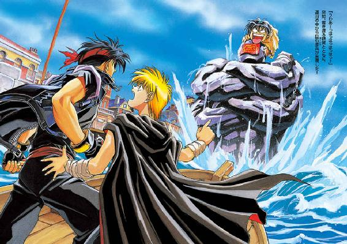
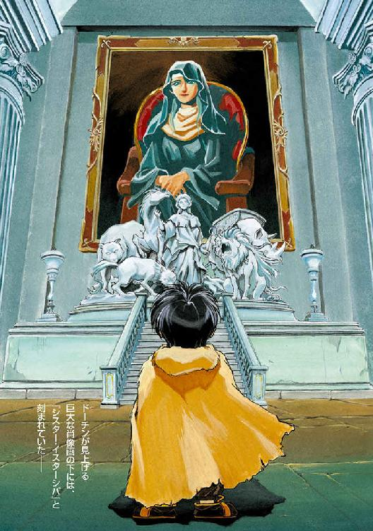

| 魔術士オーフェンはぐれ旅 新装版1 | |
| 秋田禎信 | |
| ティー・オーエンタテインメント (2011) | |


この作品は縦書きでレイアウトされています。
また、ご覧になる機種により、表示の差異が認められることがあります。
一部の漢字が簡略字で表示されていることがあります。
イラスト：草河遊也Ｙｕｕｙａ Ｋｕｓａｋａ
デザイン：ヴェイアＶｅｉａ
◆プロローグ
「見ないで！」
だが彼は見ていた──というより、身体がマヒしてしまったように身動きがとれない。部屋の入口に立ち尽くして、彼はただぼうぜんと彼女を見下ろしていた──
部屋はこざっぱりとしていて、生活に必要なものを適当に部屋の四隅に押し付けただけ、といった感がある。古いベッドがあり、机があり、書棚があり、服を入れる棚があり、窓には厚ぼったい生地のカーテンが引っかけてあるだけ。床には擦り切れた絨毯が敷かれている。その床にひざまずくような格好で、彼女は自分の顔を両手で覆いながら叫んだ。
「見ないで！ お願い！」
しかしその絶叫を聞いても、彼は表情を失ったようにぴくりとも動かなかった。
十五歳ほどの、小柄な少年である。黒髪に黒い目は、幼さを残しつつ、いずれ訪れる成熟の兆しにやや陰っている。全体的に、少年は痩せていた。とは言え幼いときからくりかえされてきた戦闘訓練のおかけで決して弱々しくはなく、その細い身体は、なにか鋭い刃物のように真っすぐに突っ立っている。
彼には、目の前で起こっている事態がなにひとつ理解できていないようだった。わかるのは、彼女が『見ないで』と叫び、そして床に座り込んで泣いている、ということだ。
「アザリー、泣いてるの？」
それがとてつもなく不思議なことであるかのように、少年は聞いた。
だが、彼女は答えない。やはり両手で顔を覆い隠したまま、見ないでと叫ぶだけだ。
彼女はゆったりした黒いローブのようなものを着ていた──これはこの大陸の黒魔術士の総本山である《牙の塔》における制服のようなもので、ある程度以上の位の者だけが身につけることを許される。彼女のような若さ──まだ二十歳ほどの若年でこのローブを身につけている者は、絶無ではないが、めったにいるわけでもない。ウェーブがかった黒い髪は、恐らく戦闘訓練をこなすためだろう、かなり短くしている。顔は、ずっと隠しているために見えなかったが、指の隙間からわずかに茶色っぽい瞳がのぞいている。背丈は同年齢の男と比べても見劣りせず、また四肢も引き締まっていた。
「見ないで！ お願い、出ていって──」
彼女はまた叫んだ。そしてその声が泣き声ではないということに、少年は気づいたらしい。彼女の声は、どちらかというと怒っているようだった。
少年は入口から一歩つま先を踏み入れて、不安そうな声をあげた。
「アザリー、なにが起こったんだ？ 待ってて、先生を呼んでくる──」
「駄目！──いえ──」
彼女は激しく叫んでから、言い直した。顔を両手で隠したままなので、声がくぐもっていて聞きにくい。
「いえ──無駄よ。チャイルドマンも──誰も呼ばないで」
「でも──」
「いいから、出ていって！ 早く！」
彼女は片手だけをこちらに振って、命令した──と、少年はその手を見て、ぎょっとした。戦闘訓練によって手の皮の厚くなった彼女の指は、お世辞にも繊細で美しいとは言いがたいが、そのとき少年の目には、彼女の指になにか鉤爪のようなものが生えているのが見えたような気がしたのだ。
少年は我が目を疑うようにしばたいて、叫んだ。
「アザリー？ その手──」
「お願い、早く出ていって！」
彼女がまたくりかえす。その瞬間、ごわっと──彼女の頭のてっぺんあたりで黒髪が盛り上がった。びちびちと、血管を引きちぎるような音が響き、なにか体液にまみれた触手のようなものをはね散らかしながら、その髪の中から、明らかに人間の器官には含まれていないような肉の塊が飛び出す。ぶちん！ と音が弾けて、彼女の足元になにかが落ちた。ちぎれたベルトである。見ると彼女の腰は不自然に歪み、膨張して──
少年が悲鳴をあげた。
このときになって、彼も理解したようだった──彼女はなにか、人間以外のモノに変化している。
彼女の膨張した腰が服の下であふれて、柔らかい布地を切り裂き、彼女の背中でそそり立った──巨大な、コウモリのような皮の翼。同時に彼女は震え出し、だらり、と口腔から体液のようなものを吐き出した。顔を押さえた指の隙間から、肉片の混じった血が床に滴る。その口腔も、あごが外れるほど開き、赤トカゲの頭のような舌がのぞいている。
「見ないで！」
その叫びだけが、さきほどから変わらない。彼女のものだった。
「アザリー──」
少年が叫びかける。だが彼はそのあとの語が見つからなかったように口をつぐんだ。
その間にも、彼女の変貌は続く。ローブの生地を引き裂き、剥き出しになった彼女の肩は、あっと言う間に鱗の浮き出た緑色に変じた──気が付くと腕が四本に増え、身体そのものも三メートルほどまで、膨れ上がっている。
彼女──いやさっきまでは彼女であった異形の物体は、自分の長い尾を追いかけるようにぐるりと一回転すると、一声また「見ないで......」とつぶやき、焼けただれたような瞼に隠れた目玉を燃え上がらせ──
巨体に見合わない素早い動きで《塔》の窓から身体を乗り出すと、翼を空打ちし、轟音を立てながら──外へと飛び出していった。
少年はあわてて彼女の吐き出した血だまりを飛び越えて窓に駆け寄った。だが、もうそこから見える場所には彼女の姿はない。
彼はある種の陶然とした表情を浮かべて、震えながら部屋の中を振り返った。彼女の残した血だまりの真ん中に、さっきまでは気づきもしなかった鉄の物体が落ちている。血と錆に汚れて黒ずんでいる、一振りの古風な剣。
以後少年は長い間、彼女の姿を見ることはなかった──何年間も。何年間も。
◆第一章 商売の日に
何年間も──何年間も──歩きつづけて──
──どんどんどんっ！──
「起きろ、てめえ！ とっとと起きねえと棒でつつき殺すぞ！ おいコラ！」
激しくたたかれるノックの音に、オーフェンはいらいらと寝返りを打った。安宿の薄っぺらなベッドではあるが、寝ている当人にとってはそんなことは関係なく、居心地はいい。
「前々から言ってあったろうが！ 今日は商売の日だぞ！ 俺の計画を全部ぶち壊すつもりか？ オイ、とにかく出てこなけりゃ殺すぞ！」
靄がかかったようにぼんやりとしたオーフェンの意識に、だんだんとそれらの怒声が染み入ってくる。彼は、腫れぼったいまぶたをゆっくりと開いた。油じみたシミのついた木の天井を見つめ、そして、不快そうに窓の外へと視線を転じる。
窓から射し込む陽光の角度から見て、昼前、といったところか。
扉をたたく声は、ますます高まった。
「てめえ！ 是が非でも出てこねえつもりか？ お？ 死にてえってんだな？ ようし、とにかく出てこい！ 今日という今日こそ、このボルカノ・ボルカン様が引導をつき渡してくれる！」
（出てったら......殺される？）
オーフェンはやや寝ぼけぎみに、そんなことを考えていた。
（誰に殺されるって？ ボルカノ・ボルカン？ あの寸詰まりにか。くそったれが──）
彼は、自分の上に広がったシーツをはぎ落とすと、上半身だけを起き上がらせた。一言、
「うるせえっ！」
と扉に向かって怒鳴り返し、裸の胸をぼりぼりと掻く。静まり返った扉に向かって唾を吐いて、彼はベッドのわきの椅子にひっかけてある自分のシャツを乱暴に着込んだ。ついでに、同じ椅子の背につるしてあるペンダントも取り上げる。細い銀の鎖の先に、やはり銀細工の、剣にからまった一本脚のドラゴンの紋章が、ちらちらと輝いた。
それをいったん手のひらにのせ、銀のドラゴンに呼びかけるようにオーフェンはつぶやいた。
「俺を殺すんだってよ？」
苦笑してから、首にかける。
同時に、どん！ とひときわ激しく扉がたたかれる音がした。
「なにがうるせえってんだ！ 誰のためにこんな油臭えところまで迎えにきてやってると思ってんだ！」
オーフェンは無視してベッドから降り立ち、部屋の隅っこにかかっている鏡をのぞき込んだ。二十歳そこそこの、やや拗ねたような顔立ちの黒髪の若者の顔が、そこに映る。寝起きのためにやぶにらみになっているが、考えてみれば、彼が鏡をのぞいたときには、彼の黒い双眸は、いつも皮肉げにつりあがっていたような気がする。
扉の外の声は、ますますヒステリックに高まっていった。
「てめえいいかげんフザケタことばっか言ってっと、ローラーでひき殺すぞ！ いいからとっとと出てきやが──」
オーフェンはうるさそうに扉に顔を向け、右手を突き出すと口早に唱えた。
「我は放つ光の白刃！」
瞬間、かっ！ と純白の閃光が部屋に満ち、オーフェンの手から光の帯のような光熱波が放たれる。白光の奔流は頑丈な木の扉にぶち当たると、すさまじい轟音を立てて爆裂した。扉が砕け散り、爆砕された粉塵が砂煙のようにあたりに立ち込める。
ぽっかりと、跡形もなく飛び散った扉の向こうで、毛皮のマントをまとった身長百三十センチほどの少年が、呆然と目を見開いていた。旅塵にまみれた格好は薄汚れており、黒い髪もここ数日は洗った気配がなく、ぼさぼさになっていた。目は真ん丸で、ブラウンというよりは薄い黒といった色の瞳孔が、大半を占めている。
オーフェンはその少年に向けて、半眼で聞き返した。
「出て、きやがれだ？」
「......出てきて、くださると──当方としても僥倖かと存じます......」
粉塵の中で少年は、恐る恐る小声で言い直した。
「よろしい。これからは年長者には敬意を払え。いいな？」
オーフェンはそう言うと、満足げにその少年を観察した──やや小太りの印象を受けるその地人の少年は、年齢は確か十八歳くらいだろう。身長百三十センチは、体格の小さい地人たちの基準では、まあ普通の大きさだ。地人の伝統的な装束である毛皮のマントをすっぽりとまとい、その下には肉厚の長剣の鞘がのぞいている。
少年──ボルカンは、まだ焦げてぱりぱりと音を立てている扉の破片を見下ろしながら、ゆっくりとこちらを見返してきた。
「ええと、それであの、オーフェン様、僣越ながらお迎えに上がったわけでございますが」
「飯を食ってから行く。外で待ってろ」
「はいです」
ボルカンはそうつぶやくと、目を見開いたままの顔で、ばたばたと廊下を駆けていった。
彼が階段でつまずき、罵声をあげるのを聞きながら、オーフェンはおおきく伸びをした。
「商売の日、か。だがその前に──」
粉砕された扉にまたもや右手を突き出してから、
「我は癒す斜陽の傷痕」
彼が唱えると同時、扉の破片がぴくりと動いたかと思うと、時間が逆もどりしたようにいきなり空中で組み上がり、もとにもどった。オーフェンはぶらりと歩いて、もとどおりの木の扉に近寄り、指で触れた。つぶやく。
「ま、上出来かな」
扉の真ん中に少し焦げ目が残ってはいたが、彼は肩をすくめて無視すると、ドアのノブを軽く押しやった。
バグアップズ・インと呼ばれるその寂れた安宿に客が来たのを、オーフェンは見たことがなかった。そのくせ複雑に入り組んだ商都の裏路地にあるこの宿は、いつもきちんと手入れされており、えらく古い建物だということを別にすれば、悪い宿ではない。
オーフェンが二階の客室から下りてくると、酒場のカウンターで亭主のバグアップがにこにことグラスを磨き、息子のマジクが床をモップで拭いている。実の親子のはずなのだがふたりはまったく似ておらず、海辺の街であったならまず間違いなく海賊と間違われたであろうバグアップに対して、マジクはまさしく紅顔の美少年然としていた。素直な目の、金髪のこざっぱりした若者である。と、マジクが顔を上げて挨拶してきた。
「ああ、オーフェンさん、お目覚めですか」
ここ二年ばかりこの宿を利用し、すっかり顔なじみになっていたオーフェンは、気安く手をあげて返事した。
「目覚めもなにも、あの馬鹿にたたき起こされたよ」
「ものすごい音がしましたけど」
「扉をぶち抜いてやったのさ。直しておいたけどな」
言いながら、オーフェンはカウンターの席についた。髭の奥でにこにこしているバグアップに、軽い昼食を頼む。
「仕事がどうとか騒いでいたね？」
オートミールの入った鍋に火を入れるため最近導入した彼自慢のガススイッチを入れながら、バグアップ。荒海と釣り針の嵐でもまれ潰されたような容貌でいながら、やけに声だけは優しく、好々爺といった感じだった。
オーフェンはカウンターに肘をつき、嘆息まじりに答えた。
「ああ。ボルカンの奴が、なにか儲け話を見つけたらしい。詳しいことはまだ聞いてないんだけどな」
バグアップが、にやりとする。
「その様子じゃ、あまり期待はしてないようだな？」
「そりゃそうさ。あいつの持ってきた仕事がうまくいった試しなんぞ、一度もねえんだ」
「だったら、無視すればいいじゃないか」
おもしろがるように、バグアップ。オーフェンは皮肉に口元をゆがめて答えた。
「知ってるだろ？ 奴に金を貸してるんだ。どうにかして儲けてもらって利子をつけて返してもらわにゃ、こちとら破産だよ」
「だからモグリの金貸しなんぞ、やらなきゃよかったんだ」
「そうなんだよな......どこの世の中に、金を貸した相手に儲けてもらうために手を貸すような借金取りがいるんだか」
「ここにいるじゃないか」
揚げ足をとってバグアップは、温まったオートミールを皿に移してカウンターに差し出した。オーフェンはそれを受け取り、くるりとマジクのほうに振り返った。
「なあ、後で魔術を教えてやるから、月謝を払うつもりはねえか？」
「ほんと？」
ごつん、と椅子の脚にモップをつまずかせ、マジクが顔を輝かせる。
「おいおい、人の息子を怪しげなことに勧誘するなよ」
後ろからバグアップが注意するのに、オーフェンは胸のペンダントを掲げてみせた。彼の持ち物の中では、ほとんど唯一価値あるものと言っていいそれを見せびらかしながら、
「《牙の塔》出身の、れっきとした黒魔術士オーフェンが指導するんだぜ？ 立身出世のチャンスってもんじゃねえか」
「マジクに魔術の才能があるとは思えんね」
バグアップは自分の口髭をしごきながら、さらに付け加えた。
「それに当の本人が破産寸前でぴーぴー言ってるときに、なにが立身出世だよ」
「一応これでも、宮廷魔術士にならないかって話もあったんだぜ？」
「それで選考会のときにカンニングがばれて失格になったんだろう？ 聞き飽きたよ」
「大丈夫だって。マジクには才能がある──俺みたいな天才にしか分からないなにか、こう......フィーリングみたいなモンがだな──」
「本当ですか？」
「おい、真に受けるなよ、マジク」
バグアップは髭をいじるのはやめて、流し台に置いてあったグラスを再び磨きなおしはじめた。
「こいつが宮廷魔術士──《十三使徒》の候補になったわけがないだろう？ そんな力のある魔術士が、いくら落ちぶれてもモグリの金貸しになんぞなるもんか。お前に才能があるなんてのも、でまかせだよ」
そう言って、酒場の隅に息子を追っ払ってから、バグアップはオーフェンに念を押すように言った。
「息子をからかうのもいいかげんにしてくれよ──思い込みの激しい奴でな。お前さんの言うことを、なかば信じかけてるんだ」
「ひでえな。俺はウソなんかなにもついてないってのに」
オーフェンはふてくされた声音でそう言うと、潔癖なまでに磨かれたスプーンでオートミールをかきまぜた。
「ホントにマジクには才能があるんだよ。十四歳だったっけか？ こんな客の来ない宿でモップがけなんかさせてねえで、ちゃんと学校に通わせてだな──」
「学校には行かせてるよ。読み書き、算術、神学の初歩──」
「普通の学校じゃない。どっか有名な魔術士の教室にだよ」
「それで最終的に《牙の塔》を目指せとでも言うのかい？」
「そうは言わないさ。あそこは......ちょっと特殊な教室だからな」
オーフェンは少し気まずそうに身を退き、もごもごとつぶやいた。スプーンから手を放し、またペンダントの紋章に触れる──この紋章は《牙の塔》出身の黒魔術士にのみ贈られる、一種の身分証明だった。
だがバグアップはモップで床を磨く不機嫌顔の息子のほうを見ており、オーフェンの表情の変化には気づいていないようだった。彼は、なにげない口調で、ぽつりと聞いた。
「だいたいなんで、マジクに魔術士の才能があるなんて思うんだ」
オーフェンも、似たような口調で聞き返す。
「力ある魔術士の条件がなにか、知ってるか？」
「さあな。処女から生まれるってことか？ なら言っとくが、あれの母親は......」
それはさえぎり、オーフェンは続けた。
「純粋で真摯な情熱。それが力ある魔術士の条件だよ」
それを聞いた瞬間、バグアップは吹き出した。彼はグラスを取り落とさないように流し台に置いてから、言い切った。
「だったら、あんたが力ある魔術士なわけがないな」
オーフェンは、なんとでも言いやがれとばかりにフンと鼻息を吹くと、仏頂面でオートミールを征服にかかった。
◆◇◆◇◆
「ふざけやがって、あの人間め！」
ボルカノ・ボルカンはバグアップズ・インの前の路地を行ったり来たりしながら、鼻息荒く毒づいた。
「力をひけらかしやがって、まったくいやらしい野郎だ！」
一方、酒場の入口のわきに置いてある空の水樽に、もうひとり、似たような姿の地人が腰掛けて足をぶらぶらさせている。ただしこちらはボルカンよりもひとまわり体格が小さく、年齢も少し下のようだった。度の強そうな眼鏡をかけ、樽の横に、彼のものであるらしい馬鹿でかい皮のザックが転がっている。ボルカンのように剣は持っていないものの、その皮袋の大きさからすれば、とても身軽な旅装とは言えたものではない。下手をすれば自分自身が中に入れるような袋である。
そちらの眼鏡をかけたほうの地人に向き直り、唐突にボルカンは同意を求めた。
「そうだろう？ ドーチン」
「......え？」
ドーチンと呼ばれたその少年は明らかに聞いていなかったらしく、ぼんやりと聞き返した。ボルカンが、機嫌の悪い表情をさらにしかめて、くりかえす。
「あの人間の黒魔術士のことだ。態度がでかすぎると思わんのか？」
ドーチンはそれを聞いて、少し迷うように虚空を見上げた。
「でも、あの人にお金を借りてるのは兄さんでしょう？」
どうやらこのふたりは兄弟らしい。
ボルカンは、かっと火でも吹くみたいに口を開いた。
「つまり、俺はあいつのお客だろうが！」
（期限内に返済できなければ、顧客とは言えないよ）
ドーチンは反射的にそう思ったが、あえて口に出しはしなかった。
それを同意と見て取ったのか、ボルカンは勢いづいて続ける。
「それを、奴は自分が主人のようなつもりでいばり散らして、なにをするのかと思うと、俺が用意した商談をことごとく台なしにするだけだ！ まったく、人間ってのはロクな奴がいないが、奴はその極めつけだな」
（いつも商談を用意するのはぼくじゃないか）
これも声にならない声。
とは言え、今日用意された商談に限ってはまぎれもなく、この兄が用意したものだった。もっとも、そのせいでドーチンは朝からなんとなく不安を感じているのだが──彼は、今日も儲け話というのをボルカンから何度も聞き出そうとしたのだが、兄は頑として話してはくれなかったのだ。
ドーチンの経験からすれば、これは良い兆候ではない。
ボルカンは、なおもぶつぶつと続けている。
「だいたい、なにが年長者だ。たかだか二、三年ばかり、俺より長く生きてたってだけのことだろうが。くだらん──その程度のことで、いちいち先輩面されたんじゃ──」
（じゃあ、あんたがぼくに兄さん面するのは、なんなのさ）
ドーチンはまたもや胸中でつぶやいて、路地に吹き込む春の風を感じながら、空を見上げた。トトカンタ市を見下ろす空はまばらに雲を散らばらせて、ぷかぷかと、いつでも頭の上に落っこちてきそうに見えた。
◆◇◆◇◆
かっち、こっち、かっち、こっち......
噴水の中心に立つ女神を象ったらしい時計が、子犬と母犬を模したふたつの振り子を交互に揺らして笑っている。優雅にして豪壮な調度に囲まれた客室で、オーフェンはほとんど絶望的な思いに浸っていた。
暖炉には火は入っていない──もう完全に初夏に近づいた陽気で、それには不都合はなかった。純白のテーブルクロスには目が痛くなるような細かい刺繍が施され、部屋の隅で銀色の剣を交えた空っぽの二体の甲冑は、なんだかこちらをにらみつけているようにも見える。ともすればつまずいてもおかしくないようなぶ厚いカーペットは深く落ち着いた赤で、彼が腰掛けているのは、多分同じ大きさのものを宝石で作ったものよりも価値があるであろう繊細な彫り込みの入ったカウアー樹の椅子。天井のシャンデリアは、下手をすれば昔のオーフェンの下宿の部屋そのものよりも大きいかもしれない。そんな中で、オーフェンはひどく混乱していた。最初は、自分を取り巻く状況が分からないための困惑であり、今はこの状況から逃亡するための焦燥である。
実のところ、オーフェン自身も盛装させられている。息苦しいタキシードのようなものを着せられて、例の紋章はポケットの中である。彼の横には、スケールこそ違うものの似たような格好のボルカンとドーチンが並び、ボルカンはさっきからにこにことひとりでしゃべっている。ドーチンは、こちらからその表情をうかがう気にはなれなかったが、真っ青に震え上がっているのが気配で分かった。
「実業家でいらっしゃるそうね、お若いのに」
年齢の分かりづらい、小柄な中年の女性──ボルカンの対面に位置する──が、口元に軽く手を当ててそう言ったとき、オーフェンの背筋に戦慄が走った。どう答えたらいいものか言葉を失したオーフェンの横から、ボルカンが口をはさむ。
「ええ。国では、ブルプルワーズ株式会社の名を知らない者はありませんよ」
「株式会社？ 聞き慣れないわね」
「え、ええ。つまり、その──一言で説明するのは難しいのですが──」
ボルカンは、いきなり口ごもった。
「要するに、株があるわけです。株があってこの──会社があるわけで、つまり株があれば一事が万事、ってところですかな」
しどろもどろにつなげる。オーフェンは、軽く頭を抱えてめまいを抑えた。
「ところで、ブルプルワーズさん──」
オーフェンは、それが自分の名前であることに気づくのにしばらくの時間を要した。
「は、はい、マダム？」
ぱっと顔を上げて、なんとなく上流にふさわしそうな単語を口に出す。
婦人は、にっこりと続けた。
「あまりおしゃべりになられないのですね。まあお見合いをする男女というのは、普通はそういうものですけれど。うちの娘も、ふだんはこうじゃありませんのよ──」
言って彼女は、自分の横にちょこんと座って押し黙っている若い女性を軽く示した。紹介された名前は、確かマリアベルだったか。マリアベル・エバーラスティン。かたわらの母親が、ティシティニー・エバーラスティン。
オーフェンが改めてマリアベルに視線をもどすと、彼女は、にこりとほほ笑みかえしてきた。さっきから一言も声を聞いていないのだが、見たところ清楚な印象の、ブロンドのお嬢様といった感じである。いや、感じではなく、実際にお嬢様なのであろうが......
年齢は、オーフェンよりは年上であろう。二十二、三といったところか。かなりの美女だが、その年でこの人見知りというのは、少々間の抜けた感じにオーフェンには思えた。
（とは言え、本当の間抜けは俺だ）
彼は胸中で断定した。
（この馬鹿の儲け話なんぞ真に受けてないで、素直にマジクの家庭教師でもやってりゃ良かったんだ。この馬鹿が、この馬鹿が、この馬鹿が──）
隣に座ってのんきに茶などすすっているボルカンを、表情には出さずに憎々しげににらみつける。
（要するにこいつ、結婚詐欺を計画したってわけか！）
それで、このトトカンタ市でも有数、とまではいかなくともかなりの名家ではあるエバーラスティン家に見合いに参じているのである。ボルカンがどのようにしてこんな酔狂な縁談をでっちあげたのかは知る由もないが、とにかくオーフェンは絶望に目の前が暗転するのを感じていた。
「ところで──」
ティシティニーが、事もなげに聞いてくる。しばらくは娘になにか話させようと、まるで飼い犬に芸をさせようとでもするように促していたのだが、とうとうあきらめて自分で口を開いたわけである。
「ところで、ブルプルワーズさんは、どのようなお仕事をなさっていらっしゃるの？」
「え？」
追い詰められた子供のような声を上げたオーフェンの前を横切るような格好で、またもやボルカンが口をはさんだ。
「す、睡眠薬の栽培です！」
（この馬鹿──）
オーフェンがなにかフォローする間もなく、ティシティニーはただ話題を継続するという義務感のため、次の質問を発していた。
「まあ、睡眠薬というと、どのようなものがあるのかしら」
「え？ いえ、それは専門家でないと──」
言いかけたボルカンをさえぎり、オーフェンはすらりと答えた。
「市販されているものの多くは、特に高原などで栽培されたものを粉末状にして飲みやすくしたものですが、どちらかというと睡眠薬は永眠薬といったもののほうが多いのですよ」
「永眠薬？」
「平たく言えば、毒薬ですね」
「まあ」
ティシティニーは開いた口に手を当てて絶句した。慌てて、ボルカンが声をあげる。
「もちろん、我が社で扱っているものには、そのようなものは含まれておりませんが」
言いながらこの盛装した地人はテーブルの下でオーフェンのももをつねり上げた。オーフェンも眉ひとつ動かさず、その手をつねりかえす。
（なんで睡眠薬なんだよ！）
小声で聞くと、さすがにボルカンは苦しそうに答えた。
（上流階級のご婦人とくりゃ、睡眠薬は必需品だろうが！）
オーフェンはあえてそれ以上は追及せず、とにかくブルプルワーズの顔を作った。薄く笑みを浮かべ、黙ってマリアベルを観察する。
女の笑みほど当てにならないものはないと承知しながら、それでもオーフェンには、彼女がこちらに多かれ少なかれ好意を持ってくれているのではないかと思えた──もっとも、黒魔術士の地位から脱落して金貸しをしている平民オーフェンにではなく、この街から遠く離れたアーバンラマの実業家ブルプルワーズに対する好意ではあるが。アーバンラマはひどく遠い上、この大陸に残された数少ない自治都市であるため、ティシティニーがいくらこの縁談に関して猜疑的であったとしても、まだオーフェンの正体を突き止めてはいないだろう。そういう意味では、このボルカンのお膳立ては、そんなに的外れなものではなかったというわけだ──とは言え──
（普通、結婚詐欺ってのは、勝手を知らない一人暮らしのお嬢ちゃん相手にするもんなんじゃねえのか？）
エバーラスティン家は貴族ではないが、平民のオーフェンにしてみれば、貴族と同じと言っても差し支えない商家の末裔である──先代の当主に先立たれ、ティシティニーが切り盛りをする現在では、商取引からは手を引いて過去の財産を切り売りして生計を立てているはずだが、もしそうでなかったとしたら、ボルカンのウソなどたちまち見抜かれてしまっただろう。あるいは、そのほうがよほど面倒がなかったかもしれないが。
オーフェンはそんなことを考えながら、ぼんやりとマリアベルの顔を見つめていた。彼女がにっこりと、ほほ笑みかけてくる。
ほほ笑みかえしながら、オーフェンは思った。できればあんた、ボルカンと結婚して奴の借金を返済してくれないかね？
「この無能の魔術士、アドリブのひとつもきかないのか！」
ティシティニーとマリアベルが屋敷のどこかへと退き、客間に三人だけになると、ボルカンがいきなり怒鳴りつけてきた。ドーチンは緊張のせいで椅子にもたれかかり、首切り台に押さえ付けられた囚人のようにぐったりしている。
「アドリブだと？」
オーフェンは憎々しげに聞き返した。
「突然こんな窮屈な貸衣装を着せられて、なんの説明もなしにこんな馬鹿でかい屋敷に連れ込まれて、しかも名前はブルプルワーズだ？ 睡眠薬の栽培をする株式会社だと？ いったい俺になにを期待してんだよ」
「うむ」
と、真顔でボルカン。
「その会社の社長になりきって相手に毛ほどの疑念も抱かれずに結婚までこぎつけることだ」
「なるほど、よく分かったよ......って、はっきり言い切ってんじゃねえよ」
オーフェンは貸衣装がしわにならない範囲でボルカンを締め上げると、ドーチンをじろりとにらみやった。地人の弟は石でも投げ付けられたようにぱっと跳ね起きると、
「ち、違うよ。ぼく──ぼくは、この話は知らなかったんだ。兄さんが全部お膳立てしたんだよ......」
「本当だろうな？」
オーフェンが念押しすると、かわりにボルカンが答えた。
「そのとおり！ こんな大胆な計画を、ドーチンが立てられるわけがないだろうが？」
「だ・い・た・ん・すぎるんだよ！」
オーフェンはボルカンを──文字どおり──放り出し、きゃしゃな椅子から立ち上がると、この世の終わりのように両手をばたばたさせながら続けた。
「ったく、人をたたき起こして大騒ぎして、なにをやらかすかと思えば結婚詐欺とはな！ いいかげん呆れ果てたもんだ」
そのせりふを聞いて、ボルカンは驚いたように顔を上げた。
「結婚詐欺？ 恐ろしいことを言う奴だな」
オーフェンは凶悪な形相で振り返った。
「誰がお膳立てしたことだったっけか？」
「馬鹿を言うな」
ボルカンは平然と、
「詐欺なんて、人の純真に付け込んだ忌むべき犯罪じゃないか」
オーフェンはわけが分からずに、聞いた。
「じゃあ、これがどうして商売なんだ？ 俺に借金を返済するための商売なんだろう？」
ドーチンも疑問の面持ちで、兄のほうにそろそろと顔を近づけている。ボルカンは、ぽんと自分の胸をたたいた。
「そこが俺の機転というやつだな。つまりだ、俺の取り持ちで、お前を大金持ちの婿養子にしてやる。これだけの財産がお前のものになるわけだから、これはもはやあんなシケた借金なんぞ帳消しにな──うわあっ！」
ボルカンが言い終わらないうちに、オーフェンは地人を椅子ごと蹴転がした。
「てめえなあ！」
腕まくりした瞬間、ドアが開く。
オーフェンはとっさに身構えて振り返った。ボルカンもあわてて起き上がろうとし、ドーチンは意味もなく悲鳴をあげそうになっている。三人の視線の集中した戸口には、年の頃十七、八といった少女がぽかんと立ち尽くしている。
「君は──」
なんとか取り繕おうとオーフェンが口を開いたのを待たずに、少女はそれを制止した。
「あ、ごめーん」
扉が、ぱたんと閉じる。
一秒後、ドアがノックされた。
「ど、どうぞ──いや待って」
オーフェンは口ごもりながら、椅子といっしょに転倒したままのボルカンを助け起こした。兄弟ともどもテーブルのわきに体裁よく並べてから、扉に向かって言い直す。
「どうぞ」
扉が開き、さっきと同じ少女が顔を突き出した。彼女はくすりと笑って、お辞儀した。
「ノックを忘れてたわ。でも、わたしのこと礼儀知らずだと思わないでね」
マリアベルによく似た感じの、だが彼女より少し活発そうな少女である。オーフェンは直感で、この少女がマリアベルの妹だと気づいた。白い、ドレスよりは生活向きかと思われるヒラヒラしたワンピースを着ていて、それがよく似合っていた。マリアベルよりは髪が短く、マリアベルよりさらに小柄で、しかしマリアベルより声は大きそうだ。
とにかく、今までの自分たちの会話は聞かれていなかったらしい──と踏むと、オーフェンも辞儀を返した。
「礼儀知らずと言えば、お客に自己紹介もしてもらえないのかな？」
「あ、ごめんね。わたし、クリーオウ」
彼女はそう名乗ると、年下の子供にでもするように、ちょこんと小さい手を差し出した。オーフェンが握手すると、彼女は少し顔をしかめた。
「ずいぶんと堅い手ね」
「あ──つまり、社長ご自身も畑仕事に精出しているからでありまして──」
いきなりオーフェンとクリーオウの間に割り込むように出てきたボルカンを、少女からは死角になるように後ろから黒魔術士は蹴飛ばした。
そして、言う。
「アーバンラマでは、男女ともども市民のすべてに一定年数だけ、兵役が課せられているんですよ。たった二年でも軍の基礎訓練を受ければ、手の皮だって厚くなります」
「へえ──そういえば、そんなことは聞いたことがあったんだわ」
クリーオウは明らかに間違った文法を使ってそう言うと、自分の手を引っ込めた。
（よし。さっきの会話は聞かれてなかったようだな）
だがオーフェンが確信した瞬間、クリーオウはにっこりと言った。
「ところであなたたち、結婚詐欺師なんでしょう？」
ぶっ──とオーフェンは吹き出して、聞き違いかというように顔をしかめた。だが、クリーオウはにこにこと続ける。
「ねえ、お姉ちゃんをだますの？ どのくらいだますの？ ねえ」
「あ、あの......いったいどうして......」
引きつりまくった顔で、オーフェン。ちらりと見ると、ボルカンとドーチンは抱き合って震え上がっていた。金持ちをだまそうとしてから後、幸福な一生を送った人間という話は、あまり聞かない。
クリーオウは、一瞬オーフェンの質問の意味が分からなかったような顔を見せたが、やがて、ああ、と手を打った。
「えっとね。聞き耳を立ててたの。ドアの外で」
「い、いつから」
「う～ん......まあ、わりと最初っからかなあ」
（あのなあ）
オーフェンは胸中で神──だかなんだか──に祈りつつ、この少女を人質にとって街の外まで逃亡する計画を検討した。考えるまでもなく、ボツ。明確な根拠はなかったが、この娘はなんとなく、喉元に刃物を突き付けられても「あ、わたし、刺さってもいいの？」と聞き返してきそうだ。
オーフェンがうめいていると、クリーオウが気を引くようにその手を取った。さっきの質問をくりかえしながら。
「ねえ、お姉ちゃんをだまして、ひどい目に遭わせるんでしょう？」
「いや、その──」
オーフェンはなんとかこの窮地を脱することができそうな画期的な言い訳を模索しつつ、
「これはね、その、そういったことではないんだ──」
と、その瞬間、後ろからボルカンが続ける。
「俺じゃない！ 俺が計画したんじゃない！」
オーフェンは無視して、
「つまりね、俺──いや、我々魔術士同盟のスタッフは、民間人の詐欺に対する警戒度をチェックするために──」
「俺が計画したんじゃない！ こいつが俺を無理やり──車轢きで責め殺すと俺を脅して──」
「ひどいよ、兄さん！ ぼくがいつそんなことを──」
「この詐欺・詐称の蔓延する世の中に、我々は革新的なシステムでもって対応を──そのためには入念な情報収集が──」
「俺はなにも悪くない！ 最初から反対していたんだ！」
「嘘だ！ 兄さんが全部お膳立てして、ぼくらを連れてきたんじゃないか！」
「我々は日々犯罪と戦っているのです！ みなさんにはどうぞご協力──」
「そうだ！ この邪悪な黒魔術士が、俺を洗脳したんだ！ 毎晩毎晩、鳥の羽でくすぐり殺す悪夢で俺を脅迫して──」
「ぼくはなにも知らなかったんだ──」
「や・か・ま・し・いいいっ！」
オーフェンはありったけの大声で叫ぶと、光熱波を地人の兄弟の足元にたたきつけた。爆音が轟き、この大きな屋敷が振動する。高価な絨毯に開いた大穴がぶすぶすと音を立て、もうもうとわきたつ粉塵が空気に紛れて消えると、ボルカンとドーチンは爆風で吹っ飛んで部屋の隅に転がっていた。まあ、頑丈な地人たちのことだから、この程度ではケガもないだろうが。
「お前らなあ、人がせっかくナイスな言い訳を必死こいて熱演してるときに、いちいちそれをぶち壊しにするんじゃねえ！」
そんなに出来のいい言い訳だったかなあというような顔をしながらも、なにも言わずにドーチンはむっくり起き上がった。兄のほうは、完全に気絶しているらしい。
オーフェンはなおも凶暴な面持ちで兄弟のほうへと足を踏み出しかけたが、いきなり奇妙な音を聞いて、立ち止まった。ふりかえると──
クリーオウが笑っている。
ティシティニーとは違う、下町の少女のような仕草でけらけらと笑いながら、クリーオウは言った。
「分かったわ。あなたたち、芸人なんでしょ。聞いたことがあるわ──いきなり人をだまして、あとで看板持って出てきて『ドッキリでした』ってやつ」
そんな気楽な商売があるならあやかりたい、と思いながらオーフェンが返答を考えていると、いつの間にか起き上がっていたボルカンが、クリーオウの手を取って言う。
「そのとおりです。お嬢さん」
「ちなみに詐欺罪は禁固十五年よ」
にっこりとつぶやくクリーオウに、ボルカンは豹変したように頭を抱えて泣きわめいた。
「俺はだまされただけなんだあーっ！」
「......なんか変だな、お嬢さん」
オーフェンはゆっくりと前に出て、ゴミでもどかすようにボルカンをわきに蹴転がした。
「クリーオウでいいわよ」
「じゃあクリーオウ。なんだか君は、俺たちを咎め立てしてるわけでもないみたいだ」
「うん」
少女はあっさり、金髪の頭を上下に振った。
「それなら、俺たちをどうするつもりなんだ？」
「わたしは、どうもしないわよ。警察に言うなら、お母様たちがするだろうし」
「......俺ら......主犯はこいつだが──君の家族をだまそうとしたんだぜ？」
「でもさっきの話を聞いてると、そんなに悪いことしようとしてるみたいじゃなかったわ。あなたがお姉ちゃんと結婚するってだけのことでしょ？」
「そりゃそうだが──」
オーフェンは渋い顔で、なんでこんなことを説明しなければならないのかと自問した。
「いいかいクリーオウ。君の姉さんは、俺のことを金持ちの実業家だと思ってるんだ。でも実際はそうじゃない。これはいずれバレる──」
「結婚すると互いの欠点が見えてくるのは避けられないものだって言うわよ」
「なるほど」
「ちょっと、なに納得してるんですか、オーフェンさん」
後ろからつっついてきたドーチンを見下ろして、オーフェンは少年の首根っこをつかみ、その耳元までかがみこんだ。小声でささやく。
（うるせえな。気が変わったんだ。この娘を味方につければ、無事に逃げられるかもしれんだろが）
（そ、そうかなあ）
ドーチンの声は不安げだった。オーフェンも同感だ。
だが、彼は少女のほうに向き直って、続けた。
「あのね──」
その瞬間、紛れもない爆音が屋敷を震わせた。
どうんっ！
同時に、窓ガラスの割れる音。壁がみしみしと押し倒され、張り裂ける音、その他、なんだか分からないような細かい破壊音──
爆発が屋敷全体を揺らし、その振動に足をとられて転びそうになったオーフェンが考えたのは、まず第一に身の安全──これは大丈夫だった。爆発は屋敷のどこかに違いないが、彼らのいる部屋からは遠いところだ。そして次に爆発の原因──これはさっぱり見当もつかない。しいて言えば、なにかの魔術の爆発というよりは、巨大な岩でも空から落ちてきてぶつかったような衝撃音だったが。最後に、この機に乗じてさっさとここから脱出しようということだった。
「逃げるぞ！」
オーフェンはボルカンとドーチンに向かって鋭く叫んだ。が、返ってきたのは要領のいい「おう！」という返事ではなく、恐慌状態に陥って意味もなく悲鳴をあげているドーチンと、さらに意味もなく弟を追い回してぽかぽか殴りかかっているボルカンの姿だった。
「お前らなあっ！」
いいかげん呆れ果て、このふたりを置いて自分だけ逃げようかという考えが脳裏に浮かんだが、すぐに却下せざるを得なかった──このふたりが捕まれば、自分の身元もあっさり判明してしまうだろう。そうでなくても、この地人の兄弟が警察の尋問に耐えてまでオーフェンのことをかばってくれるとはとても思えない。
「ねえ、待ってよ！ ブルプルワーズさんっ！」
叫んで彼の腕をつかんだのは、クリーオウだった。突然のことに、さすがにさっきまでの気楽な表情も引きつっている。
「俺はブルプルワーズじゃない！ オーフェンだ！」
「孤児？」
「ああそうだ」
と言いながらオーフェンは、本名を名乗ってしまった愚を自責した。が、もう悔やんでも遅い。彼はボルカンとドーチンをそれぞれ片手でつかみあげると、まるで赤い草原みたいに深い絨毯を踏み分け、手近な窓から飛び出そうと──
した瞬間、足首をつかまれて転倒した。顔面からモロに落下して、オーフェンは鼻を押さえながら振り返った。すると、落ちる花瓶でも受け止めようと滑り込んだような格好で、クリーオウが彼の足をつかまえている。
「なんなんだよ！」
オーフェンが叫ぶと、クリーオウは子供を叱る母親みたいな口調で、
「偽名を使ってたのね！ 名前を偽るのはみんな悪人だって、先生も言ってた──」
「知るかっ！」
オーフェンは半泣きになってわめいて、足首をつかむクリーオウの細い指を振り払おうとした。だがその瞬間、クリーオウの声がいきなり懇願する口調に変わる。
「ねえ、このまま出ていったりしないでしょ？ この家、男手がないんだから──きっと今の音、物置が倒壊したに違いないわ！ 昨日から風が強かったもの──」
（そんなわけがない。今の音は、間違いなく屋敷の中のどこかで爆発が起こったんだ）
オーフェンは胸中で答えながら、今はとにかく逃げなければ駄目だと自分に言い聞かせた。詐欺罪は禁固十五年だと？ 俺は今まで二十年しか生きてない。十五年前の──五歳のときの記憶なんてない。となると、その罪を犯したときの記憶もなくなるような年齢まで、俺は牢屋に入っていなければならないってのか。
「ねえ、お願いよ。お母様ったら、わたしに力仕事をさせようとするのよ！ お姉ちゃんには絶対させないくせに。お願いよ──」
「冗談を言ってる暇は──」
かっとして、彼が手を振り上げたとき──
悲鳴が響き渡った。女の悲鳴だ。
「お姉ちゃんの声だわ」
クリーオウが、ぱっと起き上がってつぶやく。
（くそったれが──）
俺は逃げなくちゃならんのだ、とオーフェンは自分に言い聞かせた。こんなところで十五年間も禁固刑に処せられている場合ではない。だが今の悲鳴、マリアベルは瓦礫の下敷きになっているのかもしれない。街中だから救助が遅れて瓦礫の下で窒息死することまではないだろうが、それでもケガをする可能性は必ずあるし、それが重傷でない保証はどこにもない。下手をすれば、もう圧死しているかもしれない。
「あの女の部屋はどこだ！」
オーフェンはボルカンとドーチンを放り投げ、クリーオウに詰問した。少女は、
「ついてきて！」
と叫ぶや否や、機敏な動作で駆け出した。オーフェンもそれを追って、廊下に飛び出す。
屋敷の中は、奇妙なほどに閑散としていた。豪壮な調度はあちこちに見られたが、さっきの爆発騒ぎにもかかわらず、駆け回る使用人の姿もない。爆発は屋敷の別の棟で起こったようで、応接間を出たばかりの廊下では、床の上に花瓶が落ちて割れている程度の痕跡しか残っていない。
「おい、逃げるんじゃないのか、黒魔術士！」
どうやら正気になって追いかけてきたらしく、ボルカンが後ろから叫びかけてくるのが聞こえた。ボルカンがいるなら、ドーチンもいっしょだろう。
オーフェンは、振り返らずに、やけくそになって答えた。
「俺はまた人生を棒に振ったぞ！」
そのせりふの意味を理解できたのはオーフェンだけだったのだが、その場では、誰も聞き返してはこなかった。オーフェンはクリーオウの後を追いながら、ただひたすら、動きづらい貸衣装を気にもせずに、長い廊下を駆けつづけた。
「ここよ」
クリーオウは、いつになく緊張した面持ちで──というよりは、なにかモノスゴイことを期待してわくわくしているような表情で、ひとつの扉を指さした。周りの白い壁によく似合ったオーク材の渋い扉で、あちこちに細々と繊細な彫刻が入っている。森をイメージした紋様らしい、とオーフェンは思った。
（森の中の眠れる美女ってトコか。瓦礫の下じゃ、見栄えはしねえだろうがな）
クリーオウは扉を開けようと、ノブをつかんだ──が、ひっかかったようにノブは回らず、がちゃがちゃと音を立てるだけだ。鍵がかかっている。
「どうしよう」
クリーオウは、頼るようにこちらを見上げてきた。
オーフェンはまかせろというようにうなずき、静かに目を閉じた。そのまま意識を集中させ、大きく呼吸する。
黒魔術士に限らず、このキエサルヒマ大陸の魔術士は、例外なく呪文によって魔術をかける──つまり声を媒体にして魔力を飛ばすのだ。だから呪文の声のとどかないところまでは魔術の効果も及ばないし、その効力は永遠には持続しない。声はいつしか風に紛れて消えてしまうものだからだ。
人間の魔術士には、ふたとおりあると言われている。オーフェンのような黒魔術士は熱や光といったエネルギーや、肉体そのものを扱う魔術に長けている。もう一方のものは白魔術士と呼ばれており、こちらは時間と精神を操る。後者のほうが難易度が高く、その資質を持つ人間もごくまれにしか生まれない。
オーフェンはイメージがわいたところで目を開き、手でノブに触れ、つぶやいた。
「我招かれる踏まれざる門」
この呪文の内容には、実は意味はない。ただ声を出しさえすればいいのであって、ただの意味のない叫び声であっても魔法はかかる。だが見栄えというものもあり、また戯言を叫んで自分自身の集中を失ってしまうのは馬鹿馬鹿しいので、オーフェンはその魔術の効果を端的に叫ぶのを好んだ。
とにかく魔術は効果を為し、手の中のノブはがちゃんと小さな音を立て、鍵が開いた。オーフェンは、ゆっくりと扉を押し開けた。
後ろでクリーオウが、それだけ？ と残念そうにつぶやくのが聞こえる。恐らく、彼がさっき見せたような光熱波で扉をぶち抜くつもりだとでも思ったのだろう。
それは無視して、オーフェンは部屋の中に入った──
そして、中の惨状に唖然とした。
彼の後ろでごそごそと身じろぎし、ボルカンがつぶやく。
「......なんだ、あれ」
ドーチンが続く。
「か──怪物ってやつじゃないかな」
「......黙れ」
オーフェンは、震え声で言った。彼は、身動きもできずに、その部屋にいるものを見つめていた。マヒしたように、身体が動かない......
部屋は半壊していた。外から巨大な隕石でも飛来したように壁には大穴が開き、トトカンタの整然とした町並みがよく見える。壁の穴と窓とがいっしょになって、窓だった部分にまだ張り付いている窓枠が、ぶらぶらと風に揺れている。クリーオウの言ったとおり、今日は風が強かった。ほとんどの家具は倒壊し、一番手前にある小ぶりの椅子も逆立ちするように転倒し、つぶれている。窓際に寄せられているベッドは二つに折れ、その上に居座っている未知の主人に戦いているかのように見えた。
マリアベルは、部屋の一番手前にいた。あまりの事態に呆然として、立ち尽くしている。瓦礫の下では見栄えはしないと考えたのは早計だったと、オーフェンは悟った。この一言も口をきいていない美女はほとんど半裸で、カーテンみたいに見えるドレスで身体の前を押さえ、細かく震えていた。どうやらいきなり席を外したのは、見合い中に色直しでもするつもりだったのだろう。となると、それほど彼の印象は悪くなかったのかもしれない。
ティシティニーは、娘のすぐかたわらにいた。いざとなれば娘の盾にでもなるつもりか、覆いかぶさるように自分より背丈のある娘に腕を回している。彼女もまた、ただ立ち尽くしているだけだった。
ティシティニーが悲鳴をあげる──察するところ、どうやらさっきの悲鳴も、マリアベルのものではなく、母親のものだったのだろう。口をきいたことのない美女は、やはりまだ口をきいてはくれない。
オーフェンがそれだけのものをすべて見回したとき、ひょい、と部屋の中にクリーオウが頭を差し込んできた。少女は遠慮のない大声で、言った。
「うっわー。すごい化け物」
びくり、とオーフェンは身じろぎした。
マリアベルのふたつに折れたベッドの上には、まさしくそのとおりのものが鎮座していた。
「推測その①」
ドーチンが、ごくりと唾を呑み込んでから、仮定を述べるのが聞こえた。
「腐りかけたドラゴンと灰色熊と異種交配して断崖絶壁から落としたところに巨大なザリガニが群がり、十六色くらいの絵の具を混ぜ合わせた濁り水をぶっかけたら、ああいうふうにもなると思う」
「黙れと言っただろう！」
オーフェンは視線はその怪物に向けたまま、馬が後ろ脚でやるように、ドーチンの顔面を蹴飛ばした。と言うか、実際に蹴飛ばされたのはボルカンだったが、ドーチンを蹴飛ばすつもりではあった。
「なにしやがる！」
ボルカンの怒鳴り声は上の空に、オーフェンは怪物を凝視した。似ている......
実のところ、ドーチンの描写はそれほど的を外れてもいなかった。べたべたな粘液に塗りたくられた表皮は鱗の上から剛毛のようなものに覆われており、体長は三メートルほどはあるだろう。重さにしてみれば、一トン近いかもしれない。首と胴の区切りはつけづらく、楕円形の物体に大ざっぱに頭部と無数の手脚をくっつけたようなシルエットである。いや脚は六本だと、オーフェンは数えた──ただ身体のあちこちからデタラメに生えている触手に細いものや太いものがあって、それが脚に見えることもある、というだけだ。手脚の先には鈍そうな鉤爪がついている。触手には、爪はついていない。背中に巨大な翼があり、その怪物の姿をますます大きく見せていた。
確かにドラゴンに似ている──街の外では野盗に次いで危険な獣であるドラゴンに。が、それはむしろ人間がイメージした『ドラゴン』というものの平均像に似ているのであって、実際にドラゴンを見たことがあるオーフェンは、その違いをいくつかあげることもできた。例えばドラゴンの目は緑色である。この怪物の瞼は焼けただれたように瞳を覆い隠し、まるっきり前が見えないのではないかとオーフェンは思った。融けた瞼は瞳だけでなくあごまで垂れ下がって、血のようなものを滴らせていた。
また例えばドラゴンには知恵がある──決して人間の多数集まる街に近づいたりはしない。この怪物になにか理性のようなものがあるのか──いや、残っているのか、とオーフェンは訝った。だとしたら、呼びかけに応えるはずだ──
「アザリー！」
オーフェンは叫んだ。
怪物は、ぴくりともしなかった。ゆっくりと──砂漠に住むトカゲのようにゆっくりとした動作で、頭を巡らしている。なにかを探すように。やはりこの怪物は目が見えないのだと、オーフェンは悟った。彼は、もう一度叫んだ。
「アザリー！ 俺──いや、ぼくだ！ ずっと探していた──」
オーフェンは両手を広げ、足を踏み出した。あわてて、後ろからボルカンが取り押さえようとする。
「お、おい、狂ったのか黒魔術士！」
「うるさいっ！」
オーフェンは気短にボルカンを振り払うと、また一歩、怪物のほうに近寄った。ボルカンが叫ぶのが聞こえる。
「おい！ どういうつもりか知らんが、今ここであの化け物を仕留められるのは貴様のくそったれな魔法だけなんだぞ！ 分かってるのか？」
「あれは化け物じゃない！」
「じゃあ、なんだってんだ。適当なコトぬかしてっと、耳かきでほじり殺すぞ！」
「あれは──」
オーフェンが言いかけた刹那、怪物が頭をもたげ、天井に向かい──吠えた。
犬の遠吠えのような、なんのことはない、ただの遠吠えのように聞こえた。だがその声が響き渡り、あたりを湿らせるように満ち渡ったときには──部屋の中は炎であふれ返っていた。
「うわああああっ？」
オーフェンは悲鳴をあげつつも、考えるよりも早くその声で自分の魔術を発動させていた。炎の舌がその場にいる全員を包むよりも早く、オーフェンたちと怪物との中間あたりに無数の光輪が現れ、鎖で編んだ鎧のように炎を遮る──炎と光輪とに阻まれて、怪物の姿は見えなくなるが、オーフェンはなおも叫んだ。
「アザリーっ！」
「あの怪物、魔法まで使いやがった！」
ボルカンがわめく。炎が漆喰を焦がす臭いが立ち込めてきた。
「アザリーっ！ 逃げないでくれ！ ぼくだ！」
オーフェンは呼びかけ、両手をかざして呪文を詠唱した。
「我退ける、じゃじゃ馬の舞！」
ばしんっ！ と空気そのものを棒でひっぱたいたような音がしたかと思うと、次の瞬間にはもう光輪も、炎も消え去っている──そして、怪物も。半壊し、炎にくすぶる部屋には無残な残骸だけが転がり、馬鹿にするようにだんまりを決め込んでいた。
オーフェンはかつてそうしたように、窓──と言うより壁の穴に駆け寄った。虚空を見上げ、巨大な怪物の姿を探す。だが、よく晴れた街の空のどこにも、もう化け物の姿は見当たらなかった。
◆第二章 追憶の呼び声
............
彼女はあの《牙の塔》で黒魔術を学ぶ若者たちの一種のアイドルのような立場にいた。そして文字どおり、偶像のように崇拝する男もいた。実のところ彼もそのひとりだったと言ってもいい。
彼女は、天魔の魔女と呼ばれていた。
多分自分のひいき目を差し引いても彼女は美人だったろうと思う。なんにしろ彼の自慢の種のひとつは彼女だった。彼は、五歳年上の彼女とは同じ教室の生徒であるというだけでなく、昔から姉弟のようにして育ってきたのだ。
髪を短くすることに、彼女はいつも不平をもらしていた──が、彼はむしろ彼女にはショートカットのほうが似合うと思っていた。もっとも彼女が頭髪に関する《塔》の規定について文句を言っているときには、彼はたいてい黙ってあいづちを打っていた。あるいは、そんなことはどうでもいいと思っていたのかもしれない。
実際、どうでもよかったのだ。彼女の価値は、そんなことではなかった。
彼女の顔にはやや少女じみた面影が残っていたが、まだ彼女くらいの年齢であれば、童顔というほどのことでもなかろう。快活で小利口そうに輝く彼女の双眸に自分の姿が映っているのを見るのが、彼は好きだった。そうすれば自分も彼女のような強力な魔術士の一員になれるような気がしたのだ。
現実には、彼女とじっと見つめあうような機会がそうそうあったわけではない──戦闘訓練の際に対峙したときがほとんど唯一のチャンスだったのだが、その次の瞬間には無造作に接近してきた彼女に腕をねじ上げられ、息ができなくなるほど強烈に背中から床にたたきつけられるのが常だった。
「あんたって、いっつも投げ飛ばされるのを待ってるみたいよね」
彼女はよくそう言った。彼は、実際そうなんだということは、あえて秘密にしていた。
それらはすべて遠い記憶だったようだが、冷静に思えば、それほどの年月が経ったわけではなかった──だが、確かに彼自身にとってみれば、ひどく長い時間だった。ひかえめに言っても彼は、じれったかったに違いなかった。
夢の中でさえ、彼は焦がれていた......
天魔の魔女アザリーの葬儀は、その生前の業績や人気から考えれば、意外なほどそっけないものだった。少なくとも、少年はそう思った。だが、周りにいる誰も、そうは思わないらしかった──中には、明らかに嫌悪の表情を浮かべている者もいる。そういった者たち──主に老人たち──が毒づくように漏らすつぶやきは、少年の耳にはごく断片的にしか舞い込んでこようとはしなかったくせに、その後いつまでも消えようとはしなかった。
「......まさか彼女が──」
「しかし、目撃者が多数──」
「大変なことになった。もし──」
「王宮の方は、担当の者が抑えを......」
「しかし、それは緊急の──」
「致命的な汚点──」
「汚点──」
汚点。
波紋のようにくりかえされるその単語を、少年は我が身に押される焼き印のように震えながら聞いていた──だがたとえそれが実際の焼き印だったとしても、痛みは感じなかったかもしれない。少年は、ちらりと《牙の塔》の裏庭のほうを見やった。彼がいま参加しているこの葬列は、その裏口から出発したのである。こっそりと。
裏庭には、ぽつぽつと、まばらな見送りが立っていた。中には、明らかにアザリーと友人だった者もいる。その者たちの表情は、なぜか、葬列で毒づく老人たちの浮かべるそれと酷似しているようだった。少なくとも、少年はそう思った。
葬列はゆっくりと、共同墓地へと続く丘を登っていく。少年も処分される家畜のようにうなだれて、魔女の棺のすぐ後ろを歩いていた。彼のほかに誰も、その位置を歩きたがる者がいなかったのだ。
「キリランシェロ」
名前を呼ばれて彼は、はっと顔を上げた。見ると、彼の横を彼と同じくらいの年齢の、赤毛の少年が並んで歩いている。
「ハーティアか」
キリランシェロと呼ばれた少年は、赤毛の少年に、うつろな瞳で言った。
「君も葬列に参加していたなんて、気が付かなかった」
「チャイルドマン教室の人間では、ぼくらだけだよ」
ハーティアは、日差しにあたりさえすれば明るく映える赤毛をかき上げながら、さびしげにつぶやいた。今日は日の光はない。いやらしいほど雰囲気にぴったりな、大理石模様の暗い雲が渦巻いている。
「先生は？」
キリランシェロが聞くと、ハーティアは呆れたように、
「君は、よほど参ってるみたいだな。先生なら、すぐそこにいるだろ？」
と、葬列の先頭のほうを示した。
キリランシェロは、ああそうかとつぶやき、そしてそんなことはどうでもいいのだと思った。本当にどうでもいいことだ──なにもかもどうでもいいような気がする。生きることも、死ぬこともどうでもいい。
「おい、しっかりしろよ。そりゃ君は特にアザリ──いやあの──彼女とは親しかったんだから、分からないでもないけど。まるで自分の葬列に参加してるみたいに見えるぜ？」
「事実そのとおりかもしれない」
「おいおい」
ハーティアは呆れたような声をあげ、そして、友人のそばを離れると、列の先の教師のほうへと足を速めた。キリランシェロはその後ろ姿を見送りながら、その視線を、ハーティアから背の高い黒魔術士──彼らの教師であるチャイルドマンへと転じた。
チャイルドマンは、まさしくこの大陸でも最高の黒魔術士のひとりである。実際その風評に半信半疑だった者も、当人の姿を十メートル先から眺めれば、自ずと意見を変える。年齢は二十代の半ばと若く、頑強な身体に強烈な意志を持った双眸は、いかにも彼を隙のない戦士に見せた。黒髪を背中まで伸ばし、うなじのあたりで紐で束ねているが、これはどちらかというと、単に切らなかったから伸びただけ、といった感じだった。
葬列はいつまでも続くように思えた。そして『汚点』というつぶやきも。
丘の上の共同墓地は、手狭ではあったが、なぜかいつも空きの墓があった。葬儀官がその墓へと葬列を先導し、棺運びの人足は、妙に軽い棺桶に、足取りが軽い。若い女の死人だと軽くていいや、と彼らが控室で雑談していたのを、葬儀に出席する気になれなかったキリランシェロは、こっそり盗み聞きしていた。
（違うんだ──それは違うんだ。その棺に入っているのは、女の死体じゃない）
無銘の墓標の足元にあらかじめ掘られていた墓穴に、棺桶がかつぎ込まれる。スコップが土をひっかき、参列する人々の手を順繰りに回って、棺に土を被せていった。キリランシェロは、呆然とそれを見ていた──チャイルドマンが強い腕で土を捨て、ハーティアが軽くスコップを動かすのを。さきほどまでなにか毒づいていた老人たちも、さすがに今は口を閉ざしている。
キリランシェロは陰鬱に考えた。いいだろう。あんたらがなにを埋めているつもりだとしても、あんたたちはそれで満足なんだろうから。
やがて、彼の番がきた。
目の前に突き出されたスコップの柄を、キリランシェロはなにか不思議なものでも見るように眺めた。誰かが咳払いし、かなり長い時間が経ってから、彼はスコップをつかんだ。
そして、墓穴に飛び降りて、スコップの先で木でできた棺の蓋をぶち抜いた。スコップは地面に突き立てた杭のように、ずぽっと棺に突き刺さった。
くぐもったようなどよめきが起こったが、訓練された黒魔術士たちは、さして驚きを顔に出したりはしなかった。葬儀官も、老人たちも、チャイルドマンも、ハーティアも。棺運びの人足は、もう用済みとあってさっさと立ち去っている。
キリランシェロはそれほど深くない墓穴の底から上を見上げ、叫び声をあげた。
「これは誰の葬式なんですか？」
「......チャイルドマン教室のアザリーの葬儀だよ、キリランシェロ」
答えたのがチャイルドマンひとりだけだったので、キリランシェロは自分の教師に向き直り、続けた。
「じゃあ、彼女の死体がこの棺に入っているというんですか」
「いいや──お前も承知のとおり、その棺は空っぽだ」
チャイルドマンの声はいつもと変わらず、厳格で隙がない。岩と話しているようなものだ──道をふさぐ岩に向かって、邪魔だからどけと。
キリランシェロはしかしへこたれず、言った。
「だったらこれは、彼女の葬式じゃない」
「屁理屈を言うな」
「屁理屈なものか！ 彼女は生きてるんですよ！」
「それは、人によっては生きていると言う者もいるだろう」
チャイルドマンは墓穴のキリランシェロに向かって手を差し伸べながら、
「だがわたしは、彼女は死んだと思っている。そして、おおかたの者もだ」
キリランシェロはその手をはねのけた。
「おおかたの者、じゃない。おおかたの地位を持っている者が、だ。あんたたちは、この《牙の塔》の名声に傷がつくのを恐れて、彼女のことを黙殺するつもりなんだ！」
「事実、彼女の失敗はこの魔術の最高峰《牙の塔》の評価にとって致命的な汚点になりかねなかった」
致命的な汚点──またこれを聞いて、キリランシェロは歯がみした。
「彼女は汚点なんかじゃない。この《塔》始まって以来の優れた魔術士だ。黒魔術だけでなく、白魔術にまで精通し──」
「そう。優れた魔術士だった」
「だったじゃない！ まだ生きてるんだ！」
キリランシェロは冷徹な教師とにらみあいながら、話が平行線になっているのを感じていた。自分の力がこの程度だということも。これ以上、この場にいる人間を説得することもできはしない。
チャイルドマンの横から、ハーティアの心配そうな顔。
「おい、キリランシェロ、よせよ──」
「なにをやめろと言うんだ！ 彼女が生きていると考えるのをやめろってのか？」
「お前はエリートなんだ。この前も首席をとっただろう？ このままいけば、いずれは王宮にもあがれる──」
「黙れよハーティア。そんなものはお前にやるさ。次席のお前にな」
キリランシェロは険悪な形相でそう言うと、再びチャイルドマンに向き直った。
「あんたらは空っぽの棺を埋葬しようとしている。だからぼくは、その棺に必要な中身を提供してやるさ」
「わたしの首か？」
別に馬鹿にした様子もなく真顔で、チャイルドマン。キリランシェロは一瞬不意をつかれて口ごもったが、すぐに思い直し、続けた。
「違う。このぼくをだ」
「正気か？」
これをつぶやいたのは、ハーティアだった。キリランシェロは無視して、くりかえした。
「このぼくをだ！ このぼくの名前を、お前たちは埋葬するがいいさ！ アザリーの記録といっしょにな！ ぼくは彼女を探し出す。何年かかろうともだ。それまでは、ぼくは──孤児だ。彼女のほかには誰もいない、孤児だ」
キリランシェロ──いやオーフェンは、棺からスコップを引き抜き、空に向かって突き上げた。居並ぶうちの何人かは尻込みして後退りしたが、チャイルドマンは、眉をぴくりともさせなかった。大陸最強の黒魔術士は、穏やかな口調でつぶやくように言った。
「彼女を──いや彼女が変貌したあの化け物を見つけだして、どうするというんだ？ お前のキスひとつで元の姿にもどしてやるつもりか？」
「ふざけてろよチャイルドマン。あんたがどこかに封印した、あの罰当たりな《剣》とやらも見つけだしてやるさ。あの《剣》の魔力で彼女が変身したのなら、もう一度──」
「お前には不可能だ」
チャイルドマンは、ぽつりとそう言った。オーフェンは弾かれたように、
「あんたにならできるって言うのか！」
「わたしか？ わたしになら──」
静かな表情をたたえ、チャイルドマンはそこまでつぶやきかけて、口を閉じた。ちらりと、左右の老人たちに視線を投げて──そして嘆息を見せた。彼は自嘲するように言った。
「馬鹿げたことを言うな」
「馬鹿なもんか」
「とっとと起きろってんだ、この馬鹿」
「ぼくは正気だ」
「起きろっつってんだよ、魔術士！ さもないと革のグローブで殴り殺すぞ！」
殴り殺す──殴り殺すだと？......
夢から覚めると、そこは墓穴の底ではなく、牢屋の中だった。もう少しつけくわえるならば、トトカンタ市の誇る優秀な警察の拘置所である。殺風景な青っぽい壁に囲まれた、鉄格子と小さな窓の地下室。牢屋の隅には水差しとコップが置いてあるが、どうしてもそれを飲む気にはなれなかった。だから昨日から喉が渇いている。
頭痛がした。眠っている間に殴られたのかもしれない。ぼんやりと霞む視界には、憮然とした表情で腕組みするボルカンと、その後ろで不安そうにこちらを見ているドーチンが並んでいた。オーフェンはゆっくりと身を起こしてから、自分自身にはうめき声にしか聞こえないような嗄れ声を出した。
「なんで起こした？」
後ろのドーチンが見せた怯えた表情を見れば、自分が今どんな形相でものを言ったのか、知りたくもなかったが知ることができた。実際オーフェンは、いらだっていた。が、ボルカンは気にすることもなく答えてきた。
「事情を話してもらおうと思ったわけさ」
「話すことはなにもない──」
「ふざけんな！」
ボルカンは激昂し、こちらの胸倉をつかんですごんで見せた。こちらが座っているからできたわけで、オーフェンが立ち上がったなら、背伸びしなければとどきはしなかったろう。なんにしろ、ボルカンは続けた。
「いいかげん、のらりくらりと言い逃れをするのはやめろってんだ！ こんなところに押し込められて、三日になるんだぞ！ いいか、俺たちは詐欺罪と騒乱罪、治安妨害に器物破損の嫌疑がかけられてんだ！」
実のところ、嫌疑もくそも、どう考えても有罪そのものなのだが。
エバーラスティン家の騒動のすぐ後に、役人たちはやってきた。近所の誰かが通報したらしい──まあ、隣の家に得体の知れない物体が飛び込んでいくのを見れば、誰だって軍隊のひとつやふたつは呼びたいところだろう。トトカンタの治安警察官ほど優秀な役人はいないが、あのときばかりは彼らも事態の収拾に困ったのか──とりあえず、手近にいた結婚詐欺師どもを捕まえた。あっと言う間の逮捕だったのでオーフェンらは逃げることもできず、貸衣装のまま牢屋にほうり込まれたのである。
オーフェンは皮肉な笑みを浮かべながら、
「そのうち詐欺罪はお前の担当だ」
「あのなあ！ そんなことより、問題になってるのはあの化け物のことなんだよ！ あの場にいた全員が、てめえがあの化け物に話しかけたところを見てんだ──」
オーフェンは即座に胸倉をつかまえているボルカンの手を引きはがし、逆にねじ上げた。そのまま投げ飛ばすように手を放すと、低い声で告げる。
「いいか。俺は何度もくりかえすのが嫌いだ──だからこれが最後だぞ。彼女を化け物と呼ぶな。分かったか」
「じ、じゃあ、なんだってんでよ」
痛む腕をさすりながら、ボルカン。
オーフェンは立ち上がり、背中を背後の壁に預けると、ふっ──と、遠くを見るように虚空を眺めた。彼はしばらく、どう話しはじめればいいものか悩んでから、ぽつりとつぶやいた。
「たいてい子供ってのは、自分のことを可愛がってくれる年上の女に──憧れるものなんだよな」
「......お前、人間離れしてるとは思ってたが、あんな怪獣に育てられたのか？」
オーフェンがぎろりとにらみつけると、ボルカンはさっきねじあげてやった腕をさっと背後に隠し、口をつぐんだ。オーフェンはゆっくりと続けた。
「俺は《牙の塔》で育った」
その名を聞いて、ボルカンとドーチンが、さすがに神妙に唾を呑んだ──この大陸では誰も知らぬ者のない、魔術の最高峰である。強力な魔術士たちを擁し、時に一戦乱の大局面を左右するような巨大な魔術を行うこともある。緊張に堪えられないような吐息をもらして、ボルカンが口を開いた。
「なるほど──あそこだったら、あんな怪獣を量産しててもおかしくない」
「違うと言ってるだろうがっ！」
オーフェンが叫んで思いっきりボルカンを蹴飛ばすと、さすがに廊下のずっと向こうにいる看守が鋭い視線をこちらに投げた。
「おい。なにやってる！」
オーフェンはあわてて、愛想のいい笑みを浮かべて手を振った。
「あ、いや、別になんでもないです」
「......なにがなんでもないってんだ、コラ」
オーフェンの固い貸靴の底で踏み台みたいに踏まれた格好で、ボルカンがぼやくのが聞こえたが、それは無視した。オーフェンは今度は小声で、手早く話しはじめた。
「俺は《牙の塔》で育ったんだ。物心つくころからな。俺は孤児だった──というか、あそこの魔術士たちは、みんなそうだ。まともな親がいるんだとしたら、あんなトコに入門させたりはしないだろう。あそこに入門した子供で、生きて卒業できるのは、一割に満たないんだからな。ここまでは文句ねえな？」
「はい」
とドーチン。
「踏まれたままでいる以外は」
とボルカン。こちらら無視して、オーフェンは続けた。
「だからあそこの連中は、互いが互いに孤独で不安なのさ。競争は激しいから、気の置けない友人なんぞ、おいそれと作れない。ひとりかふたりがせいぜいだ。俺にとっては、アザリーがそうだった。《牙の塔》始まって以来と言われた、最優秀の魔女で、俺より五つ年上」
「あの格好じゃあ、年齢なんか分かりっこないだろ──痛えっ！」
貸靴の踵で踏みにじりながら、オーフェンはさらに続けた。
「きれいな人だったよ。恋人も何人かいただろうと思う。なんにしろ、することが派手な人だった。だが彼女はなにかの魔術に失敗して──」
自然に、彼の声のトーンは落ちた。
「ああなったんだ」
「......どうなったって？」
と、意地の悪い声で、ボルカン。オーフェンは地人のたくらみに気づいて、絶対に『怪物』の単語は使わないように、答えた。
「しっぺ返しをくらったのさ。魔術の失敗のせいでな。俺は《塔》を出て、彼女の行方を探していた。ずっとだ──というか、お前らに借金を踏み倒されていなければな」
「だがそのおかげで、彼女に再会できたんだろうが」
ボルカンが足の下からつぶやく。オーフェンは鼻を鳴らした。
「感謝するつもりはないね。だからとっとと借金は返済してもらう」
「金の亡者が」
「そういう捨てぜりふは、実際に金を足元にたたきつけながら言ってもらいたいね。無料で聞いてやる義理はない」
そう言ってオーフェンがボルカンの背中から足をどけると、恐る恐るというように、ドーチンが聞いてきた。
「じゃあ、あの怪──いえ、彼女は、もとは人間だったっていうんですか？」
「そうだ」
オーフェンはうなずいた。
「俺は実際に、彼女が変身するところを見た......」
「そ、それって、どんな魔法だったんですか？」
「知らんよ」
あっさりと、オーフェンは言った。
「知らない？」
「そうだ。変身したとき、彼女は正規の魔術をやっていたわけじゃなかったんだ。自室で、無断で魔術を実行したのさ。その理由は、本人にでも聞かなきゃ分からんだろうな」
「............」
ドーチンは少し考えてから、聞いてきた。
「じゃああなたは、あの──彼女をもとの姿にもどしてあげるために旅してたんですか？」
オーフェンは嘆息し、ほぼ絶望的な声音で答えた。
「......できれば、そうしたいところだがな。彼女の使った魔術の正体が分からないかぎりは、俺にはどうすることもできない」
「そういうモンだろな」
と、ボルカン。彼はくっきりとオーフェンの貸靴の跡がついた貸衣装の上着をはたきながら、
「つまり、せめてあの怪物を自分の手で仕留めてやりたいってわけだろう？」
「冗談じゃねえ。ボケ」
オーフェンは目もくれずに毒づいた。
「じゃあ、いったいどうしたいってんだ」
不服顔でボルカンが問いただしてくるが、オーフェンは無視して床に座り直した。こきこきと、腕の関節を鳴らす。それを威嚇だと思って防御の姿勢をとるボルカンにも気づかずに、オーフェンはひとりで物思いにふけった。
（彼女の失敗は、魔術の最高峰《牙の塔》にとっては致命的な汚点になった。彼女の葬儀を見れば、それは明らかだった。あの日、彼女の味方はひとりもいなくなったんだ）
彼は再び、目を閉じた。とにかく眠って、力を蓄えておきたかった。
（つまり俺以外には、いなくなってしまった。だから俺だけでもせめて、彼女のそばにいてやりたい......）
今度は夢を見なかった。
揺さぶられて起こされると、なにやら牢の中の雰囲気が変わっている。ボルカンでさえ騒がずにじっとしていて、オーフェンを揺り動かしているのはドーチンだった。牢の前には看守と数人の衛兵が立っており、ちらりと見上げたところ、彼らは防風林のように半円形に並んでいる。円形の中心には、周りの訓練された兵士たちとは根本的に違う、ほっそりとした小柄なものが、機嫌よさそうに両手を後ろで組み合わせて立っている。
「クリーオウ？」
オーフェンは、いぶかしげに声をあげた。金髪の少女は、奇跡的に宿題をやってきた学生のような表情で、にっこりとうなずいた。
「なんでここに？」
事態に対応できずに、だんまりしている地人たちに代わって、オーフェンは聞いた。少女がこんなところに顔を出す理由は、本来ないはずだ。
だがクリーオウは答えずに、まず周囲の衛兵たちを追い払った。看守は、じゃあ用が終わったら一声かけていってください、と丁寧な口調で言うと、牢の前からさっさと立ち去っていった。
「クリーオウ。どうしてこんなところにいるんだ？」
オーフェンは少女が口を開くより早く、そう聞いた。一応、立場としてはこの少女と彼とは対立関係にあるはずなのだが、オーフェンには、このなにを考えているのか分かりづらい少女を、敵とは考えにくかった。
クリーオウは鉄格子ごしに、いきなり言い出した。
「あなたたちをここから出してあげるわ」
「おいおい」
オーフェンは、やれやれと思いながら答えた。
「脱獄したいなら、とっくにやってるさ。こんな鍵は二秒で開けられる。だが、まだ指名手配までされたくはないからね」
「そういうことを言ってるんじゃないのよ。お母様が言ってたの。わたしたちに訴える意志がなければ、あなたたちは罪には問われないって」
「詐欺罪と器物破損に関してはな。だがほかの罪状に関しては、罰金を払う必要がある」
クリーオウは、うんとうなずいた。
「お母様もそう言ってたわ。でも、それも払ってあげる」
「ホ、ホントに？」
これはボルカンである。この地人の少年は窮地に光明を見たような姿をモロに見せて、崇拝者が女神に取りすがるように、鉄格子にすがりついている。
それを横目に、オーフェンは聞いた。
「どうして？ 君たちにそんな義理はないだろう？ まさか君の母親はまだ、俺のことをブルプルワーズだと思ってるんじゃないだろうな」
オーフェンは冗談のつもりで聞いたのだが、クリーオウは大まじめにかぶりを振った。
「違うわ。実はね、頼み事があるの」
「取引したい、ってわけか？」
オーフェンは聞きながら、腕組みして立ち上がった。
クリーオウはあっさりと、
「そうなの。あなたは魔法使いなんでしょ？」
「ああ。そうだ。だが──」
オーフェンは、にやりと笑みを浮かべて、
「黒魔術士ひとりを雇うのに、罰金の肩代わり程度じゃ安すぎるな」
「おいコラ、魔術士！」
ボルカンがあわてて声をあげるが、オーフェンは無視してクリーオウを見つめつづけた。少女は肩をすくめて、
「相場はいくらくらいなの？」
「用件にもよるがな。まあ、そんなに高い買い物をさせようってわけじゃない。実は俺が着てるのは貸し服でね。延滞料金を払わなけりゃならないんだが、あいにく俺には手持ちの金がない」
「いいわよ。その程度なら。これで足りるかしら」
と言ってクリーオウは、自分の右手から小さな指輪をすっと外した。それを見てオーフェンは、思わずあっけにとられた。
「あのなあ......」
「なに？」
少女はなにも分からないようで、きょとんとしている。オーフェンはクリーオウの手から指輪をとりあげ、まじまじと眺めた。
「これがどれだけの価値を持っているのか、君は知ってるのか？」
「さ、さあ？ でもデザインも古いし......」
クリーオウはオーフェンの言っていることが理解できないようで、不思議そうにこちらを見ている。指輪はごくシンプルな銀のリングに、少女の好みそうな、砂利のような透明の宝石がひとつだけ、ついている。細工は細かく、よく見ると文字のようなものが彫られているのが見て取れた。
オーフェンは嘆息して、
「そりゃ古いはずだ。千年は昔だろうよ。ドーチン、ここに彫られている文字が読めるか？」
興味ありそうに寄ってきたドーチンに手渡した。ドーチンは眼鏡の位置を動かしながら、細かい文字をしばらく見つめた。が、あきらめるようにそれを返し、
「分からないよ。でも言えるのは、いま現在、この文字を使っている種族はこの大陸にはいないってことかな」
「そこまで分かればたいしたもんだ。俺にだってこの文字は読めないが、昔この指輪と同じものを見たことがある──」
そこまで言いかけてオーフェンは、はっと気づいた。意外すぎて気づかなかったのだ。
「ちょっと待てよ、クリーオウ。俺はこの指輪を《牙の塔》で見たんだぞ？ なんで君が持っているんだ？」
いきなりまくし立てられて、クリーオウ自身びっくりしたようだった。少女は困ったように口ごもり、つぶやくように答えた。
「よく覚えてないわ。でも子供のころから、わたしの宝石箱に入ってたの。小さいころにどこかで見つけて、しまい込んでたみたいなんだけど......」
「《牙の塔》から持ち出したってのか？ 冗談じゃない。あそこからヘアピン一本盗み出せる人間がいるもんか」
「わたし、盗んでなんかいないわ」
「そいつは分かるよ。だが、この指輪がこの世にふたつとあるわけがない。こいつは、強い魔力を持っているんだ──俺たちの魔術とはまったく異なった、古代の魔法だ」
「その文字、なんて書いてあるの？」
クリーオウの問いに、オーフェンは憮然として答えた。
「さあな。この文字の解読は、部分的にしか成功していないんだ。このテの代物を発動させるためには、この字を読み上げなければならないらしいんだがね」
「気味が悪いわ──あ、魔法が気持ち悪いって意味じゃないんだけど」
クリーオウはオーフェンに気を遣うようにそう言って、続けた。
「その指輪、強い力を持っているのに、誰にも支配できないんでしょ？」
「まあ、そうなるな」
オーフェンはまじまじと指輪を眺めながら、言った。クリーオウが、小さく身震いする。
「それ、あげるわ。代金も、それでいいでしょ？」
「ああ。だが、こんなもので貸衣装の代金は払えないな。お釣りがくるどころか、それだけで貸衣装屋が一家で心中しかねない」
「うん。じゃあ、わたしが立て替えておいてあげる」
クリーオウがまだ気味悪がっているようで、わずかに後退りするような姿勢でそう言った。オーフェンは自分の指に指輪をはめようとしたが、小指にすら入りそうになく、あきらめてポケットにほうり込んだ。
「じゃあ、商談成立だ」
「よかった。実はね、お母様、ものすごく困ってることがあるの」
「どんな悩み？」
オーフェンの問いに対して、クリーオウの返答はごく短く、そしてとことん軽かった。
「なんだかね、誰かがわたしたちを皆殺しにしようとしているみたいなの」
『貴家の所有するバルトアンデルスの剣を当方に引き渡されよ。
貴家の意向は問わず、我々はこの要求を遂行する手段を有している。
もしこの剣が速やかにこちらに引き渡されない場合、貴家にとって重大な危険が予測される。日時は──』
その日時は、今日になっていた。今日のいつ、どこでとは記されていない。つまり、向こうからこの屋敷に取りにくるということであろう。
「バルトアンデルスの剣？」
上質の紙の便箋を持ち上げながら、オーフェンは聞いた。周りには、ボルカンとドーチン、そしてクリーオウと、ティシティニーがいる。マリアベルは自室にいるらしい。オーフェンやボルカンらは、もう既に貸衣装は返却し、各々のもともとの格好にもどっている。黒魔術士流の暗い色を基調としたオーフェンや、ぼろぼろになった毛皮のマントに剣を携えたボルカン。土管みたいにでかい荷物をひきずっているドーチンと、それぞれに、ところどころ怪しい。オーフェンは、特にボルカンには、その剣をなんとかしなければ、あんな綺麗な屋敷には入れてもらえないと言ったのだが、ティシティニーはなんら気にすることなく、全員を屋敷の一番見事な応接間に通してくれた。
それどころか、ティシティニーが結婚詐欺というものをどの程度の脅威だと思っているのか知らないが、とにかく屋敷にもどってきたとき、この婦人はまるっきり気分を害したようにも見えなかった。オーフェンなどは自分の地位がブルプルワーズと名乗っていたときからまったく失墜していないのではないかと思ったほどだ。実害がなかったから別にいいと思っているのか、それともいきなり娘の部屋の壁をぶち破って得体の知れない物体が飛び込んでくるような御時世であるなら、悪魔とだって手を組もうと腹をくくったのか。
なんにしろ、ティシティニーは落ち着いた声で、オーフェンに答えた。
「その手紙がとどいたのは、二日前のことですわ」
（俺たちがアザリーと遭遇した、次の日か）
そう思いながら、オーフェンは続けて聞いた。
「このことは、警察には？」
「いえ。わたしたちには、なんのことだかさっぱり見当もつかないことですし......」
「見当もつかない？」
脅迫状というものがなんのことだか知らないと言うのなら、結婚詐欺についても同様ということはあるかもしれない。だがティシティニーが言っているのは、そういうことではないようだった。
「ええ。つまり、この──バトルアンデスの剣、ですか？」
「バルトアンデルスの剣、です」
「ああ、そうですか。聞き馴れないものですから──とにかく、このなんとやらの剣とかいうものがどういうものなのか、この屋敷のどこにあるのか、わたしたちはなにも知らないんですの」
「つまり、どういうことです？」
「主人は生前、道楽で骨董品やら、珍しい品物を収集していましたので、その中にこのバルトアンデルスの剣とかいうものが入っていたとしても不思議はないんですが......でも、わたしにはどれがそうなのか......」
「ご主人のコレクションというのは、今はどこに？」
「地下の倉庫ですわ。あとで案内いたします」
やや青ざめたティシティニーの顔と、手の中の脅迫状とを見比べるようにしながら、オーフェンは大きく吐息した。実はクリーオウが話を持ってきたとき、彼は最初、もちろんアザリーのことについてなにかあるのだろうと思っていたのである。だが屋敷に着いてみると、一通の脅迫状を見せられた。まさかこの脅迫状をアザリーが書いたとは考えにくい。
と、オーフェンが考え事をしている間に、いかにも専門家を真似た口調でボルカンがティシティニーに聞いた。
「例の化け物については？」
じろりとオーフェンがにらみつけるが、ボルカンはちょうど背を向けていたので、気づかなかった。ボルカンと向かい合っているティシティニーだけがオーフェンの視線に気づき、また、あのときにオーフェンが怪物に向かって切実な様子で話しかけていたのを覚えていたのだろう。少し具合悪そうに答えた。
「あの──例のあれは、姿を現していませんわ。なにか関係があるとお思いなのですか？」
「もちろん、なにかしらの因果関係があるものと思ったほうが自然でしょう」
ボルカンは、したり顔で、
「この脅迫状は、どのようにしてこの屋敷にとどいたのですか？」
聞いたのはボルカンだったのだが、ティシティニーはオーフェンに向かって答えた。
「朝、目が覚めたら、鏡台に貼りつけてあったんです」
「魔術ですね」
オーフェンが言うと、ティシティニーは、恐らく、とうなずいた。
「どうしてです？」
ドーチンが聞いてきたので、オーフェンは肩をすくめた。
「郵便ですむところをわざわざそんな凝った真似するのは、魔術士くらいなものさ」
「......派手好みなんですね」
「そうだな」
と答えながらオーフェンは、ふと、確かにアザリーなら、そういうことを思いつきそうだと思っていた。
「じゃあ、例の倉庫というのに案内してもらえますか？」
オーフェンが言うと、ティシティニーは、はいと言って、
「クリーオウに案内してもらってくださいな。わたしは、マリアベルの様子を見てきます。あの子ったら今回のことで、すっかり参ってしまって......」
「そりゃそうでしょう」
オーフェンが同意すると、後ろのほうで、クリーオウがくすくすと笑うのが聞こえた。その笑い声の意味はオーフェンには分からなかったが、ティシティニーには分かったらしい。彼女も同じように指先で口元を押さえて、わずかに笑ったようだった。
（なんで、こんなときに笑えるんだ？）
オーフェンはいぶかったが、そのことについて口にするよりも早く、クリーオウが彼の手を取った。
「こっちよ」
えらく気安い口調である。オーフェンは、気が付いたら自分がこの少女の兄にでもなっていそうな奇妙な感覚を覚えながら、小さな手に引かれるまま、屋敷の応接間を後にした。
ざっと屋敷の見取り図を頭の中に描いてみて、オーフェンはこの地下室への階段が屋敷のほぼ中央にあるのではないかと見当をつけた。クリーオウに聞くと、そうよ、という簡単な答えが返ってきた。
階段を降りていくと、ひんやりとした空気がほおに触れた。むろん採光用の窓などあるわけもないが、クリーオウが入口あたりで壁のスイッチを探ると、ぼんやりとしたガス灯が通路を照らす。
「こんな設備まで揃っているのか？」
オーフェンが聞くと、クリーオウは得意そうに小さな胸をそらした。
「お父様は新し物好きだったの。台所には水道もあるのよ」
「参った」
オーフェンが両手をあげると、クリーオウはうれしそうに笑った。
階段は、ひとつの扉の前で終わっていた。頑丈そうな鉄の扉で、下のほうは薄く錆びている。古そうな扉だったが、その表面に貼られた数センチほどのプレートは、それほど古くは見えない。
「『この扉をくぐる者、汝いっさいの望みを捨てよ』」
オーフェンは、呆れたような顔で読み上げた。かたわらで、クリーオウがつぶやく。やはり胸を張って。
「お父様は悪趣味だったの」
台所には水道もあるしな、と胸中でつぶやいて、オーフェンは扉のノブに手を触れた。鍵はかかっていないようで、きしみながらも鉄の扉はゆっくりと外側に開いた。
倉庫の中は雑多に込み合っていた。一番手前にはぎっしりと書巻やら絵画やらが詰め込まれた棚が置いてあり、一瞬オーフェンは、扉を開けていきなり壁にぶち当たったような錯覚を覚えた。床にはほこりが積もっており、厚さで言えば応接間の絨毯と同レベルだ。お世辞にも保管状態は良好とは言えないが、それでも空調はしっかりしているようで、倉庫の中から漂い出てくる空気は外気の香りがした。
「実はね」
クリーオウは、いたずらを告白するような声音で、
「あの指輪、ここからわたしが持ち出したものなの。お姉ちゃんはたくさん指輪持ってるのに、わたしはそれよりみっつも少なかったんだもの」
「ここから......」
オーフェンはつぶやきながら、倉庫の中に足を踏み入れた。
倉庫の中にはガス灯はなかったが、通路からの明かりが差し込んで、入口のあたりは多少明るい。
見回してみると、手前の壁に立て掛けられた長さ二メートルほどの歩兵槍が目についた。薄汚れており、また暗がりの中でよく分からないのだが、その細工がしっかりしていることと、表面にびっしりと細かい紋様が刻まれているのが分かる。戦闘用のものではなく、儀礼用のものだ。それもかなりの年代物だろう。
（この槍一本で、一財産にはなる）
オーフェンは感嘆の吐息をもらしながら、そう思った。さらに見回せば、それに匹敵するような美術品なら、ごろごろしているとまではいかなくとも、ぽつぽつとは置いてあるのが分かった。壁一面に吊るされたタペストリーの一枚は、端のほうがこすれて傷ついてはいたが、それさえ直せば立派に大手の故買屋にも通用するだろう。そういった代物がごちゃごちゃに置かれている様は、なにか一種のすごみさえ感じられた。
「......剣は？」
とオーフェンが聞くと、クリーオウは無造作に手を振って、
「そのへん」
と言った。そちらのほうを見やると、確かに倉庫の一画に、牛小屋の飼い葉みたいに無造作に、大小さまざまの剣が積み重なっている。ざっと数えて、数百本という量だろう。かなり広いはずの倉庫の大部分は、その剣によって埋められている。
「これで、素直にそのバルトアンデルスの剣とやらを差し出す案はボツだな。この中からたった一本の目当ての剣を探し出すのは不可能だ」
「その人たちが来たら、この倉庫に案内して自分たちで探してもらうっていうのはどうかしら」
近づいてきたクリーオウの頭を、オーフェンはぽんとたたいた。
「君らがそれでいいなら構わんがね。俺を雇ったのは、盗賊を案内するためじゃなくて、取っ捕まえるためだろう？」
「うん......」
クリーオウは、頭上のオーフェンの手を気にするように上を見上げながら、同意した。
（それに──）
オーフェン自身は、勝手な算段も持っている。
（もしあの脅迫状を出した連中がアザリーと関係あるのなら、ここで奴らを取り逃がせば、手掛かりがなくなっちまう）
クリーオウが彼の手をどけようと頭を動かしているのにも気づかず、オーフェンは迅速に自分の計画を立てていった。
◆◇◆◇◆
（なんで、ぼくがこんなことをしなくちゃならないんだ）
ドーチンは夜の庭園を、兄の後ろについて歩きながら、胸中で文句を言っていた。
（借金をしているのは兄さんで、その借金を返してほしいのは人間の魔術士で、あの怪物を捕まえたいのも魔術士で、強盗を捕まえたいのはこの家の人たちだ。ぼくは、いったいなんなのさ？）
ずるずると、相変わらず巨大なザックを引きずっている。実はこの中身は、すべて本だった。ほとんどが地人語で書かれているが、古語や人間語のものも混ざっている。平民が持っているにしては膨大な量だが、実家に置いてきた彼の蔵書に比べれば、これはほんの一部分に過ぎなかった。
（実家──）
ドーチンはため息とともに思い出した。もう何年も帰っていない。帰りたいのは山々だったが、それができれば苦労はなかった──親に勘当されて家を飛び出した兄に誘拐され、それ以来この兄の手の内から逃れられたことは一度もない。ひょっとしたら、自分はこの世で最も不幸な地人なのではないかとも思う──川辺や街の隅っこで寝泊まりするのにはもう慣れたが、子供を脅して店先からパンを盗ってこさせるのには未だに抵抗があった。
またもや嘆息。一応見回りということで、月明かりに照らされる庭園を見回してみる──庭師に整備された庭は広く、一見、オークの並木道がそのまま庭の中に取り込まれたような気配もある。池はない──慢性的な水不足に悩むトトカンタの街で、池やプールを持てるのは貴族だけだ。
あたりを見ていると、いきなりボルカンが振り返った。
「おいドーチン、ちゃんと警戒してるのか？」
（見れば分かるだろ）
と思いながら、
「うん」
だがボルカンには納得いかないようで、
「ちゃんとやらねえと、麻縄で絞め殺すからな」
「うん」
ドーチンは言いながら、胸中で舌を出した。
風がある──心地いい夜だった。さわさわと、風が木々の枝葉をなでる音に、ドーチンは耳を澄ました。と──
うわーははははははは......
あと、地響きのような、疾走する獣の蹄の音。随分と遠くから聞こえてくる。が──だんだんと、こちらに近づいてきているのも明白だった。
「な、なんだ？」
ボルカンにも聞こえたようで、うろたえながら背中の剣を抜こうとしている。
「警報ーっ！」
ドーチンはとにかく、これは異常事態に違いないと、屋敷に向かってできるかぎりの大声で叫び立てた。とりあえず兄の剣に頼るよりは、どんなにいけ好かなくとも人間の黒魔術士のほうがいくらかマシだ。
「警──」
さらに警報を叫ぼうとすると、後ろからボルカンが剣で殴りつけてきた。
「なにすんのさっ！」
起き上がりながらドーチンがわめくと、剣を両手に仁王立ちしたボルカンは、ふっふっと笑った。
「いいか、ドーチン、計略を思いついたぞ」
聞かないほうがいい、とドーチンはごく理性的にそう思ったが、ボルカンは殴り倒されたドーチンに顔を近づけ、密談じみた口調で続けた。
「ここで黒魔術士を呼んだらどうなる？ あの野郎、怪しげな術で強盗を捕らえて、手柄を独り占めするに違いない。だが、俺たちだけの手で捕まえたとしたら、どうだ？ 褒美は俺のものだ」
（ぼくたちの、じゃないのかよ）
だがボルカンは気づかなかったらしい。
「褒美がどれだけのものになるか、考えたことがあるか、ドーチン？ その褒美で、殺し屋を雇ってあの黒魔術士を始末させることができるんだぞ」
「......お金が入るんなら、素直に借金を返してあげればいいじゃない」
「馬鹿を言うな！ 思い出せ、俺たちが受けた虐待の数々を！ ここで奴に金を払うことは、俺たちの敗北を意味するんだぞ！」
「そ、そうかなあ」
「まさしく、そうだ！ 俺たちは負けるわけにはいかん！ 戦士ボルカノ・ボルカンの経歴には傷ひとつついてはならんのだ！ まずは手初めにあの黒魔術士を地獄に突き落として──」
言いかけた瞬間、ボルカンは蹴倒された。
「なにしやがる！」
ボルカンは、起き上がるなりドーチンに食ってかかった。
「ぼくじゃないよ！」
ドーチンが叫ぶと、ボルカンはさらに大声でわめいた。
「そんなことは分かってるが、俺はこっちに怒鳴りたいんだっ！」
「ンな無茶な！」
ドーチンが見上げると、思ったとおり近くにオーフェンが立っていた。いつもいつもこの黒魔術士は足音もなく現れる。気味悪くてしかたないが、それを言ったら、そもそもこの男は魔法使いなのだ。ドーチンから見れば、数日前の怪獣と似たようなものである。
オーフェンはボルカンの襟首を捕まえて、軽々と持ち上げた。表情からすれば、一言で表すと──激怒しているらしい。
「てめえ、なんの話をしてやがった？」
「い、いえ、手早く借金を返す方法を模索しておりました」
「全部聞いてたんだよ」
「ああっ！ 俺の計略がっ！ ドーチン、お前のせいだぞ！」
「あのねぇ......」
オーフェンがボルカンを捕まえているので多少気を強くしてドーチンがぼやくと、いきなり庭園に哄笑が響き渡った。
「うわーっはっはっはっはっはっ！」
「な、なんだ？」
いぶかしげな声を発して、オーフェンが周囲を見回している。ドーチンもそれにならって、庭園の暗がりを見やった。が、もともと夜目の利きにくい地人の視界には、それらしい侵入者の姿は見つからない。
「どこを見ている！ わたしはここだ！」
「なにい？」
声は、明らかに屋敷の屋根の上から聞こえた。
見上げると、月輪を背に、巨大な人影がそびえ立っている。三メートル以上はありそうだったが、明らかにこの前の怪物とは違った。
「何者だ！」
ボルカンが、少しでも自分の優位を確立しておきたかったのだろう、叫んだ。
屋根の上の人影は、またひとしきり哄笑してから名乗った。
「わたしは闇に生きる暗殺者！ 夜と契約し、昼には顔を隠し生き延びる、恐怖と悪夢の具現！ 夢魔の貴族、ブラックタイガー！」
「な、なんだって？」
ドーチンはうめいて、後退りした。
「知っているのか？」
オーフェンが小声で聞く。ドーチンはうなずいてから口早に言った。
「うん。多分──ブラックタイガーって──」
だが彼がその先を口にするよりも早く、屋根の上の殺し屋が宙に舞った。
「とおっ！」
夜空の星を背景に、ドーチンらがいる庭先へと、華麗に飛び降りる。
どずん！ という重い音とともに地面へと降り立ったその人影は、怪物ではなく、人間だった──黒装束に、顔をすっぽりと包む黒の覆面。覆面には目の位置にだけ穴が開いており、そこからは爛々と燃える情熱的な瞳が見て取れた。両手には馬鹿でかい、絵本に出てくる死神が持つような巨大な鎌を持ち、真っ黒な雄牛にまたがっている。そのせいで、身長が三メートルもあるように見えたのだ。牛がいなければ、殺し屋はせいぜい中肉中背でしかない。雄牛は、ぶすぶすと炎の混じった吐息を吐きながら、こちらを見据えている。殺し屋の深紅のマントが夜風にひるがえり、不死鳥の羽ばたきのようにはためいている。
（変態だ）
ドーチンは拳を握り締め、胸中で断言した。
（間違いなく変態だ）
仲間の顔を見回すと、ボルカンですらも同意見のようで、唖然と呆れ返っている。
ブラックタイガーとやらは、大声で続けた。
「はあーっはっはっ！ わたしの名を知っている者がいたとはな！」
「ドーチン、奴は何者なんだ！」
オーフェンが詰め寄ってくる。ドーチンは、ぽつりとつぶやいた。
「多分......ブラックタイガーって、海老の名前じゃなかったかな」
会話が、ばったりと途絶える。
ブラックタイガー本人ですらもこの答えは予期していなかったようで、飛び降りたままの姿勢で凍りついたように固まっている。オーフェンも、どうしたものかと思っているようだった。ボルカンはため息をついて、早々に剣を鞘に収めている。
風が心地よかった。その風に吹かれながら、殺し屋とドーチンらはいつまでも棒立ちになっていた。
◆◇◆◇◆
オーフェンにはいくつかの幻想があった。
例えば官憲は腐敗した暴力でもって容疑者を虐待し、拘置所で賄賂を要求するに違いないとか、殺し屋とは冷徹な仮面に燃える狼の心臓を秘めた孤高の戦士であり、恐るべき強敵であるに違いないとか。そのふたつは、同じ日に一気に打ち壊された。
警察は賄賂などほのめかしもしなかったし、眼前の自称暗殺者とやらは、そんな必要もないのにわざわざ自分から名乗りをあげ、今は呆然とにらめっこだ。この分では残りの幻想が壊れる日も遠くなさそうだと、ほぼ絶望的にオーフェンは考えた。マリアベルが淋病を患っていたとしても、もう驚かないことにしよう。
「ええと......」
ボルカンがぼそぼそとつぶやくようにして言うのが、聞こえる。
「おいコラ、海老男」
「誰が海老男だっ！」
ブラックタイガーが怒鳴る。その殺し屋に指を突き付けて、ボルカンは続けた。
「お前に決まってるだろーがっ！ お前が驚天動地の悪趣味だろうが底抜けの間抜けだろうが、もーこの際どーでもいいっ！ 邪悪な殺し屋など生かしておくわけにはいかん！ でっかい鍋で煮殺してくれる！」
「ほおう？ たかが地人の分際で、この無敵の暗殺者ブラックタイガー様に刃向かおうというのか？」
「やかましいわ、海老男！」
「だから誰が海老男だっ！」
叫ぶが早いか、殺し屋を乗せた雄牛が吠え、駆け出した。ずどん！ と飛び降りたときと同じ轟音を立て、砲弾のように飛び込んでくる。ブラックタイガーの大鎌が閃き、通りすがりざまに、ボルカンの首を薙いだ。
ボルカンは断末魔の声をあげる間もなく、ひっかけられたように宙に舞い、庭の向こう端まで吹き飛んでいった。
「兄さんっ！」
ドーチンが悲鳴をあげる。オーフェンもボルカンのほうに一歩踏み出しかけたが、そうするよりも早く、ボルカンはむっくりと起き上がった。何事もなかったように首をさすりながら、あっと言う間に庭の別の隅まで走り抜けていった殺し屋に向かって怒鳴る。
「この野郎、痛えだろうがっ！」
ブラックタイガーも雄牛を方向転換させながら、悲鳴じみた声をあげる。
「痛いもくそも、普通は死んでるはずだろうが！ お前の頭蓋骨はなんで出来てるんだ！」
「骨で出来てるに決まってるだろーがっ！ 今度はこっちの番──」
が、ボルカンが剣を抜くよりも早く、ブラックタイガーの凜とした声が夜闇を突き破る。
「稲妻よ！」
瞬間、かかっ！ と木の板に石がぶつかるような小気味いい音が響くと、ボルカンの足元に電光が炸裂した。爆発が起こり、地人は今度はオーフェンのすぐそばにまで吹き飛んできた。ボルカンが仰天して座り込んでいるのを、弟が駆け寄って起き上がらせてやる。
「ま、魔法だ」
ボルカンが、震え声でつぶやく。
「かなりの使い手だぞ」
オーフェンは言って、崩れかけた幻想が一部分だけ復活するのを感じた。腕をまくり、いつでも魔術の集中に入れるように意識を整える。できるなら相手が自分を黒魔術士だと気づく前に片をつけたいのだが、殺してしまうわけにはいかない。アザリーのことを確かめるためにも、傷ひとつ負わせないで捕らえたかった。
「はあーっはっはっ！ このナイトメア・ブラッド・ブラックタイガーに敵はない！ 死にたくなければ早々に立ち去るがよい、馬鹿者どもが！」
「な、なんだとこの──」
跳び起き、言いかけたところでボルカンは口ごもった──ブラックタイガーの視線が、じろりとそちらを向いたのだ。
だが、恐怖よりもメンツのほうが勝ったらしい。ボルカンは半分ばかり逃げ腰になりながらも、なんとか叫んだ。
「ええと──あ、あんまり調子に乗ってると、遠くから見つめ殺すぞ」
「そこはかとなく弱気になってるね」
と、ドーチン。
だが、明らかにもうこの地人たちは敵ではないと悟ったのか、ブラックタイガーはぐるりと覆面に覆われた顔を、オーフェンのほうに向けた。
「身動きするな、黒魔術士」
（気づいている？）
オーフェンは、愕然とした。彼はまだ魔術は使っていないし、その素振りも見せてはいなかった。
「そうだ。わたしはお前が魔術を使うことを知っている。このブラックタイガーには知らぬことなどないものと思え！」
「たいしたもんだ。調査済みってわけか。つまり──」
オーフェンは、にやりと笑い、殺し屋に向かって右手を突き出した。
「つまり？」
ブラックタイガーは、分からないというように聞き返した。オーフェンは続けた。
「もう知られているなら、遠慮なんかする必要はないってわけだ」
「え？」
「我は放つ光の白刃！」
「ち、ちょっとおっ！」
ブラックタイガーは悲鳴をあげながらも、オーフェンの放った閃光を構えた大鎌ではじき返した。ひょっとしてとは思っていたが、やはりただの武器ではなかったようだ。
「続けて食らえっ！」
立て続けにオーフェンは強烈な高熱波を放った。その力はあたりの大気をも震えさせ、ばちばちと帯電させる。が、それほどの魔術でさえも、ブラックタイガーは今度はなにかの呪文を唱え、身の回りに張り巡らせた光の障壁で防いだ。
ボルカンとドーチンは、このやり取りを見て心底驚いているようだ──大陸広しといえども、これだけの威力ある術を連続して行使できる人間はそこらにはいない。オーフェンは、さらに力を込めて魔力を放った。
「我は放つ光の白刃！」
広大な庭園そのものを照らし出すほどの閃光が、ブラックタイガーとその周囲の植木を吹き飛ばす。燃え上がったのはオークの木だけで、ブラックタイガーはなんとか魔術で防御したようだった。炎の中から、殺し屋が叫ぶ。
「炎よ！」
「我は放つ光の白刃！」
両者の魔術が中央で衝突し、轟音をあげて爆裂する。熱せられた空気が庭園の中をめちゃくちゃにかきまぜ、粉塵を舞い上がらせた。
（妙だな）
と、オーフェンは思っていた。
（奴はなんで逃げないんだ──仕事の前に見張りを始末しておきたかったというなら、それは分からないでもない。だが、その敵の中に自分と互角の使い手がいるのを知ったのなら、こんな力比べに固執してないで、さっさと逃げればいいんだ。これではまるで──）
はっと、オーフェンは気づいた。彼はくるりと屋敷のほうに向き直ると、足元のドーチンに、
「後は任せた！」
「え？ ま、任せたって──」
返事は聞かずに走りだす。背後でドーチンが悲鳴をあげるのが聞こえた。
「ちょっと待ってよ！ あんな奴、ぼくにどうしろって言うのさ！」
オーフェンは無視して屋敷に飛び込んだ。気づいてしかるべきだった──ブラックタイガーは、ただの変態ではなかった。囮だったのだ。
まずは、あの三人の無事を確かめるべきだろう──オーフェンはまず玄関ホールから一番近いクリーオウの部屋をのぞき込んだが、庭であれだけの騒ぎがあったにもかかわらず、少女はベッドのシーツにくるまって、子犬のようにぐっすり眠っていた。次に近いのはティシティニーだったが、こちらは起きていた。ネグリジェの上に薄いマントのようなものを羽織って、誰かが様子を見にきてくれるのを待っていたようだった。
この屋敷の間取りには詳しくないので、ティシティニーを伴って階段を登る──マリアベルの寝室はやけに遠いところにある。この前アザリーによって壁を壊されたので、部屋を替えたのだ。三階の、奥まったところだ。オーフェンはティシティニーの制止を無視して、扉を蹴破った。
部屋の中は薄闇に包まれていた──開いた窓から差し込む月明かりだけが、ぼんやりとした青い光景を浮かび上がらせている。ごく平均的な家具が普通に並んでいるのだが、部屋が広いせいか、やけに閑散と感じた。
その部屋の真ん中に、ふたりの人影があった。ひとりはマリアベルで、もうひとりは、外でまだ暴れているらしいブラックタイガーと同じ格好をした、長身の男である。
覆面の下からくぐもって聞こえる冷たい声は、男が手にしてマリアベルの喉元に突き付けている大型のナイフと同様、鋭利に輝いていた。男は扉をぶち破ったオーフェンを無視する形で、マリアベルに聞いた。そのうんざりしたような声音から、もう何度も同じ問いをくりかえしているのは明らかだった。
「バルトアンデルスの剣はどこにある？」
マリアベルは答えない。凍りついたように真っ青な顔色で、声もなく立ちすくんでいる。
オーフェンは、男に向かって叫んだ。
「そこまでだ！」
男は、機械的な挙動でこちらを向いた。だが刃はそのまま、マリアベルの細い首から離れていない。
（人質をとられちまった。くそ──）
オーフェンは毒づいて、いつでも魔術を発動できる態勢をとった。
が──男は突き飛ばすようにマリアベルをほうり出すと、ナイフをオーフェンに向けて構えをとった。
（わざわざ人質を解放するのか？）
だがいぶかっている暇はなかった。男は、すっ──とわずかに動いたかと思うと、次の瞬間にはオーフェンの眼前まで飛び込んできていた。あまりにもあっけなく懐に入られて、オーフェンは戦慄した。と、鋼のような感触の男の手のひらが、オーフェンの胸元に突き付けられる。ナイフそのものを突き刺されるよりも、ぞっとする感覚が身体を突き抜けた。
男は、ぼそっとつぶやいた。
「跳べ」
どんっ！ と、すさまじい衝撃がオーフェンの身体を吹き飛ばし、彼は開けたままになっている入口から廊下まで転がっていった。
（魔術だ）
廊下に倒れたままオーフェンは、部屋の中からこちらを見つめている男の覆面を見つめながら、咳き込んだ。
（これだけの魔術を使える人間に、一晩でふたりも出会うとはな）
「だ、大丈夫ですか？」
と、ずっと廊下にいたティシティニーが駆け寄ってくる。オーフェンは抱き起こそうとする手をやんわりとどけると、自力で立ち上がった。
「娘さんについていてあげてください」
オーフェンが言うと、ティシティニーは果敢にうなずいた。が、入口に立っている恐ろしげな男の姿を見て、動けないでいる。
だがオーフェンにしてみても、同じようなものだった。
（あの男......強い。俺よりも確実に......！）
オーフェンは、すっと息を吸い、叫んだ。
「我掲げるは降魔の剣！」
ふんっ......と、自分の右手になにかをつかんでいる重みがかかる。彼は見えない刃を振りかざして、男に向かって突進した。オーフェンが『剣』を振り下ろすと同時、男はさっと後ろに跳んで、それをかわした。
それを追いかけて、オーフェンも部屋に飛び込んだ。もう『剣』の効果はなくなっている。彼は右手の人指し指を男に向け、叫んだ。
「我導くは死呼ぶ椋鳥！」
瞬間、彼が指さした方向に向かって、周囲の空気がやかましく振動し、押し寄せる。一種の超音波で、標的となった男の背後にあるカーテンが、ぶわっと塵のように崩れ落ち、ぼろぼろになった。もっとも、男はなんともない。瞬時に魔術で防御したらしい。
男が覆面の下で笑うのが見えたように、オーフェンには思えた。男がナイフをすっと上げ、こちらに向かって動き出す──
「我が指先に琥珀の盾！」
オーフェンが呪文を叫ぶと、彼の目の前の空気が圧縮され硬化していく。男のスピードは多少遅くなったが、それでも男の突進は止まろうとしない。またあっと言う間に距離を詰められ、今度は手ではなくて男のナイフが胸元に飛び込んでくる。
だが、オーフェンは笑みを浮かべた。
（かかった！）
「我は紡ぐ光輪の鎧！」
刹那、懐に飛び込んできた男を包み込むように、数日前にアザリーの炎を紡いだ光の網が広がった。じゅわっと肉を焼く音が聞こえ、同時に広がった光の網は男の身体を部屋の向こうまで弾き飛ばした。男は背中から壁にたたきつけられナイフを落とす。網が消えた。
「さあ。ここまでだ」
オーフェンはゆっくりと、男に向かって歩み寄った。男はうめき声をもらしながら、立ち上がろうとしている。オーフェンは慎重に、男が落としたナイフを拾い上げ、それを突き付けようとした──
が、仰天してナイフを取り落としかけた。
「あ、あんたは──」
起き上がった男の覆面は、光の網に焼かれてほとんど用を為さなくなっていた。三十歳ほどの感情のない、頑強で冷徹な男の顔が、こちらを見返している。
「強くなったな、キリランシェロ」
「チャイルドマン！」
オーフェンは叫んだ瞬間には、既にチャイルドマンに突き飛ばされていた。カラン、と落ちたナイフが床をこする。オーフェンが起き上がるころには、もう部屋の中にチャイルドマンの姿はない。窓から飛び出していった後ろ姿だけが、ちらりと残像に残った。
「なにをしに来たんだ！ チャイルドマン！」
オーフェンは叫びながら、自分も後を追おうとした。が、いきなり後ろから腕をつかまれる。
（まだ仲間がいたのか？）
オーフェンはあわてて振り向いたが、彼の腕に抱き着いているのは、寝間着姿のマリアベルだった。彼女は悲鳴もあげないまま目をきつく閉じて、怯えきった震える腕で抱きついてくる。振り払おうにも手荒なことはできず、すったもんだしているうちに、チャイルドマンは庭のブラックタイガーと合流して逃走してしまっていた。
（なんてこった......）
庭園の真ん中で、ほとんど黒焦げになった格好で責任転嫁の兄弟ゲンカをしている地人たちを見下ろしながら、オーフェンは嘆息した。
部屋の中にティシティニーが入ってくると、マリアベルはすぐそちらに飛んでいった。だが、そんなことはもうどうでもいい。
「チャイルドマンだと？ 大陸でも最強の黒魔術士だぞ？ 《牙の塔》にいるはずなのに、どうしてこんなところにいるんだ？」
オーフェンのつぶやきに答える者はいなかった。ただ娘を慰めるティシティニーの静かな落ち着いた声音と、中庭で弟を追い回すボルカンの罵声、そして心地よい風の音だけが、それぞれのペースで動いている。
──『お前には不可能だ。だがわたしには──』──
過去の記憶の中で聞いた、静謐で耳障りなチャイルドマンの声が耳元に蘇る。その追憶の呼び声は、いつまでも頭の中でぐるぐると回りつづけた。
◆第三章 海老男の逆襲
「ねーねー。ホントに入っちゃっても怒られないの？」
うるさく腕をひっぱるクリーオウに、オーフェンは辛抱強く繰り返した。
「だから何度も言ってるように、知り合いがいるんだよ」
「うそぉ。だってここ、街のお偉いさんたちも、おいそれとは入場できないのよ？」
「そりゃあそうだろうな」
「じゃあ、なんでオーフェンは入れるのよ」
「だから、知り合いがいるんだってば」
屋敷が襲撃された翌日の昼前──オーフェンはティシティニーに話し、街に出ることにした。屋敷に立てこもっていたところで、再度あの連中──特にチャイルドマンが襲撃してきたならば、それを防ぐような自信は、オーフェンにはなかった。だとしたら心当たりを探し、こちらから討って出たほうがいい。
そんなわけで、オーフェンはボルカン、ドーチン、そしてなぜかくっついてきたクリーオウらといっしょに、大陸魔術士同盟のトトカンタ支部に出向いてきたのである。
「知り合いって、魔術士のですか？」
ドーチンがいつもの皮袋を引きずりながら、そう聞いてきた。袋の上にボルカンが腰掛けているのには気づいていないらしい。
オーフェンは、ああとうなずいた。
「ここには、魔術士しか入れない」
と、あごをしゃくって、広場に面してそびえるような、見事な大門を示す。美麗な格子の扉の上には鋼板のレリーフで、大陸魔術士同盟の名前の由来にもなった、祈りを捧げる乙女の横顔が浮き彫りになっている。その下の文字は『大陸魔術士同盟・トトカンタ支部』と綴られていた。その奥にある建物も、こんな街中にあるのでなければ要塞かと見間違えるような重厚な代物で、灰色の壁を空に突き上げている。
オーフェンがそれを見上げていると、クリーオウがいきなり思いついたように口を開いた。
「ねえ、でもさ、魔術士しか入れないんだとしたら、わたしたちはどうなるの？」
「君は魔術士か？」
「違うわ」
「じゃあ入れない。答えは簡単だ」
「えー」
あからさまに不服そうに、クリーオウは声をあげた。
「じゃあわたしたち、なんのためにここまで来たのよ」
「別に俺が来てくれと頼んだわけじゃない。だいたい、屋敷を出る前に話したはずだぞ？ 魔術士同盟には一般人の立ち入る余地はないってな」
「言ったっけ？」
クリーオウはぶつぶつと、オーフェンの腕を放した。
オーフェンは自由になった腕を逆に曲げて伸ばしながら、ドーチンとボルカンに向き直った。地人たちはもとよりこんな未知の要塞に踏み込むつもりはないらしく、気にしてもいないようだ。オーフェンはふたりに、クリーオウの世話を任せると言ってから続けた。
「すぐにもどる──できればな」
そして、日中はわずかに開いたままになっている格子の間をくぐりぬけ、正門へと向かう。広い石段を登りながら、オーフェンは覚悟を決めるように深呼吸した。
魔術士同盟には一般人の立ち入る余地はない──だが、そうだからといって、必ずしも同組織がすべての魔術士に対して友好的であるという理屈にはならない。
待合室で待つこと一時間。いいかげん腹が減ったなと感じるころ、せまくるしく、なんの娯楽もないその小さな部屋から連れ出され、窓がなく暗く長い廊下を通り抜けた末、目的の部屋に着いたときに案内役の青年が言うには、
「ここでしばらくお待ちください」
オーフェンは不平ひとつもらさず、ああとつぶやいた。
案内された部屋は、どうやら客人用の控室のようだった。そして恐らくは、その類いの部屋の中で最下級のものに案内されたらしい。さもありなん──オーフェンは、嘆息まじりに考えた。突然現れた、紹介も約束もない（自称）魔術士。その場で取調室に連行されなかっただけ、いくらかマシというところか。
と、彼は、胸元から銀のペンダントを取り出した。この紋章が、いくらか役に立ってくれたわけである。
ふう、と吐息し、部屋の隅にある堅い長椅子に腰を下ろす。天井のガス灯が、ちらちらと頼りない明かりを落としていた。建物の奥まったところにある部屋らしく、窓がないため、全体的に薄暗かった。床は塵に汚れ、彼が歩いた跡が、くっきりとついている。足跡は一種類、彼のものだけ。つまるところこの部屋には、ここ数日間というもの、彼ひとりしか立ち入った者はいないらしい。
扉は二枚。入ってきた扉と、その反対側の壁についているもう一枚。どちらも同じ扉で、もう一方の扉を開けて、もときたのと同じような廊下が見えたところで、なんら疑問は感じなかっただろう。
三十分ほど待ったころ、扉が開いた。オーフェンが入ってきたほうの扉である。
「キリランシェロ！」
驚きに満ちた声が、部屋中にこだました。オーフェンが顔を上げると、入口に赤毛の、陽気そうな顔立ちをした男が立っている。
「ハーティア」
オーフェンは、こちらはいくぶん感情のない声で呼んだ。
赤毛の男は、そんなことにはお構いなく、すたすたと部屋の中に入ってきた。
「来客の名簿の中に、オーフェンなんて名前があったから、もしやと思ったんだ。馬鹿だな、キリランシェロと名乗ってやればよかったんだ。ここの連中、君を怒らせて追い返そうとしていたんだぞ？」
「気づいていたよ」
オーフェンは長椅子から立ち上がり、差し出されたハーティアの右手を軽く握った。ハーティアがそれより強く握り返してくるのを感じながら、ゆっくりと相手の顔を観察する。
「あまり変わらないな──昔と」
オーフェンは、相手の魅力的な眉と、髭の生えそうにない、のっぺりとした細いあごを見やりながら、そう言った。ハーティアは笑い──そして──その笑みを、ふっと消すと、
「君は随分と変わったよ」
と、つぶやくように言った。
が、もともとハーティアは昔から、深刻な表情が数秒ともたないようなところがあった。彼は握手を引っ込めて肩をすくめると、軽い調子で聞いてきた。
「それで、最近はどうしてるんだい？」
「落ちぶれてるよ。それが聞きたいのならな」
皮肉っぽくオーフェンが答える。ハーティアは、困ったように顔をしかめた。
「もし君が望むのなら、いくらでも仕官の道はあるだろう？──君みたいに力のある魔術士は、年々極端に数が減ってきているんだ」
「だがそれもお前の行っている福祉制度の賜物だろう？ 生死を賭けてまで《牙の塔》のような機関に身を投じなくても、それなりに裕福に暮らせるようになった結果なんだから」
「ぼくが行っているわけじゃないよ──つまり、ぼくが主導的な立場にいるってわけじゃない。白状すると、ぼくはただの小間使いみたいなものさ」
ハーティアは自嘲的な笑みを浮かべ、そばかすの跡がうっすらと残るほおを掻いた。
「君が《塔》を飛び出してから、なんだかぼくもやる気がなくなってしまってね──ぼくらは、ほら、ライバルみたいなものだったろう？ ぼくはぼくで、自分の前に君の背中が見えないと、調子がとれなくなってしまっていたんだな。成績は下降の一途。宮廷にあがるどころか、この街の支部に勤めることすら、かなり危なかったんだ」
「それでも、悪くない職だろう」
「まあね。定時に帰れるし。実を言うと《塔》よりいくらか楽してるよ」
「なるほどね。ま、元気でよかった──が、今日はそんなことのために顔を出したんじゃないんだ、ハーティア」
「......へえ？」
と不思議そうな声をあげるハーティアの澄んだ目を見ながら、オーフェンは続けた。
「実は俺は今、人探しをやってるんだ」
「探す？ 誰を」
「偉大なるチャイルドマン教師をさ」
「先生を？」
寝耳に水、といった面持ちで、おうむ返しに聞き返すハーティア。オーフェンはさらに、自分が今、エバーラスティン家の用心棒のようなことをしていることを説明し、昨夜、そこにチャイルドマンが襲撃してきたことを告げた。
「先生が？ なにかの間違いだろう。そんな強盗じみた真似──」
「そう、普通ならするわけがない。だが魔術士同盟の仕事としてやっているのであれば、話は別だ。俺は、この支部のどこかにチャイルドマンがいると思っている」
「もしそうだとしたら、ぼくが気づかないわけがないだろう。いくらでかい建物だからって、毎日来てるんだ」
「もしお前がグルでなければな」
「おい、キリランシェロ！」
ハーティアは、かっとしたように目の色を燃え上がらせた。
「いいかげんにしろよ。そりゃあ、アザリーのことは気の毒に思っているし、そのことで君がムキになっても、ある程度は我慢するさ。だが──」
「ハーティア──」
オーフェンは、するりとつぶやいた──自分でも、師であるチャイルドマンに似ていると思うような、冷たい声で。
「ハーティア。俺は、まだ一言もアザリーのことなんて口にしてないぞ」
「......ぼくをひっかけたつもりかい？ 君のことは、友達だと思っていたんだ」
「俺もそう思うよ」
オーフェンが言うと、ハーティアは、ハンと鼻を鳴らした。
「ぼくの言うことを信用もしないくせにか？」
「基本的には信用するさ。俺以外の誰もが、お前の言うことを信じていないようなときでもな。だが、明らかに嘘をついていると分かっているときまで信用してしまうのは、盲信というもんだ」
「悪いが、帰ってくれないか、キリランシェロ。ぼくにも仕事がある」
言いながらハーティアは、こちらに背を向けて退室しようとした。だがそれよりも早くその肩を後ろから、オーフェンはつかんだ。
「......なんのつもりだ？ キリランシェロ」
ハーティアが、振り返らずに聞く。
オーフェンは静かに告げた。
「俺の名はオーフェンだ。キリランシェロだった俺は、もう死んだ」
「そんなふうにひとりで思い詰めるから、友人をなくすんだよ、キリランシェロ」
ハーティアはそう言うと、オーフェンの手を振り払い、部屋を出ていった。
オーフェンはしばらくその部屋の真ん中に立ち尽くしていた。ふと時の流れを感じ、見上げると、それまでは気づかなかったところに壁掛けの時計がぶら下がっている。時と同じ速度で動く針は、ちょうど一時を指し示していた。
◆◇◆◇◆
「ねえ、もう二時になるよー」
グラスの中に少しだけ残ったオレンジ色の果汁をストローでつつき回しながら、クリーオウがぼやく。実際はまだ二時よりは十五分ほど前だったのだが、ドーチンはあえて正しはしなかった。
あの後、近くに喫果店をクリーオウが見つけだし、そこに立てこもること二時間、ドーチンはすることもなく（クリーオウの金で注文した）果汁ジュースを前にして、古びた本を広げていた。ボルカンはさっきから水ばかりをお代わりして、店員に嫌な顔をされている。が、いつものように自分ではそれに気づいていなかった。
クリーオウは店の窓から、斜め横に見える魔術士同盟の建物を眺め、またつぶやいた。
「オーフェン、なにやってんのかな」
「あの魔術士は時間にだらしがないのだ」
ボルカンが、頑丈なあごで氷をかみ砕きながら答える。
（別に待ち合わせの時間を決めてたわけじゃないんだけどな）
ドーチンは思いながら、本のページを繰った。
クリーオウは本気であの黒魔術士のことを心配しているらしかった。
「ひょっとしてオーフェン、魔術士に捕らえられちゃったんじゃないかしら」
うんうん、とボルカンがうなずく。
「あり得ないことではない。あの男は大陸中の魔術士の品位をおとしめているからな」
「そうなの？」
とクリーオウ。ボルカンは、仰々しい口調で続けた。
「うむ。この前も、万引きの咎で八百屋の親父にしこたましぼられたばかりだ」
（あれは、兄さんが盗んできた大根をこっそり返しにいったんじゃないか）
だがドーチンにはボルカンの考えが分かっていたので、口出しはしなかった。ボルカンは彼が思っていたとおりのことを口にした。
「さらには、夜中に邪悪な魍魎の名前を唱えながら、鶏の首を切っていたところも見たことがある」
「ホント？」
それを聞いてクリーオウはなぜか目を輝かせたようだが、ボルカンは気づかなかったらしい。
「つまりお嬢さん。このわたくし、マスマテュリアの闘犬と呼ばれた自由戦士ボルカノ・ボルカンに言わせれば、あの男は猛悪なる魔術使いなのですよ」
久しぶりに故郷の名を聞いてドーチンはかすかならず望郷の念を覚えたが、ボルカンにはそのテの感傷はない。さっさと続けた。
「悪いことは言わない。御尊家の名に取り返しのつかない傷がつく前に、あの男をクビにすることです。大丈夫、悪い奴らなら、わたしが処理します」
言い切って、どんと胸をたたく。クリーオウは目をぱちくりとさせてから、聞き返した。
「クビにするって......オーフェンを？」
「そのとおり」
ボルカンはうなずいて、続けた。
「御証拠をお求めならば、昨夜あの男が使ったベッドの下をのぞいてご覧なさい。多量の鶏の羽毛が隠してあるはずです」
（そういや、兄さん昨日の真夜中にベッドの下でごそごそしてたっけ）
と、ドーチンは思い出した。それにしても、そんな小細工までしていたとは。
だが、どちらにせよクリーオウはたいして感銘を受けなかったようだ。
「へえ......」
とつぶやくと、トイレ、と言って席を立っていってしまった。少女が店の奥に姿を消してから、ドーチンは兄に聞いてみた。
「兄さん、鶏の羽毛なんて、どこで手に入れたのさ」
ボルカンは、誇らしげに胸を張って答えた。
「あの家の枕をひとつくすねたんだ」
「......あの枕に入っているのは、羽毛は羽毛だけど、鶏じゃないよ」
「な、なにい？」
と、ボルカンが声をあげた瞬間──
がしゃああああああんっ！
すぐ近くの大きな窓ガラスが砕け散り、ドーチンらのテーブルの上に、人間の頭大の石がほうり込まれた。ボルカンがもう一度悲鳴をあげ、抱きついてくる。ドーチンはそれを引きはがそうとしながら、道路のほうを見やった。
「はぁーはっはっはっははははは！」
けたたましい哄笑が、昼日中の街をぎょっとさせる。
ドーチンは反射的に、叫んだ。
「え、海老男だ！」
「違ああああうっ！」
叫びとともに、ドーチンの目の前のテーブルが、なにもないのにひとりでに爆発した。グラスやテーブルの破片が飛び散り、飲みかけの果汁がドーチンの顔面にかかる。目にしみるオレンジの果汁を手でふきながら、ドーチンはあわてて窓の近くから離れた。
既に店の中はパニックになっていた。人通りの多い外の道路も、似たようなものだ。客や通行人が悲鳴をあげつつ逃げ惑い、若い店員はトレイを持ったまま棒立ちになっている。
と──店の奥からクリーオウが飛び出してきた。
「ねえねえ、なんの騒ぎ？」
手は洗ってないな、とドーチンは目ざとく気づいたが、それは言わなかった。ブロンドを黄金の鳥の翼のようにはためかせながら駆け寄ってくる少女に、
「例の殺し屋だよ」
と告げる。少女は、きゃあ♪ と歓声をあげてから、胸元でぱんと手を打ち合わせた。
「どこどこ？ わたし、昨日は見てないのよ」
言いながら、勝手にボルカンの剣を取り上げる。
「あ、ちょっと、お嬢さん！」
ボルカンの制止も無視してクリーオウは、中古の剣を鞘から引き抜いた。
「さあ来い！」
剣を取り返そうとするボルカンを押しのけつつ、クリーオウが叫んだ。さらに、近くで棒立ちになっている店員に気づき、その腕の中からトレイを引っこ抜く。少女は、それを盾のつもりか左手に抱えた。
と......小声でささやくような、ただしはっきりと聞こえる、声。
「......ならば、注文どおりに行ってやろうか」
ふわっと、誰もいなかったはずのクリーオウの背後に、黒装束に黒い覆面の男の姿が現れる。
「きゃあっ！」
突然の気配にクリーオウは悲鳴をあげつつ身をよじり、剣をめちゃくちゃに振り下ろした。その刀身が覆面の下の首を薙ぎ──そして、なんの抵抗もなく通り過ぎる。殺し屋の姿は、出てきたときと同じく、すっと消えうせた。
「幻影だ！ 本体は──」
ドーチンは叫んで、ぐるりと店内を見回した。びしっと指を指して、
「本体は、こっそりとあそこの入口から歩いて入ってきている！」
「気づくな、馬鹿野郎！」
昨日とは違って雄牛には乗っていないものの、しっかりと大鎌を肩に担いだブラックタイガーが、店に入りながら怒鳴った。ドーチンは殺し屋を見据えながら、武器がないのでとりあえず読みかけの本を構えた──ゴキブリをたたきつぶすときの要領で。
背後で、ボルカンがクリーオウに詰め寄るのが聞こえた。
「お嬢ちゃん！ おいコラ！ その剣は俺の──」
が、続いて聞こえたパカンという音からすると、どうやらボルカンはトレイではたかれたらしい。ぶつぶつ言いながら彼は、ドーチンの横に並んだ。
なんとか気を取り直し、びしいと自称・暗殺者を指さす。
「性懲りもなく現れたか、海老男！」
「俺は海老男じゃないと言ってるだろうが！ 夢魔の貴族ブラックタイ──あれ？ おい、黒魔術士はどうした」
「いないわい」
「な、なんだと？ どこにいるんだ！」
「知るかっ！」
ボルカンは叫んで、まくし立てた。
「生まれついての悪人などない！ 貴様にも生い立ちの不幸はあろう！ しかぁし！ それを理由に世を拗ね、人を殺めるを生業としてのうのうと勤労の義務をやり過ごそうなどと、そんなことは断固として見過ごすわけにはいかん！ このボルカノ・ボルカンが制裁を加えてくれるから、そこに直れいっ！」
ブラックタイガーが、ぽつりと聞く。
「制裁って、今日は剣も持ってないじゃないか」
「だって返してくれないんだもん」
ボルカンは、ちらりと拗ねるようにクリーオウの顔色をうかがいながらつぶやいた。
ブラックタイガーは、どうやら呆れたらしい。
「ええい、馬鹿はどうでもいい！ あの黒魔術士はどうしたんだ！」
「海老男に馬鹿呼ばわりをされる覚えはないっ！ 黒魔術士はいないと言ってるだろーが！」
「いてくれないと困るんだよ！ まさか、もう帰っちゃったんじゃないだろうな！」
「知らんと言っとろーがっ！ 魔界に魂を売り渡した不浄の変質者めが、この俺が──」
ボルカンがポーズをつけて叫んだ瞬間、ブラックタイガーがなにかを小さくつぶやく。同時に、暗殺者のすぐとなりに黒っぽい火柱のようなものが立ち上がって、その中心からいかにも恐ろしげな嘶きをあげながら、暗黒の毛並みを持つ雄牛が現れた。雄牛が太い首を振りながら鼻息を吹き出すたび、煙のような蒸気が空気を汚す。
雄牛ににらまれ、言いかけたまま口をぱくぱくとさせながら、ボルカンは素早くドーチンの背後に身を隠した。
「さあ、兄のために、あの通り魔野郎に、ハチマキで絞め殺してやると言ってやれ」
「兄さんって......」
ドーチンは、疲労を感じさせる声音でつぶやいた。
と、クリーオウがドーチンらを押しのけ、ずずいっと前に出た。剣を両手で構え、腰を落としたオーソドックスな姿勢で、言う。
「能書きはもう飽きたわよ。さあ、口だけじゃないんなら、どっからでもかかってきなさい！」
「ちょ、ちょっとクリーオウ！」
ドーチンは少女のスカートの裾をつかんで引きずりもどそうとしたが、彼女はそれをぱっと振り払った。そのまま、じりじりと暗殺者のほうへと進んでいく。
ほう、とブラックタイガーが声をあげた。かたわらの雄牛にぽんと手をかけて、
「いい度胸だ。このブラックタイガーに挑戦するつもりか」
殺し屋もまた、大鎌を肩にかけたまま、こちらに向かって歩きだした。雄牛はもとの位置においたままである。
「あわわわわわ......」
口に手を突っ込んであわてるドーチンの不安をよそに、クリーオウの後ろ姿はしごく落ち着いた様子だった。運動力学的にごく自然な構えを崩さないようにゆっくりと、剣先は心持ち下がりぎみに、殺し屋と対峙している。ひょっとしてあの娘は剣の扱い方の訓練を受けているんじゃないかしら、とドーチンは淡い希望を覚えた。
ひゅっ──
いきなり聞こえたその音が、殺し屋と少女、どちらの肺からもれた吐息かは分からないが──
刹那、ブラックタイガーの大鎌が弧を描いた。クリーオウから見て右上からの攻撃に、少女は素早く反応していた。鎌の刃元を受け止めたのでは威力を殺せないと見たのか、彼女はさっと前方へ踏み込んで、鎌の柄を持つ殺し屋の手元へと、剣をたたきつけた。がぎぃん、と鋭くもあり鈍くもある金属音が響き、ブラックタイガーの身体がわずかにバランスを崩した──ように見えた。
クリーオウもそう思ったらしい。畳み掛けるように、斬り込んでいく。
が、明らかに殺し屋のほうが上手だった。ブラックタイガーはふらり、と右に沈み込むように身体を投げ出すと、軽く爪先を滑らせて、クリーオウの両足を払った。体重のないクリーオウはあっさりと転倒したが、敵の二撃目よりも素早く、身体を転がして後退した。両者ともすぐに起き上がり、再び対峙する。
ドーチンは、背後で小さくなっている兄に言った。
「す、すごいよ、あの子」
「う、うむ......まだ──まだツメが甘いがな」
（兄さんよりも巧いよ）
ドーチンは胸中でつぶやいた。だが、どうにせよクリーオウが殺し屋に勝てるとは思えなかった──しょせん体力が違いすぎるし、実戦経験でもそうだろう。現にクリーオウはまだ一分も経っていないというのに、顔面を蒼白にしている。刃物を持った敵と向かい合うというのは、よほど慣れた人間でも、思ったよりは神経を擦り減らすものだ。
見ると、クリーオウは肩で息をしながら調子をとっている。まさか自分より技量の上回る相手に、自分から打ちかかったりはすまい。じりじりと近寄ってくるブラックタイガーを見据えて、少女はいつもより余計に小柄に見えた──
が──
「我は放つ光の白刃！」
ふわっ──と、クリーオウとブラックタイガーの中間の足元を狙って、純白の光の帯が突き刺さった。爆音と光熱波が、霹靂のように店内に響き渡る。
光の中で辛うじて薄目で見たかぎりでは、ブラックタイガーは後ろに跳び退り、そのまま店の中から飛び出していった。クリーオウはその場で尻餅をついている。ボルカンに関しては、後ろからドーチンの首をしめにかかっていたので、見ないでも分かった。
「に、兄さん、放してよ！」
「死ぬときはいっしょだ、ドーチン──」
「やだよ、そんなの！」
騒いでいるうちに、いつの間にかオーフェンが目の前に現れていた──どうやら、割れた窓から入ってきたらしい。黒魔術士はクリーオウを助け起こしてから、面倒臭そうにこちらにやってきた。ボルカンを引きはがして、なにやらぶつぶつと文句を言っている。いきなりの魔術の爆発に耳鳴りがするせいで、ほとんど聞き取れなかったが。
「なにやってんだ、お前ら」
というのが、なんとか聞き取れた。ドーチンがなんと答えたらいいのか分からないでいると、ボルカンの足元に剣を放りながら、クリーオウが言った。
「あのヘンな人を追っ払ってたのよ」
「よく追い払ったな。剣が使えるのか？ クリーオウ」
「クラブでやってるの。一応レギュラーなのよ」
クリーオウはとにかく一度自慢げに胸を反らしてから、続けた。
「オーフェンこそ、なにやってたのよ、こんな時間まで」
「俺か？ 俺はお前らを探してたんだよ。こんな店に入ってるなんて、一言も言ってなかったろうが」
「そりゃそうだけど」
クリーオウは、待ち合わせに遅れた恋人に言うみたいに口をとがらせて、続けた。
「わたしたち、殺されるところだったのよ？」
「大丈夫だよ。俺の予想が当たっていれば、あの自称殺し屋は誰ひとり殺したりできない」
つぶやきながら黒魔術士は、床の上からなにかを拾い上げた。ブラックタイガーが落としていったものらしい。ドーチンがちらりとのぞき込むと、それはペンダントだった──銀製の、剣にからまった一本脚のドラゴンの紋章が細工された。
◆第四章 バルトアンデルス
「ほう......」
オーフェンは、右手をあごに当てて、ぽつりとつぶやいた。かたわらにいるクリーオウに顔を向け、
「やられたな」
「まあね。でも、かえって片付いて助かったわよ。この倉庫、中身がぐちゃぐちゃだったんだもの」
実のところオーフェンも似たようなことを考えていたところだった。
倉庫が荒らされていることに最初に気づいたのは、クリーオウだった──どうやらこの娘は暇なときにはこの倉庫に降りて、おもしろそうなものを物色しているらしい。が、それにしても『荒らされていた』という言い方は適当ではなかったかもしれない。クリーオウの言うとおり、盗賊は目的のものを見つけるために倉庫の一画をすっかり整理し、並べ換えていったからだ。
「バイト料くらいは払ってやったほうがいいかもな」
オーフェンが言うと、クリーオウは肩をすくめた。
「それがね、賊はなにひとつ盗み出してないみたいなのよ」
「つまり、目的のものが見つけ出せなかったんだろうな。バルトアンデルスの剣がどういうものか知らないが、この倉庫には剣だけでも数百本はあるんだろう？」
「うん。わたしが昔、数えたときには、八百本以上あったわよ。でも、それってお父様がまだ生きていたころのことだから、その後にもっと買い足したかも」
「どのみち、それを全部確かめていたら、半日かかっちまう。チャイルドマンが最初に、こちらに剣を用意させようとしたのも、そのせいだろうな。にしても......どうして賊がなにも持ち出してないって分かるんだ？ 在庫調査をしたわけじゃないんだろう？」
「うん。これが、倉庫の入口に落ちてたの。それと、まだこのことはお母様たちには言ってないわ。そのほうがいいでしょう？」
クリーオウが差し出したのは、一枚の紙片だった。通路からのガス灯の明かりに照らして読んでみると、それには『今夜までに件の剣を用意すべし』といったようなことが書いてある。
「なるほど。だが、ティシティニーにはちゃんと報告しておいたほうがいい。奴らがまた来る気なら、この屋敷で一騒動起こるわけだからな」
とオーフェンが言うと、クリーオウは不安そうにこちらを見上げて、聞いた。
「ねえ。その手紙って、今日のあの殺し屋が書いたものなの？」
「いや......どちらかってえと、もうひとりの──チャイルドマンが書いたんだろうな。つまり、あのブラックタイガーが俺たちを足止めし、その隙にチャイルドマンがこの倉庫に忍び込んだ。そんなところだろう」
「とても強い魔術士なのよね。その人って......」
「ああ、俺の先生だからな。大陸で最強の黒魔術士と言っても過言じゃない。専門の訓練も受けた、正真正銘、筋金入りの鉄の殺し屋にもなれる男だ」
「............」
それを聞いてクリーオウは、多少うつむきかげんに親指の爪を噛んだ。言いたいことがあるのに、言えないらしい。オーフェンは彼女の金色の小さい頭に、ぽんと手を置いた。
「なんだ。心配なのか？」
「うん。わたしに手伝えること、ある？」
「ないよ......つまり、また剣を持って斬り合いをするつもりなら遠慮してくれ。《牙の塔》の魔術士というのはね、無駄に人を殺したりはしないが、もし必要ということになれば一転、どんな残酷な殺し方でもできる人種なんだ」
クリーオウは、たれた前髪の下から、こちらを見上げて聞いた。
「......オーフェン、あなたもそうなの？」
「俺か？」
オーフェンは、微苦笑をもらした。
「俺は......それができなかったから、落ちこぼれたんだ」
アザリーのことを思い出しながら、彼はクリーオウの頭から手を放した。連れ立って、倉庫から出ようときびすを返す。
クリーオウはなぜか安心したふうに、ぱっと顔を上げて目を輝かせた。いつもの明るい調子で聞いてくる。
「ねえオーフェン、あなた、恋人とかいるの？」
「いないよ。だが、尊敬する女はいる」
君も知っている女性だ、と言いかけて、オーフェンはせりふを呑み込んだ。あの異形の代物を追いかけて出世コースを諦めたなどと言ったら、正気を疑われるかもしれない。
背を向けて倉庫の扉を閉めながら、クリーオウは続けて聞いてきた。
「誰？ どんな人？」
「ティシティニーかな」
オーフェンがそう答えると、クリーオウはショックを受けたようだった。オーフェンは笑って、
「冗談だよ。ただ彼女は、行方不明になってるんだ。俺はそれを、探している」
おおむね嘘ではない。続いてのクリーオウの質問は、今までよりもさらに単純だった。
「見つけたら、その人と結婚するの？」
オーフェンは、少し考えてから答えた。
「......しないだろうな。彼女はね、なんて言うか、そういうタイプの人間じゃないんだよ。だからこそ尊敬していると言えるかもな。尊敬するのと、好きになるのとではだいぶ違うだろ？」
「そうかもね」
クリーオウは同意してから扉に鍵をかけ、くるりとこちらに向き直った。
「じゃあさ、好きになるのは、どんなタイプ？」
「さあね。実を言うと、考えたこともないな」
オーフェンは、その程度であえて深く言及するのは避けることにした。
「それよりクリーオウ、君は学校で剣の使い方を覚えたって言っていたけど、君が通っているような学校でそんなクラブがあるのか？ フェンシングは競技だし、違うよな」
「わたし、下町の学校に通ってるのよ。お姉ちゃんと同じ学校には行きたくなかったから」
「へえ......でも、なんのクラブだ？ 剣術クラブ？」
「違うわ。戦争クラブ」
「......辞めなさい、ンなトコ」
オーフェンは呆れた声でつぶやいて、額を手でこすった。軽やかに階段を登る少女の後ろから、ポケットに両手を突っ込んでついていく。と、その指先が、クリーオウのくれた指輪に触れた。
オーフェンは、この指輪に見覚えがあった。そして、その記憶に絶対間違いがない自信があった......
「......この文字が読める？ キリランシェロ」
そう言いながら、彼女は、小ぶりの指輪を掲げてみせた。キリランシェロは目をすがめるようにして、その銀のリングを子細に眺めていたが、やがて諦めたようにそれを彼女のほうに押しもどした。
「なにそれ？ ホントに文字なの？」
彼の答えは、それだけだった。彼女──天魔の魔女とも呼ばれ《塔》で最も畏怖される魔術士アザリーは、休憩室の長椅子に腰掛けて、けらけらと笑った。
「もちろん文字よ。古代の魔術士──わたしたちとはまったく異なった魔術を扱ったという連中が、これを造ったってわけ」
「そんなの、現在のぼくらには読めるわけがないじゃないか。その古代人はもう死滅したんだろ？ なら、その言葉を話せる人間は地上にいないんだ」
「......そうともかぎらないじゃない。それにこの文字──魔術文字の解読は着々と進んでいるのよ。わたしだってその研究には参加しているんだから、あんただって笑ってはいられないんじゃない？」
「......なんでぼくが？」
「だって順番からいって、わたしの助手になるのはあんたに決まったようなもんじゃない」
言って彼女は、魅惑するようなブラウンの双眸をウィンクさせた。
「ホントに？」
文字どおり跳び上がってキリランシェロが聞くと、彼女は笑いながらうなずいた。
「まだ試験の結果を聞いてなかったわけ？ 言っとくけど謙遜のつもりだったらヤラシいわよ──なにしろあんた、今回の試験官がもらしたせりふが『まあ妥当だな』だもの」
と、銀の指輪を空中に放っては手で受け止めて、彼女は言った。どこか誇らしげに首を傾けて、双眸にはありありと賞賛が浮かんでいる。
「まあ、なんにしろね、そういうことだから、あんたにもこの程度の文字は読めてもらわないと困るのよ。今回だけはわたしが答えを教えておいてあげるけど──次からは自分で調べんのよ？ この指輪にはね──『武器よ落とせ』と記されてあんの。つまりは、持ち主を災厄から防御するわけね。多分、効果は一度っきりだろうけど」
「一度だけ？」
「そう。文字の精度が低いからね。きっと、そんなに強い魔術士が造ったものじゃないんでしょうよ。もっとも──」
と彼女は苦々しく、小さすぎる指輪と、自分の節が膨れた指とを見比べて、
「わたしの指には入らないわ。これじゃ持ち主にはなれないわね。あんたはどう？」
「アザリーに無理なら、ぼくにだって入るわけないでしょ。子供の指じゃないと無理なんじゃないかな。多分、ふらふらと出歩くような子供が馬車にはねられたりとかしないようにって造ったんじゃないかと思うけど」
「悪くない推理ね。だとしたらこの指輪は持ち主でさえあれば文字を読み上げなくても作用するかもしれないわ。今度、子猿にでもはめさせて試してみましょうか。ところで──」
と、ふと彼女は真顔になって、続けた。
「食事をとったら、あとでわたしの部屋まで来てくれる？ 長老たちには内緒で、この指輪と同じ古代の魔術の実験がしたいの。まるっきり未知のものだから、助手が要るわ」
「ああ、いいよ」
キリランシェロは軽い気持ちで引き受けた。にっこりと、アザリーが満足げな笑みを浮かべる。
実を言えば、これが彼の最後に見た、天魔の魔女の笑顔となった。
◆◇◆◇◆
「あの黒魔術士め、本当にムカっ腹が立つ！」
トトカンタの中央街にある大図書館の中で、司書官の厳しい視線にも気づかず、ボルカンが大声でわめき立てた。
（あんたはいつもそれだ）
胸中でつぶやきつつ、ドーチンは手の中のページをめくる。本は古代のものの複製で、一種の古語辞典のようなものである。ようするに彼らはオーフェンの言い付けで例の《バルトアンデルス》というのがなにを意味する単語なのか、調べに来ているのである。
と──
バタンと、ボルカンがドーチンの手元の本を閉じた。眼鏡をかけ直しながらドーチンは顔を上げ、言った。いいかげん、堪忍袋の緒が切れかけていた。
「なにするんだよ」
「お前には不正を怒る心というものがないのか？ おい」
ボルカンは空手で（もちろん、帯剣したまま図書館には入館できなかったのだ）こちらの頭をぽかりとたたいた。
「いいか、ドーチン。あの黒魔術士は、めんどうな仕事を人に押し付けて、自分だけはのうのうと屋敷にもどってるんだぞ」
「魔術っていうのはひどく体力を消耗するんだよ。あの人はここのところ、強い魔術を立て続けに使ってばかりいたじゃないか」
「......魔術士みたいな口を利くじゃないか。ええ？」
ボルカンはチンピラそのものの口調で凄み、どんと机をたたいた。
「そうか。お前はあの魔術士の犬に成り下がるつもりだな？」
「そんなことは言ってないだろ。ぼくはただ──」
「いんや！ お前の目を見れば分かるぞ。お前は昔から、目先の安寧のために誇りを忘れる奴だった」
「兄さんは兄さんで昔から、ぼくのことしかなじったことがないじゃないか。当人の目の前ではね」
「なんだと貴様っ！」
ボルカンは怒鳴ると、ドーチンの目の前の机を一気にひっくりかえした。机の端がぶつかって、向こう側の書棚が倒れる。同時に、どこがどうぶつかったのやら、ドーチンの真後ろの棚までがこちらに向かって倒れかかってきた。雪崩のような本に押し潰され、ドーチンはばたばたともがいた。図書館の中にまばらにいた人たちの口から、悲鳴がもれる。
「なにをしてるんだ、お前たち！」
司書官が怒りの声をあげて、こちらに突進してくる。本の隙間からそれを見上げて、ドーチンはとにかく助け出してもらえるものと安堵の吐息をついた。そしてちらりと目の端に、開いたままの本のページが見えて──
瞬間ドーチンは、あっと声をあげた。
「あった！ あったぞ！」
◆◇◆◇◆
「《いつでも・ほかの・なにか》？」
オーフェンは目の前で顔を上気させているドーチンの言った言葉を、そのまま繰り返した。エバーラスティン邸の、オーフェンたちに割り当てられた一室である。入口ホールに近く、すぐに庭に飛び出せる位置にあった。
ドーチンは、熱心にうなずいてみせた。
「そう。えらい昔の言語で、バルトアンデルスは《いつでもほかのなにか》の意味だよ。月の紋章で表されていたんだ。これは魔術の印章だったみたいだよ」
「ふむ......」
オーフェンはつと考え込んで、室内を見回した。ドーチンはなにか返事を期待するようにこちらを見上げている。ボルカンはなにか怒っているように窓の外をにらみつけているが、そんなことはどうでもよかった。オーフェンはぱちんと指を鳴らして、ドーチンに向かって答えた。
「となると、その剣はなにかの変身の魔力を持っているのかもしれない。確か、アザリーが最後にやろうとして失敗した魔術も《剣》と呼ばれていたようだし......」
「つまり、バルトアンデルスの剣のせいで、その人は変身したっていうこと？」
「それが妥当だな。ただ、俺の聞いた話じゃ《剣》はチャイルドマンが手ずから何処かに封印したはずなんだ。それがどうして、この屋敷にあるんだか......」
腑に落ちない気分でオーフェンがつぶやいていると、扉が三回ノックされた。たたき方に癖があり、誰が来たのかすぐに分かる。
「どうぞ、クリーオウ」
ぴょこんと扉から入ってきたクリーオウはワンピースはやめて、珍しく乗馬用のズボンなどはいている。長いブロンドはまとめて、後ろに丸めてあった。なかなか似合ってはいたが、その格好を見ただけで、オーフェンはかぶりを振った。
「なにも言うなよ──答えは最初に言っておく。ノーだ。着替えて眠っちまいな」
「なんでぇー？」
クリーオウは、口をとがらせて不平の響きをあげた。サイズがあわないらしい両手の白手袋を互いに直しながら、続ける。
「わたしだって手伝えるわよ。それにお母様の許可ももらったもの」
「......ティシティニーの？」
疑わしげに聞くが、クリーオウは気楽なものだった。
「そう。邪魔にならないようにねって。お姉ちゃんも、オーフェンを守ってあげなさいだって」
「............」
オーフェンは、どう言えばこの屋敷の女どもを説得できるのだろうかと思いながら、
「あのな、クリーオウ。これが鴨撃ちか猪狩りかなにかに出掛けるんだったら、連れてってやってもいいだろうさ。今夜なにが起こるのか、君は分かってるのか？」
「知ってるわよ」
「いいや、知っていても分かってはいないだろ。俺は今夜中に死体になるかもしれんし、もっと悪ければ殺人者になるんだぞ？」
「あなたは強い魔術士だし、人は殺せないって言ってたでしょ。だったら、誰も死なないはずだわ」
「そいつは理屈だよ」
オーフェンは嘆息まじりに、そのまま棚の上かなにかに飾っておきたくなるほどこぢんまりとした格好の少女をねめ付けた。
だがクリーオウは、一歩も退かないつもりらしい。
「それに、あなたにはちゃんとしたサポートが必要なはずでしょ？ 殺し屋ふたりを同時に相手にすることはできないんだから」
「もし相棒が必要だと思ったら、どこかの裏路地で腕の立ちそうな奴を見繕って雇うこともできたんだよ」
「でもあなたはそれをしなかったわ。本当は、魔術士同盟にいる知り合いっていうのにそれを頼もうとしてたんでしょ？ でも駄目だったんだから、わたしが代わりを務めてあげるわよ」
オーフェンは苦りきった顔で、決然とした面持ちの少女を見返した。クリーオウは腕組みし、いつものヒラヒラしたような印象もなく、こちらをにらみつけている。どうやら昼間、ブラックタイガーと剣を交えたことで妙な自信を持ってしまったらしい──オーフェンはいらだたしげに吐息をついた。こうなると、ミルクを飲んで寝てろと言ったところで説得力はないだろう──なにしろ相手は、もうこちらの話を聞く気がないときている。オーフェンはどうにでもなれという気勢で、クリーオウに聞いた。
「得物は？」
クリーオウは、こちらが同意してくれたものと、ぱっと顔を輝かせた。もう少しでこちらに抱きついてきそうな気配すらあったが、それはしなかった。彼女はくるりと身をひるがえすと、廊下に立て掛けてあったらしい一本の細身の長剣を持って部屋にもどってきた。
「これよ」
クリーオウは言いながら、すらりとした刀身を鞘から抜き出し、天井から落ちるガス灯の明かりに照らしてみせた。少女自身にぴったりの、銀色の飾り気のない武器だ。片刃で、刀身はやや反り返っている。
「クラブで使ってるやつか？」
オーフェンが聞くと、クリーオウは嬉しそうにうなずいた。
「いつもは刃にカバーを被せてるんだけどね。今日は外してあるの」
「人殺しになりたくなければ、もう一度カバーはつけておくんだな。それと、その剣はやめて、もっと古いのにしておいたほうがいいかもしれんぞ。どうせ折られる運命だ」
「そんなことないもん」
クリーオウはふてくされてそう言うと抱きつくように、抱えている鞘に剣をもどした。
オーフェンは時計を見つめていた。午前一時を少し過ぎて、クリーオウはソファーに埋もれるようにして寝こけているし、ボルカンやドーチンもうつらうつらとしている。起こしてもよかったのだが、オーフェンはほうっておくことにした。どのみち、あのふたりの魔術士に決着をつけられるのは自分だけだと承知している。
（チャイルドマン......）
──あんたは、どうしてここに現れた？
弱々しく揺れるガス灯の明かりの下で、オーフェンは考えていた。
（まずアザリーが現れて、そしてあんたがそれを追うようにして現れた。この屋敷にあるのは──バルトアンデルスの剣。アザリーをあんな姿にした古代の魔術だ。あんたは、それを欲しがっている）
いや、違う──オーフェンはひとりでかぶりを振った。《剣》を手に入れたいのは、アザリーだ。彼女は多分、俺と同じことを考えたはずだ。バルトアンデルスの剣によってあの姿に変貌したのなら、同じ魔術でもとにもどれるはずだ、と。
とすれば《剣》を求めてこの屋敷に現れたのはアザリーで、チャイルドマンは彼女を追ってここにやってきたということになる。だが、だとしたら、どうしてチャイルドマンはアザリーを追いかけている？
（もとにもどすためじゃない。彼は俺に、彼女の姿をもとにもどすのは不可能だと言った）
とすれば......
（抹殺するためだ）
魔術に関する決定的な失敗は《牙の塔》の歴史を傷つける。《塔》の長老たちはまずアザリーの記録をすべて抹消した。あと残っているのは、彼女自身だけだ。
（そんなことはさせない）
オーフェンは虚空をにらみつけ、つぶやいた。声に出して、自分自身に確認するように。
「彼女を殺させはしない。もとの姿にもどせないのなら、俺が守る。もどせるのなら、もどしてやる。いざとなればチャイルドマン、あんたを──殺す」
オーフェンは、音を立てずに椅子から立ち上がった。高いびきのボルカンと、ドーチン、そしてえらく複雑な格好でソファーに絡み付いているようなクリーオウを見て、またさらに視線を虚空へともどす。
薄い明かりの照らす部屋の中で、オーフェンは立ち尽くしていた。彼はふと──なんの理由もなく、気づいた。
（来る──）
誰が来るのかは、分からない。なにか切迫した気配の向かい風が、彼の額を押している。
オーフェンはゆっくりと、廊下に通じる扉を押し開いた。廊下の闇は深く、見上げてみると、一番近いガス灯のガスが切れている。
彼が廊下に出、そして後ろ手に扉を閉めたのと同時だった。屋敷に、またなにか激突したような轟音と振動が響き渡った。
音をたてて襲撃するのは、チャイルドマンの流儀ではない。とすればこれは──アザリーだ。
オーフェンはそう直感し、音の聞こえた中庭に飛び出した。外はあちこちにばらまかれた火の粉で赤く照らされて、屋内よりも明るくなっている。炎の爆ぜる音があちこちから拍手のように押し寄せてくる。透明な煙に霞む視界の中に、中庭の中央の地面に向かって繰り返し炎の塊をたたきつける巨大な異形の姿があった。
「アザリー！」
オーフェンは、叫んだ。が、炎の爆音にかき消されてしまっているのか、アザリーには聞こえた気配はない。
彼女は倒立して地面に向かって魔術の炎を撃ちつづけ、自分の姿を炎の中に巨大な三角形のシルエットとして浮かび上がらせている──オーフェンはそれに向かって駆け寄ろうとしながら、中庭いっぱいに荒れ狂う炎の嵐に巻かれ、なかなか進めずにいた。
そうしているうちにもアザリーは雄叫びをあげ、強烈な威力で地面をえぐっている。
（あの地下には──ちょうど地下倉庫の中心があるはずだ）
アザリーはこの屋敷の間取りを知っているのか？
だが、そんなことを訝っている暇はなかった。オーフェンは低く呪文を唱え、身の回りに障壁を張り巡らせながら、なんとかアザリーのほうへとじわじわ近づいていった。またアザリーが炎の塊を撃ち出し、吹き飛ばされた土の塊が四方へと飛ぶ。
「くっ──！」
わずかに燃え上がった石の塊をすんでのところでかわして、オーフェンは叫んだ。
「アザリー！ 俺だ！ 分からないのか？」
その瞬間──また別の轟音が響いた。ずうん、と地面を揺らすような鈍い音。途端にアザリーを載せた地面は陥没し、彼女を地下に呑み込んだ──地面が崩れ、倉庫まで沈下したのだ。
「くそっ──」
振動に足をとられ、転倒しながらオーフェンは毒づいた。中庭はほとんど崩壊し、アザリーは地下倉庫にもぐりこんで姿もない。ただとぎれとぎれに響く彼女の咆哮と、木々を焼く炎の音とが唱和して、すっかりあたりを取り囲んでいる。
「きゃあっ！」
背後でいきなりあがった悲鳴に振り返ると、炎に遮られてクリーオウが立ち往生していた。この騒ぎで、さすがに目が覚めたらしい。よく見るとボルカンやドーチンもいっしょのようだった。
オーフェンは舌打ちし──両手を広げて、叫んだ。
「我抱きとめる、じゃじゃ馬の舞い！」
ふっ──と、荒れ狂っていた火が忽然と消える。中庭に闇が落ち、わずかな星明かりだけが白っぽい薄絹のように地面に落ちていた。陥没した地面の下では、アザリーが動き回っているらしく、まだその振動は収まらない。オーフェンは一瞬自分もその穴へと飛び込みかけたが、それよりもクリーオウのところへと駆けもどった。
「ケガは？」
オーフェンが聞くと、クリーオウはかぶりを振った。
「ないわ。お母様たちは、裏口から逃がしたわよ。わたし、役に立ったでしょう？」
「ああ」
オーフェンはうなずいてから、くるりと陥没した穴のほうへと向き直った──穴の隙間から、アザリーの毒々しい色をした尻尾の先が、ちらりとのぞく。致命傷を負った蛇のようにぐるぐると動き回るそれを見ながら、クリーオウがつぶやくのが聞こえた。
「あれは──いつかの怪物？」
「そうだ」
オーフェンは言って、穴に向かって身構えた。アザリーがあの巨体で暴れまわっている倉庫の中へと飛び込むのは自殺行為だろうが、出てきたところを見逃せば、今度はいつ遭遇できるか分からない。取り逃すわけにはいかなかった。
ボルカンが、ちゃきっと剣を抜いている。弟の背後に隠れて。クリーオウも同じく、こちらは多少優美に抜刀していた。
オーフェンはそれを手で制しながら、
「駄目だ。君らの手には負えない」
さすがにクリーオウも反論はしなかった。だが、彼女は身をよじるようにしてこちらに向かい、聞いてきた。
「どういうことなの？ 今夜来るのは、あの殺し屋じゃなかったの？」
「奴らも来るさ。出前がかちあっちまったんだ」
「そんな──」
「しっ」
オーフェンは、少女を制止した。倉庫の中のアザリーの動きが、止まったのだ。
（............）
不安げにこちらを見ているクリーオウは無視して、自分の身体の中の魔力を増幅していく。あの巨大な身体を閉じ込める檻か、捕らえる網をイメージしながらオーフェンは、慎重に地割れを見つめた──沈黙した地面の穴を。
焦げ臭い煙を、さあっと夜風が吹き散らす。
──ふしゃああああああっ！
文字にしてみれば、そんな音のように聞こえた。アザリーの咆哮が穴の中から突き上げるように、夜空へと舞い上がっていく。
（──！）
同時に、中庭一帯に、竜巻のような上昇気流が生じた。尋常な威力ではない。庭全体の地面が薄くはがれ、上空へと舞い上がっていくような強い風である。オーフェンが、はっと気づいたときには、体重のないクリーオウや地人の兄弟はあえなく数メートルほど上空に吹き飛ばされていた。
（アザリーの魔術か、くそ──）
自分も体勢を崩されないように地面に踏ん張りながら、オーフェンは毒づいた。
（彼女と魔術で争ったところで、勝てるわけがない！）
だが、やらないわけにはいかない。彼はそれまで増幅していた魔力を限界まで絞り出すと、両手を祈るように眼前で組み合わせ、絶叫した。
「我が腕に、入れよ子ら！」
叫んだ瞬間、がくっと身体の中から釣り針で引きずり出されるように、なにかとっておきの『力』を消費したのが分かった──全身全霊で彼は魔力を放射し、大気を微塵に引き裂く竜巻の隙間をかいくぐって、クリーオウやボルカンらの身体を受け止めた。ほうっておけば地面に激突死していたかもしれない彼女らを、オーフェンは軽く地面に下ろした。
同時に、竜巻も霧散する。
だが、想像以上に消耗が激しかった。全身から汗が噴き出し、指先に力が入らない。平衡が分からなくなったようにひざは震えているし、内臓がきりきりと痛んだ。ほんの一瞬に、無理な運動をしてしまったかのようだ。
オーフェンはそのまま、地面にひざをついた。次の魔術のために力を練らなければならないのは分かっているのに、それができない。
（力が──まとまらない。時間が要る......こんなに──消耗するなんて......？）
必死になって息をついていると、落ちた地点からクリーオウが駆け寄ってきた。
「どうしたの？」
少女の心配そうな声音に、無理やり笑顔を作って見上げながら、
「たいしたことはない。ただ、大きな魔術を使っちまった」
「息が切れてるの？」
「そういうことだ。すまない......手を貸してくれ」
クリーオウの手を借りて立ち上がると、彼は地人たちの姿を探そうとした──別にあのふたりに手助けを求めようとは思わないが、それでも無事は確かめておきたい。左右を見回し、そして、つと正面に視線をもどして彼は動きを止めた──
「............」
見ると、前方で、ボルカンとドーチンも呆然と動きを止めている。ふたりともこちらに背を向けていた。
アザリーは、まだ穴から飛び出してはいなかった。だが、身体の半分が地面から露出している。
「おい、でっかくなってねえか、あの化け物......？」
信じられないといった口調で、ボルカンがつぶやく。
確かに、アザリーは巨大化していた──身体の半分が地下なのではっきりとは分からないが、体長にすれば五、六メートルにはなっているのではないだろうか。オーフェンは、愕然とうめいた。
「くそ──やっぱ、向こうが上手か......」
「どうしたの？」
クリーオウが聞く。オーフェンは、吐き捨てるように答えた。
「俺の魔力を無理やり引き出して、吸収しやがった。だからこんなに消耗したんだ」
「吸収って──」
クリーオウはそうつぶやいてから絶句すると、恐ろしげな表情でアザリーのほうに視線を投げた。
「ど、どうするの？」
「あいにく、俺にはどうしようもない。力を吸い尽くされて死ななかっただけ幸運だってくらいだ」
オーフェンのつぶやきをかき消すように、巨大化したアザリーが翼を空打ちした。飛び立つつもりらしいが、地面に身体がはさまっているせいか、動けないらしい。が、二度、三度と空打ちを繰り返すうちに、その巨体が少しずつ地面から迫り出していくのが分かる。ボルカンとドーチンは悲鳴をあげて、ぱたぱたとこちらに駆けもどってきた。ボルカンは剣を、ドーチンは眼鏡をどこかに落としたらしく、持っていない。
「ど、どういうことなんだよ。ヘボ魔術士！」
ボルカンは近寄ってくるなり、半泣きに怒鳴った。
「てめえのミスで、とうとう化け物が巨大化までしちまったじゃねえか！ なんとかしろよ！ とっととなんとかしねえと、分度器で測り殺すぞ！」
錯乱しているのか、支離滅裂になっている。
ふらふらしながらもオーフェンの身体を支えているクリーオウが、彼の代わりにボルカンに反論した。
「ちょっと！ オーフェンは、わたしたちを助けるために魔法を使ったのよ！ そんな言い方ってないでしょ！」
「なに言ってんだ！ プロってもんは、結果で勝負するんだよ！」
「なにがプロよ、武器もどっかに落っことしてきたくせに！」
「いいんだよ！ どうせあんな怪物相手に剣が役に立つわけがないんだから！」
「それがプロのせりふ？」
「──しっ──！」
オーフェンは鋭く、ふたりの口論を制した。身じろぎした瞬間、彼の額から汗が飛び散る。確かに彼の耳に、なにかが聞こえた──
「光よ！」
「呪文だ！」
オーフェンは叫ぶと、クリーオウをひっぱりこむようにして、地面に伏せた。と同時に、白い光があたりを照らし、アザリーが悲鳴をあげる──
オーフェンはぞっとしながら、身を起こした。クリーオウが彼の下敷きになって罵声をあげているが、この際仕方ない。どこからか矢のように伸びてきた光の帯は、Ｖ字になるように夜空に伸ばしていたアザリーの翼の片方を打ち抜いた。同時に翼は爆発して炎を巻き上げる──ごうん、と夜気が熱を帯びた風に吹き返された。
再び、あたりに呪文が響く。
「光よ！」
（屋根の上──）
オーフェンは声の源を悟り、夜空に逆光になっている屋根の上を見上げた。光がまたアザリーを撃ち、彼女が悲鳴をあげる。
屋根の上には、ふたつの人影があった。片方は長身の男で、もう一方はそれよりは背が低いが、やはり男。オーフェンは叫んだ。
「チャイルドマン！」
だが人影は呼びかけを無視して、そのままの姿勢でアザリーに向けて左腕をかざした──そして、声。
「光よ！」
光の矢がまたもアザリーの身体を打ちすえ、肉の焦げる臭いと、あるいは肉片そのものを周囲にばらまいた。びちゃっ、と足元になにか液状のものが落ちてきたのを見てから、オーフェンは両手を上げた。
「やめろーっ！」
その叫びとともに膨大な光の奔流が、屋根の上のふたりの足元あたりを直撃する。オーフェンの放った必殺の光熱波は、川が土砂を押し流すようにそのまま、夜空へと突き抜けていった。光が通り過ぎたあと改めて見やると、屋根の上からは人影はふたつとも消えうせていた。
（消し飛んだ──死んだのか......？）
オーフェンはぞっとして、自分の両手を見つめた。指先が震えている。
だがすぐ背後に、すたっとなにかが飛び降りた音が聞こえた。あわててオーフェンが振り返ると、そこには一瞬前まで屋根の上にいた男たちが立っている。
「だ、誰──？」
うめきながら、クリーオウが起き上がってきた。一応剣に手をかけてはいるが、まだ抜いていない。
抜くなよ、とオーフェンは心の中で念じた。抜いたら、彼女は殺されるかもしれない。
気が付くとオーフェンは、傷ついたアザリーを背後にかばうような格好で、そのふたりの黒魔術士と対峙していた。
黒魔術士のうちのひとりは、チャイルドマンだった──数日前に覆面の下に見えた冷徹な顔は、幾度か追憶の中で思い起こした顔と寸分も変わっていない。異様に鋭い眼光が、そのままボルカンの口癖を借りれば、にらみ殺されることもあり得るのではないかと思わせるほど厳しく夜の闇を貫いている。ガラス玉でできているような冷たい眼差しは、それだけで十分な威嚇だった。一文字に左右に引き伸ばされた、感情のない口元も、なにが起ころうとぴくりともしないほおの皮もだ。
もうひとりのほうは、それとは幾分対照的に、気まずそうにこちらの顔色をうかがっている。細い赤毛が夜風に揺らされて、本来ならば愛嬌のある目元は、今は暗く陰っていた。
「ハーティア」
オーフェンがつぶやくと、若い黒魔術士は半歩ばかり身体を退いて、すまなそうに口を開いた。
「キリランシェロ。本当にすまない──だが、今日はああするしかなかったんだ。君が──」
ちらりと、かたわらの師のほうを見やって、
「君が、もう数日前に来ていてくれたら──」
「いいよ。お前が無理に怒ったふりをしているのは、なんとなく分かった。なあ海老男？」
「......気づいていたのか」
ハーティアは、驚いたふうだった。オーフェンは薄笑いを浮かべて、
「よく考えてみたら、あんな馬鹿な扮装を考えるのは、大陸全土でもお前くらいなものさ」
クリーオウは、きょとんとしたようにこちらと、ハーティアとを見比べている。自分が刃を交えた通り魔と、目の前の美形の青年とでは、連想がつながらないらしい。
と──
オーフェンは、すっと表情をひきしめ、チャイルドマンの眼差しを正面から見返した。
最初に口を開いたのは、チャイルドマンだった。
「どけ、キリランシェロ」
「......断る」
「キリランシェロ！」
ハーティアが横から叫ぶ。
「キリランシェロ、いいか、これは《牙の塔》だけじゃない、大陸魔術士同盟そのものの決定なんだ──」
「アザリーを殺すことがか」
苦々しくオーフェンが口にすると、チャイルドマンはあっさりと答えた。
「......そうだ」
「どうしてもというなら──」
オーフェンはクリーオウを横にどかし、続けた。
「俺を殺してからにしろ。ただし、俺もただでは死なない」
「ほとんど力も残っていないというのにか？」
「まだできることはあるさ」
オーフェンはつぶやきつつ、少しだけ腰を落とした。チャイルドマンらには見えないようにこっそりと、地面に寝たままになっているボルカンに左手を差し伸べる。
ボルカンは、どうやら助け起こしてもらえるものと思ったらしい。手を握ってきた。
瞬間、オーフェンは魔力を放った。
「跳んでいけえっ！」
ぶおんっ！ と空気が振動し、風の翼に押し包まれるように丸まったボルカンが、砲弾のような勢いでチャイルドマンとハーティアのほうに吹き飛んだ。ふたりともその攻撃は読んでいたらしく、難無くそれをかわしたが、一瞬だけ体勢を崩し、隙を見せた。
オーフェンは続けて叫びかけた。
「我は放つ──」
が、その瞬間、彼は後ろから引きずり倒された。見ると、ドーチンとクリーオウがいっしょになって、腰のあたりにかじりついている。
「なにをするんだ──」
怒鳴りかけてオーフェンは、気づいた。背後にいたアザリーが、こちらをじっと見ている。彼女がなにをしているのか、一瞬オーフェンには分かりかねた──が、いきなり、閃くように頭の中にイメージが浮かび上がる。
彼女は、息を吸いつづけている。呪文を放つためにだ。
それに気づいて、クリーオウらは彼を押し倒したのだろう。あのままチャイルドマンと戦うことに夢中になっていたら、あっさりと彼女の呪文に巻き込まれてしまっていた。
「くそ──」
オーフェンは毒づくと、クリーオウとドーチンのふたりの肩に手を回し、残った力をすべて振り絞って、呪文を叫んだ。
「我は紡ぐ光輪の鎧──！」
と、同時に、アザリーがひときわ巨大な咆哮をあげる──
あたりを、業火の一色が塗りつぶした──
目を覚ますと、夜は明けていた。
それどころか、もう昼間になっているらしかった。窓から入ってくる陽光は高くなっていて、彼の横たわっているベッドの周りを、ティシティニーとクリーオウ（髪を解いて、もとの格好にもどっている）、そしてボルカンとドーチンが囲んでいた。ボルカンだけ、やけに煤っぽく焦げている──そういえば、防御の魔術の効果の中にボルカンが入っていなかった。
ボルカンが口を開けたときには、その次にどんなせりふがくるのかもう分かりきっていたので、聞かなかった。だが、ずいぶんと長い時間聞き流して、横からティシティニーが口をはさんだ部分だけは、はっきりと覚えていた。
「──の☆◎野郎！ いいかげんにしとかねえと、歯ブラシで磨き殺すぞ！」
「......まあ、オーフェンさんも疲れているんですから、そのくらいに......」
「でも──」
反論しかけたのを黙らせたのは、クリーオウだった。彼女は後ろから地人のマントを引っ張ると、ほとんど首吊りのように引きずって、部屋の外まで連れ出していってしまった。ドーチンも、その後についていく。
部屋の中にティシティニーとふたりだけになって、オーフェンは知りたかったことを簡潔に質問した。
「──あれから、どうなりました？」
「魔術士同盟の人というのがたくさん見えて、今はなにか、地下の倉庫の中を探しているようですわ」
「......チャイルドマンは？」
「チャイルドマンという名前の人も、まだ倉庫にいると思います」
「そうですか......」
オーフェンは右手を両目に当てて、深々と嘆息した。
（結局、俺は偉そうなことを言ってるだけで、なにもできなかった......）
泣いていたわけではなかったが、ティシティニーはそう誤解したらしかった。彼女はその後は、ずっとなにも話しかけてはこなかった。
◆第五章 〝狩り〟の夜
「あの屋敷の倉庫の中には、もう月の紋章の剣はなかった──昨夜、怪物が持ち去ったのだろうな」
チャイルドマンの説明は簡潔であり、また淡泊であった。
「五年前から、わたしは──わたしと、数名の部下は、あの怪物を追っていた。理由は分かるだろう。あれを狩るためだ」
「彼女をこの世から抹殺するつもりか」
オーフェンがつぶやくと、彼は、そのままの表情で──こわばったように見える堅そうなほおをぴくりともさせずに、答えた。
「彼女は五年前に死んだ。わたしが狩るのは、あの怪物だ」
「だが、あの怪物が彼女なのさ」
オーフェンはこちこちになった革の椅子を蹴飛ばすように立ち上がると、毒づいた。粗末な明かりがひんやりと、むしろ部屋を暗くしている感じだ。魔術士同盟支部にある奥まった一室である。オーフェンが腰掛けていた椅子と、小さなテーブルと、その上のトレイに載った水差しとコップ以外にはなにもない、小さな部屋である。椅子がひとつしかないのだから、会議室ですらない。オーフェンはその部屋の中で、ふたりそろって自分と対峙するようにして立つチャイルドマンとハーティアを順番ににらみつけた。
「本当にそう思っているのか、キリランシェロ？」
心配そうに顔色を暗くして、ハーティアが聞いてきた。両腕を広げて、続ける。
「あんな......姿をしたものが彼女だっていうのか？ あれには、もう意識も残っていないんだぞ？ ほんのかすかな記憶と、本能が残っているだけで」
「かすかな記憶と本能？」
オーフェンが聞き返すと、答えたのはチャイルドマンだった。
「バルトアンデルスの剣に関する記憶と、そしてもとの姿にもどりたいという衝動的な本能だ。だからこそあの怪物は、エバーラスティン家にある《剣》を求めて現れたんだ」
「......なぜ、あんたが封印したはずの《剣》が、あの屋敷にあったんだ」
「なぜなら、わたしがあの屋敷に封印したからだ」
オーフェンは意味が分からずに、いぶかしげに視線を返した。チャイルドマンは腕組みをし、渇いた唇を開いた。
「わたしは昔、あの屋敷の先代の持ち主──つまりティシティニー・エバーラスティンの亡夫エキントラ・エバーラスティンに雇われていたことがある。私的な......暗殺者として」
チャイルドマンはあくまで表情を崩さず、淡々と告げた。
「そしてまた、彼とわたしとは友人でもあった。わたしは《塔》に置いたままにするには多少危険だと判断されたものを、しばしば彼に預けた。魔術を扱う者の手の中になければ、いくら危険な品物でも無害なものだからな」
オーフェンは、クリーオウにもらった指輪のことを思い出しながら、皮肉げに聞いた。
「そしてアザリーの遺品も、すべてあの倉庫に押し込んだわけだ。《剣》もなにもかも」
「《剣》は、もとは《塔》のものであったのを、アザリーが勝手に持ち出したものだ。だが彼女の失敗により、バルトアンデルスの剣は禁呪に指定された。バルトアンデルスという名前はともかくとして、あの《剣》に記されている呪文を読み解くことに成功したのは彼女だけだったが、なんにしろあの《剣》の魔術が失敗だったことまで解明してくれたわけだ」
「......彼女は、あんたの生徒だったんだぞ。あんたが育てたんだ」
オーフェンは歯ぎしりするようにつぶやいたが、チャイルドマンは冷淡にこちらを見返しただけだった。彼は、オーフェンをひどくいらつかせる厳格な口調で告げた。
「わたしは組織に忠誠を誓っているのだ。そして彼女は、組織に背いて死んだ」
「まだ死んでいない」
「その点に関しては、我々の意見は平行線だな」
チャイルドマンの琥珀色がかった眼差しは、暗がりでじっと動かないトカゲのようにぴったりとこちらを見据えていた。オーフェンはその眼差しに反抗しながらも身動きがとれず、まさしく砂の獣王の視線に凍らされ、その巨大な獣に呑み込まれるのを待つ死体のように、恐怖に襲われながら震えることもできない。
（彼の力の秘密はなんなんだ）
オーフェンは自問した。
（いつも冷静でいることか？ 規律のためなら犠牲を厭わない聖者じみた献身か？ なんにせよ、俺には彼の力を真似ることすらできない......）
オーフェンは昔から、この教師にだけは勝ったことがなかった──いや、正確に言うならば、その足元にも及ばなかったと言ってもいい。アザリーが《塔》始まって以来の天才だとしたら、チャイルドマンは最初で最後の大天才だと言っていい。《牙の塔》のチャイルドマンはまさしく最高の使い手だった。三十を数えたばかりのこの若い男に対して、大陸中の組織の随員が恐れを抱くのは伊達でも酔狂でもない。ましてや、誇張でもなかった。
チャイルドマンは、ふい、と横を向くように身体の向きを変えると、どこへともなく歩きだしながら言った。
「わたしは長い間、あの怪物を追っていた......が、敵は手ごわくてな。あれは未だに魔術が使える。しかも、卓越した手腕でだ。その上、強靭な体躯と疲労を知らない獣のスタミナも手に入れている。数名いたスタッフも、今はわたしひとりだ。すべて殺された」
「彼女の理性が少しでも残っていたら、そんなことをするわけがない。聞いたところじゃ、死体はどれも原形が残らないようなひどい殺され方だったらしい」
と、横からハーティア。だがオーフェンはそれを無視した。
「魔術の腕なら、あんたのほうが上だろう、チャイルドマン？」
ぴたり、とチャイルドマンの足が止まる。彼はこちらを向かずに答えた。
「黒魔術でならば、な。だが彼女には切り札がある」
「......白魔術か」
オーフェンは、ぽつりとつぶやいた。ハーティアが、畏怖するようにうなずく。
まるで講義をするような口調で、チャイルドマンは続けた。
「白魔術士は時間と精神を操る力を持っている。それは一見地味だが、非常に強力だ。あるいは白魔術こそ、本当の魔術だと言う者もいる。あの高度に洗練された力に比べれば、我々の力など──」
と、彼は軽く手を振って、
「ほんの子供だましだ。白魔術士のつぶやきを聞くだけで、我々は戦意を喪失してしまうかもしれない。声高に唱えるのを聞くだけで、猛烈な恐怖に怖じ気を覚えて逃げ出さざるを得なくなるかもしれない。叫ぶのを聞くだけで、発狂するかもしれない」
チャイルドマンはこちらを向いて振った手をこめかみにやると、自分の髪の毛の縁をなでた。
「あるいは突然気絶するかもしれないし、眠り出すかもしれないし、笑い出すかもしれないし、あっさり死ぬかもしれない。ほかの人格になってしまうかもしれないし、あるいはもう二度と動き出すことも、なにも感じることもなくなってしまうかもしれない」
「......なにが言いたいんだ、チャイルドマン。遠回しなのはあんたらしくないぞ」
顔をしかめてオーフェンが聞くと、チャイルドマンは、なに、簡単なことだと前置いてから、続けた。
「ようするに、白魔術士と戦うには、ひとりでも多くの魔術士が必要だということだ。それも、戦闘能力を持った腕の立つ黒魔術士がな」
「......俺に、彼女を抹殺する片棒を担げと言うのか」
オーフェンはぎしりと歯を鳴らして、チャイルドマンに詰め寄った。だがこの冷徹な教師はまったく動じず、
「強要はしない。だが、手を貸してくれるのなら非常に助かるのだがな」
「断る」
「キリランシェロ！ これは──」
必死の感情を込めたハーティアの口調に、オーフェンはそちらに向き直った。赤毛の友人は、唇を噛みながら告げた。
「これは、つまり......君の贖罪になるんだ。この仕事に協力してくれるなら、《塔》を飛び出した君の面目も立つだろう？ つまり君は、アザリーを探していたわけだから──」
「彼女を探してはいた。だが、抹殺するためじゃない」
「キリランシェロ、ぼくもこの作戦に参加するんだ。彼女──いやあの怪物を見つけだして《剣》を取りもどせば、ぼくはもっと地位の高い部署に行けるかもしれない。あるいは《牙の塔》に教師助手としてもどれるかも」
オーフェンは吐き気を覚えながら、唾吐くようにつぶやいた。
「勝手にしろよ。お前がどんな手を使って出世しようと、俺の知ったことか──」
「違うんだよ！ ぼくが言いたいのは、この事態を、《牙の塔》がどれだけ重く見ているかってことなんだ。かつて最高の腕を持っていた魔術士が、我を失って力を得、禁制の魔術の品を奪って逃走している。これが公になれば《塔》の権威は失墜するんだ──そこまではいかなくても、ひどいイメージダウンにはなる。今年《塔》は四人の魔術士を宮廷にあげた──でもこの事態が知られれば、これからはどうなるか分からない。いいか、君だって言っていただろう？ あの《塔》は決死の覚悟がなければ入門できるところじゃないんだ。それだけの覚悟をして、あの《塔》の魔術士候補たちは勉強している。でも《塔》の権威と威光が失すれば、彼らの希望も無為に消えるんだ」
「あるいは《塔》の出身者であるお前の希望もな」
ハーティアは、ぐっと息を呑み込んでから、
「ああそうだよ。ぼくの希望もな。こんなところで雑用係をして終わるつもりはない。でもそれは、君だって同じことだろう？」
「俺の希望は──」
オーフェンは言いかけたが、その会話の隙間に、不意にじっと聞いているチャイルドマンの気配のようなものが割って入った──言葉を途切れさせ、ハーティアと同時にオーフェンはチャイルドマンのほうを振り向いたが、チャイルドマンは特になにをしているでもない。こちらを見ているだけだ。
教師は突然、口を開いた。
「ふたりとも、無意味なことを議論するんじゃない。キリランシェロ、これはごく単純な問題だ。我々は今夜、部隊を組んで怪物を討伐に出る。部隊には多数の《牙の塔》の黒魔術士が参加する」
「......どうして彼女の居所が分かる」
「お前がこの支部に来たとき、わたしはエバーラスティン家の倉庫に忍び入って《剣》を見つけだしていたのだ。そのときわたしは、バルトアンデルスの剣に一種の信号を擦り付けた──離れた場所に移動しても、それをたどって追跡できるようにな」
「......あんたはいつも俺の一歩先を行く」
「そうしなければ仕事ができないときにはな。だが、そんなことはどうでもいい。今夜中には怪物は始末されるだろう。お前がもう一度怪物──彼女と会うには、この作戦に参加するしか方法がない。参加する以上は、わたしの命令に従ってもらうことになるがな。あとはお前の判断だ──ついてくるか、否か」
「............」
オーフェンは、憎々しげと言ってもよさそうな形相でチャイルドマンをにらみつけた──チャイルドマンはいつもそうであるように、今も冷淡な仮面を崩そうとはしない。
いや、とオーフェンは皮肉げに考えた。あれは仮面ではない。恐らくは素顔なのだろう。
「......出発はいつだ」
オーフェンは聞いた。チャイルドマンは別に笑いながらうなずいたりはしなかったが、それでも多少は思いどおりにいって面白そうに目の色をきらりとさせた。
彼は静かに答えた。
「部隊がそろい次第、夕刻前には出る。それまでにお前も準備しろ。武器に食糧くらいはこちらで用意するがな」
「今夜？ じゃあ、急いで準備しないと！」
話を聞いた瞬間、クリーオウは飛び上がってそう叫んだ。さらに、髪をまとめるのにひとりでは一時間かかるとか二日連続で徹夜になりそうなのは肌に悪いとか言いながら部屋を飛び出そうとしたところで、オーフェンはため息まじりに言った。
「君はこの屋敷にいるんだよ」
それを聞いて振り返ったクリーオウの顔は、まるでオーフェンが史上最低の裏切り者だとでも言いたげにショックを受けていた。ちっちっと指を振りながら、少女に向かってボルカンが告げる。
「そういうことさ。こういったことは、我々のようなプロに任せてもらいたい──」
「お前もだ、ごくつぶし」
「え？」
指を立てたままの姿勢で凍りつくボルカンは無視して、オーフェンはボルカンのとなりに並んで立っているドーチンにも、
「お前もな。今夜の〝狩り〟に参加するのは俺だけだ」
「で、でも、危険よ、それって！」
クリーオウはぱたぱたと駆けもどってきて、どんとオーフェンの胸を突いた。
「わたしが見た感じじゃ、今日屋敷に来た魔術士同盟はオーフェンを目の敵にしているみたいだったもの。その〝狩り〟の途中で、後ろから刺されるかも」
「ンなことをやる連中じゃないさ、魔術士ってのは。特に、ひとりでも仲間が必要なときには。ただ、今までは俺が彼らの計画の実際的な障害になっていたから、対立していたに過ぎない」
オーフェンは陰鬱につぶやいて、これで終わりだというように手を広げた。
「俺はアザリーを抹殺しようとする奴らの部隊に加わって行動する──チャイルドマンの指揮下でな。はっきり言って、部隊の規模から考えてもアザリーの勝てる見込みはない。彼女は今夜中に抹殺される。だが」
オーフェンは窓の外を見やった。ぼろぼろの焼け野原に変じた中庭が、午後の光を浴びてみじめにたたずんでいる。
「だが、俺は奴らを出し抜くつもりだ。なんとかして彼女を護る。できるなら、彼女を連れてチャイルドマンの手のとどかないところに逃亡するつもりだ。まあ、そうなると、成功しても失敗しても、もうこの屋敷にはもどってこれないだろうな。申し訳ないと思ってるよ──庭をちゃんと再生していこうとは思っていたんだが、その時間はなさそうだ」
チャイルドマン以下、数人の黒魔術士たちがその渓谷に入ったころには、もうすっかり日は暮れて夜になっていた。夜間は危険じゃないのか、とオーフェンが聞くと、チャイルドマンは冷淡に答えた。
「事態は急を要する」
「半日すら待てないとはね」
オーフェンは皮肉で言ったのだが、チャイルドマンはしごく当然といったふうだった。
「そのとおりだ」
オーフェンはもうなにを言うのもあきらめて、渓谷をやや急ぎ足で進む部隊を見やった──ここはトトカンタから数キロほど西に離れたアイーデン山脈の裾であり、ちゃんとした馬車道もある、かなり拓けたところである。地図を見れば小さな村落もちらちらと存在するようなのだが、極秘任務であるということでそのどれにも近づくことはできなかった。
部隊は、チャイルドマンが言ったとおり、大部隊になっていた。
まずはチャイルドマンを先頭に、オーフェンはそのすぐ後ろについている──これは単純に、チャイルドマンがオーフェンの能力を評価した結果だった。その後に、ハーティアを含めた六人の黒魔術士が続いている。全員似たような格好で、秘密の宗教を開くスタッフが揃いで着るような黒いマントを羽織っている。オーフェンも腰に剣を提げていたが、彼らはさらに二メートルほどの長さの歩兵槍も携えていた。彼らの中には、オーフェンの見知った顔もいくつかあったが、彼はその誰にも話しかける気にはならなかった。多分、向こうも同じ気持ちだろう。ハーティアでさえ、こちらとは目を合わせないように努力している。
そして、その総勢八人の後ろには、ぽつんと孤立して六十歳ほどの老人がついてきていた。老人とはいっても身体は丈夫そうで、若い黒魔術士らにまったく遅れずに渓谷を歩いてきている。灰色の髪に、白い髪が混じっているような感じで、髭は生やしていない。ふだんは温厚なのであろう浅い皺のあるほおを、今は堅くしている。その胸には、剣とドラゴンの紋章ではなく、巨大なサイコロを載せた帆船のペンダントがかかっていた──これは白魔術士の証しである。
これだけの魔術士が共同で作戦をとるためには国王の承認が必要なはずだが、今回は非合法に違いあるまい。特に白魔術士は、王室と一部の高位魔術士しかその所在を知らない秘密の城塞に、ほぼ監禁されるような形でいるのが普通だ。それを連れ出してきたというのなら、チャイルドマンの持つ実力というのは、魔術士最上位の《十三使徒》にも匹敵するということになる。
オーフェンはチャイルドマンに、こっそりと聞いた。
「......あの白魔術士は、アザリーの魔術を封じられるのか？」
「可能性としてはな」
チャイルドマンの返事は──昔と同じように──ひどく残酷だった。
「ひょっとしたら、という程度の期待で呼び寄せたに過ぎない。白魔術士だからといって、白魔術を封じられるとは限らないからな。向かってくるナイフを、同じナイフの刃先で受け止めようとするようなものだ」
「......つまりあんたは、最初から犠牲を覚悟してこれだけの人数を集めたわけだな？ 最初のアザリーの攻撃で何人か死のうがかまわない。ひとりでも生き延びて、彼女の脳みそを吹っ飛ばせればいいってわけだ」
「それは、みな承知している」
どうだかな、と思いながらオーフェンは聞いた。
「誰を先頭にアザリーに攻撃をしかけるつもりなんだ？」
「お前だよ。この部隊の中で最も若く強靭で、実戦的な攻撃能力を持つのはお前だ。その分荒削りではあるがな。それに──」
と、チャイルドマンは珍しく冗談じみたことを口にした。
「それにお前なら、たとえ死んでも始末書は書く必要がない」
◆◇◆◇◆
「──ったく、なんでこんなメにあわなけりゃならないんだ、くそったれが──えいくそ、錆びた刃物で研ぎ殺すぞ！」
すねにひっかき傷を残すヒザノコギリ草に、ボルカンが毒づくのが聞こえた。ざくっ、ざくっと足元の雑草やら育ちすぎた木の根っこやらをナタで切り落としながら、先頭を歩く兄は際限なく不平をもらしている。
「兄さんが言い出しっぺじゃないか」
ドーチンは兄の後を歩きながら、小さくそうつぶやいた。彼が携帯用のガス灯を持つ係であり、白っぽい明かりを周囲に落としている。
「そうよ」
と、これはドーチンの後ろをついてくるクリーオウ。身軽な乗馬服姿で、剣を持っている。彼女はボルカンがナタで拓いた小さな道をてくてくついてきながら続けた。
「オーフェンを手伝う方法があるって言うから、ついてきたのよ。ホントに魔術士たちはこっちのほうに来たの？」
「プロの情報に疑いをはさみなさんな」
と、振り返らずにボルカン。
「トトカンタの裏の情報を牛耳る俺の友人が、魔術士同盟の動向を教えてくれたんだ」
「ガセネタじゃないの？ だいたい、その友人って誰なのよ」
クリーオウが聞く。だがボルカンはふてくされたように、なにも答えない。
少女がムッとして剣を抜きかけているのを見て、あわててドーチンは叫んだ。
「ぼ、暴力はいけないよ！」
「暴力じゃないわ。騎士の剣は常に正義よ！」
凛然とした声を張り上げて、クリーオウが抜刀する。同時にボルカンが足を止め、振り返った。少女と自分の間とにドーチンがはさまっているせいか、逃げもせずにボルカンもまたナタをわきに捨て、抜刀した。
「騎士だと？ いつからエバーラスティン家が貴族になったんだ？ 適当なコト言ってっと、鉛筆削りで削り殺すぞ！」
「殺してもらおうじゃない？」
クリーオウが鼻息荒く叫ぶ。
間にはさまれてドーチンは、おろおろとふたりを見比べた。どちらの味方をしたところで後々ロクなことにならないのは分かりきっている。兄の味方をすればこの場でふたりともクリーオウにたたきのめされる。クリーオウに味方すれば味方したで、この後数週間は兄のネチネチしたイビリに堪えなければならない。
「と、とにかく──」
ドーチンはふたりの間で両腕を広げた。
「落ち着こうよ！ ほら、刃物なんて引っ込めてさ──兄さんも──あ、なんだ。今日はやけに自信たっぷりだと思ったら、服の下に本なんて仕込んでるのか。あ、ぼくの本じゃないだろうね？ え？ エバーラスティン家の蔵書？ ならいいけど──クリーオウさんも、服の下になんか仕込んでるね。え？ 違うの？ だって胸のところに──あ、なんだ。ごめん。中途半端に膨らんでるもんだから──」
とりあえずこの仲裁は役に立たなかったようで、ボルカンとクリーオウの表情はさらに険しくなっていった。ドーチンはあわてて、
「に、兄さんも、ほら、そんな怖い顔をしないで、みんなで仲良くしようよ。こんな気の滅入る山道を延々歩いているわけだし、この上ケンカなんてしながら歩くのはイヤだよ。ね？ ただでさえ兄さんといっしょにいるとうんざりすることが多い──いやその、つまり、そうじゃなくって、ええと──気分が晴れるというにはほどとおい感じで──いや──兄さんって、つまりヤな奴──」
だがドーチンの説得も空しく、ふたりはいっせいに武器を振り上げた──そして、同時にドーチンを狙って振り下ろしてくる。剣を二本とも脳天にくらい、ぴゅー、と血を噴き上げながらドーチンはぼやいた。
「なんでぼくが殴られるんだ」
「やかましいっ！」
ボルカンは怒鳴ると、また前方に向き直って、ざくざくと下草をナタでなぎ払った。クリーオウも、剣を鞘に収めて後に続く。
三人とも足をそろえて数歩進んでから、クリーオウがまだ怒り足りないというようにぼやいた。
「だいたい、ここはどの辺なのよ。わたし、足が痛くなっちゃった」
「地図によると──ほら、あの星の位置がここだから、ここはアイーデン山脈の中腹ってところかな。兄さんの持ってきたプロの情報とやらが正確なら、目的地はこの辺なんだけど──」
「あとどのくらいあるの？」
クリーオウがうんざりとした声で発した質問に、ドーチンは即答した。
「二時間ほどかな」
「げぇー」
「なにが『げぇー』だ。呼ばれもしないのに無理やりついてきたくせに」
そう言って振り向いたのは、ボルカンである。ナタを水平に振りながら、彼は続けた。
「いいか、あの怪物を魔術士たちより先に見つけだしてだ、うまいことやって連れ出して、どっかに監禁しちまえば、魔術士どもにこちらの言い値で取引することができるんだ！ しかもあの金貸し魔術士の鼻もあかせるってオマケつきだ。こいつは遊びじゃないんだぞ！ 失敗は許されないんだ！」
「......そのくせ、兄さんの計画はその『うまいことやって』の部分がイージーというかいいかげんというか......」
「なんか言ったか、ドーチン？」
「いや、別に」
ドーチンは嘆息を押し隠しながらそう答えた。
「どのみち、あと二時間もかー」
疲れたようにクリーオウがぼやく。
「オーフェンの手伝いをすれば、お姉ちゃんがお小遣いくれるはずだったんだけどなー。帰っちゃおうかな。あ、でも、帰るのも歩かなくちゃならないんだっけ」
言いながら、彼女は足元の小石を蹴飛ばした。小石はゆるやかに宙に弧を描きながら、夜空を飛んでいく。
ドーチンは、妙に思って聞いてみた。
「なんで黒魔術士の手伝いをすると小遣いがもらえるんですか？」
「んー？ それはねー──」
待ってましたとばかりに、クリーオウが瞳を輝かせて説明にかかろうとしたそのとき、あたりに異様な物音が響いた。
ふぅぅおおおぉぉぅぅぅううぅぅ......しゅるううぅぅぅぅ──
「............」
その音──恐らくは、鼻息──には、三人とも聞き覚えがあった。冷や汗をたらしながら、クリーオウがボルカンに聞く。
「ちょっと、さっきの話だけど、情報ってドコから仕入れたのよ？」
「いや──だから──」
こちらも、顔面を蒼白にして、ボルカン。
「つまり──裏町にバグアップズ・インって宿屋があって、そこの亭主のバグアップってのが昔、ちょっとは知られた盗賊で──暗黒街の女王なんて呼ばれた女と駆け落ちして、もう足は洗ってんだけど──今でも趣味で情報収集なんてやってるっていうから、なんか知ってるんじゃないかと思って──」
「ロートルが趣味で集めてる情報なんて信用するんじゃないわよ。なにがあと二時間ですって？ こんな突然見つかるなんて！」
完全に怒った声で、クリーオウがボルカンの頭をつかむ。
「ねえ......」
と、ドーチンはふたりにつぶやいた。
「そんなこと言ってる場合じゃないと思うんだけど──」
彼が言い終わる前に、夜空に雄叫びが響き渡る。
──きしゃあああああああああああっ！
驚くほどすぐ近く──五メートルも離れていない草むらから、巨大な怪物が身を起こした。その怪物が、すさまじい咆哮をあげながら、こちらに飛びかかってくる──
混乱の中で、ドーチンはガス灯を地面に落とした。暗闇があたりを覆い、星空のほのかな瞬きだけが、静謐に夜の闇を照らした。
◆◇◆◇◆
二時間後、隊が休憩に入ったとき、オーフェンはひとりでこっそりと隊列を離れた。
こっそりと、とは言ってもすぐに気づかれて当たり前ではあるが、急げばなんとかチャイルドマンたちを引き離せるかもしれない。
（だが、せいぜい数分だ）
すぐにチャイルドマンは彼の不在に気づくだろう。それまでにどこまで引き離せるか。
アザリーの正確な位置は、チャイルドマンしか知らない──が、オーフェンはチャイルドマンが渓谷に入ってからほぼ一直線に進んでいることに気づいていた。それに彼の急ぎようを考えると、チャイルドマンがアザリーに向かって完全に一直線に進んでいるのはほぼ間違いない。となれば、進行方向に歩を速めていけば、チャイルドマンより早くアザリーに接触できるはずである。
オーフェンは渓谷の上、深い森の中をできるかぎり急ぎながら、あとどれくらいでアザリーのもとにたどり着けるのかを考えていた。進むにつれ、森は深くなっていく──これは当然のことで、アザリーは身を隠すとしたら森の奥まったところを選ぶだろう。
（できるか、俺に──チャイルドマンを出し抜くことが？）
オーフェンは自問しながら、ほとんど小走りになって森の中を進んだ。
（俺はあの男に一度も勝ったことがないんだぞ？）
早まったことをしたかもしれない──という思いが、ぞっと押し寄せる津波のように彼を呑み込みかけた。が、頭ひとつ分だけなんとか浮かび上がると、彼はかぶりを振った。手にした剣で胸まである下生えを切り拓きながら、
（俺がしっかりしないと、アザリーが死ぬんだ）
ざくっ......と、青々としたヒザノコギリ草を打ち払う。草は青臭い飛沫を大気に飛ばすと、卒倒するようにばっさりと倒れて落ちた。その上を踏み越えて、オーフェンはまた剣を振るった。
そうして──一時間も進んだかと思うころ、彼はぴたりと足を止めた。すでに全身から汗を噴き出し、夜風に寒気すら感じる心地になっている。草の汁でびっしょりになった剣の刀身を布で拭うと、彼はそれを腰の鞘に落とし込んだ。
昨夜──ちょうと二十四時間ほど前に感じた、なんの根拠もない予感を、彼は再び覚えていた。なにがあるのかは分からない。だが、ただ近くになにかがあることだけははっきりと分かる。オーフェンは目を閉じた。汗がしみる。彼は手のひらで額を拭うと、ばっと手を振って汗の滴を払った。ぴたぴたっと、驟雨のように滴が近くの葉に当たり、音を立てる。
オーフェンはため息をつき──気のせいかもしれないと、目を開いて顔を上げた。
今まで走ってきたところとなんら変哲もない、ただの森の中にすぎない。さっきより緑が深まったようにも思えるが、それは単に夜闇の影響かもしれなかった。訓練によりかなりの夜目が効く黒魔術士は、皮肉げに片寄った目尻を広げるようにして漆黒の夜の森の中を見渡した。
なにもない。音もしない。
こんなところで大声をあげるのは、愚行だと理性が告げた──なにしろ、チャイルドマンが追ってきているに違いないのだ。だがオーフェンはほとんどなりふり構わずに絶叫していた。
（いつだって俺は自分の直感を信じてきた）
「アザリーっ！」
彼女の名前の語尾が、ゆっくりと繰り返されて、消えていく。森に満ちる夜気が静寂に帰り、さわさわと風が森の天井の枝葉をこする。
オーフェンはもう一度叫ぼうとした。
「アザ──」
ふわああぁぁぁぁぁぁっ！
刹那、そうとしか聞き取れないような空気の膨張が、あたりに響き渡った。なにもないところから、膨大な空気の塊が吐き出されては膨れ上がるような、そんな音である。同時に文字どおり、空気の流れがオーフェンの真っ向から吹き寄せ、周囲の木々の葉を散らせた──木の葉と、下草に埋もれている地面から砂塵も舞い上がり、オーフェンは片腕で目を覆った。
そして、また、音。
──しゃああああああっ！
（アザリーの──鳴き声だ！）
オーフェンは瞬間、歓喜して前に駆け出そうとした──アザリーはひょっとしたら、自分の呼びかけに応えてくれたのかもしれない。だとしたら、彼女はまだ理性を失っていないことになる。
（いや──違うか）
駆け出しながらオーフェンは、自分の中の冷静な部分の声に耳を傾けた。
（あれは、人間の気配に気づいて警戒しているだけだ。そんなことは獣だってする。それに──このままでは、彼女は逃げ出してしまうかもしれない）
そうなると、もう彼女を追う術はなくなってしまう──チャイルドマン以外には。
「負けるかっ！」
オーフェンは短く叫ぶと、木々を擦り抜けるようにして、アザリーの咆哮に向かって駆けた。足元に腕を突き出す木の根を飛び越え、奇跡的といっていい速さで。
と──
三度、アザリーの発する咆哮が夜を揺さぶった。瞬間、なにか大気に弾け飛ぶような『力』が満ちあふれ、爆裂する。オーフェンはその刹那、自分が炎に包まれたのかと錯覚した──他人の魔術に巻き込まれると、いつもそんな感覚に捕らわれる。だがアザリーの魔術はあたりすべてを焼き払うようなものではなく、もっと静かなものだった。彼女の雄叫びが夜闇に紛れて消えるまでは、なにも起こらなかったほどだ。だが、次の瞬間には──いきなり、大地が脈動するように蠢くと、なにか貪欲な食虫植物の器官にでもなったように、手近なもの──つまり木々や下草を呑み込みはじめた。オーフェンも、革のブーツの踵をとられ、がくんとひざを地面につきそうになる。木の根や草は見る見るうちに大地に呑み込まれ、地下へと消えていった。
呆然と見回すと、あたりはすっかり空き地になっていた。四方、数十メートルというところか。その中心に、巨大な影がある。
（アザリー......）
オーフェンは、十メートルほど先の地面に鎮座している巨大な獣を見つめて、立ち尽くした。巨大な、とはいっても昨夜オーフェンから吸い取った魔力は使い尽くしたのか、もとの三メートルほどの体長にもどっている。
枝葉の天蓋をはぎとられて、空き地には星明かりがさんさんと照り降ろしていた。
巨大な、三角形のシルエットの獣は、こちらをじっと見つめている。砕かれたものをまた空気を入れて膨らませたような頭部は、身じろぎもしない。獣の足元に細長い剣のようなものが横たわっている。それは伝説にあるような、獣に捧げられた生け贄のように無気力に横たえられていた。あれが、バルトアンデルスの剣なのだろう。
オーフェンは胸中で確認して、アザリーに近寄ろうとした──獣はぴくりとも動かずに、こちらを見据えている。
（彼女はどうして森を空き地になんてしたんだ？）
オーフェンは慎重に近寄りながら、そんなことを自問した。
（もちろん追跡者の姿を確認するためだろうが、逃げ隠れするなら、自分の周りにある森を干上がらせてしまうのは意味がない──となると──）
オーフェンが思いつくころ、アザリーも咆哮をあげるための予備動作に、ぐるりと首を下に落としてから、また振り上げようと弾みをつけていた。
（──彼女は、闘うつもりで空き地を作ったんだ！）
──じゃあああああっ！
アザリーの叫びとともにオーフェンは、横飛びに逃げていた。一瞬前まで彼が立っていた地面を、無数の光弾がえぐる。爆発は輝く爪痕のように燃え上がった。オーフェンは地面に転がりながら叫んだ。
「アザリー！ 俺だ！ 分からないのか？」
アザリーはその呼びかけに、再び光弾で答えた。光輪の障壁でそれを防ぎながら、オーフェンはさらに叫んだ。
「本当に心を失っちまったのか？ アザリー！」
獣はまったく意に介した様子もなく、あぎとを開いて雄叫びをあげる。無数に閃く真空の刃が、耳をしびれさせるような轟音とともに飛びかかってきた。オーフェンは両腕を前方に突き出し、叫んだ。
「我が指先に、琥珀の盾！」
圧縮された空気の壁が、真空の刃を遮る。だがいくつかはその壁をも打ち砕いて通り抜け、オーフェンのほおをかすめて浅い傷を作った。
（彼女は俺を殺すつもりだ）
オーフェンは愕然と、そびえるように立つ強大な獣を見上げた。彼女を連れてチャイルドマンの手のとどかないところに逃げるどころではない──このままでは、アザリー自身に殺されてしまう！
（しょせん絶対的な魔力の強度が違う──俺は勝てない）
オーフェンが逡巡している間に、アザリーはさらに雄叫びをあげた。彼女の頭上に、巨大な光球が膨れ上がる。稲妻を捕まえてくしゃくしゃに丸めたようなそれは周囲の空気を一瞬に帯電させ、オーフェンは身体のあちこちに小さな痛みを感じた──強烈な静電気が、髪の毛を逆立たせる。見ただけでもアザリーの造り出したその光球がどれだけの威力のものか知れた──あれを食らえば、どんな魔術で防御しようが関係ない。一発で吹き飛ばされる！
（やられる──）
絶望的に目を閉じたそのとき──
閉じたまぶたの隙間から割れ入るような光を覚えて──
オーフェンは再び目を開いた。だが、その光はアザリーの放ったものではなく、彼の背後から放たれたものだった。
かっ！──
背後から一直線に伸びた光熱波はアザリーの顔面を打ち、そして光球を爆裂させた──膨大な熱量の爆風がオーフェンの肌を焼く。爆発の中心にいるアザリーは、炎の中でもう姿も見えなかった。
（アザリーが死んだ？）
なにがなんだか分からずに、オーフェンは振り返った。そこには、森の中からずらりと、チャイルドマンとハーティア、そしてあと五人の黒魔術士──さらに、老白魔術士が並んで立っていた。
「チャイルドマン？ もう追いついてきたってのか──」
オーフェンが叫ぶと、その爆音の中でも聞き取ったらしく、チャイルドマンがにやりと口元を上げるのが見えた。
チャイルドマンは相変わらず無表情でこちらに近づいてくる──大股で、しっかりした歩き方だ。ハーティアもそのとなりで、こちらを気遣うようにやや表情に陰を落としている。ほかの魔術士たちはそれぞれの表情を浮かべていた。仕事が終わるという達成感や、昔アザリーと顔見知りだった者は悲壮感を見せていなくもない。白魔術士の老人は、無表情にこちらを──いや、オーフェンを通り過ぎて、その背後で火柱に包まれる巨大な怪物の姿を見つめいている。
オーフェンはチャイルドマンへと視線をもどした。
「もう少しで、あんたを出し抜けたのにな」
オーフェンがつぶやくと、チャイルドマンは答えた。涼しげに。
「どうかな？ わたしは最初に言ったはずだ」
肩をすくめて、
「先陣を切るのはお前だとな」
「このくそったれの──」
毒づきかけたとき──ふっ......と、あたりに闇が落ちた。背後の火柱が消えたのだ。
しゃああああっ！
また、咆哮。同時にチャイルドマンらの背後で、白魔術士のか細い身体が青白い炎に包まれた。
「............！」
悲鳴をあげる間もない。白魔術士はそのまま地面に崩れ落ち、燃え残りの薪みたいに黒焦げに変じた。
「散開！」
チャイルドマンが、部下たちに素早く命令を発する。黒魔術士たちは猟犬の群れのように、ばっと散った──めいめいの方向へと。中心に、チャイルドマンだけが立ち残っている。オーフェンは、身体は彼と対峙した姿勢のまま、首だけ肩越しに振り返った。さっきまで炎の中にいたアザリーが、今はさっきとまったく同じ姿勢でそびえ立っている。
「しぶといな」
ぽつりと、チャイルドマンがつぶやいたその瞬間、黒魔術士たちの攻撃が始まった。
「炎よ！」
各々が好き勝手な呪文を叫ぶ中、凛としたハーティアの声だけが、オーフェンの耳の中に残った。炎、風、光──とにかく六種の力が、アザリーに向かって伸びる。だがまた夜空にアザリーの咆哮が響くと、そのすべてが途中で消え去った。
次いで、またアザリーの雄叫び。稲妻がひとりの黒魔術士の身体を吹き飛ばす。防御の魔術が間に合わなかったのだ。
ぼろ布のようになって後ろに跳ね飛ばされる若い黒魔術士の姿を見ながら、オーフェンは両手を握り締め、どうしたらいいのか分からなくなっていた──アザリーはしばらくは善戦するだろうが、そう長くはもたないだろう。だから彼女を助けるためになにかをしなければならないのは分かっているのに、どうしたらいいのか分からない。
（いや──分かっている。だが──できるのか？）
オーフェンはちらりと、チャイルドマンを見やった。冷徹な教師は、今は部下たちとアザリーとの闘いに気をとられている。そろそろ自分も戦闘に参加するべきか迷っているふうだ。
そして、ほかの魔術士たちは、それぞれの呪文に魔力を練っている。隙を突くなら、今しかない。
オーフェンは決心して飛び出した──アザリーの方向へ。
（俺があの《剣》を奪って逃げる──そうすれば、チャイルドマンは《剣》を頼りに彼女を追撃できなくなる。今までのように、彼女が逃げてくれれば──）
その《剣》は、まだアザリーの足元に転がったままだった。オーフェンは口の中で呪文を唱え、身体の筋力を一気に増加すると、獣のような速さでアザリーの足元まで滑り込んだ。水鳥が魚を捕らえるように《剣》を引っつかむと、今度はわき目もふらずに森の中へと駆け込む。
背後で、
「ハーティア！ オーフェンが《剣》を奪った！ 追え！」
というチャイルドマンの声が、なおも続く戦闘の物音の中、はっきりと聞き取れた。
どうん、どうん......
と、背後で爆発が起こっているのが聞こえる。少なくともこの音が聞こえるかぎりはアザリーは死んではいないのだと、オーフェンは自分を慰めた。大ぶりなバルトアンデルスの剣を両手に抱えて、彼は走りつづけた。追ってきているはずのハーティアの気配は、感じない。
（もう二、三人追ってきてくれるものと思っていたんだがな。ハーティアだけか。だが、これだけでもアザリーにはかなり有利になったはずだ）
足を搦め捕ろうとする下草を踏み越えながら、オーフェンは走りつづけた。止まれば、ハーティアと闘わねばならない。それはどうも、ぞっとしなかった。
が──
「炎よ！」
ハーティアの叫びと同時に、右手のしげみが、ぱっと燃え上がった──どうも、そうそう都合よくはいかないらしい。
オーフェンは観念して立ち止まり、背後へと向き直った。このまま逃げても、背後を狙い撃ちされればそれまでだ。
彼が立ち止まって待ちつづけると、数秒もせずに木々の重なりの向こうから、ハーティアが姿を見せた。歩兵槍は森に入るときに捨ててきたようだが、抜き身の剣を手に提げている。
ハーティアは出し抜けに口を開いた。
「彼女は──いや、君が彼女だと言っているあの怪物は、コミクロンを殺したじゃないか。君も覚えているだろう？ ぼくらと同じ教室だった、あのコミクロンだよ」
恐らく、さっきアザリーに稲妻で吹き飛ばされた黒魔術士のことだろうが、実のところオーフェンは気づいていなかった。
「......彼はコミクロンだったのか」
オーフェンがつぶやくと、ハーティアはそれを場違いな冗談だととったらしい。目の端を引きつらせて、怒ったように続けた。
「まあ、いいさ──この任務に死の危険があることは、彼も承知していた。だが、あれを見てもまだ君はぼくらを失望させるのか？」
「失望？」
「ぼくらを裏切るのかってことさ」
ハーティアは吐き捨てるように言って、切っ先でこちらを示した。
「君はその気になれば、アザリーとも互角に闘える力を持っていたじゃないか？ 君が手助けしてくれれば、彼女もできるかぎり速やかに──苦しまずに死ねるんだ」
「俺がアザリーを殺すだって？」
オーフェンは皮肉げにくつくつと笑いながら、剣を抜いた。かたわらの地面に、どさっとバルトアンデルスの剣を落とす。
ハーティアは憎々しげな表情で、
「君は意外そうな顔をしているけど、ぼくらにしてみれば、今の君の行動のほうがよほどどうかしている。いいか？ 彼女はもう心なんてないんだ。ただの獣なんだよ」
「そんなことは誰が証明できる？ 彼女をもとにもどすまでは」
「彼女をもとにもどす方法なんてない。バルトアンデルスの剣の使い方を解明したのは、アザリーだけなんだ」
「なら、俺がやってやるさ」
「君が？ 初歩の魔術文字すら読めないくせに。冗談にもならないよ」
「ふん。お前らの言うことは、いちいちごもっともなようだがな、肝心なところが抜けてるんじゃないのか？ 彼女がコミクロンを殺したのだって、お前らが攻撃したからじゃねえか。防衛行動ってやつだ」
「だが正当防衛とは言い兼ねるね。それに、彼女は君にだって攻撃したのを忘れたわけじゃないだろう？ 君は別に、彼女に攻撃をしかけたわけじゃないってのにだ」
「その点に関しては、我々の意見は平行線だな」
わざとチャイルドマンの口調を真似て、オーフェンは言った。ハーティアの眼差しが、きっと鋭くなる。
「それなら、ここで闘うことになる」
「いいじゃないか。この前も剣を交えたばかりだ。なあブラックタイガー？」
オーフェンは、さっと剣を右手に持ちかえると、左手を突き出して口早に唱えた。
「我は放つ光の白刃！」
かっ！ と光熱波が両者の地面の中間に炸裂し、爆風と土砂を巻き上げる。その隙にオーフェンは後ろに跳んで、距離をとった。
土砂の向こうから、ハーティアの呪文。
「闇よ！」
瞬間、ふっと、あたりに漆黒の闇が落ちた──星明かりもなく、また夜目も利かないまるっきりの闇である。オーフェンは舌打ちすると、またさらに後方に跳んだ。そんなに広い範囲に闇の魔術はかかっていないはずだと思ったのだが、一歩跳んでもまだ漆黒の闇は途切れないままだった。
こうなると、もう一歩跳んだところで同じことだろう。オーフェンはあきらめると、再び左手を前方に突き出し、叫んだ。
「我は放つ──」
が、その瞬間、突き出した左手をつかみ取られた。
（──！）
ぐい、と引っ張られたまま抗うこともできずに、オーフェンの身体は宙を舞っていた──前方に向かって円を描くように投げ飛ばされ、背中から落ちて息が絞り取られる。闇の中で、オーフェンはしゃにむに剣を振り回した。だが、すでにハーティアは近くにはいないらしい。
（このままじゃ、相手の思う壺だ）
オーフェンは剣を捨てると、胸の辺りで両手のひらをぱんと打ち合わせ、叫んだ。
「我は消す、魔神の足跡！」
魔術で造られた結界を壊すために力を放射すると、ほどなくして窓ガラスが砕け散るように、闇の結界は崩れ去った。
見ると、数メートルほど離れたところにハーティアは立っており、こちらを見据えて魔力を練り上げている。
オーフェンも同じように力をまとめ上げようとしたが、その集中は、いきなり破られた──ハーティアの背後に現れたものを見て、度肝を抜かれたのだ。
そのオーフェンの表情に、ハーティアも気を取られたのだろう。ぎょっとしたように、彼の動きも止まった。
「クリーオウ！」
「オーフェェェェェェェェンンっ！」
ハーティアの背後の草むらから唐突に飛び出して赤毛の魔術士を背中から蹴り倒し、そのまま踏み潰して現れた少女は、まぎれもないクリーオウだった──彼女は剣を片手に、泣き叫ぶようにしてオーフェンの背後に回り込んできた。
と、続いて──
「たあすけてええええっ！」
ボルカンとドーチンが、ふたりならんで草むらから飛び出してくる。ふたりは倒れたままのハーティアをていねいに踏み潰してこちらに駆け寄り、同時に声をあげた。
「怪物だ！ 追ってくる！ お前の管轄だぞ！ 黒魔術士！」
「『うまくすれば自分のモノ』みたいに言ってたくせにいいいっ！」
「な、なんなんだ、お前ら？」
オーフェンが、しがみついてきた少女を引きはがそうとしながら聞くと、ドーチンが引きつった声で、説明した。
「ぼ、ぼくたち、あの怪物を探そうと思ってきたんだ。そしたら、クリーオウの蹴った小石が、ぐ、偶然その怪物に命中したらしくて──」
「怒り狂った怪物に追いかけ回されてたんだ！ 助けろ黒魔術士！」
「アザリーに追いかけられているだって？ ンなこと言ったって、彼女は向こうでチャイルドマンたちと闘っている──」
わけが分からずにオーフェンが、ボルカンらとアザリーがいる方向とを見比べていると、ぺたんと地面に貼りついたような格好をしていたハーティアが上半身だけ起き上がった。珍しく激怒するように顔色をどす黒くして──
「貴様らあああっ！」
と叫んだ瞬間、また背後の草むらから巨大な影が飛び出してきた。
「ぎゃああああああああああああっ！」
ハーティアの、断末魔じみた悲鳴が響き渡る。赤毛の魔術士を踏み潰してこちらに突進してくるその影に向かって、オーフェンは素早く身構えると、呪文を叫んだ。
「我は放つ光の白刃！」
閃光があたりを照らす。
純白の光熱波が突き刺さると、正面から真っすぐに突進してくるその影はたまらずに爆発して吹き飛んだ──と、その余波がハーティアの身体も数メートルほど宙に舞わせる。その影と、ハーティアとがどさどさと立て続けに地面に落ちてから、オーフェンは恐慌状態のクリーオウをなだめつつ、そちらに近寄っていった。ぴくぴくと痙攣しているハーティアをまたいで、身体の半分消し飛んだ怪物をのぞき込む。焼けただれた傷口からのぞく内臓をまだ蠢かせているその怪物は、冷静になって見ればアザリーよりふたまわり以上も小さく、また全然似てもいなかった。牛と熊を足して二で割ったような感じで、喉のあたりに大きな袋がついている。
「雄叫び獣だな」
「オタケビジュウ？」
と、まだこちらの腰にしがみついたままで、クリーオウ。オーフェンは彼女の金髪の頭に手を置くと、
「叫び声で獲物を脅して、さんざ走り回らせたあげく、力つきたところを襲いかかる獣だよ。このあたりにもいるとは知らなかったな」
「はあーっはっはっはっ！」
と、いきなり響き渡った笑い声に振り返ると、気絶しているハーティアの頭に足を載せて、ボルカンが勝ち誇っているところだった。かたわらにドーチンを（無理やり）従えて、抜き身の剣を掲げて誇らしげに叫ぶ。
「ほれみろ、この魔術士にとどめをさしたのはこの俺だ！ しょせん邪道の魔術使いなど、マスマテュリアの闘犬の刃にかかればこんなものよ！ 体臭キツイ敵どもよ、次々来るなら来るがいい！ カレンダーで日めくり殺してくれる！」
「......死なないよ、そんなの」
「なら、毛ェ抜き殺ぉす！」
「.........」
意味のないことをわめき散らしながらハーティアの頭をぐりぐりと踏みにじっている地人たちを眺め、オーフェンはぽつりとつぶやいた。
「......俺はなんのために真面目に闘ってたんだろな」
「いいじゃない。結果として助かったんだから」
口を尖らせつつ、ようやく腰から離れてくれたクリーオウに、オーフェンは、ああとうなずいた。と、倒れたまま失神しているハーティアを見ながら、
「お前らの言い分も、正しくないってわけじゃないんだろうよ。だが、俺は俺の言い分でやらせてもらう──あるいは、アザリーの言い分でな。なにかほかの理由でならともかく、《塔》の名誉だかなんだかの都合なんぞで彼女を殺させたりはしない」
「.........」
ハーティアは答えない。ボルカンの靴の下で、少し黒焦げになってぴくぴくと震えている。
「なんのこと？」
聞いてきたクリーオウに、オーフェンは、
「なんでもない」
と答えると、バルトアンデルスの剣を地面から拾い上げ、クリーオウに手渡した。
「こいつを見張っててくれ──ハーティアもな。俺には、もう一仕事ある」
言って、まだ爆発の地鳴りが響いてくる方向へと足を向けかけたオーフェンの前に、くるりとクリーオウが回り込んだ。
「ちょっと待ってよ！」
懇願するように言いながら、バルトアンデルスの剣をボルカンのほうに放る。ボルカンは受け止め損ねて、ドーチンといっしょに仰向けに転んだ。
「あの剣の見張りなら、地人たちにでも任せればいいでしょ？ なんでわたしにそんな──置いてけぼりみたいなことばかりするのよ。随分と役に立ってるのに」
「まあ......そうだが......」
説明しかけて、オーフェンは急に面倒臭くなった──それに、いくらここで言いくるめたところで、この少女は隙を見て後からついてくるに決まっている。
「いいよ。ついてこい」
オーフェンは言って、アザリーとチャイルドマンらが闘いを繰り広げているはずの広場に向かって走りかけた。その後ろでクリーオウは歓声をあげ──そして──数歩もしないうちに声をかけてきた。
「ねえ、ちょっと待ってよ」
「なんだよ！」
いらだたしげにオーフェンが振り返ると、少女は地面に座り込んでいる。
「ここまで歩いてきたもんだから、足の裏の皮がむけちゃって、ずるずるの血まみれになっちゃってるみたいなの。おぶってくれない？」
オーフェンは無視して走りだした。背後の歓声が、一転、罵声に変わった。
アザリーが魔術で拓いた空き地にもどると、そこでの闘いはもはや決着に近づいていた──それも、明らかにオーフェンの予想とは外れた終わり方である。
広い空き地には、ぽつぽつと点在するように死体が倒れている。黒焦げになった白魔術士とコミクロンはもとより、ずたずたに切り裂かれたものがひとつ、首だけがなくなっているものがふたつ、そしてオーフェンの見ている前で、またひとり名前を知らない黒魔術士が、炎の塊の中で焼け死んでいった。すべて、黒魔術の一撃で死んでいるらしい。
（......なんで彼女は、白魔術を使わないんだ？）
オーフェンはふと疑問に思ったが、それを言えばそもそも彼女は最初にエバーラスティン家に現れたときから、白魔術を使っていない。となると、彼女は白魔術を使えなくなっているのかもしれない。どのみち、たいしたことではなかった。
どちらにせよアザリーの戦闘能力は並のものではなかったのだ。たとえ昔、天魔の魔女と呼ばれた最優秀の黒魔術士のものであったとしても、これは尋常ではない。同時に六人の黒魔術士を敵に回し、そしてそのうち五人までも返り討ちにしてしまった。残るは、チャイルドマンだけになっている。
オーフェンが空き地にもどると、ちらりとチャイルドマンはこちらを見た──表情は変えない。ただ単に、もどったのがハーティアかオーフェンかを確かめただけらしい。チャイルドマンはすぐにアザリーへと向き直ると、大声で叫んだ。
「光よ！」
凄まじい光の奔流が、チャイルドマンの目の前から放たれる。光熱波はアザリーの体躯に突き刺さり、爆炎をあげた。熱気があたりの地面を焦げさせるが、アザリー自体にはたいした傷を負わせていない。魔術で防御しているのだ。
（なんて力だ──これじゃ、チャイルドマンでも勝てるわけがない）
オーフェンは悟って、チャイルドマンに駆け寄った。
同時に、アザリーが咆哮をあげる。巻き起こった炎に向けて、チャイルドマンが防御の魔術を放とうと身構えている。師と唱和するようにオーフェンも、両手をかざして呪文を叫んだ。
「我は紡ぐ光輪の鎧！」
ぶわっ──と、チャイルドマンの造った結界に重なるようにしてオーフェンの光輪の壁がそそり立つ。炎は防いだが、それでもちらちらと赤い舌のような火がこちら側までとどいてきた。防御が二重になっていなかったとしたら、危なかったかもしれない。
ふう、と危なげな吐息をつきながら、オーフェンは次なる彼女の攻撃を待ち構えた。その横で、チャイルドマンはおもしろそうに聞いてきた。
「わたしを助けてくれるわけか？」
『コミクロンは死んだじゃないか』
ハーティアのせりふを思い出しながら、オーフェンは答えた。
「別に俺は彼女を助けたいってだけで、あんたに死んで欲しいと思っているわけじゃない」
そして顔をしかめて、
「それにしても強すぎる──どうしたってんだ、彼女は。まるで、あんたにも匹敵するくらいの力じゃないか、これは」
「そうだな」
チャイルドマンはそっけなく答えて、一言、呪文を叫んだ。
「光よ！」
「よせって！」
オーフェンも同時に叫んで、また同じ光輪の壁をチャイルドマンとアザリーの間に出現させる。チャイルドマンの光熱波は光の壁に阻まれ、金属音にも似た音をあげると、かき消えた。チャイルドマンは、ふふ、と呆れたような笑みを見せた。
「忙しい奴だな、お前も。そうやって朝まで、わたしとあの怪物との魔術を防ぎつづけるつもりか」
「俺は、あんたに分かって欲しいんだよ」
オーフェンは、ちらりとアザリーに警戒の視線を投げてから、チャイルドマンに詰め寄った。
「彼女を救う方法は、あるはずなんだ。絶対に不可能なわけがない──少なくとも、バルトアンデルスの剣の使い方が解明できれば、できるはずだ」
「.........」
チャイルドマンは、じっと不透明な眼差しでこちらを見つめた──ずっと、ずいぶんと長い時間のようにも思えたが、実際はそうでもあるまい。やがてチャイルドマンは、はは、と笑い声をあげると、妙に感情深い表情でもって、言った。
「いい男に育ったよ、お前は。いつか、わたしの後継者が現れるとしたら、それはお前だろうな」
「チャイルドマン、そんなことは今は関係な──」
オーフェンのせりふは、そこで中断させられた。いつの間にかチャイルドマンの手の中に現れていた短剣が、根元までずぶりと──オーフェンの下腹に突き刺さっている。胃から逆流してきた血の味が、口の中に広がった。激痛を感じるというよりは、圧倒的な睡魔が襲いかかってくる。
「チャイルド......マン......なんで──」
辛うじて紡ぎだした言葉に、チャイルドマンは事もなげに答えた。
「すぐに癒してやる。仕事が終わった後でな」
「き──さ──ま──」
だが、呪詛すらこもったオーフェンの伸ばした手は空を切り、チャイルドマンはするりと身をかわすとアザリーに向き直った。アザリーが咆哮をあげようと、頭をもたげる──
だがそれよりも早く、チャイルドマンがこれまでにない強烈な気力を発しながら、呪文を叫んでいた。
「天魔よ！」
どうんっ──と、悪魔の足音のように重々しく、固まった巨大な大気が大地へと押し付けられる。重圧に地面が数センチばかり沈下し、地下に張り巡らされている木々の根がめりめりと崩壊する音が響き渡った──同時に、アザリーの巨体の周りで、負荷のかかった大気がぱちぱちと弾きをあげる──
アザリーの口蓋の奥から、うめき声のようなものがもれた。それは恐らく、彼女の放とうとしていた魔術だったのだろうが──それはあっさり霧散した。大気の崩壊が始まり、なにかどす黒い靄のようなものが、星明かりに照らされる広場に広がる。刹那、震えるような鈍い輝きがアザリーを押し包んだ──
物質崩壊の魔術は瞬時に強烈な爆発を巻き起こし、アザリーをぼろぼろの雑巾のように絞り上げた。その後すぐに、オーフェンはチャイルドマンによって癒されたが、彼は特に謝辞を言う気にもならず、アザリーの死体へと駆け寄った。まだ焼けたてのビフテキのように湯気をあげている怪物の身体はえらく熱かったが、オーフェンは火傷も無視して彼女の頭を抱き抱えた。
「アザリー！」
叫ぶが、返事はない。彼女の頭はぐったりと力なく、焼けただれている。が、かすかに息はしているようだった。膿んだようにただれている瞼を無理に押し広げて、アザリーは、こちらを見上げてきた──ような気がした。
「アザリー──俺だ。オーフ──キリランシェロだよ。アザリー！」
「キ・リ・ラ・ン・シ・ェ・ロ！」
突然、びくりとアザリーの目玉が動いた──人間の拳大もあるような、赤く燃える目玉である。彼女は吐息を震わせながら、聞き取りづらい声をあげた──ただし、それはアザリーの声ではなかった。
男の声だった。
「キリランシェロ！ お前を探して──いたんだ──あの女は──見境をなくしている。わたしは──助けてやりたかった......」
「............？」
オーフェンは分からずに、腕の中の異形の頭を見つめた。それは、さらに続けた。
「わたしはこんな......こんな目で、なにも見えなかった。聞こえるのは音だけで──あとは、なんだか分からない感覚で──周りのものが分かっていた。だが！ 見えなかった──」
「......どういうことなんだ？」
オーフェンは聞き返したが、怪物は満足な返答はできそうになかった。それは、死に逝く人間がよくするように、自分だけで勝手に話を続けた。
「わたしは......彼女を......助けて......やりたかっ──た」
「............」
「だから......お前を......探したかっ......た......お・ま・え・な・ら......きっと──助けてやれる──」
怪物は、そのまま言葉を止めると、しばらくびくびくと目玉だけを動かしていた。そしてそれもやがて動きを止めると、身体全体からみるみるうちに生気が退いていった──潮が退くように。
オーフェンがふと顔を上げると、そこにはチャイルドマンが立っていた。無表情で──いや、目の中にかすかに燃える満足げななにかをもてあそぶように、怪物の死体を見下ろしている。
と──静かだった夜の森の中に、声が響いた
「畜生！ てめえ、コラ！ この粉袋みてえに持ち上げるのをやめねえと、ブランコで揺らし殺すぞ！」
「あ、ちょっと、どこ触ってんのよ！ そこはいずれ成長して──」
「あ、あの、眼鏡がずれてものすごく視界が気持ち悪いんですけど──」
見ると、ハーティアがひとりでボルカンとドーチン、そしてクリーオウを捕まえてこちらに歩いてきている。身体を痛めている様子はない。彼は三人の人質と同時に、バルトアンデルスの剣も携えていた──これだけの荷物をいっぺんに運んでくるからには、魔術で腕力を強化しているに違いない。
「オーフェン。この《剣》は《牙の塔》に返却させてもらうよ。もともとは《塔》のものだったんだからね」
と、ハーティアは呼びかけてきた。
「ぼくの演技力も、そんなに馬鹿にしたもんじゃないだろう？」
言いながら、クリーオウやら雄叫び獣やらに踏まれた背中のあたりをさすってみせる。
だがオーフェンは彼のせりふを聞いてもいなかったし、実のところ彼のことなど、どうでもよかった。バルトアンデルスの剣も、もうどうでもいい。
オーフェンにはようやく、このすべての馬鹿げた小細工が理解できはじめていた。
◆第六章 天魔の魔女
オーフェンは待っていた。
トトカンタ市から北方に抜ける大きな街道はこのステアウェイ街道しかない。夏のこの街道は細長い宝石のようなものだ、とはよく言われるのだが、今はまだ初夏。旅好きの者たちに絶賛される緑豊かな景色は、どこまでも色深い夏の緑ではなく、まだ幼い青さだった。この季節、風は東から吹く。それも、ほとんど途切れることなく。今日もやはり風は吹いている。正午を少し回るかという時刻のこの風は心地よく、オーフェンは街道のわきの土手のようなところに腰を下ろして、じっと道の一方──トトカンタ市へと続くほうを見つめていた。
オーフェンは長いこと待っていた。だが彼の顔には特に待ちくたびれた様子はなく、どちらかと言えば、この時間がもっと長く続けばいいとすら思っているように見えた。肩に担ぐように剣を立て掛け、粗末な鞘を指でトントンとたたいている。
やがて、街道の彼の見つめる方向から、小さな砂煙があがった──馬車のあげる砂塵である。そのちっぽけな砂塵が大きくなるにつれて、蹄鉄と車輪の立てる音も近づいてくる。馬車は二頭立てで、そんなに大きなものではない。馬車の黒っぽい屋根が、見える距離になった。オーフェンはゆっくりと立ち上がると、道の真ん中へと立ち塞がり、両手を広げた。
「停まれぇーっ！」
彼は大声で叫んだ。もう数十メートルに近づいた馬車の御者台の上の人間が、毒づきながら手綱を引くのも見える距離だ。
馬車が停まった。その側面には、金の縁取り文字で「大陸魔術士同盟」と記されている。
御者台の上の男は四十過ぎほどで、ぱっと台の上から飛び降りると、前方に立つオーフェンのほうへとつかつか歩み寄った。肩をいからせて、顔もどす黒く紅潮している。だが、オーフェンが胸元からさっと取り出したドラゴンの紋章を見ると、その態度は一変して下手になった。
「い、いったい、どうしたことで？」
オーフェンの返答はいかにも面倒臭そうだった。
「......たいしたことじゃない。ここはトトカンタからどのくらい離れている？」
「は、はあ──三キロほどですか」
「じゃあ走って行って帰ってくるだけで、何十分かかるかな。それをしてこい」
「は？」
「黙って言うことを聞くんだ。ここから走って、トトカンタの正門に触ってから、帰ってこい」
「......しかし......」
「いいから行けっ！」
オーフェンが怒鳴り声をあげると、御者はひいっと悲鳴をあげ、一目散にトトカンタに向かって走っていった。その後ろ姿が十分に遠ざかったというころまで、オーフェンはそのまま動かなかった。やがて、風が数十回も彼をなでた後に、彼は馬車のほうへ向き直った。剣を抱えながら、口を開く。
彼の声は、怒っているというよりは、むしろ悲しげに聞こえた。
「出てこいよ。俺がここで待っていることくらい予想していたんだろう？」
◆◇◆◇◆
オーフェンはある程度の覚悟はしていた──だから後悔はしていなかった。不服もなかった。ただ残っているのは、疑問だった。かすかな期待もなかったわけではない。つまり、自分の考えがまるっきり勘違いなのではないか、と。
馬車の側面の扉が開き、長身の男が降りてくるのを見ながら、それらすべてが入り交ったような感覚に、オーフェンは捕らわれていた。
「どういうつもりだ、キリランシェロ？」
チャイルドマンは地面に足を触れさせて、不思議そうにつぶやいた。手には、バルトアンデルスの古風な剣を携えている。オーフェンにはこれまでじっくりとその剣を観察するような機会はなかったはずだが、それでも彼はずっと昔からその剣を、自分の手足のようによく知っている気がしていた。五年前、アザリーの去っていった後に、彼女の血にまみれて残されていた剣。数日前にエバーラスティン家から持ち出された剣。そして今──チャイルドマンの携える、この剣。
「あんたには分かっているはずだ──俺がここにいる理由がな」
「......さあな。見当もつかない。この前のお前の行為を裏切りだと思う者がいたのは確かだが、わたしはそうは思っていない──結果として、あの怪物を見つけだし、おびき出してくれたのはお前なのだから。だからお前への処分──というか誅殺に関しては、わたしが上層部に思い止まらせた──」
「いやに饒舌じゃないか。似つかわしくないぜ、チャイルドマンにはな」
オーフェンが含みのある調子でそう言うと、チャイルドマンのいつも冷静な表情が、ぴくりと動くのが分かった。
チャイルドマンは、しばらく沈黙していた。だが、やがて嘆息し、再び口を開いたときには、その声はそれまでのものではなくなっていた。
「......いつから気づいていたの？」
「あんたがあの怪物にとどめを刺したときだよ。彼は、ダイイング・メッセージを残したのさ。俺にな」
オーフェンは、そのチャイルドマンの姿をしたものを見つめながら、続けた。
「なあアザリー。どうしてこんなことになったんだ？ できれば話して欲しいんだけどな......そろそろ俺の呼びかけに応えてくれてもいいころだろう」
チャイルドマンは、決して美男子ではなかった──が、いつも崩さない冷静な面持ちと、厳格な規律に捧げる献身の精神とで、いつもなにかの教祖じみた魅力を発散していた。その魅力がいつの間にか、別のものに取って代わられていたことに、オーフェンはそのときになってようやく気づいた。
それはまぎれもなく、五年前までアザリーが持っていた本能的な魅力だった。
「......聞いてどうするつもり？」
アザリーの声──五年前のアザリーの声で答える彼女は、まずそんなことを聞き返してきた。少し卑屈とも思える笑みを浮かべて、手の中のバルトアンデルスの剣をもてあそんでいる。チャイルドマンの指で。
バルトアンデルスの剣は古風な鞘に収められて、満足げにしているようだった──月の紋章で表される、と言ったのは、確かドーチンだったっけか？ どちらにせよ、剣の柄と刀身の間に、円盤状の月に載った不気味な獣の細工が凝らしてある。それはあるいは、アザリーが昔変化したそれに似ていなくもなかった。
オーフェンは視線を剣から、その持ち主に移した。彼は決然と答えた。
「聞いてから決めるさ」
「......いい返事だわ。あのとき、再会したときにも思ったけど──強くなったのね、キリランシェロ」
「五年も経ってる。それに、それほど賢くはなれなかった」
「そうかもしれないわね。でもわたしは、あなたのそういうところがたまらなく気に入ってたわ──ハーティアや、あるいはチャイルドマンよりも、あなたは優れた魔術士になれる素質があるとわたしは思っていた。そう──相棒として選ぶなら、あなただってね」
アザリーは、肩をすくめてみせた。
「あなたの言うとおり、ここにあなたが待ち伏せしていることを、わたしは気づいていたかもしれない──もしあなたがここにいなかったら、かえってひどく味気なかったでしょうね。わたしの正体を看破できるのは、ハーティアや魔術士同盟の連中じゃなくて、あなたなのよ。本当にわたしのことを理解していた、あなただけ」
「......そろそろ話してもらえないかな。あの御者がもどってくるまで、何時間もあるわけじゃない。彼にもう一度往復させるのは、ひどく残酷だろう」
「そうね」
アザリーは軽くつぶやいて、チャイルドマンの顔面に殺伐とした笑みを浮かべた──
「五年前、わたしがこの《剣》の魔術に失敗したことに関しては、話すこともないわね。結果として、わたしはあの怪獣じみた姿になって大陸を放浪するはめになった。チャイルドマンや、凄腕の黒魔術士たちの追撃をかわしながらね。彼らは《塔》から失敗者を出したことを公にしないため、わたしを抹殺しようとしたわ。というより──証拠を隠滅しようとした、というほうが近いでしょうね。彼らは、わたしにはもう意識がないものだと思っていた」
アザリーの目に、陰険な光が灯るのが見えた。彼女は鼻を鳴らして、続けた。
「冗談じゃないわ。わたしには意識があった──五年間、わたしは意識を保ちながら、チャイルドマンの執拗な追撃から逃げ回っていたのよ。五年間よ？ わたしの可愛い弟が、一人前の男になるほどの時間」
言いながら彼女は、自分自身のせりふに感じ入ったというふうに、くすっと笑った。だがすぐにまた表情を鋭くすると、
「一か月ほど前のことかしら。わたしは、このままじゃいずれ発狂すると悟ったのよ。それでなくても、いつかは疲れからチャイルドマンに仕留められる。だから、この状況を打破する方法を模索したの」
「......あんたはもちろん、バルトアンデルスの剣があればもとの姿にもどれると思っていたはずだ」
オーフェンがつぶやくと、アザリーはうなずいた。
「ええ。でも《剣》は五年前にチャイルドマンがどこかに封印したせいで行方が知れない」
「だからあんたは、チャイルドマン本人に《剣》を探し出させればいいと思った」
「それに、とにかくチャイルドマンの追撃を封じなければならないっていう事情もあったわ。わたしが白魔術にも秀でていたことは知っているでしょう？ わたしはチャイルドマンの隙をついて、彼と精神を入れ替えた。そっくりそのままにね。これほど強力な魔術が成功するかどうかは、はっきり言って賭だったわ。でもわたしはその賭に勝って──」
「......そして、チャイルドマンの部下を抹殺した」
オーフェンは陰鬱に、暗い声音で継いだ。
彼女は肩をすくめ、続けた。
「彼らは五年間もわたしを狙いつづけてきたのよ。わたしにとっては、殺すか殺されるかだった」
彼女のせりふにオーフェンはいまいち釈然とはしなかったが、なにも答えずに彼女を見返しただけでなにも言わなかった。彼女はそれを同意とみたようで、続けた。
「皮肉なものよ。チャイルドマンはずっと、わたしをもとにもどすことは不可能だと思っていた──でも、いざ自分が同じ立場になると、真っ先にバルトアンデルスの剣に向かって飛んでいったわ。わたしはその跡を追跡して、トトカンタにたどりついた。そしてチャイルドマンがこの屋敷に飛び込んだとき、剣があるのはあそこだと確信したの。わたしはチャイルドマンとしてハーティアに協力を頼んで──その後のことは、あなたも知っているわね。《剣》を取りもどすために、結果としてチャイルドマンを殺さなければならなくなってしまった」
「状況のせいだけではないさ」
オーフェンは顔をしかめて、
「あんたは、どうしてもチャイルドマンをこの世から消し去る必要があったんだ。なにしろ《牙の塔》の精鋭を皆殺しにしてしまったんだからな。その罪を彼に被せて、自分はバルトアンデルスの剣を手に入れる。その後は、どこにでもトンズラしてまた変身の魔術を試せばいいのさ。どんな姿にも変われるんだからな」
「......そんなに甘くはないわよ」
アザリーは、苦笑ともとれる笑みを浮かべつつ、そう言った。
「わたしがどうして五年前に失敗したんだと思う？ それに、ただ人の姿を変えるだけのものだったら、どうして《剣》の形を取らなければならないの？ このバルトアンデルスの剣はね、文字どおり武器なのよ。兵器なの──つまり、斬った相手を好きなものに変化させてしまうわけ。石にでも、動物にでもね。でもわたしは、それなら自分で自分を斬れば、自分を好きなように変えることができるのではと思ったの。ただ、傷の痛みのせいで精神集中が壊れて、あんな化け物じみた姿になってしまったわけ」
「どのみち、それでもあんたは試すつもりなんだろう？」
「ええ。挑戦するつもりよ。それで、これを聞いて......あなたはどうするの？」
アザリーのせりふは、まるで挑発するように上目使いの調子だった。実際にはチャイルドマンの身体を使っている彼女のほうがはるかに上背があるのだが、オーフェンはそのとき確かに、数年前《塔》で椅子に座った位置からからかうようにこちらを見上げていた魔女の姿を見ていた。
オーフェンはじっと彼女の瞳を見つめた。姿はチャイルドマンのままだったが、その声と、そして双眸だけは完全に彼女のものになったのではないかと思える。オーフェンは、握り締めていた右手を開き、そして左手に持っていた鞘から剣を引き抜いた。
「剣なんて抜いて、どうするつもり？」
アザリーが聞いてくる。オーフェンはかぶりを振り、つぶやくように言った。
「仮にあんたが恋人だったとしたら──俺はあんたの言うことに納得もしただろうな。でも違う。あんたは、チャイルドマンを殺してしまったんだ」
「言ったでしょう？ 殺すか殺されるかだったのよ」
「だが、あんたぐらいに頭の回る人間になら、殺人までは回避することができたはずだ。でもあんたは自分の保身から......それをやってしまった」
オーフェンは、自分の声が泣き声のように喉にひっかかるのを感じていた。
「わたしを人殺しだと言いたいの？」
詰問口調のアザリーに、オーフェンは、きっと見返して答えた。
「俺はあんたを尊敬していた。あんたはそれを裏切ったんだ」
「それは、あなたが勝手にわたしを買いかぶっていたんでしょう？ わたしにどうしろと言うの？ あの怪物の姿のまま、永遠に逃げ回っていればいいって言うの？」
「裏切ってはならない部分というのがあるんだよ、アザリー。殺してはならなかったんだ」
「彼はわたしを殺そうとして──」
「違うんだよ！」
オーフェンは叫んで、癇癪を起こしたように真横に剣を振った。
「彼がどうして手ずから《剣》を封印したんだと思う？──《塔》の長老たちの手に渡さずに。どうして自ら君を追ったんだ？ 自分が怪物と入れ替わったとき《剣》を求めたのはなぜだ？ 彼はあっさりと前言をひるがえす人間じゃない。彼が不可能だと言ったなら、本当に不可能なんだよ。でも彼は嘘をついた──彼は《剣》でもとにもどれることを知っていたんだ。彼は、自分の手であんたを救いたかったんだ」
「......そんなのは、あなたの推測でしかないでしょう」
「君の葬儀で、彼はぼくに、君をもとにもどすのは不可能だと言った──ぼくには不可能だ、と言ったんだ。彼は、自分にはできると思っていたんだよ」
オーフェンがつぶやくと、アザリー──彼女の精神が支配するチャイルドマンの表情が、ぴくりと動揺したのが見えた。オーフェンにはそれが奇妙な光景に思えた。彼の記憶の中では動揺の色をかけらも見せたことのなかった冷徹な男の顔が、感情豊かなアザリーの精神にのっとられたことで、初めてここで表情を見せている。彼は続けた。
「そうなんだよ。今にして思えば彼は、いつもそうしていたように、そのときも俺よりもはるかに現実的な手段をとったってだけなんだ。君を追撃すると周囲に偽って、魔術士同盟の組織力を利用して、君の行方を探す──俺がこの五年間、ただうろうろと大陸中を当てもなく右往左往していたことを考えれば、チャイルドマンは確かに俺より数段上手だったってわけだ」
オーフェンは一気にしゃべって、なんだか疲れすら覚えていた。はあはあと肩で息して見やると、彼女は不思議そうな表情で、こちらを見ている──いやむしろ、どこも見ていないような眼差しでもあった。彼女は、嘆息した。
「嫌になるわね。わたしがどうして五年前に《剣》を使ったと思う？」
アザリーはそう言いながら、バルトアンデルスの剣を抜いた。
「あの堅物に認めて欲しかったのよ。わたしって女をね。わたしは彼に相応しい女になりたかったの」
すらりと真っすぐに伸びたバルトアンデルスの剣は、アザリーの手から斜めに地面に触れて、切っ先でわずかに土をえぐった。彼女が鞘を捨てるのを見ながら、オーフェンはその視線を頑強なチャイルドマンの身体から、ほうり出された鞘へと移した。乾いた革の鞘は、ころんと街道の突き出た小石にぶつかり、跳ねて転んだ。
オーフェンもまた彼女にあわせて剣を構えながら、聞いた。
「ならどうして、彼を殺すようなことをしたんだ」
「分からないわ......でも、もう目的を果たしたからかもしれないわね」
「目的？」
「彼はわたしを認めてくれたわけでしょう？」
彼女は自嘲するようにそう言うと、オーフェンの目の前で、バルトアンデルスの剣を構えてみせた。
「アザリー......」
喉の中でうなるようにオーフェンがつぶやくと、彼女はかぶりを振って、
「冗談よ。でもね、分かってちょうだい──別にわたしが望んでこうなったわけではないわ。結果としてこうなってしまったというだけ。わたしの度量では、これ以上の選択はできなかったのよ」
「............」
オーフェンは黙して一歩彼女に近寄ろうとしたが、その前に一言だけ聞いた。
「ならつまり、俺たちがこうして剣を向けあっているのだって、選択の結果なんだろう。君はチャイルドマンの口を封じなければならなかったのと同じように、君が生きていることを知ってしまった俺も始末しなければならないわけだ」
「......それはどうかしら。ようするに信頼の問題よ。あなたは信頼できる。もとの姿にもどった後、あなたのものになってあげてもいいのよ？」
「お願いだから、これ以上俺を裏切らないでくれ──俺はあんたを尊敬していたんだ」
彼女は黙って、うなずいてみせた。
その仕草にオーフェンは少し驚いたが、アザリーはすぐに厳しい視線で剣を構え直した──チャイルドマンの目で。そしてチャイルドマンの顔で。初夏の陽光が、バルトアンデルスの刀身に照り返る。その光が目にしみたような気がして、オーフェンは目を閉じてから、また開いた。
彼はふと、間の抜けたことを想像した──ハーティア、チャイルドマン、そしてアザリーと、今までは追憶の中にいた昔の仲間たちが、順番に自分の力を試している、といったような。
（アザリー──）
複雑な気分で、オーフェンは剣の柄を握り締めた。自分のやらなければならないことは承知している。そのためにも、こんなところで彼女に殺されていたのでは意味がない。
アザリーが、剣を振り上げた。チャイルドマンの上背はオーフェンよりかなり高いため、その切っ先の位置もオーフェンの視点からは、空に突き刺さるほど高く思えた。もっとも、チャイルドマンであれば剣を振り上げるようなことはしなかっただろうが──そもそもあの元暗殺者は、長剣よりもナイフや鋼線といった武器を好んでいた。アザリーは逆に、例えば華々しい騎馬試合などを心底楽しんでいるようなところがあった。
あれはアザリーだ──と、オーフェンは自分に言い聞かせた。チャイルドマンではない。だが考えようによっては、あのふたりはこんな形でいっしょになれたんだ──
アザリーが、チャイルドマンの身体で早々に一歩踏み出す。
昔からの癖だ──と、オーフェンは思い出した。彼女は余計な間をとったりはしない。さっさと飛びかかってきて、無造作に勝負を決めてしまう。オーフェンは誘うように切っ先を少し落とした。
アザリーは最初の一歩で意を決したようで、その後は呼吸する間もおかずに、走り込んできた──一歩──また一歩進んで──もう切っ先がとどく距離に──
ひゅっ──
瞬きする間もないうちに、その音は聞こえた。金属の刃が空気を切り裂く音。耳を澄まさなければとても聞こえないような小さな音──
オーフェンは動かなかった。彼の肩口に、彼女の強烈な一撃が命中する。
だが、その瞬間彼の身体の中から、押さえようもない猛烈な力が湧き上がった──身体の中につまった空気が、一気に破裂するような力が。その力は肩に食い込んだバルトアンデルスの剣を受け止めると、そのまま搦め捕り、一気に跳ね返した。
剣が宙を舞い、そしてオーフェンの背後にどさっと落ちるまで、ふたりとも身動きもしなかった。見ると、アザリーはまるっきりきょとんとした顔で、空っぽになった自分の──いや、チャイルドマンの手の中を見下ろしている。
「急所を避けたね、アザリー」
オーフェンは剣を右手一本で持ち替えて、丸腰の彼女にすいっと近づいた。
「だが、どちらにせよ、君に勝ち目はなかったんだ。君は指輪を覚えているだろう？ 危険から身を防ぐけど、たった一度しか使えないっていう、あれさ」
「......あなたの指にははまっていないようだけど？」
彼女は後退りしながら、つぶやいた。
オーフェンは肩をすくめた。
「指にはめる必要はないのさ。あれの完全な持ち主になれればね。あんな小さな指輪なら、呑み込むのは造作もなかったよ」
言いながら、彼は自分の腹を左手でぽんとたたいた。アザリーは引きつったような面持ちで、いかさまを目の当たりにして唖然としている。オーフェンがもう一歩近寄ると、彼女は今度は後退りせずに、笑い出した。
「冗談──冗談じゃないわ！ 馬鹿みたい！ そんな手で──」
身をよじって大笑いするアザリーに、オーフェンは顔を近づけて、言った。
「これで決着をつけよう、アザリー」
ぱっと、アザリーが哄笑を引っ込めて、猫のように素早く、わずかに腰を落としてこちらに飛びかかろうとする──
オーフェンが剣を打ち下ろすと、その刃は彼女の腹を横打ちに薙いだ。剣の金属が肉に食い込む感触が腕を伝わってくる。
そして衝撃がそのままどこかへと突き抜けていくと、天魔の魔女の身体は大きく悲鳴をあげながら、仰向けに倒れていった。
◆エピローグ
風に紛れた馬の嘶きが、初夏のトトカンタの空気の匂いによく似合っている。いい陽気だった──六月のトトカンタは、さっぱりと乾燥し、そのくせ緑の匂いが濃い。東にある大スカイミラー湖から吹き寄せてくる風が、一時は焼け野原のようになったエバーラスティン家の庭園を、ふわっと通り抜けていく。オーフェンが三日がかりで修復したのだが、やはりそこここに損傷の跡は残っていた。
二頭の馬がほとんど同時に、また落ち着かなげに嘶いた。二頭とも栗毛の牝馬で、馬車につながれている。この馬車はエバーラスティン家所有のものだったのだが、ティシティニーがオーフェンに譲ってくれたのだ。
「準備はよろしいんですの？」
「え？ ええ、大丈夫です」
ぼうっとしていたところをいきなり声をかけられて、オーフェンはびくっと振り返った。玄関先にティシティニーとマリアベルが、連れ立って見送りに出てきている。なぜかクリーオウの姿はなかった。
オーフェンは二頭立ての馬車のほうを見やり、
「といっても、あの寸詰まりどもを追いかけるのに、たいした準備は要りませんよ」
「あの地人さんたち、例の剣を持って逃げてしまったんですって？」
他愛ない悪戯っ子の話でもしているようにティシティニーは、笑いながら眉を寄せた。美しい眉間のしわが、行儀よく縦に並ぶ。
「ええ。多分、どこかであのバルトアンデルスの剣を金に換えるつもりなんでしょう。俺も迂闊だったんですよ。あいつらの前で、ああいった魔術の代物がどれだけ高く取引されるのか口走っちまったんですから」
オーフェンは嘆息まじりに頭をかいた。そして、
「ところで......クリーオウはどこです？ 見送ってくれるもんだと思ってたんですが」
「あの子は──」
ティシティニーは、かたわらのマリアベルと、ちらと視線を合わせて、口元をほころばせた。そのまま口ごもり、小さく肩をすくめる。
その動作だけで、オーフェンはなんとなく、ピンときた。
苦笑しつつ、言う。
「......あなたは素晴らしい女性ですよ、ティシティニー。でも賢い母親とは言えませんね」
「そうかしら？」
ティシティニーは、まるっきり母親というものの典型を見せつけるような仕草で、両手を腰に当てた。
「いえ、失言でした。あなたは賢い母親ですよ、本当にね」
「あの子のこと、よろしくお願いします」
「彼女がいい子にしているかぎりはね。ま、どうしようもなく手に負えなくなったら、返しにもどりますよ」
オーフェンはそう言って、ティシティニーからマリアベルへと視線を移した。このクリーオウのやや変形した相似形のような女性は、身体の前で手を組み合わせて、じっとこちらを見つめていた。オーフェンはふと、本当は彼女は話ができないのではないかと訝ったが、そうではなかった。マリアベルは、すっと息を吸い、色の薄い唇をわずかだけ開いて、こう言った。
「わたし本当に、あなたと結婚できたらいいって思ってたんですよ」
ガラスの音のように透き通った声音だった。そのせりふに面食らって、オーフェンがたじろいでいると、彼女はすっと細い腕をこちらの首に回し、ほおに軽く口づけた──その一瞬の感触の中でオーフェンは、唐突に思い出していた。
『あの子ったら今回のことで、すっかり参ってしまって......』
なんてこった──オーフェンは、目眩を覚えた。この家の連中は、自分たちの屋敷が殺し屋どもに狙われているその時に、そんなゴシップに沸き立っていたのだ。
だが考えてみれば、ひとりで深刻になっていた自分のほうがどうかしていたのかもしれない。
（思い詰めすぎなんだ、俺は）
抱きついてきたときと同じ素早さで身体を離したマリアベルに、ふっと微笑めいたものを返しながらオーフェンは、そんなことを思った。
馬車は散歩程度のスピードで街を抜け、街道に出た──ボルカンたちが《剣》を持ってどこにいこうとするかは、分かり切っていた。あの連中は魔術のこととなれば、単細胞に《牙の塔》を目指すだろう。となれば、北だ。
トトカンタから北方へ抜ける街道──数日前にアザリーの乗った馬車が使ったステアウェイ街道をそのまま辿りながらオーフェンは、考え事をしていた。革の手綱をもてあそびながら、風に吹かれてのんびりと。
馬車がちょうど、アザリーの馬車を止めた地点を通り過ぎた......
「こいつは、ボルカンの野郎の剣でね」
倒れたまま息を荒げているアザリーを見据えて、オーフェンは手にしている剣を掲げてみせた。
「あの馬鹿、剣の手入れも知らねえし、その上こいつで弟の頭ばっかぽかぽか殴りつけているもんだから──知ってたかい？ 地人の頭ってのは、鉄より硬いんだ。まあなんにしろ、そのせいで剣の刃も潰れちまって、こいつはほとんどなまくらなのさ。とはいってもアザリー、肋骨くらいは折れただろうから無理に動くと内臓を傷つけることになるよ」
「わたしを......殺すの？」
彼女は──といってももちろん、チャイルドマンの姿だが、とにかく顔面に脂汗をいっぱいにかいて、そう聞いてきた。オーフェンは、ボルカンの剣を後ろに放り投げ、かわりに彼女の落としたバルトアンデルスの剣を拾い上げた。
「君を殺す？......か。それができていたなら、五年前に《塔》を飛び出したりはしなかっただろうよ」
「昔のあなたと今のあなたとでは違うでしょう」
「おんなじさ。いや、違うかな──でも、大差はない」
「わたしをどうするの？」
「............」
オーフェンはバルトアンデルスの剣を手の中で持ち替えながら、少し考え込んだ──というか、考え込んでいるふりをした。
実を言うと、既に心は決していた。
「君の選択に任せるよ」
オーフェンは言ってから、手にした《剣》をアザリーの眼前に突き付けた。
「この《剣》は、俺の思いどおりに君を《変化》させることができるんだろう？ 俺は、五年前の君のことをはっきりと覚えている──もとにもどすことも多分、できるはずさ。あるいは君はその姿のまま、チャイルドマンとして生きることもできる。可能性としては低いが、あの......異形の姿にもどりたいというんなら、そうしてやってもいい。結局のところ、君自身の問題なんだ。君がどういう生き方を選んでも、俺はその希望を叶えてやるよ。ただし──」
オーフェンは、トーンを落として続けた。
「ただし、君に少しでも罪悪感があるのなら、どの姿になったとしても、もう二度と俺の前には姿を見せないでくれ。どんな事情があろうと、君はチャイルドマンを殺したんだよ」
アザリーはしばらく息を荒げたまま、沈黙していた。彼女がそのまま痛みで気絶するのではないかとオーフェンが心配しだしたころ、彼女は自分の希望を告げた。
「そろそろ顔を出せよ。一人で御者をやってたところで、退屈なだけだ」
オーフェンは、御者台から振り返らずに、馬車のほうへ声をかけた。馬車は円筒を半分に割って横たえたような形をしていて、前後の入口をカーテンで仕切っている。そんなに大きい造りではないが、二、三人は乗り込めるだろう。その前方のカーテンが、さっと開いた。
「いつから気づいてたの？」
カーテンの隙間から顔を出したのは、クリーオウだった。まったく意表をつかれたように、双眸をびっくりと見開いている。オーフェンは、呆れたように言った。
「ティシティニーがほのめかしてたんだよ。あの子をよろしく、だってさ」
「じゃあ、よろしくしてくれたわけ？」
「どうせ、馬車から引きずり下ろしても他のテを考えるんだろう？」
「うん」
クリーオウは悪びれた様子もなくうなずいてみせた。
オーフェンはようやく振り返り、じろりと少女の顔を見やった──クリーオウは妙に、にこにこと機嫌よく笑みを浮かべている。まるで自分とは別次元の生き物であるかのような彼女の笑顔を見つめながら、オーフェンはつぶやいた。
「まだなにか企んでやがるな。なにを隠してるんだ？」
「別に隠してるわけじゃないわ」
クリーオウは、手品の種明かしをするみたいな優越感の潜んだ視線を投げると、くるりと後ろを振り向いて、言った──
「もう出てきてもいいわよ」
「お、おい、まだ誰かいるってのか？」
さすがにオーフェンがぎょっとしたように悲鳴をあげると、クリーオウの横からひょっこりと顔を出したのは、まだ子供子供した面影を残す少年だった。
「マジク！」
「だって、魔術を教えてくれるって言ってたでしょう？ なのに、宿屋のほうにも顔を出さないで街を出ていくなんて、ひどいじゃないですか」
「で、でも──なんでこの馬車に──」
「あれ？ 言わなかったっけ？」
不思議そうに声をあげたのは、クリーオウだった。
「わたし、下町の学校に通ってるのよ。学年は違うけど、マジクとは同じ教室なの。オーフェンのこと話したら、知り合いだっていうんだもの。驚いちゃった」
「あのなあ......」
途方に暮れてオーフェンがつぶやくと、マジクは少女のような面持ちを心持ち紅潮させて抗弁した。
「ちゃんと父さんとは話し合いましたよ──オーフェンさんが宿からいなくなってから、何日も。そしたら、どこか信用のできる魔術士に師事するんなら、まあいいだろって言うんで、とりあえず信用できる魔術士っていったらオーフェンさんしか──」
「ああ、分かった。分かったよ。くそ、バグアップの野郎──」
オーフェンは仕方なく手元の手綱に八つ当たりしながら、空を見上げた。初夏の空は高く、どこまでも透き通っている。風は空の真上から吹きおろしてくるみたいだった。緑に取り囲まれるような街道をどこまでも手綱を引きながら、オーフェンは、とりあえず一人旅でないことを感謝するべきなのかな、と思っていた。
街道を見下ろす空はまばらに雲を散らばせて、ぷかぷかと、いつでも頭の上に落っこちてきそうに見えた。
●あとがき
「ハーイ！ マリアベルでぇーすっ！ 巻末の進行役をやらせていただきまーすっ！」
「......本編とはうって変わってテンション高いなー、お前」
「低くってどーすんのよ。ほら、ごあいさつぐらいはしなさいって」
「はいはい。読者の皆様方におきましては初めまして。初顔の秋田です」
「......まーた、そーゆうしゃれになんないこと言うんだから」
「いーじゃん」
「よくないって......まあ確かに、前作から二年近く経っちゃってるけどさー」
「二年も経ってると、さすがにもー名前忘れちゃってる人も多いだろな」
「それ以前に、あの名前読めないって人のほうが多いんじゃない？」
「......ンなことはないと思うが」
「でもねー、あんたの名前、はっきり言って反則よ」
「反則って......別にルールがあるわけじゃないじゃん」
「だってねえ、読めるわけないわよあんな字。『禎信』だったっけ？ 多分、今この本を持っている人全員、この字読めないわよ」
「ちなみに『さだのぶ』は間違いです」
「なお、正解は奥付を参照ね」
「実は、ほかのペンネームを使おうか、なんて考えてた時期もあったんだよ」
「......そーなの？ なんかヤな予感がするけど......どんなペンネーム？」
「日和見って書いて『ひなたかずみ』とか、丙午ヘソ五郎とか。あとはリングネーム風にしてファイター泥亀、ランドセル万年課長、ハイヒールすね毛......フランダース猫ってのもあったな」
「......実家に帰らせていただきます」
「どこだ、それわ」
「まあいいわ......にしても、なんでこんなに時間が開いたのよ。二年もかけてこのお話書いてたわけじゃないんでしょ？」
「うん」
「なにやってたの？」
「ペンネーム考えてた。ポックリ寿とか、ルンメニゲ体重計とか」
「そんなことで青春の二年間を無駄にしてしまって後悔とかはないわけ？」
「ほかに、ちゃんとお話も書いてました」
「......どんな？」
「『もう鼻毛が止まらない！』とか『ジブラルタル海峡冬景色』とか」
「あんたねー......」
「まあなんにしろ、こーゆー奴が無事に今回の仕事を終えられたのも、すべて応援してくれた方々の力添えがあればこそです」
「あ、ちょっとは謙虚な性根があるわけね」
「謙虚の虚の字は虚言の虚ー」
「ヤな奴ねー」
「むむむ。とにかく、この原稿を執筆中にかかわったすべての人に感謝っ！
えー、西荻窪の本屋でバイトしている北村君、今日も目黒で裸電球をなめ回してひとりで笑っている柳戸君、酔って暴れて公衆便所を跡形もなく破壊したずみぽん君─」
「......ロクな友達がいないのねー、あんたって」
「うるさいなあ。
えー、ゼミで世話になったＳ、Ｏ、Ｋ、それに山下、澤野両先生、飛弾さん愛してるよー（笑）。バイトさせていただいた厚木の石丸家具の方々。えーと......あとは、なんだかよく分からない訪問販売のおっちゃん！ よく窓の外から俺の部屋をのぞいてる緑色の顔の人っ！」
「いきなりウソくさくなったわね」
「（無視）そしてもちろん、編集のＭさんやイラストを引き受けてくださった草河さんっ！ その他、とにかくこの本の出版に尽力していただいたすべての方っ！ で、最後に本書を手にしておられるあなたっー」
「どうも、ありがとうございましたん♪」
秋田禎信
◆プロローグ
暗闇。いや、暗い石の回廊なのだが、その突き当たりの部屋の入口から光が漏れていた。壁には水苔のようなものがへばりつき、湿った色をしていた。
部屋の中から、複数人の声が聞こえる......
「お、おい......なんだよ、こりゃあ」
「......人形？ みたいだけど......」
「何十──いや、何百はあるんじゃねえのか？ 薄気味悪い......」
「ステファニー、この文字が読めるか？ 古語のようだが......」
「......『彼らは主命を受諾するのみ。いかなる──』」
と、その女の読み上げる声の後ろで、ほかの男が会話している。
「とんでもねえな。こんなでかい遺跡が今まで発見されなかったってんだから......」
「ここは都市の死角だったからな。今までは......」
「『いかなる未来においても、どれほど時間を隔てようとも──』」
「だが、ここで見つけたものの研究報告が完成すれば......」
「ああ。研究が認められれば、俺たち、中央へ行けるかもしれん──少なくとも、こんな街からは抜け出せるさ。くそ、こんな街、くそくらえだ！」
「『どれほど時間を隔てようとも、我の主命を忘れたりはしない』」
「俺は、トトカンタへ行くんだ......あそこは魔術士の権利がちゃんと認められている。あの《牙の塔》で教官になるのもいい......」
「は。お前が教官ってガラかよ」
「ちょっと黙っててよ！ ええと......『彼らは主命を受諾するのみ』──あとは、このくりかえしよ。まるで呪文みたい」
「どうでもいいさ。こけおどしだ」
「俺は、トトカンタに行くんだ......」
「おい、無駄話もいいかげんにしておけよ。ほら、こいつを柩から運びだすんだよ」
............
◆◇◆◇◆
「汝らは主命を受諾するのみ──分かっているだろうが」
霊廟に響く声は冷たい。だがそれは感情の冷たさではなく──むしろ、運命の底冷えする冷たさであった。絶望と、もうあり得ない未来への、うす寒い羨望。
霊廟は暗く、湿っている。そのせいか、室内は異臭で満ちていた──この湿気では、死体の保存状況はお世辞にもいいとは言えない。
そして声はたった独りで、その悪臭に耐えている。
「我は汝らに生命を与えることはできなかった──それは我らの『魔術』では無理だ。恐らくは、至高なる『魔法』でならばそれは可能だったのであろうが──」
声は、後悔するように言いよどむ。
「可能だったのであろうが、我が祖先は、我らが《始祖》はそこまで有能ではなかった。その力の不足は歴史に汚点を残し──汚点は引きずられ──現在──我らは必要な力を得られぬ」
暗闇に、すっと──緑色の輪郭。柔らかそうな若草色のローブの裾の、輪郭が見えた。
「そして汝らもだ。いや、してみれば、汝らの状況はもっと悪い。汝らは、必要な生命すら得られぬのだからな──我が汝らに与えてやれるのは、文字だけ──我が力の結晶たる《ウィルド・グラフ》だけだ」
声は、気短に嘆息した。
「そして我の力はこれまでだ。我も、もうじき死ぬだろう。助けも得られずに──しょせん、我らは過去の種族だ。これから先の時間を生きる生命力は、もう残っていない。ふふ──」
声の笑いには、自嘲が満ち満ちていた。
「馬鹿げたことだが、我は、我が同胞たちの遺体が腐るこの異臭が──まったく気にならぬ。それは恐らくは、我が身体すらももうすでに腐りかけて、同じ臭いを発しているせいかもしれんな。いやあるいは──」
と、肩をすくめるような気配が、あたりの闇に波紋のように拡がる。
「この臭いが嬉しいのやもしれぬ。少なくとも、この腐臭は我々の存在した証しだ。だがそれもいずれ──この死肉をネズミどもが食い尽くせば、もう終わりだ。臭いすらせぬ。地上から、我々は消える......」
声はそこで眠り込んでしまったかのように、ふと黙った。沈黙が闇を深くし──見えかけたローブの輪郭が、また闇の中に溶け込んでいく。
が──唐突に、声は言い切った。
「ふざけるな！ 我は消えぬぞ！」
声は息をあらげ、叫びへと変化する。叫びは絶叫へ。そして──
「我は消えぬ！ 死ぬことは避けられぬやもしれぬが！ 消えぬ！」
──絶叫は断末魔の震えに変化し──
「消えぬぞ！ 我は、我の存在した証しをここに遺すのだ！」
そこで力を使い果たしたというように、いきなり、声は力を失った。がくん、と、なにかが倒れる音。あるいはそれは、声そのものが倒れたのかもしれないが──
とにかく声は、最後に、ゆっくりとつぶやいた。
「だから......汝らは主命を受諾せよ。主命を受諾せよ......」
「──分かりましたよ我が主。いずれ、ね......」
その答えは、さきほどの声とはまったく別の方向から聞こえてきた。だが明らかに、それは同質の声だった。
もはや生命を持ってはいない、という意味で。
◆第一章 秘宝の番人
キエサルヒマ大陸の初夏は短い。
誰もその理由を知らないし、興味もない。マジクもその知らない人間のひとりだ。そしてまた、そんなことに特に関心ない人間のひとりでもある。
だがなんにしろ、一年で最も過ごしやすい時期のひとつであることには違いない。
マジクは、ごろんと川べりの岩陰に寝転がって、ぼんやりと虚空を見つめていた。
鼻歌など、軽く歌ってみる。
「ねー、マジクー」
と、岩の向こう側──川のほうから、少女の声が聞こえてきた。
「それ、さっきからなんの歌なのー？」
マジクは、ぴたと歌を止めて、しばらく考え込むようにしてから言い返した。
「別に。なんでもないよ」
答えてから、また歌いはじめる。
岩の向こうから聞こえてくる少女の声は、ふうんとなんとなく納得したような音を出し、そして無意味に水をはね散らかした。どういう理由か、彼女は好んで真っ昼間から水浴びする。そのくせ、人目ははばかるようで、毎度マジクを連れてきては見張りにしていた。
マジクは鼻歌を続けながら、ぼんやりと考えた。
（なんなんだろうね、あのひとは）
と、指で鼻を掻く。
（前っから、こうだ。学校でも使いっぱしりみたいにされてたじゃないか。くそ。ぼくを誰だと思ってるんだ。ぼくは黒魔術士マジクだぞ）
と胸中で言い切ってから、ふと心細くなり、考え直す。
（いや少なくとも、魔術士の卵なんだ。魔術士っていえば、騎士階級とはいかなくても、平民よりは少し格上の称号のはずだよな。あんな──ほら、クリーオウはしょせん、商家の末娘に過ぎないじゃないか。あんな女に番犬みたいに扱われる覚えはないんだ）
と、自分の身に着けている服を見下ろす。数日前に立ち寄った街で新調したもので、彼の魔術の師である男の服装をほとんど真似している。黒いシャツに、サイズの大きい革のズボン、そしてその上に黒いマントを羽織っている。これで本当はベルトに短剣の鞘を差すかなにかして武装したかったのだが、彼の師は絶対に武器の類いを触らせてはくれなかった。
（師匠まで、ぼくを子供扱いするんだ。ぼくはもう十四だ──もう少しで十五になる。あとたった半年でだ。なのに、お師様は、リンゴの皮もむけない奴に刃物なんぞ持たせたらなにが起こるか分からん、だなんて！）
マジクは鼻歌の曲調を少し険悪に変えると、金髪をかきあげた。絵に描いたような美少年で、日焼けしていない滑らかな肌からなる輪郭は、怒っていてもなお愛嬌がある。
「ねえ」
と、少女──クリーオウが振りかえって、言った。岩陰のマジクからは見えないはずなのだが、彼には分かった。濡れた金髪を身体に張り付かせて、クリーオウは聞いてきた。
「なんか、人に見られてる気がするんだけど」
「気のせいだよ。ここは街道から何百メートルも離れてるんだ。こんなとこまでわざわざのぞきにくる物好きはいやしないよ」
「でも──」
と、彼女はきょろきょろとあたりを見回した。歳は十七。商家エバーラスティン家の末娘である。同家にははるか昔に没落貴族の血が混じっていたことがあるとかで、実際クリーオウにはその特徴が色濃い。ほっそりした身体つきと、何日も日射しの下で過ごそうが日焼けしない肌。イミテーションの宝石みたいに焦点の定まらない瞳。そして指。きらきら輝く水面からいきなり鳥の羽毛でも紡ぎ出しそうに見える器用そうな指は、明らかに農耕を知らない貴族のものだ。
くりかえすが、マジクの位置からは見えない。だがマジクははっきりとその姿に向かって言った。
「野生の獣かなにかじゃない？ ここは水飲み場みたいだから」
「そうかなあ......」
曖昧な様子でつぶやいて、クリーオウはまた水玉をはねさせた。
マジクがまた鼻歌を再開する。と──
いきなり彼の眼前に、靴の裏が現れた。はっとしたときには遅く、避ける間もなくその靴は思いっきり彼の顔面を踏み付ける。
「ぶっ！」
マジクはうめいて、顔面を踏む足をはねのけようとした。が、もがけばもがくほどその足は巧みに重心を移動して、マジクを身動きとれないようにしていく。しばらくもがいてから、マジクは悲鳴をあげた。
「ちょっと！ お師様でしょ？ やめてくださいよ！」
「ほほう。俺が目の前に立っていても気づかないみたいなんで、ちょっと挨拶しただけなんだがな」
というせりふと同時に、すいっと足が引き、マジクが見上げるとそこに〝お師様〟が立っている。ちょうどマジクをまたいで仁王立ちしているような格好だ。マジクの服装に、もうひとまわりだけ金をかけたような服装だが、髪と瞳が両方とも黒いぶん、マジクよりも似合ってはいる。彼はれっきとした黒魔術士で、まだ二十歳ほどだが、ただの魔術士ではなかった。黒い旅用マントを肩口でとめる金具と、胸元の銀製のペンダントに、剣にからみつく一本脚のドラゴンの紋章が輝いている──これは大陸の魔術の最高峰《牙の塔》で魔術を学んだ者の証しで、最高の魔術士の証明でもある。
「いきなり踏むことないじゃないですか、お師様──」
マジクが言いかけると、オーフェンは、しっと指を立てて、
「小声で話せ。クリーオウが気づく」
「なんだ。お師様、のぞきに来たんですか？」
「馬鹿こけ。お前じゃあるまいし」
オーフェンの言葉に、マジクがぎくっとすると、彼はにやりと笑みを浮かべ、少し腰を屈めて顔を近づけてきた。
「やっぱり図星だったようだな。魔術で光を屈折させて、本来視線のとどかないはずのところをのぞいていたってわけだ。鼻歌を呪文にして、だ。呪文の声のとどかないところには魔術の効果もとどかないからな」
「あはは」
マジクがごまかし笑いをすると、オーフェンはうんうんとうなずいて、彼の額に人差し指をつきつけた。
「なぜこんなすぐに分かったかと言うと──まあ、なんだ。俺も昔、やった覚えがあるんだな。見習いのころに」
「あ、そうなんですか？」
赦免の気配にほっとしながらマジクが聞き返すと、オーフェンはまた一回うなずいてから、ぽかりと拳で殴って表情を変えた。
「だが、他人がやってるのを見るとムカつくもんだ」
「そ、そんな理不尽な」
「うっせえな。いいか。二度とやるな。さもなきゃクリーオウにバラす。あいつが怒り出すと手がつけられなくなるのは知ってるだろうな？」
「じゅ、十分すぎるほどに......」
実際それは本当だった。マジクがそう言うと、オーフェンは満足したようだった。
「よし、いいな。二度とやるなよ」
オーフェンは念を押すと、さっと身を起こし、くるりとその場から立ち去っていった。その後ろ姿をしばらく見送り、もう声を出しても聞こえないところまで離れたところで、マジクはぽつりとつぶやいた。
「......なんなんだろうね。お師様も。ヘンなところで生真面目なんだから」
と肩をすくめ、彼はまた鼻歌を再開した。
◆◇◆◇◆
（冗談じゃねえぞ、あのガキ！）
オーフェンは動悸のとまらない胸をさすりながら、すたすたと足早に歩いていた。彼らの馬車の停めてあるところまで一直線に行きながら、ひたすらに胸中で毒づきつづける。
（魔術を使っていた、だと？ まだあいつには二週間しか教えちゃいないんだぞ！）
通常、魔術士が魔術を扱えるようになるまでは数年から十数年かかる──人によりある程度は違うのだが、大差はないのが普通だ。まるっきりなんの力もない見習いが、魔術という新たな『感覚』を身につけるだけでも五年はかかると言われている。極端に才能に恵まれた人間だけが集まる《牙の塔》においてでもだ。オーフェンはそれに三年と四か月かかった。それでも、まれに見る短期間記録だともてはやされたのだ。
（二週間だと？）
もっとも、マジクの扱っていた力というのは、見習いが初めて魔術というものを扱えるようになった頃の程度の、ごくごく初歩的な力に過ぎない。言ってみれば、半人前以下だ。一般に魔術士の成熟段階には三段階あり、一段階目が単に『魔術』という力を知覚でき、また自らもその力を扱えること。そして二段階目が重要で、その魔術の力を集中しまた増幅できること。ここで初めて一人前の魔術士となり、《牙の塔》であれば紋章のペンダントを授与される。ちなみに三段階目は、ようするに一人前の魔術士となってから、その力によって大きな研究業績をあげているということで、魔術士の力量にはあまり関係ない。
一段階目の魔術士のように、ただ単に周りに魔術を放射しているだけでは、たいした力にはなってくれないのだ。せいぜいがのぞきか、手を触れずにマッチ箱を動かすといった程度で、お湯を沸かすこともできない。自分の力を、その目的に合わせて集中させ、なおかつ増幅してやらなければ、まるっきり意味がない。
だがそれにしても二週間は法外である。
（このぶんじゃ、一年を待たずに魔術士になっちまうんじゃねえか、あいつは？）
もし、そうなってしまうとすれば──
最後の一言は、彼は声に出してつぶやいた。絶望的な声音で。
「来年から授業料がとれねえじゃねえか！」
◆◇◆◇◆
「──というわけで、このマスマテュリアの闘犬ボルカノ・ボルカンが、命をかけて黒魔術士の邪悪な陰謀を打ち砕き、このバルトアンルデスの剣を取り返した、というわけです」
と、堂々と告げた兄の背後で、ドーチンは小声で訂正した。
「バルトアンデルス」
「そう。バトルアンデルス」
振りかえりもせず、しかもかたくななまでに間違いはそのままで、ボルカンが言い直す。
ドーチンは嘆息を押し隠しつつ、兄の背後から、彼らの正面にいる黒ローブの大男へと視線を移した。
「............」
のっぺりとした顔の大男は、じっとボルカンを見返しているくせに、その説明にはぴくりとも反応せず、ただだんまりしている──というか、なんだか言葉が通じていないふうだ。
彼らがいるのは、少し大きな都市にならどこにでもある大陸魔術士同盟の支部のひとつである。建物に入ってすぐの受付で、さっきから一時間あまりも、兄は彼が手に入れた古代の秘宝──バルトアンデルスの剣を売りこもうと説明をくりかえしている。が、その受付に座っている大男は、まるっきり無表情にぼんやりしているだけであった。
さすがに不安になってきたらしく、ボルカンが恐る恐るというようにつぶやくのが聞こえた。
「聞いてる？」
「......ううっす」
大男は、ぼそり、とそう口にした。
くるり、とボルカンがこちらを振りかえる。
「ドーチン、ひょっとしてと思うんだが、こいつ馬鹿なんじゃないか？」
「しっ。聞こえてるよ......」
とドーチンは注意したが、ちらりと見たところ、明らかにその大男は聞いていなかったらしく、また虚空を見つめてぼんやりしている。
ボルカンとドーチンは、合わせて嘆息した。兄はまたその受付の大男に向きなおり、もう何度目かになる《剣》の説明をくりかえしはじめたが、ドーチンはもうどうでもいいような気分で、あたりを見回した。
大陸魔術士同盟が、ダムズルズ・オリザンズ──『古乙女の祈り』と呼ばれるのは、その紋章が祈りを捧げる乙女の横顔だからである。半円形の盾の真ん中に、祈祷する女性の横顔（もっともドーチンはいつも思うのだが、どうもその女の顔は乙女というよりははるかに老けて見えた）が浮き彫りにされていて、その紋章が受付の奥の壁に掲げられている。
このアレンハタムにある魔術士同盟の施設は、それほど大きなものではなく、ドーチンらが二週間ほど前までいたトトカンタのものに比べれば、規模にして数分の一という程度だろう。どうも小学校の払い下げのような建物で、魔術士の連合の場にしては、妙に採光が良い。床はリノリウム張りだが、あちこちひび割れて、おまけにロクに掃除もしていないらしい。壁も、随分と古い汚れが目立った──傷はもとより、半分しか消されていない落書きの跡、子供のものらしい手形、靴を投げ付けてついたらしい、ちっちゃな足跡が天井にくっついている。
建物の入口には見張りもいなかった──だから、魔術士でもなんでもない彼らが魔術士同盟の建物に入ることができたのだ。ただ入場したとたん出くわしたのがこの受付の大男で、考えてみるとこれは屈強な兵士が見張りにいるのよりも始末が悪かった。建物の奥に入れてもくれないし──追い出してもくれない。
そう。とりわけ、追い出してくれないのが問題だ──と、ドーチンはまた胸中でため息をついた。自分の分厚い眼鏡ごしに、兄の背を見る。身長百三十センチにしてはずんぐりとした体格の、毛皮のマントにすっぽりと包まれた兄──ボルカノ・ボルカンの背中。マントのすそからちらりと剣の鞘が見える。彼はその剣とは別の、古風な大剣を受付のカウンターに載せて、背伸びしながら大仰に、その剣を手に入れたいきさつをわめいている。
「邪悪な魔術士の一団が──」
「そのとき、助けを求める女の声──」
「地を割って現れる大怪獣──」
くりかえすたびに微妙に変わっているため、今では事実とはまるっきり違った話になっているが、どちらにしても、受付の大男の表情には理解の光が現れる気配がない。ドーチンは眼鏡をいったん外し、自分のシャツでごしごしとこすってからまたかけなおした。
（まったく──だから、こんなトコに来るのはよそう、って言ったんだ）
と、身長二メートルにもとどきそうな大男の顔を見上げる。兄よりもいくぶん背の低いドーチンの視点からでは、まさしくその男の顔は天の高みにまでとどきそうに思えた。
ボルカンがまた話を終え、ぜえぜえと息を切らしながら、大男ににこりと笑いかけるのが見えた。兄は、子供が親の機嫌をとるような表情で言った。
「お分かりいただけましたか？」
「ううっす」
と、大男。表情に変化はない。兄は、それでも意気込んで、
「じゃあ、この剣、おいくらで引き取っていただけます？」
「ううっす」
大男はそれをくりかえしただけで、また今までと同じように虚空を見つめつづけた。
「............」
兄は、またこちらに向きなおった。
「ドーチン。やっぱ、こいつ馬鹿だぞ」
「聞こえてるってば......」
ドーチンはあわてて兄を押し止めたが、実のところ彼も同じことを考えていたところだった。
「どーすんだよ、ドーチン。こいつと話をしてても埒があかねえぞ」
「どーすんだって......あのバルトアンデルスの剣を魔術士同盟に売り付けて換金しようって言い出したのは兄さんじゃないか」
「俺のせいだってのか？」
と、ボルカンはこちらの胸倉をつかみ、すごんでみせた。
「お前だって反対しなかったろーがっ！」
「したじゃないか！ 魔術士がぼくらのことなんか相手にするわけないって──」
「相手にしないっつっても、こーいう意味とは違うだろーが！」
と叫びつつ、兄が後ろでまだぼんやりしている大男のほうに手を振る。ドーチンは、しぶしぶ同意した。
「そりゃそーだけど......」
「なら、その反対は無効だ。そーいうわけで、お前が悪い！」
「ンな無茶な！」
わめきながら、ドーチンは助けを求めようとまた大男の顔を見上げた。大男の表情には、まるっきりなんの変化も見られない。
胸倉をしめあげる兄の手を押さえつつ、ドーチンは大男に向かって言った。
「あのう......こういうふうに、目の前でいさかいが起こった場合には、普通、止めようとするもんなんだと思いますけど......」
「ううっす」
大男はいきなり動き出すと、さっと受付のカウンターの奥から身を乗り出し、後ろからボルカンの襟首をつかんで持ち上げた──ドーチンから引きはがされ、宙づりになって手足をばたばたさせながら、ボルカンがわめく。
「な、なんだあ？ くそ、ブリキのバケツで被せ殺すぞ！ おいコラ、ドーチン、お前のしわざか？」
「............」
ドーチンは、兄のせりふには答えずに、ぼうぜんと大男を見上げた。
そして、なんとなく、ピンときた。
コホン、と咳払いしてから、
「ええと......兄を落としてください」
ドーチンの言葉に反応して、大男が、ぱっと手を放すと、ボルカンは為すすべもなくどさりと床に落ちた──
ボルカンがつぶやく。
「なぜ下ろせと言わずに落とせと言った......」
無視して、ドーチンは続けた。
「手を挙げて」
「ううっす」
大男は即座に頭の上まで両手を挙げた。
こちらに飛びかかってくることも忘れて、ボルカンもあぜんとして大男の挙動を見つめている。ドーチンは、さらに続けた。
「洟を垂らして」
「ううっす」
大男は自分の鼻の穴に第二関節まで人差し指を突っこむと、また引き抜いてみせた。そうそう都合よく鼻水は出なかったが、かわりにぶばっと鼻血が飛び散った。
「お、おい、なんなんだよ、おい」
さすがに気味悪がって、ボルカンがこちらに擦り寄るように近寄ってきた。ドーチンも気味悪いのは同様だったが、とにかく兄よりはいくぶん冷静にいようと、顔の下半分を血まみれにした黒ローブの大男を見据えつつ、つぶやくように言った──ごくごく当たり前のことを。
「どうも......なんだか──ここの魔法使いは、ヘンみたいだね」
結局その受付は無視して、ドーチンらは建物の奥へと進んでいった──ドーチンとしてはさっさと出ていきたいところだったが、ボルカンはそんなことは無視してどんどん廊下を進んでいく。鞘に収まったバルトアンデルスの剣をかついで、よたよたと歩く兄の後を追いながら、ドーチンは、とにかくひたすらにいやな予感がしていた。
（ひょっとして、ぼくの人生ってずっとこのままなんじゃないかしら）
と、不吉なことまで脳裏に浮かび上がってくる。
（故郷にも帰れずに、その日暮らしに寝泊まりして、しつこい借金取りに追い回されて各地を転々として、ことあるごとに兄さんに剣で殴り倒されて、しかもそれでケガしても病院にも行けないし......）
ぶつぶつと胸中で数え上げていると、どうやら先を歩いている兄も似たようなことを考えていたらしい。ボルカンが誰ともなしに毒づくのが聞こえてきた。
「ったく、ついてねえ。せっかくこんな──」
と、かついでいる剣を持っている手でこづき、
「こんなくそ重い剣をかついでわざわざ来てやったのに、受付は能無しで出迎えもなしだ。魔術士ってのが、こんな無愛想な代物だと思わんかったよ。人間ってのはどいつもこいつも詐欺師か人殺ししかいねえと思ってたんだが、これに退屈まで加わるとはな！」
それを聞いて、ドーチンは声を出さずに返答した。
（......それを言ったら兄さんなんて、詐欺師どころかウソつきのチンピラ程度じゃないか。退屈なんてのは言うまでもないけど）
聞かれていたら半殺しのメにあっていただろうが、心の声は通じない。特にこの兄には。
──つくづく、兄弟の絆なんてのはウソだ。とドーチンは思った。
とは言え、ボルカンがこうも人間にグチを言うのにも、理由がないわけではない──そもそも彼らは『地人』である。大陸南部の極寒地に住む彼らの種族は、それ以外の土地にはめったに足を踏み出したりしない。家を勘当された彼ら兄弟（正確には親に勘当されたのはボルカンだけだったが、ドーチンは誘拐同然に兄にひっぱり出されたのだ）のほかには、このあたりで地人を見かけることなどほぼ絶無と言ってよかった。
さらに加えて人間たちの認識として、地人はただでさえ体格が小さいからまるで子供を強制労働させてるように見えるし、ひどく不器用だし、風呂にも入りたがらない。
よって、この人間の都で地人がマトモな仕事を見つけられるわけがないし、そもそもマトモな扱いを受けることすらあまりないと言っていい。そのためドーチンらは郷里を飛び出してから一年半、ほとんど浮浪者同然の生活を送ってきた。もっともこれは、もし人間が地人たちの土地──マスマテュリアに足を踏み入れたなら、まったく逆の立場で同じことが言えるだろうから、誰が悪いというわけでもない。
ドーチンはそんなことを自分の頭の中だけでぶつぶつとまとめると、小さくあくびした。
兄がまたなにかぶつぶつ言っているのが聞こえたが、それは聞き流した。
実際、兄の言うことなどどうでもよかったのだ──どうせ、退屈でしかも的外れなことしか言わないのだから。だが、それでも少しは聞いておかないと、あとで質問に答えられず気まずいことになる。
ボルカンはそんなことに気づくそぶりもなく、大声で続けた。
「どーも、人間どもは俺をなめてるんじゃねえのか？ 宿をとろうとすれば断られるし、仕事も斡旋してもらえないし、道を歩くだけで野良犬が飛びかかってくる」
ボルカンは魔術士同盟アレンハタム支部の廊下を我が物顔で歩きながら、ぐっと拳を握って熱弁している。ちらりとそちらを一瞥して、ドーチンは口の中でぼやいた。
（当たり前じゃないか）
だが理由は違う。宿を断られるのは兄が帯剣しているせいだし、仕事がもらえないのも兄が斡旋所で順番を守らないせいだ。さらに言えば犬に関しても、ボルカンが餌を横取りしたりしなければ、ああも頻繁に野良犬に追い回されることはなかろうと思う。
武装ということで言えば、ドーチンは今まで幾度となく遠回しに、兄に帯剣するのをやめさせようとしてきた。この戦争のセの字もない平時に武装するのは軍人か魔術士か、そうでなければ変態だけだ。さらに魔術士と変態は同義語だから、結局帯剣するのは軍人と変態の二種類だけだと言ってもいい。
そして不幸にも、兄はその当の変態だ。少なくとも、大体そんなようなモノと呼んでも差し支えはあるまい。
「俺たちは、迫害されている！」
ボルカンが拳を振り上げて叫ぶ。もっとも、しんと静まり返った廊下からは、なんの反応も返ってこない。
ふう──と嘆息してドーチンは、あたりを見回した。ただ一直線に続く廊下は、ところどころにバケツとモップが置いてある以外、色気のありそうな調度はなにもない。魔術士同盟の建物に入ったことなどなかったから詳しいことは知らないが、もしほかの都市の魔術士同盟も似たような施設を構えているというのなら、そう──確かに魔術士どもは退屈な連中だろう。
だがそれはそれとして、ドーチンはふと疑問に思った。
（──なんで誰もいないんだろう）
今は二時半──昼休みといった時刻ではないし、廊下をこれだけ歩いたのだから、ひとりくらい、誰かすれ違う職員かなにかいてもおかしくないはずだ。魔術士同盟はどう見積もっても零細組織ではないし、人手不足という話も聞いたことはない。とにかく──彼の持っている魔術士たちのイメージからすれば、この魔術士同盟という場所では四六時中、魔術士たちが、扉の建て付けが悪いといっては稲妻かなにかで吹き飛ばし、はさみが錆びてよく切れないといってはかまいたちで机ごと紙を両断し、すれ違うとき肩がぶつかったといってはお互いに呪いをかけあうところのはずだった。
それにしては、静かすぎる。
（まるで──無人みたいだ）
と、前を歩いている兄が、ぴたりと足を止めた。それにあわせて、ドーチンも立ち止まる。見ると、兄はまるっきりきょとんとした顔で、たまたま廊下の左手にある、扉が開きっぱなしになった部屋をのぞきこんでいる。
扉に貼ってあるプレートには『更衣室』とある。その下に、扉に直接『一年Ｃ組』と刻まれてあったが、それは金釘のようなものでぶざまに消されてあった。どうやらこの建物は本当に学校の払い下げらしい。
兄の視線を追って部屋の中を見てみると、そこには上半身半裸で長椅子に腰掛けて、手羽を縛り上げられた鳥みたいな格好でブラのホックに手をかけた、目の覚めるような美しい人間の魔女が無表情にじっと前方を見つめている。彼女はぴくりとも動かず、まるで石化したみたいにひたすら虚ろな双眸を見開いていた。
「あの......」
と、ドーチンはなんとなく声に出した。
「そんな姿勢じゃ疲れるでしょうから......楽にしたらどうですか？」
「はい......」
と魔女は感情のない声で返事すると、そのままばたんと──長椅子の下に転げ落ちるようにして、倒れた。しばらくして、彼女のいびきが聞こえてくる。
「......ぞっとしねえな」
あからさまにぞっとした顔色で、ボルカンがぼやいた。ドーチンは、うんとうなずいてから、
「ここにいる人って、みんなこうなのかな。まるで......ほら、魂を抜かれたみたいだ」
「陽気のせいかもしれんな」
無責任なことを、ボルカンがつぶやく。
だがドーチンは別のことを考えていた。
（まるで昔話の砂の獣王みたいだ）
『その眼差しの毒によりて民を殺す』──確か、伝説にはそんなふうに言われていたように思う。一瞥が岩を砕き巨木を打ち倒し、そして......人の魂までも消し飛ばしてしまう。もし実在するならば、この世でも最悪の存在のひとつだろう。
もっとも、このキエサルヒマ大陸には獣王が住むべき砂漠などない──というか正確には、砂の獣王が住む場所が必然的に砂漠になってしまうわけだが。
なんにしろ、この大陸では何百年も、そんなとんでもない化け物などは出現していないはずだ。
と──そこまで考えたとき、ようやく初めて、建物の中に人の声が響いた。
「うぎゃあああああああっ！」
悲鳴！
わっ！ とボルカンが、剣を抱えたまま仰天して尻餅をついた。ドーチン自身も、ぎょっとして逃げ道を探したが、考えてみればそんなものは今まで歩いてきた廊下を引き返す以外にはない。ドーチンがまさしくそうしかけたとき、その足首をぐっとつかむ者があった。
「待て！」
「な、なにすんのさ兄さん！ 逃げないと──」
「馬鹿者！ ここで逃げ出してどーするっ！」
ボルカンはそう叫ぶと、今度は抱きこむようにドーチンの足に腕を回した。そのまま、おもちゃをねだる子供のように首を振り回して続ける。
「マスマテュリアの闘犬！ 戦士ボルカノ・ボルカンは決して敵に背を向けたりはしない！ 理由は分からないが、どーやらこの建物にいる魔術士はとんでもないやっかいごとに巻きこまれているらしい！」
「い、いや、だから逃げないと──」
「痴れ者！」
ボルカンは叫び、とうとうドーチンのベルトをつかんで、そちらに引きずりたおした。
「義を見てせざるは勇なりなきとゆー言葉を知らんのか！」
「......勇なきなり、だと思うけど」
「細かいところはどーでもいいっ！ とにかく、ここでお前のすべきことは逃げ道を探してみっともなく騒ぎ立てることじゃないっ！」
「ぼ、ぼくのすべきこと？」
「そーだ。真実だ──この異常事態の原因を見極め、真実を見つけることだ！」
「に、兄さん......」
ドーチンはまじまじと兄の顔をのぞきこみ、
「なんか悪い病気にでもかかっちゃったの？」
「違うわっ！」
ボルカンは、こちらの顔の真ん中に拳を打ちこんでから続けた。
「つまり俺の言いたいことはだな──その──説明するには時間がない──いや──」
と、急に考えこんでから、
「くそ、お前も弟なら、兄の考えることくらい分かれ！ 知ってろ！」
「ンな無茶な......」
ドーチンはうめいてから、そして──いきなり、分かってしまった。
ジト目になって、兄を見やる。
「ひょっとして兄さん......ぼくに砂の獣王を探せとでもいうわけ？」
その名を聞いて、ボルカンはきょとんとした顔を見せた。
「......なんだその『ばじりこっく』って」
「いや、知らないならそれでもいーけど......」
「いーならいい。とにかく、お前の探さなければならないのは『ばじりこっく』なんかじゃない。もっと重要なことだ。つまり──真実だ」
「真実って、なんの真実さ」
うんうん、とボルカンは両手を広げ、諭すような声音を出した。
「なあドーチン、俺たちにいま必要なことって、なんだ？」
たもとを分かつことだと思うけど、という言葉は喉の奥にひっこめて、ドーチンは首をかしげた。
「さ、さあ......」
「俺たちの生活に欠乏しているものは、なんだ？」
「えーと......」
ドーチンが悩んでいると、いきなりボルカンは顔を紅潮させ、怒鳴りつけてきた。
「金だよ！」
「え、ああ......そう。お金ね」
ドーチンはほとんど上の空につぶやいて、眼鏡の位置を直した。さっさと逃げ出したかった。
ボルカンが続ける。
「つまり、だ。俺たちはこのバルトアンデルスとかいう魔法の剣を──」
「あ、兄さん。成長したね。五文字以上の単語をちゃんと覚えられたなんて」
「やかましい！──ええと──とにかく、俺たちはバルトなんとかの剣を換金するためにこの化け物屋敷にやってきた──が、ここの連中にはどうやら取引をする能力がないらしい。実際、なんだかよく分からないやっかいごとのせいで、それどころじゃないみたいだ」
「そ、そうだね」
口ごもりながら、ドーチンは答えた。兄がなにを言いたいのか、だんだん分かりかけてきていた。
案の定、ボルカンは言った。目を閉じて、指を一本立て、もったいぶって。
「つまり、こーゆう状況だから......俺たちが勝手にこの剣の代金をもらっていっても、別に悪いことじゃないんじゃなかろーかと──」
（やっぱり）
と、ドーチンは嘆息した。
（火事場泥棒をしようってんだ。兄さんは）
「違う！」
と、唐突にボルカンが声を張り上げた。ぎょっとしてドーチンが後ずさると、兄はふっふっと含み笑いしつつ、
「図星だったよーだな......この兄が火事場泥棒などと恥知らずなことをするわけがなかろーが。あ・く・ま・で、取引の代行だ」
（なんで、こーゆうときだけ妙に鋭いんだよ）
ドーチンは額の汗をぬぐいつつ、聞いた。
「結局、具体的になにをするのさ」
兄は、平気な顔で言った。
「うん。まずは金庫を探そう。どーにかして開ければ、好きなだけ持ってけるぞ」
（......やっぱり火事場泥棒じゃないか）
口の中でつぶやきつつドーチンは、ゆっくりと立ち上がった。と、まだ床に座りこんだままの兄を見下ろして、
「......なにやってんのさ兄さん。なんにしろ、早く行こうよ。いつまでもこんなトコに座ってんのはヤだし──」
「無論だ」
だが座ったままの姿勢で、ボルカンは断言した。
「でもさっきから──その──持病の椎間板ヘルニアが再発したせいで身動きがとれんのだ」
「......まさか兄さん、腰が抜けたんじゃないだろうね」
「違う！ 断じて腰なんぞ抜けとらんし、ひざも笑っとらん！ いわんや、できればお前ひとりで行ってきて欲しいなんて思っとらんぞ！」
「............」
「分かったら、ちゃんと俺をおぶってけ。ったく、気の利かない奴だな」
「............」
もうどーでもいい、という気分で、ドーチンはため息をついた。
散歩にふさわしくない場所──と言われれば、墓地、病院、枯れ井戸の中、その他にも親の寝室、登ったはいいが降りられない高い木の枝など、いくらでもあるだろうが、その中でも極め付けは魔術士同盟の建物の中じゃないかと思う。
ほとんどひきずるようにして不器用に兄を背負い、ドーチンは廊下を歩きながらなんとなく、意味もなくドラム缶を転がしつづける奴隷の姿を脳裏に描いていた。しかも実際、それは彼の現状と近からず遠からずといったところだった。
背中から、ボルカンの声。
「もっと速く歩けんのか？ さっさとしないと異常事態に気づいた警察がやってくるかもしれんぞ！」
ドーチンはふと胸中に、さくりと突き刺さる衝動を覚え、そーか、これが殺意というものかと納得した。
もと学校（だとドーチンは確信していた）のこの建物は、造りからしてかなり単純だ──三階建ての棟がふたつ、平行に並んでいる。それぞれの棟の東側に階段があり、その反対側の端には非常階段の扉が見える。廊下は直線。各階にむっつずつの部屋があり、一棟だけは少しだけ棟が大きく、もと事務室とおぼしき部屋がある。その部屋は今では、過去の書類置き場になっているようだった。
「さっきの悲鳴は、どこから聞こえてきたのかな」
ドーチンが聞くと、ボルカンはさも当然そうに、
「なに。そんな広い建物でもないし、片っ端から調べればいいだけのこった」
（ひとに担がれておいて、なに言ってるんだ）
ドーチンは胸中で毒づいた。それに、さっきからいやな予感がするのも気になる。
自分より体重のある兄を背負って、ひいこら言いながら階段を昇り、ドーチンらは建物の三階までたどり着いた。二階は通り過ぎてきた。一見して、魔術士たちの私室に見えたからだ。こういった魔術士の巣窟でなにか異常なことが起こり得るとすれば、研究室みたいなところに違いないと、ドーチンは判断していた。
そして三階が研究室になっているらしかった。
第一から第六までナンバーのふられた研究室の扉がずらり並んでいる。廊下から見て、第一から第五までの研究室は窓に分厚いカーテンが降りていて、今は誰も使っていないらしい。第六──つまり、階段から一番遠いところにある部屋は、扉がわずかに開いている。その扉の隙間はいかにも彼らを誘っているようで、ドーチンはどうしてもネズミ捕りの開きっぱなしの入口を思い出さずにはいられなかった。
と──第六研究室に向けて足を踏み出しかけて、ドーチンは自分で自分にぎょっとした。
（......ぼく、なにやってんだ？ 探してるのは事務室の金庫で、バジリコックじゃないだろう？）
だが、踏み出しはじめた足はもう止まらない。気が付くと彼は、それまで兄を担いでふらふらだった足取りの名残もなく、すたすたと廊下を歩きだしている。
「......！......！」
ドーチンは必死になって、足を止めようとした。が、どうしても身体が言うことを聞かない。それどころか──少しずつ、第六研究室に近づくにつれて、頭の中が真っ白になっていく。
（なにも考えられなくなっていく！）
あっと思って肩越しに兄の顔を見やると、案の定ボルカンはさっさと意識を失って、あの受付の大男と同じ目付きで虚空を見つめている。ドーチンはなんとかあらがおうと、自分で自分の足を引っかけた。身体の勢いがなくならないまま完全に転んで、ドーチンは顔面から床に激突した。
「痛てて......」
鼻をさすりながら、うめく。と──声が聞こえた。
「抵抗するな」
「............？」
ドーチンは仰天して顔を上げた。どんな伝説でもバジリコックが話をしたなどというのは聞いたことがない。
見ると、第六研究室の扉の陰から、すらっとした裸身の男がこちらを見据えている──肌がやや青っぽい、そして異常に痩躯の人間である。いや......あれは、人間ではない、とドーチンは唐突に気づいた。
「......人形？」
床から見上げたかぎりでは、その男からはひどく無機質の印象を受けた。
肌は妙に滑らかで血の気がなく、呼吸をしているそぶりもない。顔を始めとして身体全体に凹凸が少なく、関節の部分だけが不自然なくらい膨れている。頭髪は薄く、体毛にいたってはまったくない。背は、普通の人間よりもやや高いくらいか。男は右腕に、衣服らしき赤い布のようなものを携えている。どう客観的に見ても似合わないが、そんなことはおかまいなしにそれを着ながら、男は言った。
「......お前たちの言葉はまだよくは分からないが、心の声で聞くかぎりは、その呼び方はそれほど的を外れてはいないようだ」
「......へ？ に──『人形』のこと？」
ドーチンは聞き返しつつ、身を起こした。さっきまで意志に反して動きつづけようとしていた両足は、今ではその反動か、ぴくりとも動こうとはしない。
「あ、あのう──あなたは誰ですか？」
虚空を見つめたまま動かないボルカンをわきに転がしつつ、ドーチンは聞いた。男は、赤いトーガのようなものをまとって、
「わたしは秘宝の番人だ」
「秘宝の番人？」
「そうだ。はるか古代から、我が主人の遺した秘術の数々を封印・守護してきた」
「............」
ドーチンはぼうぜんとして、その秘宝の番人とやらを見つめた──番人はゆっくりと、こちらに歩いてくる。
とっさに、逃げなければならないような気がした。が、足が動かない。
（な──なんなんだ？ さっきから身体が思うようにならないし......）
「お前たちはわたしに支配されている」
「そ、そんな──」
「ここの人間たちはすべてわたしの魔術の影響下にある」
「ぼ、ぼくは？」
「どうやら完全には効かなかったようだ」
「なぜ？」
「分からない。だが、魔術が効かないのなら別の手がある」
「......どんな手？」
情けない声を出してドーチンが聞くと、番人は無言で右手を開いて掲げてみせた──かちり、と音がして、中指の先から十センチほどの、針のように細い刃が飛び出す。
「で、できればもっとほかの手を考えてくれないかな？」
ドーチンが懇願するように言うと、番人はほんの一瞬だけ、ぴたりと足を止めた。次いで中指の刃を引っこめ、拳を握ると──がくんと手首がずれて、彼は左手で、手首と拳の隙間から鋭い鋼線のようなものをひっぱりだした。そして、また歩きだす。
「それはそれで痛そうじゃない」
ドーチンはうめき、とにかく逃げようと身をよじった。
と、その瞬間、彼の毛皮のマントのすそが開いた。
同時に、番人がまた立ち止まる。
「............？」
ドーチンがいぶかしげに見やると、番人はじっと彼のマントの中を見つめている。ドーチンもつられてその視線を追うと、そこには兄から預かっていたバルトアンデルスの剣がある。人間サイズの武器は地人が腰下に下げるには長すぎるのだが、それでも鞘の留め具をベルトにひっかけて、ずっと床をひきずってきたのだ。
番人は、わずかに驚いたような声を出した。
「それは......魔術文字の剣か......？」
「わ、分かるの？」
ドーチンはうめきながら、よく見えるように剣の上からマントを払った。
番人は手を伸ばせばとどくところまで歩を進めてから、
「無論だ。なるほど、その剣の魔力が、わたしの魔術を阻んだというわけか」
「............」
それが幸運なことだったのか、はたまたその逆か胸中で考えながら、とにかくドーチンは固唾を呑んでじっとしていた──番人はじっとバルトアンデルスの剣を見つめている。その表情は近づけば近づくほど、ますます感情が読めない。番人は色ガラスのような空色の瞳で、なにかを深々と考え込んでいるようだった。
番人は、不思議そうにつぶやいた。
「その剣にはバルトアンデルスと名前が記されている。たいした力は持っていないが、それでも人間には過ぎたものだ。はて」
と、首をかしげる。手首の鋼線をしまいながら、
「お前は魔術士ではないな、どうしてそんなものを持っている」
（なら、なんで人間ですらないあんたがこの街にいて、しかも魔術士の施設を襲ったりしてるのさ！）
だがそれを口に出すほどの度胸はドーチンにはなかった。さっぱり分からない。ここはなんの変哲もない魔術士同盟の支部だ──なのに、そこにいる魔術士たちはなぜか全員痴呆のようになっていて、研究室からはなんだかよく分からない秘宝の番人だか人形だかが現れる。しかも、彼をこの事態に巻き込んだ当の本人──ボルカンはひとりでさっさと痴呆の仲間入りを決めこんでるときた。誰がここまで担いできたと思ってるんだ。くそ。
ドーチンは毒づいた。が、そんな場合ではない。
事態がさっぱり分からないのだ。さっぱり分からない。
が──
ドーチンは覚悟を決めると、でき得るかぎりにこやかな笑みを浮かべ、両手を広げた。
「ぼ、ぼくがなぜこんなものを持っているかというと──その──」
と、さっきボルカンが何度もくりかえしていたホラ話を思い出し、
「つまり、オ......オーフェンと名乗る邪悪な黒魔術士がいまして──」
彼は薄ら笑いを浮かべつつ、冷や汗をたらした。
（問題は演技力だ）
母さん、ぼくはウソをつくよ──
そのウソが後々どれほどのことをひきおこすかなどは想像もつかなかったが、とにかくドーチンは話しながら、今日何度目かの不吉な予感を覚えていた。
◆第二章 麗しのアレンハタム！──
「水と人の都市！」
「歴史との邂逅点！」
で、ふたりで同時にハモる。
『麗しのアレンハタム！』
──と、ちゃちな彫刻の門構えみたいにふたりで両手を広げたポーズのマジクとクリーオウを、わきで半眼になってにらみながら、オーフェンはつぶやいた。
「なにネタあわせなんぞしてやがる」
「だってえ」
と、クリーオウは唇をとがらせて抗弁した。
「ヒマじゃないですか」
マジクも似たような顔であとを続ける。オーフェンは嘆息まじりに、彼らの前をずらりと続く行列を指し示した。
「ヒマは当たり前だろう。だいたい、最初に言っただろうが。アレンハタムには観光客が切れ目もないほど訪れるから、街に入るのにはいやってほど時間がかかるってな」
「あはは。なんだかお師様って、たまの休日に子供に無理やり家族旅行に連れ出された父親みたいですね」
「言ってやがれ。くそったれが」
オーフェンは険悪な形相でマジクに言うと、持っていた荷物を生徒の腕の中に放りこんだ。受け止めそこねてマジクは倒れたが、オーフェンは無視して助けなかった。
馬車での入都はできないので、街の外の馬屋に預けてある。そのため必要な荷物は手でぶら下げていくしかなく、特にクリーオウの荷物まで持たされていたオーフェンはかなり機嫌が悪かった。もともと皮肉っぽい造作の顔をさらに引きつらせて、彼はぶつぶつとぼやいた。
「だいたいだなあ、おめーらが寄り道したいなんぞと言い出さなけりゃ──」
「なによ、オーフェン」
クリーオウは、最近妙に気に入っている無地の白Ｔシャツに野良作業用のジーンズという格好で、ずいと詰め寄ってきた。この服装は、実はマジクの持ち物を拝借したものだが、なぜかサイズはぴったりだった。これはマジクには偶然だと言ってあるが、実はクリーオウがこっそり縫い直してしまったからだということをオーフェンは知っている。
なんにしろ、クリーオウは続けた。
「旅を楽しむ心ってものがないの？ 道なりにずっと馬車の中から外を眺めるだけなんて、こんなの旅行じゃないわ」
オーフェンはにこりともせず、
「別に俺は旅行をしてたつもりはないんだがね」
「......じゃ、なんなの？」
「忘れてねえか？ 俺は金貸しなんだぜ？」
しかもモグリの、である。
「役所の許可を取らずに利子をとって金を貸してんだ。だから好きなように高利をつけることはできるし、税金もかからねえが、そのかわり顧客が借金を踏み倒して逃げたとしても、役所に訴えでるようなことはできねえんだよ。失踪した客の捜索を警察に頼むこともできねえし、とにかく自分で追いかけ、自分で見つけだし、自分で取り立てなけりゃならねえんだ」
「ヤクザ商売ねー。だいたい、税金がかからないって、それ脱税じゃない」
クリーオウがぼやくように言う。
オーフェンは、フンと鼻を鳴らしてから続けた。
「あのクソ地人どもを火の馬車に乗ってでも狩り出してやらにゃ、こちとら破産なんだ。こんなトコで遊んでる暇はねえんだよ」
しかもオーフェンの場合、金貸しの資本金が借金なので、せめて元手だけでも取りもどさなければ、今度は一転、彼自身が追われる身となってしまう。
「マジクから月謝をとってるくせに」
まるでそれを自分が払っているかのように胸を張って、クリーオウは言った。
オーフェンは片手で額をかきあげて一蹴した。
「そりゃ多少はもらってるがな、それだけで三人分の食いぶちに足りるとでも思ってやがんのか？──ったく、良家のお嬢様のくせして、文無しでついてきやがって」
クリーオウが隠れて舌を出しているのが見えたが、オーフェンは気づかないふりをした。
「あ、あの、ぼく、働きましょうか？」
一番大きいクリーオウのバッグをなんとか抱えながら、マジクがようやく起き上がって追いついてくる。
オーフェンはため息を押し隠して、
「そーだな。考えとこう」
結局、俺が働くしかねえんだろうけどな、と思いながら。
「うっわー」
入口でさんざ待たされたことも忘れ、とにかく街に入ってしまえば、クリーオウの機嫌はなおったらしかった。ざわざわと人通りのとぎれそうもない雑踏の中で、彼女はきょろきょろとあたりの風景を見回している。この一大観光都市の入口にある広場は、さすがに美麗なものだった──数十種類もの色レンガで造られた石畳のモザイクは、なにを模しているものか一目では分からなかったが、なにかの幾何学的な紋様が鮮やかに広がっている。紋様の中心に噴水があり、それはどうやら巨大な一枚岩を削り出して造ったものらしい。高さ三メートルほどのとがった岩のてっぺんに、大口を開けて咆哮する姿勢で、胴よりも長いたてがみを持った勇壮な獅子の像がそびえている。水は、その獅子の胴体から流れ出てくるようでいて、少し見ただけではどこが水の噴出口なのか見分けがつかないようになっていた。
そしてその広場に、さまざまな種類のさまざまな人間たちが集まっている──散歩している住人、観光客、屋台を組み立てている行商人、昼下がりを外で過ごすことに決めたらしい学生たち、花売り娘......
と、クリーオウが興奮したかん高い声で、こちらに振りむいて聞いてきた。
「ねえオーフェン！ 大変！」
「なんだよ」
噴水から金髪の少女へと視線をずらし、オーフェンは返事した。
クリーオウは道の向こう──こぢんまりとした宿屋の屋根の上をゆっくりと横切っていくものを指さして、叫んだ。
「人が張り付けになってる！」
少女の指に導かれるようにそちらに視線を投げると、確かに手前の宿屋の向こうを、高さ五メートルほどの柱に身体を固定された男が双眼鏡を片手に注意深くあたりを見回している。それが、ゆっくりと──馬車ほどの速度で前進していた。
「......ありゃ、帆だよ。くくりつけられてんのは見張りだ」
オーフェンはめんどくさそうに答え、あくびした。
きょとんとして、クリーオウが聞き返してくる。
「帆？ 船の？」
「当たり前だろ。あの建物の向こうに、水路があるんだ」
「水路？」
クリーオウはまたくりかえすと、ようやく、ぽんと手を打った。思い出したらしい。
「あ、そっか。この街、運河があるのよね」
「正確には、運河の入口にできた荷揚げ港が発展して、この街になったんだけどな」
オーフェンはつぶやくようにして言うと、建物の上をゆっくりと進む帆にまた視線をもどした。ぶつぶつと、本でも暗唱するようにして続ける。
「古都アレンハタム。運河の街だ。キエサルヒマでも最大の街のひとつだな。もっとも、面積の半分は無人の遺跡だが......」
「それでも、トトカンタより人口が多いんでしょう？」
「まあな。つってもその人口の三割ほどは観光客なんだけどな」
「運河を見てきていい？」
そう聞いてくるクリーオウに、オーフェンはかぶりを振った。
「だーめ。宿を決めてからだ。あとになって、この街のどこをうろついてるのか知れないお前を捜し回るなんてのはごめんだからな」
「ぶー」
と、むくれるクリーオウの頭を、オーフェンはぽんとたたいた。
「あとで案内してやるさ。この街のことは、ちょっと知ってるんだ」
「ほんと？ でも──」
クリーオウは不思議そうに首をかしげた。こちらを見上げながら、
「なんでオーフェン、この街にくわしいの？」
「俺が《牙の塔》を出てから最初に下宿を持ったのが、この街なのさ」
と──そこまで話したとき、後ろから声がかかる。
「お師様あー」
マジクである。見ると、小柄な少年はとうとうオーフェンの分の荷物まで押し付けられ、ふらふらしていた。
「なんだ？」
オーフェンが待っていると、マジクは雑踏の中をなんとか人込みを避けながら、荷物を運んできた。そしてこちらにたどり着くなり、両手いっぱいに抱えていたバッグやらなにやらをどさりと下ろし、
「ひどいじゃないですか！」
「なにがだよ」
こともなげに、オーフェン。
「荷物を全部ぼくに押し付けて！ おかげで門のところで、ぼくだけ取り調べに三倍の時間がかかったんですよ！」
「取り調べ？ ちょっとしたチェックだろ？」
「似たようなもんですよ！」
マジクは憤慨した表情でじだんだを踏んだ。
「お師様には、弟子を可愛がる気持ちとか、そーゆうのはないんですかっ？」
「ねえよ」
そっけなくオーフェンが答えると、マジクは、は？ と聞き返してきた。オーフェンは肩をすくめて、
「かあいい女の子とかならともかく、なんでおめーなんか可愛がってやらにゃならねんだ」
「そ、そおいうもんなんですか？ でもぼくが言いたかったのは、ええと......ほら、師弟愛というか、男の友情とか連帯とか......」
「やあお嬢さん。その花いくら？ 花束にしてくれる？」
「あ！ お師様！ 無視して先に行かないでくださいよ！ うわ、しかも荷物ひとつも持ってってないっ！」
マジクが改めて荷物を抱えなおし、こちらに追いついてきたのは、オーフェンが十歳ほどの小さな花売りから名前も知らない紫色の蝶のような花束を受け取っているころだった。
マジクはすっかり憤激したようで、唾をまきちらしながら怒鳴りつけてきた。
「お師様！ とにかく自分の荷物くらいは自分で──」
「お、ちょうどいいところに来たな。こいつも持ってろ」
オーフェンはマジクの抱える荷物のてっぺんに花束を置いた。
「お師様っ！」
叫ぶマジクを無視して道を歩きだすと、それまで黙っていたクリーオウが、ひょいとこちらをのぞきこんでくる。彼女は意外そうに、まじまじとオーフェンと花束とを見比べた。
「......なんだよ」
オーフェンが聞くと、クリーオウはマジクの抱える荷物から花束を取り上げ、
「......まさか、オーフェンが花なんて買うことがあるなんて思わなかったわ」
「俺だって、たまにはな、花を買うこともある」
「たまにって、どんなとき？」
「見舞いにいくときとか」
オーフェンが言うと、クリーオウはまたぎょっとした顔を見せた。
「なに、これ、わたしにくれるんじゃないの？」
オーフェンは嘆息した。
「なんで俺が、お前に花を買ってやらにゃならねーんだよ」
言いながら、クリーオウの手から花束を取り上げる。クリーオウがまたそれを取り返そうとジャンプするのを、オーフェンはくるりと身をかわした。
と、その背中が、どんとマジクに当たる。ただでさえ荷物をかかえて前が見えないマジクは完全に不意をつかれ、なすすべもなく尻餅をついた。どさどさと、バッグが道に落ちる。
「な、なにするんですかお師様......」
「あー！」
クリーオウが不平の声をあげる。
「わたしのバッグ、落とさないでよ。服とか身の回りのものが入ってるんだから！」
「そ、そんなこと言ったって......」
マジクがしどろもどろに弁解しようとするのを完全に無視して、クリーオウは自分のバッグを持ち上げると、それをまたマジクの腕の中に放りこんだ。むぎゅ、というような音を立てて、マジクのせりふがさえぎられる。
「とにかく、大事に扱ってよね！」
クリーオウは腰に手を当てながらきっぱりと言って、そしてこちらに向きなおった。わずかに唇をとがらせて、詰問するように言う。
「で──オーフェン。その花って、誰にあげるのよ」
「............」
もたもたと起き上がるマジクを見ながらオーフェンは、少し考えこんだ。クリーオウの問いは無視する格好で、つぶやく。
「そうだな......考えてみりゃ、もういいかげん退院してるはずだよな。俺がここに住んでたのは三年も前のことだし......」
「ねえ、誰なの？」
しつこく食い下がるクリーオウに、オーフェンはめんどくさくなっていきなり、花束を放り投げた。
ばさっと紫色の花束を抱きとめたクリーオウに、言う。
「やっぱ、それやるわ。確かそれ、煮れば食えるぞ」
と、くるりと背を向けて道を歩きだす。オーフェンは気づかないふりをしていたが、振りかえる直前に視界の中にあったクリーオウの顔は、はっきりと激怒の兆候を見せていた。
「ふん！」
背後で、クリーオウが花束を地面にたたきつける音が聞こえた。こっそりと肩越しに見やると、ようやく荷物を抱えなおしたマジクの足をクリーオウが思いっきり蹴飛ばすところだった。悲鳴をあげてまた転倒するマジクを見ながら、オーフェンは、ま、いーかと思っていた。
アレンハタム。水の街。
キエサルヒマ大陸の人間領を代表する四大都市のひとつである。王都メベレンスト──商都トトカンタ──自治都市アーバンラマ──そして、この古都アレンハタム。数百年前までは、ここが王都だった。街の中央には運河が流れ、無数の商船や小船が往来するその光景は、大陸でも有数の景観である。中心街──元貴族街の、さらに中心には昔の王城が建っている。現在では城は民間に開け放たれ、博物館兼図書館になっている。
この市の収入は、もっぱら観光に頼っているとか。実際、歴史あるこの街には毎年数十万からなる観光客が訪れる。そして老若男女の観光客たちは、伝説にはこの大陸に人間が入植する以前から存在していたとかいないとかいうこの街の数々の歴史を見、おおむね感激し、満足したところで、土産物の高価さに面食らって落胆する。とは言えこの街の客足が遠のくということはなく、大通りにどこまでも続く土産物屋はいつも繁盛していた。
「いいんですか？ お師様」
荷物を抱えた格好で声をひそめるマジクに、オーフェンは泰然と聞き返した。
「なにがだよ」
「なにがって......クリーオウですよ。すっかりヘソ曲げちゃったみたいですよ」
と、こっそり肩越しに見やる。
クリーオウはふたりから少し遅れて、あからさまに不服そうに口をとがらせてついてきている。
マジクはまたこちらに視線をもどし、さらに声をひそめた。
「......あーなると、なかなか機嫌なおしませんよ」
「花でも贈るか？ メッセージでもそえて」
「逆効果ですよ。なんで怒ったと思ってるんです」
厳しく眉根を寄せてそう言うマジクに、オーフェンはひょいと肩をすくめた。
「たいしたことじゃないさ。ほっときゃいいって」
「楽天的なんだから、お師様は......」
マジクがぶつぶつとつぶやいている間にオーフェンは、とにかくまわりの街並みを見回した──大通りをまっすぐに、二十分ほど歩いてきた。街の出口に近い宿はたいてい陸路で物を運ぶ人足向けのものが多いし、専属の契約でもしていないかぎり、普通の旅行者が泊まれることは滅多にない。オーフェンの記憶では、もうそろそろ旅行者向けの宿が建ち並ぶあたりに着くはずだった。
（ひさしぶりだ、この街は......）
オーフェンは胸中で独りごち、歩きながら伸びをした。
（できりゃ、来たくはなかったんだがな──ま、小僧どものワガママで、来ちまったもんは仕方ねえよな）
実を言えば、彼はこの街にあまりいい思い出がなかった。当時、すっかり《牙の塔》での集団生活に慣れ切っていた彼はこの街に来て生活を楽しむどころではなかったし、自炊どころか食料の買い出しもロクにできなかったほどだ。そして、さらには──
「......よし」
と、オーフェンは唐突にうなずいた。いやなものを飲み下すように喉を動かして彼は、いぶかしげにこちらを見やるマジクに向けて目で合図した。
「宿は後回しだ。行くところがある」
「......はあ？」
手に余る荷物にふらつきながら、マジクは声をあげた。
「ぼく、いいかげんこの荷物を下ろしたいんですけど。どの宿屋でもいいですから」
「優れた魔術士の基本はまず体力作りだな」
「なに適当にこじつけてんですか。言われたとおりの筋力トレーニングは毎日欠かさずやってますよ」
「言われた以上のことをやってこそ、隠れた実力が得られるってもんだ」
「......ひょっとしてお師様、ぼくが嫌いなんじゃないですか？」
ジト目でにらみつけられてオーフェンは、居心地悪く咳払いした。少し考えこんでから、
「なら、クリーオウとふたりで先に行ってろよ。そうだな──この通りをあと一キロほど行ったところに、安ぴかの派手な看板を出した宿があるはず──」
オーフェンが言いかけたところで、マジクが悲鳴じみた声音を出す。
「クリーオウと、ですか？」
と、後ろを少し離れてついてきているクリーオウを示しながら、
「あの状態のクリーオウとふたりきりなんて、冗談じゃないですよ。拷問です」
「じゃあ、どーすりゃいいんだよ」
オーフェンが聞くと、マジクは端正な顔を疲れきったように陰らせて嘆息した。
「分かりましたよ......で、どこに行くんですか？」
「大陸魔術士同盟アレンハタム支部だ」
「大陸魔術士同盟？」
聞き返してきたマジクに、オーフェンは軽くうなずいた。ぶらぶらと、人込みの多い街道を進みながら答える。
「そうだ。つっても、この街にあるのは、トトカンタのものほどでかくはないけどな」
「......どういうことなんです？」
不思議そうに、マジクが聞いてきた。オーフェンは自分のあごをなでながら、
「ああ。トトカンタから外に出たことのないお前には分かりづらいかもしれねえけどな──魔術士ってのは、土地によってその地位が極端に変わったりするんだ」
「地位......がですか？」
うんしょ、と荷物を持ち替えながらマジク。対向者が多いのでなかなか進めない。
「そうだ。トトカンタでは魔術士同盟は絶大な力を持っていただろう？──あそこには魔術士以外の人間は一切立ち入り禁止だし、王都から地理的に離れているってのもあるんだが、国王だっておいそれとは手出しできないくらいの権能を持ってるんだ。しかも、トトカンタの魔術士同盟の随員は百パーセント魔術士だけで構成されている」
「......この街では、違うんですか？」
「この街だけじゃない。むしろ、トトカンタが特異なのさ。忘れちゃいけないのは──俺たちを目の敵にしている組織が、この大陸には少なくともみっつあるってことだ。その組織が強い勢力を持つ土地では、自然に魔術士の地位は低下するし、最悪の場合、迫害から虐待──狩り出されて処刑されかねない土地だってある」
「そ、そんなあ」
マジクはいきなりうろたえた声を出し、ぴたりと足を止めた。後方のクリーオウも、声が聞こえたのだろう、びっくりしたように立ち止まっている。
それを、クリーオウも含めて手で制しながら、オーフェンは笑った。
「ま、最近じゃ、それほどキツいことは滅多にないけどな。だが、それが決して絶無じゃないことは忘れないこった──ことは自分の生命にも関わるんだからな」
「はあ......でも、ぼくらを目の敵にする組織って、なんなんです？」
「ひとつは、王室だ」
オーフェンは、ぴっと人差し指だけを立てた。ゆっくりと、また歩きだす。
「王都メベレンスト──文句なくこの大陸で最大の規模を持った城壁都市を拠点とした、貴族たちの連合さ。軍隊の規模でも、財源もなにもかも、桁違いに強力な組織だ。いや──組織という呼び方は、当てはまらないな。彼らは国家そのものだから」
「はあ......」
「王室の連中は、とにかく俺たち魔術士が強い権能を持つのを嫌う──そりゃそうだろうな。統治者としては、本来なら臣民であるはずの俺たちが台頭してくるのは虫が好かないだろうし、なにより危険だ。だから彼らは、できるかぎり俺たちの組織を分断して統治しようとしている」
「分断して統治、ですか」
「王室は直属の騎士団を持っているし......白魔術士たちの要塞である《霧の滝》を統治している。《霧の滝》のある位置を知っているのは国王と、ごく限られた数名の側近だけだって話だ。それにもちろん、王城には《十三使徒》と呼ばれる宮廷魔術士たちの軍隊もある。《十三使徒》だからって十三人しかいないってわけじゃねえぞ──百名近い強力無比な黒魔術士の集団だ。こいつらにかかったら、この街だって一夜で滅び去る」
ごくり、とマジクが唾を飲むのが聞こえた。それを確かめてからオーフェンは、二本目の指をそっと立てた。
「そして次は、教会総本山──キムラックだ。運命の三女神を奉じる彼らは、この大陸の北端にある彼らの都市から、大陸全土の教会すべてを統括している。彼らの教義は秘密主義の色が濃くて、俺たち余人にはどーも分かりづらいんだがな──とにかく彼らは、俺たち魔術士を嫌っている。理由がなにかあるらしいんだが、よく分からない。奴ら自身にだって分かってるんだか分かってないんだか」
「教会なら、ぼくが通ってた学校の近くにもありましたけど。クリーオウがよく」
と、道に落ちたゴミを蹴っているクリーオウに視線を投げて、
「窓に向かって石投げてました」
「......あいつはロクなことしてねえな。ったく」
オーフェンもマジクにならって少女のほうを見やって、
「ま、トトカンタでは教会はさしたる権能を持ってない。教会の勢力が強くなるのは、とにかく大陸の北部だ。命が惜しけりゃ《牙の塔》より北には行かないことだな。こいつは公然の秘密ってやつだが、教会総本山は直属の暗殺者部隊を持っている。確か......《死の教師》とかなんとか」
それを聞いてマジクは顔をしかめた。
「教会の人が殺し屋に命令を下して人を殺すんですか？ わけが分からないですよ」
「そうか？ だが彼らが崇める女神たちは、しょせんは運命の女神だからな......」
「......それがどうかしたんですか？」
オーフェンはにやりとして、
「運命の中には、人間が死ぬことも含まれているだろ？」
言いながら彼は、最後の三本目の指を立てた。
「で、最後──この最後のが、この街で魔術士同盟をイマイチ繁栄させなかった理由になっているのさ。なんだと思う？」
「さあ......魔術士を目の敵にするみっつめの組織ですか？ ぼくにはどうも──」
「こいつは、組織じゃない。種族だ──ドラゴンだよ」
「ドラゴン？」
「そうだ。このアレンハタムが古い歴史を持つってのは知ってるだろう？ 伝説では、俺たち人間がこのキエサルヒマ大陸に現れる以前から存在していたと言われているのさ」
マジクは困ったように眉根にしわを作った。
「......でもそれじゃ、つじつまがあわないじゃないですか。人間じゃなかったら、誰がこの街に住んでいたっていうんです？」
「だから、ドラゴンだよ」
「はあ？」
マジクは裏返った声で聞き返し、あたりを見回した。
「どこもドラゴンっぽくありませんよ」
オーフェンは、誤解されるのは分かっていたよ、とにやにや笑みを浮かべた。
「そいつは、お前がドラゴンってものを知らないからさ」
「............？」
ちんぷんかんぷんな顔を見せたマジクに、オーフェンはかんでふくめるように説明した。
「お前が今アタマん中で想像している『ドラゴン』てのを当ててみせようか？ でっかくて、うろこがあって、羽根があって、火を吹いて、しかも金銀財宝を腹の下に敷いて満足顔のトカゲの王様だ。ちょうど......こんなような」
と言ってオーフェンは、歩きながら気楽に胸元からドラゴンのペンダントを取り出した。彼は、この街に入ってきたときからこの紋章を服の下に隠していたのだが......
「......違うんですか？」
「おおむね、違う。この紋章に使われているのは、あくまで力の象徴としてのドラゴンだし、お前が想像してるのは正確には単なる大型爬虫類──ダイナソアだ。しかもダイナソアは別に火は吐かないし、金銀財宝にも興味ない。ただのトカゲだ」
「......でも、伝説に出てくるドラゴンたちは──」
「そう。伝説に出てくるドラゴンたちは卓越した魔術を使い、高度な知能を持ち、まれに言語を持つものもいたとか」
「伝説はウソなんですか？」
「いや」
と、オーフェンはいたずらっぽく笑みを浮かべ、
「そうじゃなくて、多少歪曲しちまったのさ。ドラゴン！ と俺たち魔術士が呼ぶ存在は、必ず魔術を使う。逆に言えば、魔術を扱う存在は、すべてドラゴンだ」
「............」
マジクはしばし考えこんでから、え？ と聞き返した。
「でもお師様、それを言ったらお師様だって魔術士じゃないですか」
「そうだよ。だが俺は──というか、人間の黒魔術士はドラゴン種族じゃあない」
「......さっぱり分からないですよ」
「まあ聞けよ。俺の話し方も悪かったな。順序を追っていこう──キエサルヒマ大陸に俺たちが現れる以前、世界には魔術なんてものはなかった。おっと──言い忘れてたが、これからはマジク、俺たちの能力のことは、すべて『魔術』と呼ぶんだ」
「はい。でも......なんでですか？」
「『魔法』とか『まじない』とか呼ぶと、意味が変わるからさ。細かい定義もあるらしいが、ごく簡単に『魔術』ってのはドラゴンが扱う。『魔法』ってのは神々の力だ。『まじない』とか『呪術』......とかになると、こいつはスーパースティションだな」
「すーぱー──なんですって？」
「スーパースティション──未開信仰。つまり迷信だよ。ともあれ、大昔に存在していたのは神々の扱う『魔法』の力だけだった。そして世界には今あるのと同じ自然と、獣たちがいた。人間も、その中の一種族に過ぎなかった」
「............」
とりあえずマジクが納得したようなので、オーフェンは先を続けた。また服の下に紋章を隠しながら、
「だが獣たちの中に、奇妙に悪賢い知恵を持った六種族があったのさ。さっきの広場にあった噴水を覚えてるか？」
「ええ。あの妙にたてがみの長いライオンでしょう？」
「あれがその六種族のひとつ、真紅の獅子だ。ほかにも深淵の森狼とか、とにかくそいつらが、それまで神々だけが独占していた『魔法』の秘儀を盗み取って、自分たちにも扱える『魔術』にしてしまったんだよ。そのときの六種族が、現在ドラゴン種族と呼ばれているものだ。だからこの大陸には六種類のドラゴン種族がいるってことになる。そしてその六種族の中に──天人もいた」
「天人？」
「そう。またの名を魔女──俺たちが俗に『古代の魔術士』と呼んでいる、半神半人の存在さ。とてつもなく強烈な魔術を扱うことができたらしい。女性だけの種族だったと伝説にあるが、それはどうだろうな。ま、とにかく、彼女らは外見としては俺たち人間とほとんど変わるところがなかった──ただ、瞳が鮮やかな緑色で、これはドラゴン種族に共通のことだ。だがまあ、その程度の違いはどーとでもなったんだろう。天人たちは、人間と仲良くなった。仲良くなったらなったで──まあ、いろいろあって──あるべきことが起こった」
「......なんなんですか。急に歯に物がはさまったみたいな言い方になって」
マジクに言われて、オーフェンはしばし黙り込んだ。少し歩を遅くして、言い直す。
「よーするに、両者に混血が起こったのさ」
「......じゃあ......」
「ピンときたようだな。そう──俺たち人間の魔術士は、その混血の結果生まれたのさ。つまり俺たちは、天人と人間の混血児だ。才能を持たない人間がいくら努力しても魔術士になれない理由はここにある──遺伝の問題なんだよ」
「なるほど」
「とはいえ──」
と、オーフェンは気まずそうにうめいた。
「血のつながりはあっても、俺たちが現在扱う魔術と、その天人が扱う魔術とでは、ひどく根本的なところで異なっている」
「......どんなところですか？」
「例えば俺たちは、黒魔術士であっても白魔術士であっても、声──つまり呪文を使って魔術を行う。音声魔術と呼ばれるゆえんさ。音声を媒体に魔力を飛ばすわけだ。だから呪文の声のとどかないところに魔術の効果は及ばないし、その効果は永続しない。が──」
と、架空の重りを両手で天秤にかけるようなしぐさをすると、
「天人が扱う魔術は、文字を媒体にする──声を使わないところから、沈黙魔術とも呼ばれている。文字は書き残すことができるし、金属に彫り込むこともできるから、その効果は時に永続することもある。しかも、言葉で魔術の構成を編み上げるよりも、はるかに複雑かつ整頓された構成を編むことができるから、極めて強力だ」
「どのくらい強いんですか？」
当たり前と言えば当たり前のマジクの問いに、オーフェンは困ったような顔で対応した。
「......そうだな。俺だって、天人たちが直接に沈黙魔術を扱うのを見たことがあるわけじゃねえからなんとも言えないが──彼女らが遺した遺産が発動するのを見たことはある。魔術文字《ウィルド・グラフ》を刻まれた剣とか、指輪とかな。ボルカンのくそ馬鹿が持ち逃げしやがったあの月の紋章の剣も、そのひとつだ。一言で言えば、俗人に扱いきれるような代物じゃない。過去、数知れない人間の魔術士たちが遺産の力を我が物にしようとし......失敗してきた」
「............」
マジクは、妙に神妙な瞳でこちらを見返して、つぶやいた。
「それでも、人間はその力を追い求めることをやめはしないんでしょうね」
「まあな。俺だって──」
と、自嘲するように笑い、
「ひとのことを笑えた義理じゃない。強い力を手に入れるためなら、多少馬鹿げたことでもするかもしれん。だいたい、魔術士なんてのはそんなもんだ」
「............」
オーフェンは自信を持って言ったのだが、マジクはいまいち分からなかったらしく、不思議そうに目をぱちくりさせただけだった。
（ま、それならそれでいーけどな）
彼がひとりで肩をすくめると、結論を待ちきれなくなったのか、マジクが聞いてきた。
「でも、それがなんでこの街で魔術士同盟が強い力を持てない理由になるんですか？」
「あ、そーか。忘れてた。その話だったんだな──まあ、つまりだ、この街はドラゴン信仰の街なのさ。この大陸のどこかにいるであろう六種族のドラゴンたち──フェアリー・ドラゴン、レッド・ドラゴン、ミスト・ドラゴン、ディープ・ドラゴン、ウォー・ドラゴン──そして、ウィールド・ドラゴン＝ノルニル！ 普通、ドラゴン信仰ってのは辺境で細々と残っているに過ぎないんだが、このアレンハタムのは例外でね。言ってみりゃここは、大陸のドラゴン信仰における聖地なのさ。天人が運河とともに千年も昔に築き上げたとされる古き都。そこに俺たちの祖先が招き入れられたのが数百年前。両者には友愛関係が築き上げられ、その協力関係は永遠に続くかと思われた。力なき人間たちは強い天人に憧れ、それはいつしか信仰に変わり──」
「......それからどうなったんです？」
先を促すようなマジクの問いに、オーフェンはあっさりと答えた。通行人は、もうかなり少なくなっている。観光地から少し離れた道に入ったのだ。
「かつて神々の『魔法』をドラゴンたちが『魔術』として盗んだように、俺たちの祖先は天人から魔術を盗んだ。混血という形でな。その行為に天人は戦慄し、人間の魔術士をすべて地上から抹殺しようとした。どうして彼女らが、そこまで人間の魔術士を恐れたのか、その理由は分からない。だが結果としてこの街で、魔術士狩りは一世紀近くも続いた」
「どのくらいの人たちが死んだんです？」
「さあな。だが、なんの力も持たないただの人間が魔術士を取り押さえるなんざできっこない。むしろ、返り討ちにあった人間のほうが多かったんじゃねえかな？ そうこうしているうちに、やがて天人が地上から姿を消した」
「......なんでです？」
「知らねえよ。とにかく、いなくなっちまったのさ。ある朝、忽然とな。そいつが二百だか三百年だかの昔のことだ。で......時とともに魔術士狩りの気風も下火になった。今では表立って魔術士を誹謗するような者もいない。が、現在のドラゴン信仰の中には、言外に俺たちの存在を非難するような箇所も目立つ。つまり、俺たち人間の魔術士の存在が、ノルニルを失望させ、失踪させたんだとな」
「......なぜ、天人は人間の魔術士を嫌ったんでしょうね？」
それは問いかけではなく、独り言のようだったので、オーフェンは答えなかった。ただ胸中で、自然とこんなつぶやきが湧き上がってきた。
（後輩が自分より力をつけるかもしれないっていう不安は、ほかのどんな種類の嫉妬よりも強いもんだよ）
俺がお前に抱くみたいにな、マジク。
アレンハタムの魔術士同盟は、あまりにも貧相に見えた。
この街には背の高い建物が多い──特に街の南方を占める居住区は、五階から六階あるようなアパートメントが立ち並び、街の中心からそちらの方向をちらりと見るだけで、空に向かってのっぺりとそびえるレンガ色の四角い影が見えるほどだ。
と、そちらを見てからまた魔術士同盟の薄汚れた壁面に視線をもどすと、さらにみじめったらしく映る。
「プレハブみたいに見えますね」
と、マジク。オーフェンは心底から嘆息し、
「小学校の払い下げだよ。学校が新校舎に移転するってんで、安値で買い取ったんだろう。俺がこの街にいたころは──もっとひでえところにあったんだ」
言いながら彼は、ぐるりと身を回して、少し離れたところにひとりで突っ立っているクリーオウを見やった。距離にして十メートルほどか。遠くから、こちらを見るともなしに見ている。
じれったくなって、オーフェンは口を開いた。
「いいかげん機嫌なおせよ、おい」
クリーオウは無視して、ぷいとそっぽを向いた。長くしたブロンドが、金色のしっぽのようにふわりと横に跳ねる。
「なにをそんなにすねてやがんだよ。もう謝っただろ？」
それを聞いてクリーオウは、聞き捨てならないとばかりに目を光らせると、スニーカーを履いた足で、ばんと地面を踏みたたいた。
「誰が謝ったっての？ 花を投げ付けただけじゃない！」
「そりゃそーだが......そもそもなんで、俺が怒られなけりゃならねんだよ」
「なんでって──」
クリーオウはそこまで言いかけて絶句したようで、歯がみしてこちらをにらみつけてきた。オーフェンは勝ち誇ったような笑みを浮かべると、
「ほれみろ。どーせ、たいした理由もありゃしねえんだろ。なにかにつけ怒った顔すれば周りが自分の言いなりになるなんてのは、まるっきりの甘ったれ根性なんだよ。子供みたいに意地張ってねえで少し考え方を大人にしてだな──」
「......お師様って、けっこー容赦ないですね」
「そーか？」
背後からのマジクのせりふに振りかえらずに答えているうちに、クリーオウの表情はさらにかたくなに怒りを強めているようだった。唇をかんで、立ったままひざのあたりで拳を握っている。
「逆効果だったみたいだな」
オーフェンはぽつりとつぶやいた。
「ひょっとして今の解決を目指してるつもりだったんですか......」
「ああ」
マジクの声にあっさりとうなずいて、オーフェンは仕方なく魔術士同盟の建物のほうへと向きなおった。まあ、クリーオウのことは別に後でもいいだろう。
建物に向かって、一歩踏み出す。施設は、少し手狭な感じのするグランドの向こうにあり、敷地内には猫の子一匹いない。オーフェンは奇妙に思ったのだが──必ずいるはずの見張りすら姿が見えなかった。
「でも、ここになんの用事があるんですか？」
相変わらずバッグを抱えたままで、よたよたとマジクが追いついてくる。オーフェンは鼻の頭を指先で掻きながら、
「まあ......不幸な思い出にケリをつけようというか──それにひょっとしたら、用事なんかねえかもしれないんだが............」
「？ なんなんです、それ」
「知人を訪ねたかったんだよ。だが、彼女がここにいるかどうか確信がねえんだ。俺が最後に会ったときは、病院だったしな」
「じゃあなんで、ここにいると思ったんです？」
「彼女は魔術士だ。この街で魔術士が生きていける場所は身内の中──つまり、魔術士同盟の中しかない」
グランドの中央あたりまで歩いて振りかえると、クリーオウはグランドの入口あたりにひとりで立って、右のふくらはぎを左足で掻いている。
オーフェンは、彼女に手でも振ってやろうかと冗談まじりに考えた。彼女は怒って石くらい投げてくるかもしれないが、少女の力ではどうせここまではとどかないだろう。
と、右手を上げかけたそのとき──
背後から、猛烈な気配を感じた。つまり、魔術士同盟の建物の中から。
ぶわっ──！
と、オーフェンは後ろの髪の毛が総毛立つのを感じた。それは比喩ではなく、また単に感覚的なものだけではなく、もっと物理的な──
マジクが悲鳴をあげる。
「な──なんなんです、これ！ お師様！」
あわてて振りかえると、オーフェンとマジクが立っている場所から、ほんの少し前──建物をすっぽりと覆い込むような形で、竜巻状に気流が渦巻いている。それはひとつの竜巻というよりは、無数の強烈なつむじ風が林立しているといったふうだった。グランドの地面が薄くはがれ、天に向かって舞い上げられていく。グランドの隅に廃棄されていた、もと滑り台だったらしいなにかの鉄骨が、ストローでも折れるみたいにぐにゃりと曲がるのが見えた。ばき、ばき──と粗末な造りの建物が、陥没するように崩壊していく。
気流だけではない。エネルギーの渦だ。俺たちは──エネルギーの渦中にいる！
（やべえぞ、こりゃ──なんか知らんが）
オーフェンはとっさにマジクをかばうように手を回すと、体内の魔力をすぐに発動できるように呼吸を整えた。
と──とうとう気流の乱れが、オーフェンらの周りにまで達してくる。竜巻状の砂嵐は、徐々に広がっているようだった。びし、と飛んできた小石が自分の腕にかすり傷を作ったところで、オーフェンは呪文を詠唱しはじめた。
「我は紡ぐ──」
──恐らくは割れた窓ガラスだろう、細かく砕けたガラスの破片が風に乗ってこちらへと飛んでくる──
「──光輪の鎧！」
じゃんっ！ と、焼けた鉄板に油をひいたときのような音とともに、オーフェンの周囲に輝く輪を編み上げたような光の障壁が現れる──ガラスの破片はその光輪の障壁に阻まれ、ワイングラスを指で弾いたような軽やかな音を立てた。同時に、また別の方向から、どこからはがれたのか看板みたいな木の板が障壁にぶつかり、砕け散る。そうでなくても、ひたすらに舞い上げられつづける砂塵がびしびしと小さな音を立てていた。
それらの音の中で、マジクが恐ろしげにつぶやくのが聞こえる。
「......な──なにが起こってるんですか？」
「分かんねえよ。俺にも」
オーフェンはつぶやきながら、グランドの入口のほうを見やり──そして、ほっと安堵の吐息をもらした。正体不明の竜巻は、クリーオウのいる場所までは広がりはしないらしい。少女は唖然とした様子でこちらを見て、顔面蒼白になっている。グランドの大部分をめちゃくちゃに踏み荒らしながら、竜巻たちは、なにかを待つようにただ渦巻きつづける──
「なにかの魔術だとしても、個人の力でこれだけの威力を造り出すなんてのは不可能だ。俺の障壁だって、いつまでもつか──」
「こ、これが破られたら、ぼくらどーなるんです？」
震え声のマジクに、オーフェンはあごをしゃくってグランドの隅を示した。
「ああなるのさ」
その言葉に返事するように、グランドにあった鉄棒が土台の石ごと引っこ抜かれて宙へと吹っ飛んだ。
「そ、そんなあ！」
オーフェンの造り出した光輪の壁は、もうすでに効力を失いはじめて、あちこちに隙間を生じさせていた──いかに黒魔術が長時間は持続しないといっても、やろうと思えば数分間は障壁を維持することもできるのだが、いかんせん周囲の竜巻の威力が常軌を逸していた。自分の身体の中から、じわじわと魔力を絞り取られるような感覚に戦慄し、オーフェンは両手を揉みしだいた。
と、ふと視線が上にあがる──
別に意識したことではなかった。疲労が襲ってきたので、単にあごが上向いたに過ぎない。その中でオーフェンは、偶然、建物の三階の窓に人影を見た──
（............？）
それは奇妙な光景だった。周囲で荒れ狂う砂塵に阻まれてよくは見えないが、確かに三階の窓の中に、男の人影が見える。
──いや、男ではない。少なくとも、人間ではない。
（なんだ、ありゃ......？）
オーフェンは胸中でいぶかった。異様に細い身体。青白い肌。ほとんど毛のないその顔面には遠慮ぎみの彫刻家が彫り付けたような細い目があり、鼻はほとんどない。その口はわずかに開き、なにかをしゃべっているようだった。オーフェンは読唇術などできるわけではないが、それでも多少はその真似事を覚えさせられた時期があった。
『イイダロウ、オマエラニキョウリョクシヨウ──』
そんなようなことを、その人影の唇は語ったように見えた。
そしてその人影が、なにかを持ち上げた。異様にやせ細った腕が握っているのは、見覚えのある古風な大剣──人影は、その細い指で軽く剣を──握り潰した。大ぶりな剣がガラス細工のように粉々になって砕けるのを見ながら、オーフェンはうめいた。
（バルトアンデルスの剣！ てことは──あそこにボルカンがいるのか？）
障壁が破れた。マジクの絶望的な悲鳴。すさまじい速さで飛んできた木片が不意に眼前に現れ──
そしてオーフェンのこめかみを痛打した。
「──！」
瞬間、気絶するかとも思えたが、オーフェンはなんとか踏みとどまった。彼は傷口を手で押さえると、唾棄するように毒づいた。
「くそったれが！ あの馬鹿──またなにかつまんねーやっかいごとを起こそうってんじゃねえだろーなっ！」
と、ひときわ強い風に引きはがされた建物の壁の一部がこちらに向かって飛んでくる。オーフェンは右腕を突き出し、凛とした声をあげた。
「我は放つ光の白刃！」
右手の先から閃光がほとばしり、放たれた光熱波が触れるやいなや、壁は空中で大爆発を起こした。オーフェンは立て続けに同じ呪文を叫び、今度は滑り台のハシゴらしき鉄棒を吹き飛ばす。が、そうしているうちにも彼の肩口に──恐らくその滑り台の部品だろうが──ボルトが当たり、オーフェンは悲鳴をあげてその場にひざをついた。傷を受けた右肩に鈍いしびれのようなものが広がり、それとともにいきなり腕が上がらなくなる。骨折したらしい。
その肩口を押さえながら、オーフェンはうめいた。
「ヤワなんだよ。ったく......折れるくらいなら最初からくっついてんじゃねえよ」
我ながら無茶なことを言う、と思う。
「お師様！」
見ると、地面に伏せた姿勢のマジクがこちらを見上げながら続けた。
「短い間ですがお世話になりました──」
「やかましい！ 俺はこんなトコで死ぬつもりはねーぞっ！」
オーフェンはまだ無事な左手で生徒の胸倉をつかみあげると、その気持ちとは裏腹に絶望的な目付きであたりを見回した──逃げだそうにも、気流が激しすぎてうかつに動けば自分自身空中に放り出されそうである。そうなれば、無論、もう助かる手立てはない。
「オーフェン！」
グランドのはるか向こうから、クリーオウが叫ぶのが聞こえた──ような気がした。この竜巻のど真ん中にいては少女の叫びなど聞こえるわけもないのだが、オーフェンは振りむいてそちらに視線を投げた。視界の隅にクリーオウの白いＴシャツが連続する残像のように映り、そして少し間をおいてから、その姿に焦点が合ってきた。金髪の少女の姿に完全に焦点が合った、その瞬間──
音もなく光が満ちた。次いで大気を震わせて衝撃波が背後から──建物のある方向から津波のように押し寄せてくる。ピン一本落とす音すらないまったくの無音の衝撃の中で、オーフェンは、自分の鼓膜が破れたのだと直感した。建物の内部から破裂する爆炎の放射熱に肌が焼ける痛み......
気が付くと、爆風に吹き飛ばされて彼は地面を転がっていた。がす、がすと砂の地面に身体のあちこちがたたきつけられる。乱暴な主婦の手で折り畳まれる洗濯物はこういう気持ちなのだろうかと間の抜けたことを考えながら、オーフェンは、なんとか受け身をとろうとあがいた。
──結局は、それが功を奏したのだろう。身体が止まったとき、まだ彼は死んでいなかった。
「痛ててて......」
うめきながら、ゆっくりと身を起こす。折れた右腕はもとより、身体のあちこちに激痛が走った。
「オーフェン！」
「うぎゃあっ！」
オーフェンの断末魔じみた声も無視して、クリーオウが駆け寄ってきて、抱き着いた。彼女はぞっとしたような顔色で叫んだ。
「大丈夫なの？ なにがなんだか──あっ！ なにこれ、折れてるじゃない！」
「お、折れてる──折れてるから──ひっぱるなあっ！」
オーフェンはなんとかクリーオウを追っ払うと、半泣きになって折れた右腕を保護するように抱き締めた。
と、気づいたように、
「あれ？ 俺、鼓膜が破れたんじゃないみたいだな。声が聞こえる。それとも、鼓膜が破れても耳が聞こえなくなるわけじゃなかったんだっけか」
「？？......なんで鼓膜が破れたなんて思ったの？」
「いや......だって、爆発音が聞こえなかったから──」
言いながらオーフェンは魔術士同盟の敷地のほうへ向きなおった。彼はどうやら、爆風でグランドの入口まで一直線に転がったらしい。クリーオウが、ちょこんとこちらに近寄って、不思議そうにつぶやいた。
「別に、わたしにもなにも聞こえなかったわよ？ さっきの爆発、なんの音もしなかったわ」
「......なんだって？」
オーフェンはまったく腑に落ちないで魔術士同盟の敷地のほうを観察し、さらにまた異様な感覚を味わった──爆発は、メジャーで測ったようにきっちりと敷地内だけで起こっていた。建物は瓦礫と化し、グランドの土も焦土と成り果てているが、それもぴたりとグランドを囲む壁で止まっている。
今の爆発がなんのために起こったのかはともかくとして、それはこの施設を吹き飛ばすためだけに効果範囲を限定させていた、ということになる。
そのことといい、その威力といい──どちらにせよ、人間の黒魔術士には絶対に不可能なことだ。ましてや、オーフェンはその魔術の効果内にいながら、当然聞こえるべき呪文の声を聞いていなかった。
「............」
オーフェンはぽかんと口を開けて、瓦礫の山を見つめた。一分前までは魔術士同盟の建物だったそれは、今はもう見る影もなく、ぺちゃんこにつぶれている。もうもうと立ちこめる砂煙や粉塵が、ゆっくりと風に吹き散らされていくのを見ながらオーフェンは、あれ？ とつぶやいた。
「マジクの奴は......どうした？ まさか──」
ぞっとして、焦土と化したグランドの中に身を乗り入れる。一歩を踏み出した瞬間、例えようもない激痛が内臓から拡がった。だが、涙をこらえてグランドを見回しても、金髪の少年の死体らしきものはどこにも見当たらなかった。
「ええと......」
後ろからついてきたクリーオウが、困ったように彼の左腕に触れる。
「なんだ、知ってるのか？ どこにいるんだ、あいつ？」
オーフェンが肩越しに聞くと、クリーオウは、ぴっと細い人差し指を空中に向けた。
「あそこ」
「あん？」
オーフェンは眉根を寄せつつ天を見上げ、そして──
「あああああああっ！」
頭を抱えて悲鳴をあげる。ざっと目測して上空二、三百メートルほどのところに、壊れた気象観測用の凧みたいな格好で、マジクが落っこちてきている。恐らく爆風で上空に吹き飛ばされたのだろう。ショック死してなけりゃいーけどな、と胸中でつぶやきつつ、オーフェンは叫んだ。
「我が手の中に──ええと──ああもう、なんでもいい！」
あわてていたため、すんなりと呪文が出てこない。どのみち呪文の内容はどうでもいい──とにかく声にして出せばいいわけで、なんの意味もない叫び声でも呪文はかかるのだ。オーフェンは、とにかく上空のマジクの位置までとどくように声を張り上げた。
「助かれ！ マジークっ！」
......とりあえず、声だけはとどいたらしい。五体を広げたマジクの落下速度が、目に見えて遅くなった。魔力で生徒の身体を支えている手ごたえを覚えてオーフェンは、ふうと吐息して額の汗をぬぐった。
数分後、ようやく地面まで降りてきたマジクは完全に失神していた。ぴたぴた、とマジクのほおをひっぱたいて目を覚まそうとしているクリーオウを尻目に、オーフェンは再び瓦礫の山へと視線をもどした。
「......なんてこった」
爆発の最後の数瞬の中で見た、人間ではないが人間にそっくりな男の顔を思い浮かべながら、オーフェンはつぶやいた。あの爆発はあの男が引き起こしたものなのだろうか。だとしたら、自分の引き起こした爆発で自分も消し飛ばしてしまうような馬鹿な真似はするまい。爆発の起こる一瞬前に──なんらかの方法で逃げ出したということになる。願わくば、あのボルカンとドーチンの救い難い馬鹿兄弟もいっしょに脱出に成功したと思いたいところだが......
ようやく事故に気づいたやじ馬たちが、ざわざわと道に現れはじめた──このあたりには観光的価値のあるものはなにもないため、旅行者の姿はない。となると出てきたのはすべて住民ということになるが、彼らの顔にはどれも、それほど深い同情のようなものは見えなかった。むしろ──
と、オーフェンは嘆息した。むしろ、魔術士同盟の施設が消し飛んで、せいせいしたというように見えたのだ。
やじ馬のひとりが、オーフェンのほうに近寄ってきた。それほど老けても見えないのだが頭のはげ上がった男である。彼は、さすがにオーフェンの満身創痍な有り様を見て気後れしたようだが、それでも多少は威嚇的な目付きで告げた。
「あんた、魔術士か」
「......そうだ。この街の人間じゃないがね」
オーフェンが感情を抑えた声で答えると、男はきっぱりと言った。
「こういうことが起こるんじゃないかと、ずっと思っていたんだ」
「......？ どういうことだ？」
オーフェンが聞くと、男は目を閉じてかぶりを振った。
「天罰が下るんじゃないかと思っていたのさ。こういう......天罰が」
「............」
沈黙。誰もしゃべらない。なおも気絶したままのマジクの頭を両手で抱えてぶんぶん振りまわしているクリーオウの声だけが、妙にせっぱつまって聞こえる。
と──
オーフェンは男に向かってなにか言い返そうとして口を開きかけ、それに気づいた──瓦礫の中から、かすかにうめき声のようなものが聞こえてくる。彼がそちらを見やると同時、やじ馬たちも、おおっとどよめきをあげた。
崩壊した建物の中から、なにかが──起き上がる。よろよろとふらつきながら立ち上がるそれを見て、オーフェンは息を呑んだ。例の、青白く痩せぎすな『非人間』の姿を思い出したのだ。が──
違った。もっと別のものだった。
「............」
瓦礫の中から立ち上がったのは、人間だった。最低位の黒魔術士が身に着ける簡易ローブを着た、黒髪を腰まで伸ばした若い女。二十歳くらいだろうか？ むき出しの腕が擦り傷だらけなのは、自力で瓦礫を押しのけたせいだろう。フレームの折れた眼鏡を左耳にひっかけて、ほおから血を流すその魔女は、ひどく痛々しく見えた。彼女は周囲のやじ馬たちの存在を知ってか知らずか、ふらつく足取りで、ゆっくりとこちらに歩いてくる。
そのしぐさは、きっぱりと周りの助力を──特に、この街の住人たちの助力を──断る気配があった。
十分ほどもかけてゆっくりとゆっくりと歩いてきたその女は、入口近くのオーフェンに、手を伸ばせばとどくというところまで歩を進めて、そこでようやく顔を上げた──彼女の顔は、まるっきり不意の驚愕にこわばっている。彼女は、幻覚でも見ているかと疑うように、震える声を出した。
「オ──オーフェン、なの......？」
「ステフ──」
オーフェンが名前を呼ぶと、魔女はそこで力つきたらしく、がくんとひざを折って倒れた──地面に向かって落ちる彼女の身体を左腕で受け止めてオーフェンは、もう一度くりかえした。
「ステフ──お前、やっぱりまだこの街にいたのか！」
彼の背後で、ごとん、という音がした。クリーオウがほおをひきつらせて、マジクの頭を地面に落っことした音だった。
◆◇◆◇◆
「だからさー、ほら、いわゆるセクハラってやつよ。単位が欲しけりゃ一晩つきあえ、だってさ」
夜道──
真夜中をいくらか過ぎた時刻で、人通りはほとんどない。古都アレンハタムは静かな夜をひっそりと紡ぎ出す織機のように、じっとたたずんでいる。月が明るく、路上を照らしていた。まるっきり同じ造りの、数階建て以上のレンガのアパートメントが立ち並ぶ、平民住宅地である。慣れない者にとっては異様な光景だが、住み慣れた者には関係ない。幅数メートルほどのその道を、学生らしき男女が歩いていた。
「なんだよそりゃ」
と、男。女は肩をすくめて、
「だもんでさー、ムカついたもんだからその助教授、近くにあった角材で鼻たたき折ってやったわよ」
「角材？」
「建築学科なのよ」
ふうん、と男がつぶやき、歩きながら女の肩に手を回した。
と──いきなり、彼らの前方に、人影が現れる。
「ふっふっふっ......」
「......な、なんだ？」
男は、とっさに女をかばうようにして身を乗り出した。
人影は気にすることもなく、そこに立っている。暗がりなのでよくは分からないが、身長百三十センチほどの、ややずんぐりした人影である。それは腕組みをして、じっとこちらを見つめている。
人影は、唐突に口を開いた。
「愚か者め」
「は、はあ？」
男がなかばあきれたような声をあげる。
人影は続けた。
「地上の支配者たる、この俺様の行く手を遮るとは。愚かにも増して哀れな者どもだ」
「支配者あ？」
男女はふたりして、馬鹿にするように聞き返した。
「そのとおり！」
だが人影は自信たっぷりに叫ぶと、身体をおおう毛皮のマントをばっと跳ね上げた──と、その下に隠れていた剣の鞘がのぞく。その人影は大声で言った。
「よく覚えておくがいい──とはいえ残り少ない生涯だがな！」
「と、通り魔だ！」
「違あうっ！ 俺は──」
「ステア！ ここは君がくい止めて──俺が警察を呼びにいってくるから──」
「ちょっと！ それなら役割が逆でしょう？ あ、なに？ 刃物が怖いわけ？」
「当たり前だろ！」
「卒業したら結婚しよう、一生君を守るって言ったのはなんだったの？」
「言葉のあやだよ！」
「そんなもの、言葉のあやにするんじゃないわよ！ あ！ なに？ 今わたしを押しのけて逃げようとしなかった？」
「知るかよ！ 前々から、君のことはずうずうしい女だと──」
「やかましいいいいいっ！」
と、人影が剣を抜きながらありったけの大声で怒鳴ると、さすがにふたりともぴたっと痴話ゲンカをやめた。人影は水平に剣を一振りして、
「この俺様を目の前にして、勝手にふたりだけで話を進めるんじゃないっ！ いいか、俺様の名は──」
「うるせーぞ！ この深夜に！」
いきなりアパートの上の階のほうから声が聞こえたかと思うと、次の瞬間には、ごっ！──と、落っこちてきたチューリップの植木鉢が人影の脳天に命中した。たたきつぶされるようにして、通り魔がべちゃりと地面に崩れ落ちる。
「............」
男が恐る恐る、頭に植木鉢（奇跡的に割れなかったらしい）を載せたまま倒れている人影をのぞきこむ。
と──人影はバネ仕掛けのおもちゃみたいに跳び起きた。
「くっそー！ 誰だいま植木鉢落とした奴！」
「う、うわあ！ 化け物！」
男は悲鳴をあげると、そのままくるりと身をひるがえし逃げ出した。その後を、あんたちょっと待ちなさいよ！ とか叫びながら、女が追いかけていく。
あとにはぽつんと、植木鉢を頭に載っけた通り魔だけが残った。倒れたときに手放した剣を拾いながら、
「くそ......最近の人間どもは、落ち着きとゆーものを知らん。ティッシュで便所つまらせ殺すぞ、ったく」
ぶつぶつとぼやく。
と、道の隅のほうから、ふらりとその彼と似たような人影がもうひとつ姿を現した。毛皮のマントにすっぽりと身を包まれて、眼鏡に月光が反射して巨大な目のようにも見える。ふたり目は、疲れたように言った。
「大丈夫？ 兄さん......」
「なにがだ？」
「い、いや──植木鉢が......」
「うむ」
なにが『うむ』なのか分からないが、とにかくその人影は大丈夫なようだった。まあ、もともと地人の頭蓋骨の硬さというのは並ではない。
ふたり目が、ぽつりと聞く。
「こんなことして、どーなるってのさ、兄さん」
「ふん。お前には分からんだろうがな、世界の支配者たるには、まず世の中に名を知らしめる必要があるのだ」
「夜道を行くアベックに襲いかかって？」
「......これは、まず小手調べだっ！」
剣を持った人影は叫びながら頭を回し、植木鉢を地面に落とした。どさっと、土を固めた植木鉢は簡単に砕け散った。
「これは単に直感だが──俺が手に入れた力は世界をも支配するものだ。こいつを使えば、あの陰険な金貸し魔術士を抹殺するも簡単！」
「見ているかぎりじゃ、そーは思わないけれど......」
「まだ慣れてないだけだっ！」
人影は叫び、剣でもうひとりのほうを殴り倒した。
さらに、地面に落ちたチューリップのつぼみを踏み付けて、
「だがアレの制御法さえ分かれば、俺は明日から大陸の支配者だ！ 世界の覇者だ！ 俺に逆らう奴らは、ガムテープではがし殺してくれる！」
が、拳を握り締め、仁王立ちする彼の頭の上に、再度植木鉢が炸裂した。今度は土の代わりに石が入っている。
「うるせーと言ってるだろーがあっ！」
だがボルカンにはもう聞こえていなかった。彼は目の中をくるりと白目にすると、そのまま頭をめぐらし──どさん、と地面に倒れた。
あとには、気絶したふたりの人影だけがたたずんでいた。月光に照らされて、古都アレンハタムの美しい街並みの中で。
◆第三章 挑戦状ふろむボルカン
「あっちだ！ 回り込め！」
声が背後から迫ってくる......逃げなければならない。が──
身動きがとれなかった。それがなによりつらかった。
身体のあちこちが痛む。いつまでも続くその痛みは、絶え間なく押し寄せてくる波の感触にも似ていた──
「向こうだ！ 魔術士は向こうに逃げた！」
声はだんだんと近づいてくる。視界はかすみ、もうほとんどなにも見えない。ただ連続する黒っぽい壁の残像が──自分の後ろへと跳び退っていく。となれば自分は、まだ走っているのだろうか？ 自分の足で。記憶では、右足はさっき捕まりかけたときに鉄棒で殴られ、たたき折られていたような気がするのだが。それとも、自分は折れた足で走っているのか......
「捕まえろ！ 魔術士が、人様の財布に手をつけたらどうなるか教えてやれ──」
その財布とやらは、自分の手の中にある。捨ててしまえばいいような気もするのだが、手放すことができない。その革の財布の中でちゃらちゃら鳴っている数枚の硬貨は、どうしても今日明日を食べていくために必要だ。
財布は手から離れない。そして折れた足も走りやめようとはしない。自分の意志とは裏腹に。
（だったら、これは夢ね──）
断定する。自分にそれほどの力があるわけがない。現実の自分は、もうとうに倒れて力つきているはずだ。そして夢の中の自分だけが逃げつづける。
（ならきっと、わたしはもう二度と目覚めない──）
妄想じみた考えが胸中を騒がせる。と──
もう暗転しかけていた視界を、すっとなにかが遮る──回りこまれた！ というのが、最初に浮かんだ思考だった。
（誰？ 追っ手？ それとも──死神かなにか？）
その黒い人影は、こちらに向かって諸手を広げている。
（死神だ......）
と思いながら、その腕の中に飛び込んだ。その人影の腕はしっかりと自分の身体を支え、なにごとかささやくようにして言った。
「どうしたんです？ なにに追われているんですか？ ぼくが──」
と、また追っ手の声。今度は限りなく近く──もうほとんど背後に近づいてきているらしい。荒々しい手が、自分の襟首をつかむ──
自分を支えていた腕の主が、抗議の声を張り上げる。
「おい、やめろ！ よってたかって──」
と、その声はそこで罵声に変わった。殴られたらしい。
「くそ！ こちとら殴られてまで優しくしてやる義理はないんだぜ！」
声は腕を高々と差し上げ──
「我は放つ光の白刃！」
閃光──爆発音──悲鳴。だが自分は......もう身動きがとれない......
......そして今は、寝返りを打てなかった。ベッドに身体を固定されているのかもしれない──あるいは、もう自分はすでに死体になってしまったのかもしれない。
浅い呼吸でなんとか空気を肺に送りこみながら、彼女は困ったように自問した。
（死を間際にした人間は、昔のことを回想するって聞くけど......）
彼女が思い浮かべていたのは、ひとりの男だった。気を失う寸前に見た、あの男──
（あれは幻覚だったのかしら......でも──彼はわたしの名前を呼んだ──）
ずきん！ と内臓のどこかに痛みを覚えて、彼女は腹筋をひきつらせた。意識が回復するにつれ、身体に痛みを感じる箇所が増えていく。この痛みは打ち身によるものだ、と彼女は自分に言い聞かせた。決して──内臓に取り返しのつかない損傷がついた痛みではない。そう信じないことには、また気絶してしまいそうだった。
「お師様──」
と、声が聞こえた。男の声だが、彼女が覚えているあの男の声ではない。かなり若く──というより、幼い声だ。その声は、どうやら別室にいるらしい相手に向けて続けた。
「このひと、目を覚ましそうですよー」
それに応えて、くぐもった声が聞こえてくる。が、よく聞き取れない。だが最初の声の主には聞こえたらしく、
「はあい。この注射を射てばいいんですね？」
注射？
それはあまりいい思い出の残る単語ではなかった。彼女はほとんど渾身の力をふりしぼり、のどの奥からうめくような声音で告げた。
「ヤメテ......」
注意すれば、なんとかそういうふうにも聞こえなくはない、という程度のうめき声に過ぎない。が、彼女の腕をつかんだその声の主は、ちゃんと聞き取ってくれたようだった。
彼がまた、
「お師様──」
と呼びかけるのが聞こえた。ややしばらくして、扉が開く音がした。
「なんだよ、マジク。静脈の位置は教えただろ？」
（──！）
その声には、はっきりと聞き覚えがあった。彼女は反射的に跳び起きようとして──実際は彼女の身体はぴくりとも動いてはくれなかったが、とにかく目を開いた。
「オーフェン！」
絶叫に近い声だった。自分自身その声量にびっくりし、目をぱちくりさせる──その彼女の視界に最初に映ったのは、見慣れたガス灯のぶらさがる天井だった。そして次いで、安っぽい壁紙がぐるりと囲むせまい部屋。家具といっては彼女が横たわっている組立式のパイプベッドとベニヤを張り合わせたようなクロゼットだけ。小さな窓の外には、星の瞬く深夜の夜空──そこは毎日見慣れた、彼女のアパートメントの中だった。
最後に、その部屋の中で彼女を見下ろす、少年と男。
「オーフェン......」
彼女がつぶやくと、彼は包帯で吊った右腕を左手でさすりながら、
「やあ、ステファニー」
と緊張感のないあいさつを口にした。
彼女は身体を起こそうとし、とりあえずその努力だけは示すというように体中の筋肉を震わせたが、結局身動きがとれなかった。だが筋肉に反応があるということは、とにかく神経が駄目になったというわけではないらしい、と安堵する。神経系以外の外傷なら、なんとか魔術で治癒できるはずだ。
「ステフって呼んで。昔みたいに」
彼女が言うと、オーフェンは肩をすくめて同意した。
「じゃあ、ステフ」
「......そのほうがいいわ」
「お知り合いなんですか？ お師様」
ベッドのわきに腰掛けた金髪の愛らしい少年がそう聞くのが聞こえた。確かオーフェンは、マジクと呼んでいたようだったが。
ああ、とオーフェンがうなずいて説明する。
「俺が昔、一年間だけこの街で暮らしていたのは話したよな。そのとき俺は、小さな診療所で雑用係をやってたのさ」
「わたしは、そこの患者のひとりだったの」
彼女──ステファニーが言うと、マジクは心持ち紅潮して頭を下げた。
「す──すいません。そんなことを詮索するつもりはなかったんですけど──」
「？ 別にかまわないわよ？」
だがマジクは明らかに自分の落ち度だとばかり、うつむいて続けた。
「で、でも──このお師様が勤めていた診療所なんて、どーせ非合法で陰湿で怪しげなところに決まってます」
「てめえ俺をなんだと......」
オーフェンの陰険なうなり声に続けるようにして、ステファニーがくつくつと笑った──そして、まだ彼女の腕をとったままのマジクの手に触れて、言う。
「彼はケガしたわたしを助けてくれたのよ。それで、診療所まで連れてってくれたわけ」
それを聞いて、オーフェンはふっと目の色を陰らせ、
「それが間違いだったん──」
と、彼が言いかけた瞬間、部屋の入口のところで咳払いが聞こえた。
見ると、そこにちょこんと、いつの間にか金髪の小柄な少女が立っている。動きやすそうなジーンズの、いかにも健康そうな女の子だった。
もっとも、第一印象を言わせてもらえば──どうもこちらに悪意を持っているように見える。
その少女は、そらぞらしい視線をこちらに投げながら、オーフェンに向かって言った。
「ええと──わたしには紹介してもらえないの？ そのひとのこと」
「......お前、もう一回学校で礼儀作法をやりなおすか？」
オーフェンは非難するような口調でその少女をにらみつけてから、
「彼女はステファニー。つまり......友人だ。で──」
と、今度はこちらに向きなおり、入口に立ちんぼの少女を示して、
「あれがクリーオウ。まあ、なんて言うか......旅の連れだな。おっと、ついでに、こいつがマジク。俺の生徒だ」
「なんでぼくだけオマケみたいに──」
マジクのせりふをさえぎる形で、ステファニーはオーフェンに聞き返した。
「旅の連れ？」
「ああ。クリーオウは俺が世話になったひとの娘でね」
そのオーフェンの返事に続けて、クリーオウというらしいその少女は不服そうに口を開いた。
「なによその言い方。ひとをお荷物みたいに」
オーフェンが笑みを浮かべる。
「オマケみたいな生徒と、お荷物みたいな娘さ。こいつら自身が、一番よく自分の立場を分かってるらしい」
「なによ」
「お師様あ」
マジクは情けない声をあげただけだったが、クリーオウのほうは完全に機嫌を損ねたようで、ステファニーの部屋を出て続き部屋になっているほうへと姿を消した。
「なんだか......ずいぶんと──」
ぎすぎすした旅の仲間ね、と言いかけて、ステファニーはもう少していねいな言い方はないかと口ごもった。ようやく捜し当てて、
「大変そうな感じね」
「まったくだ。我がままでかなわない」
オーフェンが嘆息まじりに同意する。と、思い出したように、
「花を買ったんだが、捨てちまった。まさかこういう形で見舞いになるとは思わなかったからな」
「いいわ。気持ちだけで」
ステファニーが微笑すると、マジクが不安そうに眉をひそめた。
「でもお師様──花で思い出しましたけど──」
「ああそうそう。ステフ、悪いとは思ったんだが、ベランダにあったチューリップの植木鉢、もらったよ」
「え？」
ステファニーが聞き返すと、オーフェンは、なに、なんでもないんだが──と前置きしてから続けた。
「さっき、夜中だってのに道端で騒いでる馬鹿がいたみたいなんでな。こっから投げつけてやったんだ」
「お師様は手加減がないから......あれ、どう考えてもヤバイですよ」
「なにがだよ」
「だって、一回だけならまだしも、二回目なんて植木鉢に石入れて落としたんでしょう？」
「......ンなこと言ったって、こんな真夜中に騒いでる向こうが悪いんだよ。どのみち、あんなモン当たるわけねえじゃねえか。よっぽど運がないってんならともかく」
「でも──」
マジクが口ごもる。
「チューリップのことはちょっと惜しいけど......でもどうせ季節外れの試作品だから。でも、あんまり危ないことはしないでね」
と言ってステファニーは、腕を上げた。いつのまにか、痛みがひいて動けるようになっている。
「あら......？」
不思議に思って彼女が声をあげると、かたわらのマジクが彼女の疑問に気づいて、得意げに答えた。
「麻酔の効果が切れたんでしょう。お師様が癒してくださったんですよ。ご自分もケガしてるのに、あなたの治療が先だって」
感謝をこめて彼のほうを見やると、オーフェンが多少気まずそうに天井を見上げた。そして、無理な笑みをぎこちなく浮かべると、
「せめてもの罪滅ぼしかな」
だが結局、ベッドから起き上がるほどには体力が回復しておらず、彼女はそのまま眠りについた──麻酔のせいで半日眠った後だったが、それでも疲労が残っていたようで、ほどなく睡魔が訪れたのだった。
翌朝には、身体の各所に残った痛みを我慢すれば、なんとか立ち上がれるようになっていて、彼女はいまさらながら、オーフェンの魔術の手腕に感服を覚えた。昼少し前といった遅い朝日を窓から浴びながらステファニーは大きく伸びをした。疲労のせいで筋肉痛がするが、それほど不快でもない。彼女は寝台わきの小卓から眼鏡を取り上げ（それすら、壊れたはずのフレームが修復されていた。これもオーフェンだろう）それをかけると、手で髪を整えながら壁にかかった鏡をのぞき込んだ。
......そして、皮肉げに口元をにやりとさせた。
「ひどい顔」
つぶやく。瓦礫で裂いてしまったらしい左ほおには大きくガーゼが当ててある。額の髪の生え際にはコブができていて、遠目にならともかく、顔を近づければかなり目立った。しかもその傷を中心に、どす黒くあざになっている。
「まあ、体調は回復したみたいだし、これならわたしでも自力で傷跡を消せるだろうけど......」
それよりもまずは朝食だ、と彼女は判断した。寝室から続き部屋へと扉をくぐる。
と──
キッチン兼居間になっているその部屋には、仏頂面したクリーオウが陣取っていた。ソファーの上にあぐらをかいて、することもなく壁をにらみつけている。恐らく、昨日の騒ぎの中で手荷物と着替えをなくしてしまったのだろう──昨夜と同じ服装だった。
なんだか自分のほうこそ闖入者になってしまったような気まずさで、ステファニーは口を開いた。
「おはよう」
クリーオウはなにも答えなかった。ただ......わずかに目を伏せてこちらを見た。そのまま数秒が経ち、無視されたかとステファニーが思いはじめたころ、ようやくクリーオウは声を出した。
「ごめんなさい......昨日は」
と、おびえるように肩を縮めて彼女は続けた。
「あんな態度をとるべきじゃなかったわ。礼儀知らずだと思われても仕方ないわよね」
「いいわよ。そんなに気にしてないから──」
ステファニーは手を上げて答えながら、きょろきょろと部屋を見回した。
「オーフェンと、それとあの──マジクだったかしら？ 彼らはどこに行ったの？」
「仕事。見つけたんだって──生活費がないから、稼がなくちゃならないの」
すっかり消沈したらしいクリーオウのうなだれた前髪を見ながら、ステファニーは微笑した。ははあ、と声をあげて、
「オーフェンに怒られたのね」
だがクリーオウはかぶりを振った。次に顔を上げると、少女は貴族の血をひく碧眼を涙でくもらせながら、ソファーから立ち上がった。
「違うの──怒られはしなかったわ。でも......あなたのことを話してくれたの」
クリーオウはとうとう罪の意識か、しゃくり上げはじめている。ステファニーが両腕を広げると、わっと声をあげて少女が飛びこんできた。まだ痛みの残る脇腹を抱き締められて気絶しそうになったが、ステファニーは気丈に笑顔を保つと、ぽんぽんと少女の背中をたたいてやった──
ここまでこの子を同情心の虜にしたのだ。あの大嘘つきは──もちろんオーフェンのことだが──あのことをとてつもなく歪曲して語ったに違いない。そして取りも直さず、そのことは、あの男がいまだあのことを気に病んでいることを意味していた。
◆◇◆◇◆
さあああああ......
澄んだ沢に砂が流れるような、静かな音色。花畑に降る軽やかな小雨のようにいつまでも途切れず、それは続く。涼しげな風が凪いでいた。荷船の帆の先端に小さな三角旗がひるがえり、向こう岸が水蒸気で霞むほどに広い運河を静かに流れていく......
「ボケ！ なにぼんやりしてやがんだ、新入り！」
同時に背後からヤカンが飛んできて、彼の後頭部に炸裂した。べたん、と馬車に轢かれた蛙みたいにうつ伏せに倒れた彼の背後から、容赦なく声は続ける。
「荷を下ろす時間は、一隻につき一時間と決まってんだ！ ぼさぼさしてっと、石抱かせて運河に沈めっぞ！」
オーフェンが、もう完治した右手で痛む頭を押さえつつ起き上がると、荷揚げ場につけてセイルを下ろした中型の貨物船にまたがって、隻眼の大男が積み荷の建築材──石切り場から切り出された自然石を両肩にかついでいる。
「あいよ」
オーフェンが胸中で舌を出しながら返事すると、大男はなにやら低く毒づきながら、石をかついで荷揚げ場へと上がっていった。
男の背中が見えなくなってから、オーフェンは甲板に腰を下ろした。ため息をつきながら、また運河に目をやる。
と──そこを、石材ひとつ抱えてひいひい言っているマジクが通りかかり、足を止めた。
「お師様あ」
と、汗だくになってうらめしげに、
「働いてくださいよお。さっきから、お師様のノルマまでぼくが──」
「.........」
オーフェンは無視して、深々と吐息した。じろりと生徒を見上げて、うなるように言う。
「お前みてえなガキに、なにが分かる」
「......なんなんですか、いきなり」
マジクは言いながら、どすんと石を下ろした。すりむけた両手をこすりあわせながら、腰の筋肉を伸ばすために背をそらす。
オーフェンは目だけでそれを見上げつつ、ぶすっと告げた。
「人は恋をするんだ」
.........
沈黙。
ややあって、ぐらり、とマジクが後ろによろめいた。すっかり混乱した顔で、大声で叫ぶ。
「誰か来てくれええっ！ お師様が乱心したあっ！」
「なんで乱心だっ！」
オーフェンは立ち上がりざまにマジクを蹴倒すと、少年をまたぐようにして、びしっと指を突き付けた。
「昔のことだっ！ いいな──誤解するなよ──昔のことなんだっ！」
「......なんか、やけにムキになってますね」
蹴られたあごをさすりながら、マジク。オーフェンは痛いところをつかれて、ぐっと息を呑んだ。
「うっせえな......いいな。とにかく、俺は──」
と、彼が言いかけたとき──異変は生じた。
ごごごごごごごごごごごご......
──地鳴りのような音が、低く響く。のみならず運河の水面が揺れはじめ、貨物船はゆったりと揺り籠のように運動しだした。ぐらぐらと落ち着かない足場につまずきながら、オーフェンはつぶやいた。
「な──なんだあ？」
ざばああああっ！
運河から突然、水柱が立ち上がる。高さにしてみれば十メートルはあるであろうその水の塊は、天まで吹き上がってから分散し、にわか雨のようにあたりに降りかかった。荷揚げ場のあちこちから、人足たちの悲鳴やら罵声があがる。唐突な水面の乱れに、過積載の小船が転覆するのが見えた。
そして......あたりに哄笑が響き渡る。
「うわあーはっはっはっはっ！」
「な──」
オーフェンが絶句して、立ち尽くす。船の揺れはひとまず収まったが、オーフェンはなおも頭の中がぐらぐらと揺れるのを覚えていた──あたかも、今の揺れで一瞬に船酔いにかかってしまったかのように。
哄笑は続く。
「うわあーはははははははははははっ！ うわっはっはっははははあっ！」
だが、実のところオーフェンは哄笑など聞いてもいなかった。
それよりも、もっと異様なものが目の前にそびえ立っている。
運河の中からいきなり立ち上がったのは、巨大な──身長にすれば十メートルはあろうかという石像だった。下半身は水面の下だが、見えている上半身だけでも相当の巨体である。筋肉隆々の巨人を模した石像で、腕が四本ある。その二対の腕を各々胸で組んでいた。頭は身体の割に妙に小さく、しかも目鼻がなくて、布のようなものがぺたりと貼り付けてあるだけだった。その布には、一文字大きく、なにかのシンボルのような文字が描かれている。
（魔術文字？）
とオーフェンはいぶかった。だとしたら、あの文字の描かれた布が、あの石像に生命を与えているということになる。
「な──なんなんですか、あれはっ！」
後ろからかじりつくように、マジクが叫んだ。オーフェンは振りかえらずに、
「あれは──聞いたことはある。巨石歩兵だ」
「うわあーっはっはっはっ！」
「ゴ、ゴーレム？」
「そうだ。つまり──」
「うははははっはっはっうわはははっ！」
「つまりだ、古代の魔術士──天人が造った兵器の一種だ。半壊したものはよく遺跡なんかに転がってるが──」
「はーっはっはっはあっ！」
「あんな完全に残ったものは珍しいな。ましてや、稼働してるなんてのは──」
「はっはっはっはっはっはっはっはっ！」
「ぃやかましいっ！」
オーフェンは巨石歩兵のほうに向きなおると、その巨人の頭にへばりつくようにして乗っかっているモノに向けて怒鳴りつけた──運河の水を滴らせつつ、濡れた犬そのもののしぐさで身を震わせたそれは──まぎれもなくボルカノ・ボルカンだった。水草のへばりついた毛皮のマントを身にまとい、濡れそぼったアメフラシみたいな格好でボルカンは、ぴたりと哄笑を止め、怒鳴り返してきた。
「やかましいとはなんだっ！ こちとら、いったん笑い出したからにゃあ、なんか声をかけてもらうまで引っ込みがつかんだろーがっ！」
ぴくり、とオーフェンのほおがひきつる。
「知ったことかっ！ いきなり水の中からなんぞ出てきやがって！ ずっと運河の底をもぐってきたってのか？ 常識とかなんとか知らねえのかっ！」
「なんだとコラ！ どっちが非常識だってんだ！ この落ちこぼれの金貸し魔術士が──」
「ほおう！ そのカマキリの卵なみにスカスカの脳みそにも、ちったあ記憶力がついてきたよーだな！ 俺の職業を思い出したところで、てめえの借金の額も思い出したらどーなんだよ！」
「黙れてめえ！ 今日こそこのボルカノ・ボルカン様の剣の錆になりたいってか！」
「やってみやがれ！ 口だけでねえんならな──さもなきゃ、錆だらけの剣で耳くそほじってろ！」
「あのう、お師様......」
後ろから、おずおずとマジクが話しかけてくる。
「あんだよ」
オーフェンが肩越しに返事すると、マジクはあきれたように嘆息して、
「見物人もいますし......できれば、もーちょっと高次元な言い合いに発展してもらえませんか？」
「......ようし。分かった」
オーフェンはうなずいてから息を吸うと、さっきまでにも勝る大声を張り上げた。
「この恒星スペクトル的超絶底抜け大たわけが！」
「ああああああ」
と、背後からマジクのうめき声。
なおもしばらく罵り合いつづけてから、いいかげん語彙も尽きたところで、ぜえぜえとボルカンは言った。巨人の頭の上から、
「ふっふっふっ......負け犬がどんなに遠吠えをしたところで、この巨石歩兵一号──名付けて『ポルク・ハン』には手も足も出まい」
と、自分のしがみついている石像の頭をさする。その言葉に反応するように、石像──ポルク・ハンとやらは四本のうち二本の腕を空高く突き上げた。
「......こんなモン、どこで見つけやがったんだ」
オーフェンが後ずさりしながらつぶやくと、ボルカンは得意げに、
「ほおーっほっほっほぉっ！ 泣き言が言いたいなら好きなだけ言うがいい！ どうせ貴様の運命も今日限りだ！ さあ、なんかできるもんならやってみやがれ！」
「くそ......」
オーフェンは毒づきながら、身構えた。目を閉じて、苦悩するようにうめく。
「駄目だ、マジク......俺にはできない」
「お師様！」
「はあーっはっはっはあっ！ 負けを認めたか金貸し魔術士！ おとなしくしていれば速やかに、鉄のブラシでこすり殺してやるからありがたく思え！」
「お師様！」
マジクはこちらに取りすがって、力づけるように言った。
「なにを戦う前からあきらめているんですか！ あの爆発の中で、お師様は、俺は決して負けを認めないって──」
「そ、それはそうなんだが──」
オーフェンがぐっと拳をにぎって目をそらすと、マジクはそれを追いかけるように、こちらの顔をのぞきこんできた。
「そんなの、お師様らしくないですよ！ 困るじゃないですか！ ここでお師様にあきらめられちゃったら、ぼくの身の安全はどーなるんです？」
「......てめえ、それが本音か。だが──」
と、オーフェンはポルク・ハンの巨体に向きなおった。断腸の思いでうめく。
「あれを無傷で手に入れられれば一財産なのに......やむを得ないか......」
「......へ？」
と、これはボルカンの声。
オーフェンは両手を突き出すと、声高に唱えた。
「我は放つ光の白刃！」
「へ？──」
ボルカンの最後のつぶやきを途中でぶつ切りにするようなタイミングで、オーフェンの放った必殺の光熱波がポルク・ハンの顔面に突き刺さる。衝撃波を伴った強力無比の閃光は、大爆発を起こして巨石歩兵の上半身を粉々に爆裂させた。衝撃で運河が揺れ、小さな津波が荷揚げ場に乗り上げる。
「ああああああああああああああぁぁぁぁぁぁぁぁぁぁぁぁ.........」
と、宙を舞って運河の中央へと落下していくボルカンの悲鳴が、いつまでも尾を引いた。ぼちゃん、と石が井戸に落ちるような音を立てて、小柄な地人の姿が水面下に消える。
「............」
オーフェンは棒立ちになって、取り返しのつかない損傷を受けたポルク・ハンを見つめた。上半身が消し飛んでしまっては、もう、びた銭ほどの価値もあるまい。
「あの......お師様。あの地人、浮かんできませんけど」
マジクの問いに、まだ未練を残して巨石歩兵を見つめながらオーフェンは答えた。
「地人の身体は水よりも比重があるからな。水に落ちたら沈むしかねえよ」
「......じゃああの人、溺れちゃうんじゃないですか？」
「地人はそう簡単に死なねえって」
「......水に沈んだら、さすがに死ぬと思いますけど......」
「うっせえな。俺はハート・ブレイクだ。女にも金にも裏切られる運命なんだよ。ひとりにしといてくれ」
ぶつぶつ言いながら、荷揚げ場に上がる。と、そこに、例の隻眼の人足が待ち受けていた。彼は、片方だけの目で険悪にこちらをにらみつけながら、
「お前はクビだ。魔術士を働かせるわけにはいかねえ」
「ああ、そうだな。隠してて悪かった」
オーフェンはもう疲れきって反論する気にもならず、ただ後方の貨物船のほうに手を振って、
「ところで、さっきの爆発であんたの船の底にも大穴が開いちまったみたいだったけど、まあ仕方ねえよな」
「な──なにいいいっ！」
隻眼がおおげさな悲鳴をあげる。が、まだ荷物の石を積んだままだった貨物船は猛スピードで沈んでいき、あっと言う間にマストの先すら見えなくなっていた。
「ちっくしょー、胸くそわりい」
喉の奥で不機嫌にうなりながらオーフェンは、路面を蹴飛ばすような足取りで路地に入った。路地とはいってもけっこう広く、まあちょっとした脇道といった程度だ。ステファニーのアパートメントまで、あと十分ほどといった距離である。
あとからついてくるマジクが心配そうにつぶやくのが聞こえる。
「大丈夫ですか？ お師様。なんか変ですよ、今日は」
「ちくしょー、ちくしょー、ちくしょー！」
オーフェンは毒づきながら道に転がっていた壊れたサンダルを蹴飛ばし、いきなり思いついたように、マジクのほうへと振りかえった。
「ああ、そうだ！ お前、少しでも師の窮状を気にかける気持ちがあるんなら、まだ誰も手をつけてない金山か、裏口の鍵がいつも開いていて警備員も居眠りしている両替屋を見つけてこい」
「また無茶を言う」
「なら、せめてすぐに借金を返してくれる地人だけでもいーから」
「......お師様」
「冷てえなあ。師弟愛とか、男の友情とか連帯とか知らねーのか？」
「............」
なぜかジト目になってこちらをにらみつけてくるマジクを見返しながら、オーフェンはまた深々と嘆息した。いきなりその場にしゃがみこんで、絶望的につぶやく。
「ああ──俺は不幸だ」
「どうでもいいですけどお師様、ホントに今日はヘンですよ。人格が変わってます」
マジクのせりふを聞いて、オーフェンはぴくり、と表情筋を反応させた。すっくと立ち上がり、
「......マジク」
「な、なんですか急に真剣な目付きで」
「ステフをどう思う」
「ど、どうって？」
「第一印象でいい。あれを一目見て、どんなふうに思った？」
「え──ええと......」
マジクは言葉を選ぶように虚空を見上げ、
「ま、まあケガだらけであの有り様ですから──でも、なかなかきれいなひとですよね。部屋もけっこう片付いてましたし。戸棚に入ってたケーキは手作りだったみたいですけど、ちょっと小麦粉が多すぎる感じでした──それともあれは、卵をケチったのかな？ ぼくの母さんは昔、生クリームを使うとうまくいくんだって言ってました。半日もすると傷んで食べられなくなりますけどね。バスルームを調べられなかったのは残念ですが、脱衣所にあった化粧品からすれば、どちらかと言えば派手好みではないようです。魔術士ということで少なくとも身元ははっきりしてますし、それと家計簿をのぞいたところ、貯金もかなりしているみたいです。狙い目ですね」
そんなことを、『ＧＯ！』という手つきを作りながらマジクは答えた。オーフェンは、疲れたように少し肩をコケさせながら、
「......お前、ひょっとしてスゴい奴なんじゃねえのか？」
「そーですか？」
「なんか意味もなく自信なくなっちゃったな俺──でもまあいいか。そうか、とにかくお前も、そー思ったわけだな」
「......はい。なんか違うんですか？」
「いや──お前の判断そのものは間違っちゃいないんだが──」
オーフェンが、冷や汗を垂らしながらそう言った、その瞬間──
ひぉうっ！
というような音が空を切り裂き、鋭く黒いものがオーフェンの耳元をかすめる──とっさに身をかわしたからいいものの、あと少し反応が遅れれば左耳がなくなっていたところだった。
「何者だっ！」
振りむきざまに叫ぶ。が、振りむいた先には誰ひとりいなかった。がらんとした路地が、吹き抜ける風もなくだんまりしている。
「──？」
と、次の瞬間、言葉も出ずに目をぱちくりさせた彼の眼前で、まったく息をつく暇もなく真っ白な光が閃いた──目玉を貫いて脳髄に突き刺さるような痛みを覚えてオーフェンは、たまらず自分の顔面を押さえた。同時に出かかった悲鳴を、なんとか喉のところで押し止める。
そして声が、唐突に聞こえてきた。
「なるほど、悲鳴はあげないか──いったん大声を絞り出してしまったら、いざというときに呪文が唱えられないものな？ だが──」
指の隙間から、ようやくぼんやりと見えるようになってきた視界の中には──その声の主の姿はない。
「だが、これでもまだ声をあげないかな？」
ぐんっ！ と、顔面を押さえていた両腕が、空気かなにかにつかまれたかのように勝手に後ろ手に回った──その勢いで、オーフェンの身体も宙を反転する。弾みのついたボールのように飛び回る錯覚に襲われ、彼はとにかく自分がどういう体勢でいるのかまったく分からなくなった。地面が見え──立ち並ぶアパートメントの屋根が見え──空が見え──なぜかマジクの顔までが見えて──
気が付くと、地面にたたきつけられていた。悲鳴は出なかったが、どのみち衝撃に息を絞り取られ、呼吸も満足にできそうにない。咳込みながらオーフェンは、とにかく起き上がろうと身をよじった。頭だけなんとか動いてくれたが、ぐっと伸ばした首をまたなにかの黒い衝撃に打ちすえられ、彼はますます息をつまらせた。
「今ので、首を吹き飛ばすこともできた」
声はするが、相変わらず姿は見えない。
（魔術だ──だが、人間のじゃない）
そもそも、さっきから呪文となるべき声がひとつも聞こえてきていない。
「お師様！」
マジクの声。オーフェンは息も絶え絶えに身を起こし、駆け寄ってくるマジクに助けを求めて手を伸ばした。少年の肩を借りなんとか立ち上がると、オーフェンは聞いた。
「......なにが起こったんだ？」
マジクは震えながら、
「突然お師様の身体が跳んだんですよ。十メートルばかり吹っ飛んで、今度はなにか、黒っぽい塊が、こう──ものすごいスピードでお師様の首のあたりに命中して......」
と、少年は道の向こうを指さした。
「あ......あそこに落っこってます」
「？」
オーフェンはいぶかしみつつ、マジクの指さしたものを見た──オーフェンの首に当たり、そして跳ね返って道に転がるそれは、手首だった。握り締められた拳である。やけに細く、関節だけが異様に膨れていて、肌は青っぽく──
と、その拳が跳ね上がった。というより、どうも手首のところに鋼線がくっついているようで、それをたぐって遠隔操作しているらしかった。ということは、その鋼線のおおもとをたどった先に本体が──
「いたっ！」
オーフェンは短く叫んで、そしてその人影が立つ方向へと腕を突き出し、声を発した。
「我は放つ光の白刃！」
かっ──！
純白の閃光があたりを照らし、煌々と燃え上がる熱波の中にその人影を呑みこんだ──衝撃が大気を震わし、爆音が轟く。が──
ふっ......
と、あまりにも唐突に、炎は消えた。
後には、かえって影が濃くなったかのような暗がりに、すっとひとりの──人影。
まるで造り出されたかのような、不自然に痩せぎすの体躯。凹凸の少ない、水面をそのまま固めたような肌。実際その光沢は、水が絶え間なくたゆたうような輝きすら持っている。なにも身に着けていないが──実のところ、衣服を着ける必要などないのではないかと、オーフェンは思った。その身体には、なにひとつとして強調されるべき特徴などなかった。なにも隠す必要がないし、隠すべきところもない。言ってみれば、その身体はただのガラス細工のようなものだった──裸体だろうが服を着ていようが、誰も気にしない。どちらだとしてもただ単に、そういうものかと思うだけだ。
「何者だ」
オーフェンがつぶやくと、その男──いや、人間ではないから、どう呼べばいいのか分からないが──とにかくそれは、ゴムボールにナイフで切り口をつけただけのような、唇のまったくない口を開いた。
「わたしは秘宝の番人だ」
「秘宝の......番人だと？」
「何百年か昔には、お前たち人間の魔術士には......殺人人形と呼ばれたがな」
「なんだって──？」
オーフェンがうめき声をあげた瞬間、周囲から、ざわざわと耳障りなざわめきが押し寄せてくる。甲虫が網にからまったときに立てる音とそっくりなざわめきの波は、周囲全体から無数に、そしてまんべんなく満ち満ちた──
《なんなんだ？》
オーフェンとしては、声に出したつもりだった。が──
（！......声が出ていない？）
彼は胸中でうろたえると、確認するようにマジクの顔を見やった。マジクもまた、なにかを訴えているつもりなのか、こちらを向いて口をぱくぱくさせている。
そうこうしているうちにも、ざわめきは大きくなっていく。
（......この音が、俺たちの声を消去しているのか？）
あわてて向きなおると、殺人人形とやらは、にやり、と満足げな笑みを浮かべていた。
「そうだよ。しかも人間の声だけを選んで、というわけだ」
（──！）
オーフェンはぞっとして、後退りした──それにあわせて、マジクも一歩退く。それまでなんの特徴もなかった殺人人形ののっぺりした下腹に、なんの脈絡もなく、光り輝く文字が現れていた。たった一文字、青白い肌の上に入れ墨のように白く輝く、魔術の印章。
（魔術文字！）
オーフェンには魔術文字など読めないが、恐らく今輝いているその文字が、この不可解なざわめきを引き起こしているのだろうと分かった。
「君の考えている通りだよ、魔術士」
（......俺の考えが読めるのか？）
「簡単な思考ならば、ほぼ確実に、な──わたしは──」
と、自分の下腹に輝く魔術文字を指し示し、
「これと同じような文字を数百も身体に内蔵している──その文字のどれもが、お前たち人間の魔術士を殺すためのものだ」
殺人人形は言いながら右手を自分の目の高さまで、すっと上げた──そして、かきん、という音がしたかと思うと、その中指から十センチほどの針のような刃が飛び出す。それを見せびらかすようにちらつかせてから、人形は、ふふと笑った。
「この音の中では、お前たちは魔術を使えない。まるっきり無力なお前らを、好きなように切り刻むこともできる、今、ここでだ」
ざわめきの唱和にあわせて、殺人人形の刃がきらきらと踊る。が、人形は、特に飛びかかってくることもなく、その場で続けた。
「だが今は殺さない」
（......なぜだ）
オーフェンの胸中の問いに、人形は事もなげに答えた。
「わたしは、お前たちを根絶やしにしなければならないのだ。たったひとりも生き延びさせてはいけない」
（......どうして俺たちを殺す必要がある。魔術士同盟を吹き飛ばしたのも貴様だろう？ あそこにいた魔術士は......全滅だった）
「我は主命を受諾するのみ」
（そいつは大層なご身分だ）
オーフェンは皮肉ったが、人形はまったく無視した。あるいは、皮肉に気づかなかったのかもしれない。それとも、そもそも皮肉など理解できないのだろうか。
人形は続けた。
「あの建物にいた魔術士たちは、全滅はしなかった......そうだろう？」
（............！）
「そう。女がひとり、逃げたのをわたしは見ていた。その女の居所が分からないままお前を殺したら......手掛かりがなくなる」
（どうして、俺の居場所なら分かるんだ）
「お前の力は非常に強い......この街のどこにいても、その魔力を探知できる。そのための文字も、わたしの身体には内蔵されている」
（............）
オーフェンはとっさに、自分が今ステファニーのアパートメントに間借りしていることを考えまいと、思考をシャットアウトした──この人形がどの程度、こちらの考えや記憶を読み取れるのか知らないが、恐らくはこの程度の防御で大丈夫なはずだ。でなければ、とっくの昔にステファニーの居場所を探られていたはずである。
「なるほど......ある程度ならば自分の心や記憶を制御する訓練も受けているらしいな」
（............）
「今度はだんまりか。どちらにせよたいした自制心だ。普通、これだけの危機にさらされれば、心を乱して勝手に秘密を思い浮かべてしまうものなのだがな」
（............）
「だが、その自制心があと何分もつかな？」
人形は感情のない目でこちらを見据えながら、残酷な声音を出した──オーフェンの額に、つうっと一筋の汗が流れる。言われたとおり、実のところそんな自制心など、あと何十秒と保てはしないだろう。
絶望的だ。そうオーフェンが思いはじめたとき──
「ふふふふ......」
人形が笑う。そして人形の身体に輝いていた文字が消えると同時に、周囲のざわめきも消える。殺人人形は、さらに声を高めて笑ってから、大仰に告げた。
「まあ、いいだろう。どのみち、わたしは今日、お前を殺すつもりはない」
「くそっ──たれが」
ようやく出せるようになった声で、毒づく。人形は気にも留めなかった。
「今日のところは、これを渡しにきただけなのだからな」
人形はそう言うと、どこから取り出したのか、一枚の紙片をオーフェンの足元に投げた──幾重にも折り畳まれたそれは、ころんと彼の靴に当たった。
「............？」
オーフェンがマジクと顔を見合わせて、いぶかしげな顔をしていると、人形はにやりとした。
「挑戦状だ。君の......友人からの」
「なんだと？」
オーフェンはつぶやいて、紙片を拾った。ちらりと警戒するような視線を人形のほうに投げてから、広げてみる──
オーフェンはぐしゃりとその紙片を握りつぶし、また地面にたたきつけた。その形相に、びくっとマジクが後退りする。
オーフェンは怒声をあげた。
「『明後日〝バジリコック〟で待つ。決着をつけるべし──ボルカノ・ボルカン』──は！ あの極楽タヌキがなんだってんだ！」
「彼は、現在のわたしのマスターだ」
しごくまじめな面持ちで、殺人人形。
「マスター？」
オーフェンは、すっとんきょうな声をあげた。
「なるほどな──あの巨石歩兵は貴様があいつに譲ってやったわけか」
「それだけではない。わたしが『番人』として今まで保護してきたすべての遺産──それが今は、彼のものだ」
「ざけんな！ なんのつもりだ？ 貴様みたいな『殺人人形』が、なんだってあんなボケの言いなりになんざなるってんだ！ なにを企んで──」
言いかけてオーフェンは、はっと気づいた。
「......どうしたんです？」
と、マジク。オーフェンはなにも答えずに、じっと人形をにらみすえた──人形は、それに促されたように笑みを拡げた。
「その通り。彼らを──あの地人の兄弟を見つけたとき、わたしは彼らの心を読んだ。そして、君のことを知った。人間の黒魔術士オーフェン」
「............」
「のみならず、彼らは君のことを色々としゃべってくれたよ──君は強力な魔術士だ。悪いが、生かしておくわけにはいかない」
「だから──それは──なぜなんだ！」
オーフェンは叫ぶと、渾身の力を込め、人形に向けて光熱波を放った──だがそれも、人形の差し伸べた左手のひらに文字が輝くだけで、その文字の中心へと吸い込まれて消え去った。あっさりと。
「く......」
オーフェンがうめくと、人形は肩をすくめ、
「そう。単に魔術の力だけで言えば、君はたいしたことはない──無論、わたしから見ればの話だが。しかし、わたしが恐れるのは──そのそれほど傑出したわけでもない力で、わたしの持つ最強の文字──あの建物を消し飛ばした破壊文字の爆発すら生き延びてしまった、その運というか──生命力だ」
「人をゴキブリみてえに......」
「人間であれば、見つけたゴキブリをたたきつぶして終わりだがね。わたしはそうはしない。もっと──確実な手を使う。君が逃げられない舞台を用意して、そこで......たたきつぶすつもりだ」
「逃げられない舞台？」
と、これは、マジクが出した声だった。ちんぷんかんぷんなまなざしでこちらと人形とを見比べている少年に、オーフェンはいまいましくつぶやいた。
「この殺人人形は──人質をとったのさ」
「そう。君がもしこの挑戦を無視し──この街から逃げ出せば、あの地人の兄弟を殺す」
ぎり──と歯を噛んで、オーフェンは聞いた。
「そうまでして、どうして魔術士を殺したがる」
ごく当然というふうに、殺人人形は答えた。
「わたしを造り出したのは天人だ」
「なら、どうして天人たちは──彼女らは人間の魔術士を根絶やしにしようなんて考えたんだ！」
「裏切られた者の怒りというのは根深いものなのだよ。特に、運命に裏切られた者はな」
「............？」
オーフェンははっとして、顔を上げた。が、もうそこには既に、人形の姿はなかった。
宙に溶けたように、かき消えていた。
「そんな......だって、今さっきまでここに......」
ぼうぜんとマジクがぼやくのが耳に残る。
と──また人形の声だけが、あたりに響いた。
「確かに言い渡したぞ──明後日、バジリコックの遺跡！」
「勝手にしろ！ あの福ダヌキのことなんざ、知ったことか！」
オーフェンはとにかく天に向かって叫び、意味もなく拳で空を殴りつけるしぐさをした。そしてその怒り狂った思考の中で、もしすべてがあの殺人人形の思惑どおりになったら──この街からただひとりの魔術士もいなくなったとしたら、なにが起こるのだろうかといぶかっていた。
◆第四章 バジリコックへと
「バジリコック？」
ステファニーはその単語を聞いた瞬間、ぱっと跳ねるように顔を上げた。
「最初に聞いておくべきだったよ」
深くすりむいた右腕に包帯を巻きながら、憮然とした顔でオーフェンは続けた。
「......どうしてあの──殺人人形とやらは、魔術士同盟を消し飛ばした？ そもそもあいつは何者だ？ バジリコックってのは、なんなんだ？」
さほど広くもないステファニーのアパートメントに四人──オーフェン、ステファニー、マジク、そしてクリーオウが顔をつきあわせれば、さすがにせまくるしい。その中でオーフェンはいらだたしげに包帯を巻いていた。右腕だけでなく、顔やらなにやら、絆創膏だらけになっている。マジクは彼の後ろで師の頭に包帯を巻く手伝いをし、クリーオウは、オーフェンとステファニー、どちらの味方をすればいいのか迷っているというふうに、少し離れてひとりぽつんとソファーに腰掛けている。
ステファニーは肩口から胸元に流れる黒髪を撫でつけつつ──困ったように眉を上げた。
「どうしてわたしが、それを知ってると思うの？」
「君が全然、あわててないからさ」
オーフェンはにべもない。包帯を巻き終えた腕をぴしゃりとたたき、
「魔術士同盟が突然ふっとばされて──自分も大ケガをしたってのに、翌朝になってヒステリーも起こさねえ。なぜ？ なにが起こったの？ の質問もなしだ。理由はひとつ──君は全部知ってるのさ」
「......ガス爆発よ。あれは」
ステファニーは言いながら両手を上向きに拡げ、悪びれた顔で微笑した。
「そうかい。なら俺は、幻覚を見たってわけだな──グランドの滑り台がぐにゃりと変形し、鉄棒が地面から土台からひっこぬかれた。暴風に看板がはがされて、俺の頭にぶち当たった」
「......当たったのは木切れ一本でしょう」
マジクが後ろのほうでつぶやくが、オーフェンは無視してステファニーに詰め寄った。
「とぼけるなよ、ステフ──あれは魔術だ。しかも、人間のじゃない。もう俺をだまそうとするんじゃない」
びくりとして、ステファニーが顔を上げる。
「わたしは──わたしは、あなたをだましたことなんてないわ」
「へえ？」
皮肉げに、オーフェンが声を出す。
彼の突き付けた指の先で、ステファニーは、前髪で顔を隠すようにうつむいた──と、クリーオウが彼女のほうに近寄り、だらんと垂らしていたステファニーの手をぎゅっと握る。少女の気遣わしげな表情をちらと見返して、ステファニーは、思い出すようにゆっくりと、虚ろにつぶやいた。
「......王都に行きたかったのよ」
「あん？」
意味が分からずにオーフェンが聞き返す。と、ステファニーはぱっと顔を上げ、くりかえした。
「王都に行きたかったの。わたしたちみんな──この街には、いやけがさしてたのよ」
「............」
とりあえず、ここで聞き返して問いただすよりは、もう少し彼女に勝手にしゃべらせておくほうがいいような気がして、オーフェンは黙してステファニーを見返した。彼女は腕をつかむクリーオウの手を握りかえし、続けた。
「しかたないでしょう？ オーフェン。あなたみたいに《牙の塔》を出たようなエリートさんには分からないでしょうけど──わたしと初めて出会ったときのこと、覚えてる？」
「ああ」
と、オーフェンはうなずいて、
「骨折二十四箇所。打撲、打ち身は無数。身体の皮膚の八割方は裂傷で修復不可能。顔面損傷──頭蓋骨陥没。内臓にさほどの損傷がなかったのだけがせめてもの救いだったが、俺が働いていた診療所にかつぎ込まれたときには、誰もが絶望だと思った」
「街の人間に私刑にあったのよ」
ステファニーはかすれた声で、この場にいる中で唯一、その話を知らないマジクに説明するように言った。大丈夫？ と肩に手を回すクリーオウにうなずき返しながら。
マジクはほとんど跳び上がるようにして、
「私刑？ で──でも、お師様──この街じゃ、このごろはそんなにめちゃくちゃなことは起こってないって──」
「表向きはな。ここは観光都市だから、街の外の人間の目につくようなところじゃあ、そんなめったなことは起こらない。つっても......いったん裏路地にでも入りこんじまえば、ちょっとしたきっかけでなにが起こるか知れたもんじゃねえ」
「でもそんな──」
マジクはぐるりと身をかわすようにして、オーフェンの前に出た。
「そんなことになんの意味があるんです？ そりゃ、この街には昔、天人がいて──でも、今はもういないんでしょう？ いくら天人が人間の魔術士を嫌ってたからって、それから何百年も経った今の人間が魔術士をつるし上げる理由が──」
「そりゃ理由にはならないかもしれんがな、動機にはなるんだよ。それに、言わなかったっけか？ かつての魔術士狩りでの犠牲者は、魔術士よりもそれを狩ろうとした普通の人間が返り討ちにあったほうが多かったってな」
「もっと手っ取り早く言えばね、マジクくん？ 魔術士はあくまで人間以上の人間なのよ。どんな人数を集めても、どんな武器を用意しても、ただの人間は魔術士には勝てない。そんな魔術士が社会的に台頭するのを恐れるのは、なにも王室だけじゃないわ。わたしたちが力を増すのをなによりも恐れているのは......かつて魔術士を迫害した歴史を持つ、この街の住人たちなのよ」
「でもそんな──」
「あーうるせうるせ。黙ってろ」
オーフェンはマジクをわきにどかしながら、
「ステフ。この街を出たいと言ったな？ 俺はむしろ、君が今までこの街に残っていたことのほうが不思議でね。魔術士同盟で君を見かけたときには、我が目を疑った。俺は君がかつぎ込まれたときの様子を見ていたし──あれだけのメにあわされた君が、どうしてさっさと街を出ていかなかったんだ？」
「......あのときの手術代を返済しなければならなかったのよ。それに──」
と、彼女はいきなり口ごもった。
「それに？」
とオーフェンがうながすと、ステファニーはすがるようにこちらを見上げ、続けた。
「多分、街を出ていったあなたについていければよかったんだろうけれど──あなたは、わたしが退院する直前になっていきなり姿を消してしまったし......」
「俺は俺で、そうそうのんびりしていられない理由があったんだよ。いつまでもこの街で暮らしているわけにはいかなかったからな。実を言えば、君の半年間の入院生活につきあっていたのだって、かなりの譲歩だったんだ」
我ながら冷たいか、と思うような口調でオーフェンが言うと、ステファニーは視線を落とし、嘆息した。
「そう──そうよね......」
「オーフェン、そんな言い方──」
いつの間にかすっかり彼女の味方に回ってしまったらしいクリーオウが、こちらを責めるように口をとがらせる。オーフェンはそれを無視してステファニーに聞いた。
「ステフ。別に君に当たるつもりはないんだがね──とにかく、知っていることを話してほしいな。あの殺人人形とやらはこの街の魔術士をひとり残らず殺すつもりだし──この街に残っている魔術士は、もう君と俺だけだ。力をあわせなければ、奴には勝てないぞ」
「わたし、あなたの力にはなれないわ。あなたみたいに戦闘のための訓練を受けたわけじゃないし、そんなに強い力を持っているわけでもないし──」
「だが、知識がある」
オーフェンは言いながら、じれったそうに目を閉じて頭をかいた。
「そうだろう？ 君が、奴についての知識をなにか持っているなら、そいつを俺に話してくれ。とにかく俺には、なにがなんだかさっぱり分からねえんだ」
「............」
ステファニーはなにも答えず、そっとクリーオウの手を放した──そして、ふらりと夢遊病者のような足取りで身をひるがえすと、一歩、二歩と、窓際に歩いていく。ガタのきた窓枠に手をかけると、彼女の指先がほこりで汚れた。すすっぽく汚れた指先をまじまじと見つめながら、彼女は独りごちるようにして、つぶやいた。
「ここ......壊れてて窓が開かないから、掃除ができないのよね」
オーフェンはなにも返答せず、腕組みして彼女の背中を見つめた。
ステファニーはそれに気づかないように、
「わたし、ここを出ていきたかったのよ。こんな街、大嫌い......わたしの居場所がないこの街なんて──」
「ステフ！」
語気を強めてオーフェンが呼びかけると、彼女はくるりと振りかえった。なにかを決心したような眼差しで、彼女は言った。
「あなたに話すわ。だからお願い......約束して」
「なにをだ？」
オーフェンの問いに、彼女は真顔で答えた。
「今度こそ......わたしを見捨てていかないで」
◆◇◆◇◆
精確な直方体の石が積み重ねられた壁を短い指で撫でながら、ドーチンは嘆息した。じめじめした空気に鼻がムズつくし、喉もいがらっぽい。風邪をひいたかも、と思いながら、彼はゴツンと額を壁に押し付けた。
押さえ付けられて、眼鏡の位置がずれる。が、ドーチンは構わずにぼやいた。
「なにかが間違ってるぞ......なにかが」
「うわぁーはっはっはっはっはあっ！」
後ろでは、さっきからボルカンが騒ぎどおしだった。祭壇のある、広間のような部屋にずらり並んだ巨石歩兵たちを眺めながら、
「壮観、壮観！ いいぞう！ さっきは卑劣な奇襲にあって不覚をとったが、あの金貸し魔術士、さすがにこれだけの石人形には敵うまい！ あの魔術士を亡き者にすれば、不当な高利貸もこの世から潰え、天下は俺のものというわけだ！ 邪魔者どもは、枕元でささやき殺してくれる！」
ドーチンは、その声につられたというわけでもないのだが、ちらりと目玉だけで振りむいた。十体ほどある巨石歩兵を前にして、まだずぶ濡れのままのボルカンが腰に手を当て、馬鹿笑いしている。
ドーチンは、胃がきりきりと痛むのを覚えて咳込んだ。
それが聞こえたのだろう。ん？ とうめいて、ボルカンがこちらに向きなおる。肩越しに、兄は言った。えらく、さばさばと。
「どーした？ ドーチン。風邪なんぞひいたら、薬はないから死ぬぞ」
「............」
ドーチンは答えずに、ぺたんと床に座り込んだ。冷えた石床が背筋を震え上がらせる。
ボルカンはまた高笑いし、巨石歩兵たちに向かって腕を振り、
「なぁにを景気の悪い顔をしてやがる！ この木偶どもを見ろ！ 右から──」
顔の部分に貼りつけられた魔術文字はもとより、だいたい巨石歩兵たちの形は同じようなものだが、ボルカンは全部に名前をつけたらしい。順々に呼び上げた。
「一番右の角張ったのが、ディーフライ！ 次のがツカティック！ タイラー！ マイクスタック！ ケビンペッペラー！ シプレキャトソホフ──」
呼ばれた順に、石で出来た巨人たちが片手を上げて返事する。
「ねえ、兄さん──」
蚊の鳴くような声でドーチンはつぶやいたが、兄には聞こえなかったらしい。
「そしてこのダカダ！ こいつが良い！ なにしろあのヘイダーの腕をへし折ったんだからな！ 極め付けはこっちのモンキー一〇〇〇──」
「兄さん！」
ドーチンは叫び、立ち上がった──と、その気勢にビビったのかもしれない。ボルカンは、ぴたりと声を止め、困ったようにこちらと巨石歩兵たちとを見比べる仕草をした。
ドーチンは、こめかみに手を当ててうめき声をあげた。
「悪いけど黙っててよ──ホントに風邪をひいたみたいだ。頭痛がする」
「なんで？ この陽気に」
「まだ夏も来てないのに水ん中をさんざ素もぐりさせられて！ しかもここには焚き付けどころか身体をふくタオル一枚ないんだから！ いいかげん風邪だってひくさ！」
だが、それを聞いてもボルカンは不思議そうに首をかしげるだけだった。
「......俺はなんともないが」
「兄さんに感染されるような奇特な病原菌がいるもんか」
ドーチンはほとんど憎々しげに言ったのだが、ボルカンはそれをほめ言葉と受け取ったようだった。はっはっと笑い、
「うむ。このマスマテュリアの闘犬！ ボルカノ・ボルカン様の身体は、そうそうのことでくたばったりはせん！」
「......この前、川原で捕まえた得体の知れない虫を食べて、腹痛で半日寝込んだくせに」
「覚えとらん！ 覚えとらんぞぉ！」
ボルカンは開きなおったように腕組みし、気味の悪い笑みを浮かべつつそう叫んだ。ドーチンはまた嘆息し、頭痛のする頭を押さえてあたりを見回す......
ぐるりと無機質な白い壁で囲まれたこの部屋は、広さにしてみれば百メートル四方はあるというのに、ひどく息苦しい感じがする。明かりは天井に輝く、正体の分からない純白の光球──明らかにガス灯の光とも違うし、窓から入る陽の光とも違う。強いて言えば、あの金貨し魔術士が魔術で放つ光熱波に似たような色味で、よく見ると光の中心に文字のようなものがちらちらと見えるようにも思える。祭壇は、ちょっとした田舎芝居の舞台ほどもある代物で、奇妙きてれつな獣たちの彫像が六体ずらりと並んで立っている。たてがみのやたら長い獅子であるとか、背中に風呂釜のようなものを背負ったサイであるとか、中央に立っているのは人間にも見える──人間の、すこぶる美しい女性の像。その彫像たちの向こうの壁に、高さにしてドーチンの身長の五倍はありそうな巨大な肖像画がかかっていた。緑色の髪の、緑色の瞳の、緑色のローブを身にまとった美女。線の細い、少しやつれたような輪郭をしているが、さほど不健康そうには見えない。肖像画の下にはネームがあり、そこには古風な書式で『シスター・イスターシバ』と刻まれている。恐らくは、それがこの女性の名前なのだろう。
（シスターってくらいだから、司祭なのかもね）
ドーチンは思ったが、それと同時に、どうでもいいことだとも思った──肖像が祭壇に飾られているということは──もうその人物がこの世にいないということなのだろうから。そんなことよりも、もっと大事なことがある。
この『遺跡』──とは、あの秘宝の番人とやらがそう呼んでいるのだが──とにかくこの遺跡は、どう考えても数百年は昔のものであるというのに、ほこりひとつ落ちていない。いや、まったく落ちていないということではないのだが、だいたいおおまかに掃除されたような痕跡があちこちに残っている。まるで──
（まるで誰かが一度この遺跡を調査したみたいだ）
だとしたら、兄はあの秘宝の番人とやらにいろいろ言い含められ、気楽にはしゃいでいるが──
（その調査した誰かってのが、この遺跡の所有権うんぬん、なんてことを言い出すんじゃないかな。だとしたら、人形の言いなりになってこの遺跡を自分のものだと思ってました、なんて言い訳したところで、ぼくら不法侵入に盗難、調査が国の機関によるものだとしたら、公共物破損ってことにも──）
そんなような罪名をいくつかあげながら、ドーチンは指折り数えた。と、両手の指が足りなくなったところで、ボルカンがふと思いついたように聞いてくる。
「......ときに、あの番人とやらはどこ行った？ こいつら全員に、いっぺんに命令を出す方法を教えてもらわにゃならんのだけど」
◆◇◆◇◆
夜の運河は真っ黒に染まった絹のように横たえられている。
飛び込めばそのまま跳ね返されてしまうのではないかと、よけいな気をもませすらする漆黒の川面は、夜空の星の光を反射させ、ところどころきらきらと輝いていた。静まり返った運河のあちこちには帆をたたんだ荷船が停泊し──その中のいくつかは、明かりをつけてまだ作業をしている。が、通例夜間は荷を下ろせないことになっているため、人夫の姿はほとんどなかった。
街の南のほうから、鐘が響く──時を知らせる塔の鐘。それは一度だけ鳴り響き、そして陰に消えていった。
「真夜中か」
オーフェンはポケットに両手をつっこみ、運河を見下ろしながらつぶやくようにして言った。運河を吹き抜ける夜風が髪を撫でる。
その同じ夜風に長いブロンドを掻き上げられるようにして、クリーオウが不安げにあたりを見回していた。少女は、着替えを失ってしまったためオーフェンに借金して買い入れた新しいシャツを、身体になじませようとするかのように撫でつけ、言った。
「なんだか可哀想だわ......あのひと」
「あのひとって？」
「ステファニーよ。決まってるでしょ？」
クリーオウはそう言いつつ、こちらに向かって厳しい視線を投げた。
だがオーフェンは気にせずに小さく嘆息した。
「俺だって、お世辞にも魔術士が歓迎されるとは言えないような土地に足を踏み入れたこともあるさ──もちろん、角材かついだ連中に追い回されたこともな」
「でも、あなたは強いもの」
「角材で殴られりゃ、人間の強い弱いなんてのは関係ないさ」
「そういうことを言ってるんじゃないのよ──オーフェンみたいな強い人には分からないって言ってるの。力のない人間が、どういう気持ちで毎日を送ってるのか。なにか致命的な失敗をするんじゃないかとびくびくして、周囲の人間の目を絶えず気にして生きるのよ。でも周りの人間なんて存外無神経なもんだから、その人を自分と同じように扱おうとするわけ──お前だってやればできるはずなんだ、それができないのは、お前にやる気がないからだって」
「ステフはそれほど細い神経をしてるわけじゃない。それに──力がない、だって？ ステフは魔術士だぞ」
「分かってないわね」
クリーオウはいらだたしげに吐息をもらして、叱り付けるように続けた。
「腕力のある人間が必ずレスラーになれるってわけじゃないでしょうが。力なんて、使い方を知らなければそれまでよ。それに、彼女、言ってたわ──手術を受けてから、極端に魔力が弱まっていったって」
「そりゃそうだろうな」
「......知ってたの？」
クリーオウは聞いてきたが、オーフェンはあえて答えなかった。代わりに、別のことを言った。
「それにしてもクリーオウ、弱い人間の気持ちがどうのこうのなんて、お前らしくないことを言うじゃないか」
「......わたし、子供のころは病弱だったのよ。でもお医者さんは──もうどこも悪いところはない、すっかり病気は治ってるはずだって。あとは本人の自覚次第だって──わたし、それでもベッドから起き上がれなくて、お姉ちゃんたちはそんなに焦る必要はない、気が楽になるまでゆっくり休んでていいって言うんだけど──なんだか悪いことしてるみたいで、すごくつらかった」
「でも結局、起き上がれたんだろう？」
「......ええ」
クリーオウは弱々しく返事しながら、くるりと顔を街のほうへと向けた──そして、つぶやいた。
「来たみたい」
オーフェンも見ると、街の中からなにやらいろいろな荷物を背負って、マジクが歩いてくる──夜闇の中でも、その顔が不機嫌にしかめられているのが分かる。やがてふらふらしながらもオーフェンらのところまで荷物を運んできて、彼は毒づいた。
「なんだかぼく、荷物運びばっかりしてるような気がするんだけどね」
と、足元に放り出した荷物を見下ろしながらいやそうな身振り。彼は、オーフェンに言われて、街の外の彼らの馬車まで武器やらなにやらを取りにいっていたのである。
オーフェンは、にやりとして、
「いいじゃねえか。弱者は搾取されるものなんだよ」
「......ちっともよくないよーな気が......」
ジト目でつぶやくマジクは無視して、オーフェンは荷物をがさがさと探った──携帯用のガス灯、ザイルを編んで作った細いが頑丈なロープ、万一のときの非常用の食糧、そのほかにも──
と、オーフェンはぴたりと手を止めて、荷物の中から細長いものを引きずり出した。
「......誰が、クリーオウの剣まで持ってこいっつったんだ？」
「わたしが頼んだのよ」
クリーオウが言いながら、オーフェンの手から自分の剣をひったくる。
「まさか、またわたしを置いてけぼりにしようとしてたわけじゃないんでしょ？ このメンバーでオーフェンをサポートできるのはわたしだけなんだから──」
「あー、はいはい」
オーフェンはぞんざいな手つきでクリーオウを制し、また荷物を探りはじめた。
それを見ながら、マジクが指をくわえるような口調でつぶやく。
「それはそうと、ぼくの武器ってなにかないんですか？」
「ねえよ」
オーフェンはそっけなく言うと、食糧やらなにやらを、もとのように革製のバッグに詰め込んだ──口をしっかりと縛り付け、留め金でとめる。オーフェンはそれを持ち上げて、即座にマジクへと押し付けた。
「頼んだぞ」
「......そーゆうことになるんだろうとは思ってました」
「これもね」
と、クリーオウが剣を渡す。マジクはもう抗議する元気もないのか、嘆息してそれを受け取った。
「にしても、遅いな」
オーフェンは立ったまま両膝に手を当てて身をかがめ、マジクが歩いてきた道を見やった。道は無人で、街灯がうすぼんやりと光を落としている。
「お師様がいじめたから、怒って帰っちゃったんですよ、きっと」
マジクがバッグを背負いながら言うのを、オーフェンは、ふとそのとおりかもしれないなどと思いながら聞いていた。
しかし......
「あ、来た」
クリーオウが声をあげる。
街灯の丸い光の輪の中に上半身だけ浮かび上がらせて──ステファニーが、少し虚ろな足取りで姿を現した。両手をだらんと横に垂らして、眼鏡の奥の瞳も、病にふせったように暗く陰らせて......
「......できれば、もうもどりたくなかったわ。わたしのせいで──この街の魔術士同盟のスタッフみんなを死なせてしまったんだから」
「別に君のせいじゃないだろ。単に、君だけが生き延びちまったってだけのことだ」
「同じことよ」
ステファニーは疲れたような吐息をもらすと、ばさっと髪を後ろに跳ね飛ばし、運河を見下ろした──オーフェンもそれについて、前のめりに水面をのぞき込む。
ステファニーはゆっくりと言った。
「アレンハタム......かつて天人が築き上げた都市。でも太古の地図を見るとね、この街のあった場所には──アレンハタムという名前はないの。もっと小さな、バジリコックと呼ばれる砦があるだけ......」
「バジリコック──あの伝説の怪物か？ 砂の獣王とかなんとか......」
オーフェンが聞くと、ステファニーは軽く肩をすぼめるようにして、
「多分ね。かつて天人が恐れた強大な魔獣のひとつよ。魔法の秘儀を盗まれたことで怒った神々が、ドラゴン種族を滅ぼすために遣わしたとか。文献によれば、天人たちは、バジリコックを倒すために、その砦を築いたのよ。そして......その戦いの中で、砦は破壊され、このあたり一帯は砂漠と化したわ。でも今から千年前、天人たちはついにバジリコックを殺すことに成功したの」
「砂漠......ね」
オーフェンはつぶやきながら、運河を左右に見回した──たっぷりの水量をたたえたその水面は、やわらかに水音を立てている。
くすっと、ステファニーは笑った。
「バジリコックとの戦いで、砦は失われ、ここは人が住めるような土地じゃなくなってしまった。でも天人はね、それなら単純に、ここを居住に適した環境に造り直してしまえばいいって思ったわけ。彼女らは魔術を用いて砂漠と化した土地を癒し、ここに運河を引き入れた。やがてここに街ができて......それはアレンハタムと呼ばれるようになった。それが、この街の始まりってわけ。やがて、この大陸にわたしたち人間の祖先が移り住んできて──」
「数百年後、天人たちは姿を消した」
オーフェンは後を継いで、顔を上げた。まだかがんだままのステファニーの背中を見下ろしつつ、続ける。
「その砦が、まだどこかに残ってるのか？ あの殺人人形はバジリコックで待つと言っていたぞ」
ステファニーは運河を見つめたままかぶりを振った。
「いいえ。バジリコック砦は千年も昔に壊滅し、もう地上には残ってないわ」
「なら、どうしてこんなところに俺たちを呼び出した？」
「............」
ステファニーは黙って、顔をこちらに向けた。ちらりと、少し離れたところに立っているマジクとクリーオウとを見やる。
「あの子たちも連れていくの？ あの......殺人人形のところに」
「ついていくと言ってるよ。特にクリーオウはね」
「勇気があるのね......あの子たちには、なんの力もないのに。わたしなんて、本当にここに来ようかどうかさんざん迷って──」
「なにも考えてないんだよ、あいつは」
オーフェンは仏頂面でクリーオウを眺めつつ、言った。
「そんなことないんじゃない？」
と、ステファニー。彼女は辞儀をするように、両手を下腹で重ねた。そのまましばらく黙していたが──
「話をもどすとね、オーフェン。バジリコック砦には地下の部分があったの。さしもの砂の獣王も、地下の砦までは破壊できなかったようで、戦いのあとも、地下層だけは生き残ったわけ。その地下層の上に......この街があるの」
「じゃあ......」
「そう。バジリコックはこの街の地下にあるわ。この......運河の底にね」
そう言われてオーフェンは、また運河をのぞき込むように身をかがめた。が、夜の闇に覆われた水底になにも見えない。
「君はそこに行ったのか......一度」
「一度だけじゃないわ。調査隊を編成して、何度も足を運んだわよ。砦には数え切れないほどの武器や、当時の資料となりそうなものが保管されていたわ。この研究が認められれば、わたしたちみんな、この街を出られると思ってた。多分、焦り過ぎたのね、わたしたち......」
彼女は言葉を止め、
「一週間前、最後にこの遺跡に踏み込んだときに......発見したのよ」
「なにを？」
「......人形だとそのときは思ったわ。でもそれをほかの資料といっしょに研究室に持ち帰って、何日か後に調べてみると、それは人形なんかじゃなかった」
「なんだったんだ」
「人間。兵器。わたしたちを狩り出し、そして抹殺するための兵士。で、やっぱり人形──これら全部をごっちゃにしてまとめたようなモノが、あれよ。彼は自分でなんて名乗ったんだったかしら。殺人人形？」
「なら、あれが魔術士同盟を消滅させちまったのは......」
オーフェンが聞くと、ステファニーは皮肉に口元を歪めた。
「そうよ。わたしたちが彼を目覚めさせてしまったからよ。あの人形は......今から二百年前、天人が地上から姿を消したそのときから......ずっと待っていたのよ。わたしたちが天人たちのことなんかすっかり忘れて、無防備に、不注意になるときを」
「だが......だとしても、なんであの殺人人形は、この街にいる魔術士を抹殺することにこだわるんだろうな」
「知らないわ。とにかくわたしが覚えているのは、あの人形が自分で自分の身体に指で......文字を描くと、それが輝いて──それっきり、なにも考えることができなくなって、爆発が起こって──」
「魔術文字だな」
「......ええ。でも、そうだとすると、あの人形は古代の天人の魔術が使えるってことになるわ。あなたには勝てないわよ、オーフェン」
「ンなことは分かってるさ......」
オーフェンはごまかすように口の中でもごもごとつぶやくと、クリーオウとマジクに向かって手を振った。
「おい！ もういいぞ！ こっちに来い！」
雷鳴を耳にした小動物のように、ぴくんと反応して、クリーオウがこちらを向いた。それよりやや遅れて、重い荷物を背負ったマジクがのっそりと歩きだす。
駆け寄ってくるなり、クリーオウが言った。すねたようにほおをふくらませている。
「密談はもう終わり？」
「人聞きの悪い。せめて秘め事と言ってほしいな」
「......よけいに悪いじゃない。まあ、隙を見て逃げ出そうとしなかっただけよしとしておくけれど」
言いながら試すようにこちらを見上げるクリーオウを──オーフェンは、ぎゅっと抱き締めた。彼女の髪の感触が、ふわりと指にからみつく。
「な──ち、ちょっと、なに？ オーフェン」
クリーオウが動揺した声を出した。だがオーフェンは気にせずに、静かな声音で彼女の耳元にささやいた。
「クリーオウ。話しておかなければならないことがある」
「......な、なに？」
「つまり──」
と、オーフェンは、マジクに目配せした──マジクはこっそりとため息をついて、荷物の中からザイルを編んだロープを取り出す。
オーフェンはクリーオウからは死角になる位置でそれを受け取ると、隙をついてぱっと、クリーオウの身体を縛り上げた。なにが起こったのか理解できず、とりあえずクリーオウが悲鳴と罵声が入りまじったような声をあげる。
「オーフェン！ なにすんのよ！」
だがそれには答えずに、完全に足首まで身体をぐるぐる巻きにしてから、クリーオウをこてんと道に蹴倒して、オーフェンは満足げにうなずいた。マジクに向かって、言う。
「うむ。以心伝心。なかなか出来がいいぞ、弟子」
「さっき『馬車から持ち出すものリスト』の裏に書いてあったじゃないですか......」
マジクがぼやくようにして答える。
両腕を縛られているために立ち上がれないクリーオウは、うねうねと身体を動かしながら、彼のブーツのつま先から燃えるような視線でにらみ上げ、わめいた。
「だましたわね！」
「なぁにがだよ。この運河の待ち合わせ場所まで連れていくたぁ言ったが、バジリコックまでとは言ってねえぞ」
「大嘘つき！ 詐欺師！ ペテン！」
「あー、うるせうるせ。マジク、確か荷物の中に手ぬぐいあったな。それ貸せ」
「人さらいー！ 人殺しー！ 強姦魔あっ！ 誰か助け──むぎゅ」
取り出した手ぬぐいでさるぐつわすると、さすがにクリーオウもそれ以上声を出せず、むーむーうめくだけになった。ぱん、と手を打ち合わせ、オーフェンは上機嫌で言った。
「んー、可愛いよ、クリーオウ」
「変態......」
後ろで、マジクがうめく。オーフェンはそれを殴りつけ、怒鳴った。
「言ってみただけだっ！」
「痛てて......でも、どうするんですか、お師様。クリーオウ、このままここに転がしておくんですか？」
「......それもそーだな。じゃあ、お前がここで見張ってるか？」
オーフェンが言うと、マジクはあからさまにいやそうな顔をして拒絶の仕草をした。
「ヤですよ！ こーゆう状態のクリーオウといっしょにいたら、どーせ悪いことは全部ぼくの身にふりかかってくるんですから！」
「いや......でも、相手は身動きもとれない状態なんだし」
「いやだったら、いやです！ クリーオウなら、ロープでぐるぐる巻きにされてよーが檻の中に閉じ込められてよーが、なにかしら八つ当たりの手段を考え出すに決まってます！ 前に、先生にお仕置きでグランドの木にロープでつるされたときも、ぼくの顔に唾吐きかけたり靴を投げつけてきたり、しかもそれが栗の木だったから、枝を揺らしていがぐり落っことしてきたり......」
顔を紅潮させて主張するマジクから目をそらし、まだうめきつづけるクリーオウへと視線を移してから、オーフェンはぼやいた。
「......つくづくひどいことやってんだな、お前......」
「むー！」
ひときわ大きく、クリーオウがうめく。
「まあいいや。じゃあ、このままほっておこう。人通りもないみたいだし、大丈夫だろう」
「......人さらいとか偶然に通りかかったらどーするんですか」
「なら、あっちの路地裏にでも隠しておくか」
「野良犬の餌になっちゃうかもしれませんよ」
「むー！ むー！」
「紐でつるして運河の中に浸けとくってのはどうかな」
「スイカ冷やしてるんじゃないんですから......」
「むー！」
「あのう......」
と、それまで圧倒されたように黙っていたステファニーが声をかけてくる。
「わたしが見張っていてあげましょうか？」
「駄目。バジリコックの道案内が必要だ。その辺の荷船に放りこんでおけば、朝までは大丈夫なんじゃねえかな」
「船倉にはフナムシとかいるから......クリーオウそういうの苦手ですし」
「むー！」
「......なら、やっぱりここに転がしとくか」
「そですね」
「むー！」
「で......ステフ、バジリコックへはどう行くんだ？ ボルカンみてえに運河を素もぐりなんてのはできねえぞ。荷物があるし」
「むー！」
「こっちに......下水道みたいなものだけど、入口があるの。地割れで偶然遺跡の入口とつながってしまったみたいで......」
「どうでもいいけど、お師様も少しは荷物持ってくださいよお」
「むーっ！ むーっ！」
オーフェンはそのどちらの声も無視して、ステファニーの案内するほうへと足を踏み出した。それからしばらくはクリーオウのうめき声が、いつまでも追いかけてくるように聞こえていたが──やがて、少し離れると、もう聞こえなくなった。
オーフェンは安堵の吐息をつくと、ステファニーの後について、少しだけ足を速めた。
◆◇◆◇◆
クリーオウは、それからオーフェンらの姿が見えなくなってもうめきつづけていたが、さるぐつわの噛ませ方が少し弱かったらしく、やがて手ぬぐいはずるりと喉のほうへと外れて落ちた。唾でべとべとの手ぬぐいをあごでひっぺがし、クリーオウは、オーフェンらの姿が消えたほうへと顔を向け、あらんかぎりの力で叫んだ。
「覚えてらっしゃい！」
どん！ と地面をたたいたつもりで──ぺたんと肩を打ち付ける。
「ロープで縛り上げておいて、スイカ？ 野良犬の餌ですって？ 人をこんなメにあわせて──ただですむと思ったら大間違いよ！ 暴れ牛に引きずらせて市内一周させてやるわ！ そうでなきゃ──ペンチで手の爪ひっこぬいてやるんだから！」
と、そこまで叫んで、少し考え込む。
「っても──いくらわたしでも、正面からやりあったんじゃ、あの格闘オタクに敵うわきゃないわよね──でも、奇襲の方法なんていくらでもあるんだから。ベッドの中に画ビョウ入れとくとか、窓の上から熱湯かけるとか」
彼女はぶつぶつと続けた。
「寝ている間に靴の中にブタの血入れちゃうとか、寝顔に落書きしちゃうってのもいいわよね──オーフェンが朝使うタオルにレモンの汁染み込ませておくってテもあるわ。彼が下を歩いているときに窓ガラス割っちゃうってのも効果的よね。もっと単純に、隙を見て階段から突き落としたっていいんだから」
そんなことをいくつもあげているうちに、だんだんと腹の虫も収まってきたらしい──彼女は生き生きした目でひとりうなずくと、後ろ手になったままの指をぱちんと鳴らした。
「そうね。どれが一番効果的か、いつもみたいにマジクで試してみるといいかもね」
が、クリーオウは妙に満足した目でうなずいてから、ふと顔をしかめて──
「でも、ブタの血ってどこで手に入るのかしら」
と......
ごぼごぼっ──と、水の泡立つ音が聞こえてくる。
クリーオウは眉根を寄せて、運河のほうへと振りかえった──身体の自由がきかないので苦労したが、なんとかごろんと向きを変える。
すると、運河の水がいきなり盛り上がり、爆発するように水柱が噴き上がる。
「はぁーっはっはっはっはっはあっ！」
夜のしじまに哄笑が響いた。水柱の中には、身長十メートルほどもあろうかという巨大な石人形に肩車されて、見覚えのあるずんぐりとした少年の人影が──
クリーオウはぽつんと独りごちた。
「......なんか、ものすっごくいやな予感がするわ」
◆第五章 そして──彼は主命を受諾した
「ちょっとあんたたち！ こんなことして、ただじゃすまないわよっ！」
と──クリーオウがしっとりと濡れた髪をばたつかせるように頭をふりまわし、かん高い声を張り上げる。もっとも、身体は相変わらず縛られている上、しっかりと巨石歩兵につかまれているため、身動きは取れないのだが。
だがむしろ身体が動かないというのは、この少女にとっては余計に口が回るということを意味するだけらしい。
「誘拐魔！ 人でなし！ お風呂くらいたまには入りなさいよっ！」
「............」
ドーチンは巨石歩兵の足元から彼女を見上げつつ、ぼんやりと自問した。
「どーして、あの魔術士にかかわるとみんなガラが悪くなっちゃうんだろう......」
そこは、もとの祭壇の広場である──バジリコックの。高々とそびえる緑色の女性の肖像画をバックにして、巨石歩兵につかまったクリーオウがじたばたと暴れている。
「たいがいにしときなさい！ こーんなデカブツの頭数そろえたところで、なんになるってのよ！」
「なんになる？ か──？ 決まってるだろう」
と──この声を出したのは、ドーチンの背後......祭壇の向かいに位置するちっぽけな玉座にふんぞりかえったボルカンだった。
彼は玉座の上に立ち上がり、びしい、と指を突き付けるポーズをとると、
「諸悪の根源！ 万物の敵！ あの金貸し魔術士を抹殺するのだ！」
「そんなことして、なんになるのよ！」
クリーオウが叫ぶ。ボルカンは、自信ありげに大笑いしてから、
「知れたこと！ 借金をチャラにしてくれるのだ！」
「志が低いわよ！」
「なんだと！ 小娘が、我が忠実なる配下、巨石歩兵二号ディーフライに手も足もでなかったくせに！」
「手足を縛られた女の子相手にこんな化け物けしかけておいて、でかい顔してんじゃないわよ！」
「なにを！ おい、誤解するなよ！ 俺様が今回手に入れた力は、これだけじゃねーんだからな！」
「............」
自分の頭上を行き来するふたりの言い合いを聞きながら、ドーチンは、ひとりでこっそりと頭を抱えた。
◆◇◆◇◆
忘れ去られた空間というのは、どこの街にもあるものだ──建物と建物にはさまれて死角になった小さな空き地であるとか、小川をまたいだ向こうに突然広がる草ぼうぼうの荒野であるとか。ステファニーが案内してくれたのは、運河のほとりにある小さな石段だった。すぐ目の前に橋がかかっている。そこを下りると、ちょうど橋の下に隠れるようにして、ぽっかりと入口が開いていた。
長方形の色気のない、ただの隙間だ。入るとちっぽけな部屋になっていて、床に、鉄で出来た丸いフタがある。
フタを押し上げると、縦穴が開いていた。鉄製のハシゴがついていて、下りられるようになっている。
「......ここが、遺跡への通路になってるのか？」
「正確には、ここは下水道の出入口よ。で、下水道から遺跡に入れるわけ」
「なんでもいいですけど、ぼくは荷物を背負ったままハシゴを下りるんですか？」
当然だが下水道は湿っぽく、異臭に満ちていた。ハンカチを鼻に当てながらどうにか進み、小一時間も歩くと行き止まりにぶち当たった。が──その突き当たりの壁に、鉤裂きのような形でひび割れが入っている。よく見るとそれは後になって人の手で拡げられた跡があり、人間ふたりが横になって優に歩けるくらいの幅があった。
「......遺跡は運河の底にあるって言ってたよな。空気は大丈夫なのか？」
隙間をくぐりながらオーフェンが聞くと、ステフは自分で自分の身体を抱き締めるようなポーズで答えた。
「大丈夫みたいよ。天人はバジリコックとの戦いで、本当に万全を期したみたい──生き埋めになっても空気がなくならないように、酸素を造り出す魔術文字を壁に刻み付けていたわ。それに砦の上方で魔力の障壁のようなものを張っていて......運河の水が流れ込んでくることもないみたい。たまに障壁を突き抜けて魚が落っこちてきたりするし、空気も少し湿っぽいけどね」
「息ができるんなら上等さ。この下水道ってやつは、せめて悪臭だけでも、なんとかならねえもんなのかな」
隙間は思いのほか長く、百メートルほども真っ暗な中をくぐり抜けなければならなかった。手探りで通路を探り、湿気で泥沼のようになっている土の地面を踏み越えながら──オーフェンは無言で足を前に投げ出した。
と──いきなり、目の前に光が現れる。
つま先が泥ではなく石を踏んだとき、オーフェンはまず、ぎくっとした──そして、とうとう着いてしまったのだと吐息をもらした。
バジリコック──
そこはかつて半神が魔獣との決戦に用い、そして恐らくは地上から姿を消すときに、自らの墓場ともなった古の砦──
と思いきや、それほど気負ったものでもなかった。
ぱっと見た印象では、内装はごくごく控えめなものだ──もっともそれは、砦というものの機能を考えれば当たり前のことだったのかもしれない。下水道からの入口は、砦の通路につながっていた。けっこう広い通路で、幅にして五メートルほどもある。通路は左右に伸び、壁にはひとつも扉はない。ただ真っすぐな、のっぺりした壁が続くだけだ。
「ここは《背骨》よ」
オーフェンに続いて通路に姿を見せたステファニーが、説明するようにつぶやく。
「《背骨》？」
オーフェンが聞き返すと、ステファニーはうなずいて、
「わたしたちはそう呼んでいたの。この砦の造りって、なんだか生き物を模したみたいだったから。この通路からは《頭》と《尻尾》に出られるわ」
「って、そう言われてもな。その《頭》と《尻尾》にはなにがあるんだよ」
「両方とも階段よ。中空になっていて、螺旋階段があるの。下りられるようになってるわ。どちらを使っても最下層に出られるわよ。昇れば......障壁を通り抜けて、運河の底に出られるはずだけど」
彼女がそこまで言ったところで、マジクが現れた──バッグをなんとか隙間から引きずり出そうとしているマジクに、オーフェンはなにげなく聞いた。
「マジク。お前、頭と尻尾のどっちが好きだ？」
「はあ？」
マジクは変な声をあげてから、それでも真顔で即答した。
「下半身のほうが好きです」
「そーゆう言い方をされちまうとな......《頭》にしよう。ステフ、どっちだ？」
「右よ」
言われたとおりに、右に足を向ける。
通路はどこまでも続くように見えた。直線ではなく、なだらかなカーブを描いているため、行き着く先は見えない。あてのない回廊だ、と胸中でつぶやきながら、オーフェンは誰にともなしに口に出した。
「裏切られた者の怒り......か」
「？ なんのことです？」
と、これはマジク。オーフェンは振りかえりもせず、また足を止めることもなく、続けた。
「お前も聞いてたはずだろうが。あの殺人人形が言ってたんだよ。裏切られた者の怒りは根深い──特に、運命に裏切られた場合には、とかなんとか。なんとなく、意味が分かったような気がしてな」
「......なにが分かったの？」
「............」
ステファニーの問いを無視するような形でオーフェンは黙っていたが、やがて、指先で自分のあごを撫でつつ答えた。
「誰が裏切られて、誰が裏切ったのか」
「裏切りって言えば──」
と、マジクは全然関係ないことを言ってきた。
「いいんですか？ ぼくは知りませんからね──クリーオウのことですけど。あとでどんなメにあおうと、絶対に仲裁なんかしませんよ。どーせ、一番被害を受けるのはぼくなんですから」
「あいよ」
オーフェンは背後に向かって手首を振り、こっそりと舌を出した。
回廊はそのまま続き、やがてステファニーの言う《頭》にたどり着いた。彼女の言ったとおり、その《背骨》からつながった中空の縦穴は、微妙にゆがんでいて頭蓋骨のような形をしていた。いびつな円筒形で、壁を伝うように螺旋階段がついている。直径十メートルほどだろうか。見上げると天井はなく──なにか強力な力で吹き飛ばされたようにえぐれていて、真っ青な色が見える。恐らくは、あれが運河の水なのだろう。
と──黙って見上げているうちに、ぼとっと魚が落ちてきた。
「......ボルカンの野郎は、こっからあの巨石歩兵を持ち出したんだろうな」
「でも、この階段をあんなデカブツが昇れますか？」
「見ろよ」
と、オーフェンは円筒の真ん中に立つ支柱を示して、
「あそこをよじのぼったんだろ」
「......雅に欠けますね」
「あの福ダヌキに、雅もくそもあるかよ。いつだったか、腹が減ったって川べりで蛙捕まえて、水煮にして食ってたぞ。まあ俺が借金のカタに昼食代取り上げたからなんだけどな」
「鬼......」
つぶやくマジクを蹴倒して、オーフェンはステファニーをつれて階段を下りはじめた。
「たまに思うんですけど」
と、追いついてきて、マジク。
「どうしてぼくって、お師様についていけるんでしょう」
「さあな。おたがいに愛があるからじゃねえか？」
「............」
螺旋階段をどのくらい下りたのか──とにかく、見上げてももと来た入口がぱっとは見つけられなくなったころ、最下層に到着した。円筒の底は地下牢のように石が敷き詰められていて、扉はひとつだけ。オーフェンが尋ねるようにステファニーを見ると、彼女はうなずいて答えた。
「そこから砦の最下層に入れるわ。罠の類いはひとつもないはずよ。まあ、砦の最奥に罠を仕掛ける人もいないでしょうけど」
「そりゃそうだな」
と、オーフェンは扉のノブに手をかけてから、
「......当たりと外れを決めておこう」
「当たりと外れ？」
マシクが聞き返す。オーフェンはにやりとして続けた。
「扉を開けて、待ち構えていたのが殺人人形だったら当たりだ。ボルカンの野郎だったら外れ」
「......もっと会いたくないようなのが待ち構えてたら？」
「大外れ」
オーフェンはそう言うと、思い切り扉を押し開けた。
......中を見てから、うめくように言う。
「ドンピシャ──大外れだ」
扉の向こうには、祭壇があった。巨大な、緑色の髪の女の肖像画がかけられ、ずらりと十体ほどの巨石歩兵が並んでいる。
その巨石歩兵のひとつの足元で、大仰に腕組みして──クリーオウが立っていた。ロープでぐるぐる巻きにしたボルカンとドーチンを従えて。
「オーフェン......待ってたわよ」
クリーオウが最初に言ったのは、それだった。
オーフェンはゆっくりと拒絶するように手を上げながら、
「......ええと──いや、どーしてこういう状況になったのかは、説明せんでいい。なんとなく分かった」
「そお？」
と、クリーオウ。少し残念そうに彼女は続けた。
「まあなんにしろ──オーフェン。あなたはわたしのこと、そーとーなめてるみたいよね」
「うーん......どうもお前の顔付きを見るかぎりじゃあ、先回りしてこの福ダヌキどもを捕まえておいてくれたって感じじゃねえな」
「当たり前でしょ。この地人たちはわたしの手駒よ。あなたには──ちょっとお仕置きしてあげたほうがいいみたいだからね」
「............」
オーフェンはとりあえずクリーオウのことは無視して、彼女の足元でしょぼくれているボルカンに視線を移した。
「なんか言いたいことはあるか？ 福ダヌキ」
「はい」
と、ボルカン。オーフェンは熟知していたが、こういうときのこの地人には、プライドのかけらも残っていない。
「お願いだから助けてください」
「......人にものを頼んで、タダですまそうってのか？」
オーフェンが意地悪く言うと、ボルカンは背中合わせに縛り上げられたドーチンをにらみつけ、小さくつぶやいた。
「お前のせいだからな」
「......クリーオウの挑発に乗ってロープをほどいたの、兄さんじゃないか」
「お前だって、このゴボウ娘が可哀想だから縄をゆるくしてやろうとか言ってただろーがっ！」
「誰がゴボウよ！」
「あー、うるせうるせ。とにかくボルカン。助けてほしいなら、それなりに頼み方ってもんがあるよな」
「ええと......あの人形にもらった魔法の道具とかをあげるから、助けてください」
「魔術の？ どんなもんだ？」
オーフェンが聞くと、ボルカンは身動きできないまでもあごの先で自分の服のポケットを示し、
「魔法の耳かき」
確かに、ポケットのふちから細長い棒のようなものがのぞいている。
「どんな力があるんだ？」
「ええと──この耳かきで耳をほじると」
「ああ」
「へそがかゆくなります。あ、痛てっ！ 石を投げるな！ ほかにも、いくら火にかけても水がお湯にならないヤカンとか──」
「無駄よ、オーフェン。わたしの手駒は買収には応じないわ」
誇らしげに言うクリーオウに、オーフェンはくじけそうな思いでつぶやいた。
「いや、こーいうの、買収って言うかなあ」
「細かいことはどーでもいいわ！ と・に・か・く！ あなたには少し思い知ってもらうわよ！ わたしのことぞんざいに扱ってるとどういうメにあうか！」
少女の足元で、ドーチンがぼやく。
「兄さんに似てきたなあ」
クリーオウはドーチンを即座に蹴飛ばして黙らせると、ボルカンの頭を引っつかみ、振り回しながら命令した。
「さあ！ 我が配下！ 我が下僕！ オーフェンに思い知らせてやって！」
「......なんで俺が......」
ぶつぶつ文句をたれるボルカンに、クリーオウはとがった爪をつきつけて、
「目、えぐるわよ」
「クソ魔術士！ こんな狂犬放し飼いにしてんじゃねえ！」
オーフェンは肩をすくめて、
「鎖につないどくと、こっちが危ねえんだ」
「ふたりして好き勝手なこと言ってるんじゃないわよ！ いいわ──わたしがやるから。行け！ 巨石歩兵二号──ディーフライ！」
クリーオウの呼びかけに応えて、うおおおお、と巨石歩兵のひとつが雄叫びをあげる。顔面に貼られた布の魔術文字が輝き、両手をあげてこちらに躍りかかってくる──
「お師様あ！」
「オーフェン！」
マジクとステファニーが同時に声をあげる。オーフェンは悠然と右手を掲げ、叫んだ。
「我は放つ光の白刃！」
閃光が轟き、何メートルもある巨大な石人形をあっけなく爆裂させる。
だが、クリーオウはくじけずに叫んだ。
「まだまだ！ 巨石歩兵三号！ ツカティック行きなさい！」
「我は見る混沌の姫！」
渦巻く黒い奔流が、やや小柄な巨人を呑み込む──超重力の渦はあっさりと巨石歩兵の身体を吹き散らし、さらに後方の祭壇の一部まで爆砕した。
「タイラー！ あなたを信じてるわ！」
祈りを捧げるようなポーズで、クリーオウが叫ぶ。オーフェンは間髪入れず、容赦なく崩壊の魔術を解き放った。
「我が左手に冥府の像！」
「まだよ！ マイクスタック！ ケビンペッペラー！ シプレキャトソホフ！」
「我は！ 放つ！ 光の白刃！」
「ダカダ！ モンキー一〇〇〇！ フク！ スミシ！」
「我導くは死呼ぶ椋鳥！」
呪文とともに破壊力を伴った振動波が、次々と巨石歩兵を破壊する。
ぐぐ、と拳をにぎりしめ、クリーオウは高らかに呼んだ。
「こうなりゃ最終兵器よ──チャムプア・ゲッソンディットおっ！」
のっそりと動き出した、ひときわ大きい巨石歩兵に向けて、オーフェンはびしっと指さして叫んだ。
「我が契約により──」
ぶわっ──と、彼の黒髪が逆立ち、突如として吹き上がる気流が広間を駆け抜ける！
「聖戦よ終われ！」
こぅっ！
大気に小さく稲光のように閃いた電光の帯が、巨石歩兵の身体に吸い込まれるようにして、消えた──同時に巨石歩兵の身体が粉々に砕け散り、その破片のひとつひとつまでもがいっせいに集まるようにして、空間の一点へと凝縮して消える。
あとには、なにも残らない。
最後の巨石歩兵が消えた空間をぼうぜんと眺めて──クリーオウはいきなり表情を崩すと、ぺたんと床に座り込んだ。そのまま顔を両手に埋めて、ひくひくとしゃくりあげはじめる。その横で、縛られたままのボルカンとドーチンは顔を見合わせたが、とりあえずこの隙に逃げ出そうと、蟹のような格好で、ずりずりと少女のところから離れていった。
「あ～あ。泣かしちゃった」
と、背後から近寄ってきたマジクが、オーフェンに言う。
「いや......ンなこと言ったって」
オーフェンは、それでもやはりバツが悪そうに頭をかいて、横目でクリーオウを見やった。
マジクはこちらに向かって言い聞かせるように指を振ると、
「分かってないなあ。お師様は、容赦がなさすぎるんですよ。ミもフタもないじゃないですか。一発でなにもかも吹き飛ばして」
「い、いや、でもなあ」
「でもじゃないですよ。ほら、彼女の泣き声に耳をすませて。心が痛んでくるでしょう？」
オーフェンは言われるまま──少々腑に落ちない気もしたが──とりあえず言われたとおりクリーオウのしゃくりあげる声に耳を傾けた。泣き声にまじって、ほとんどは意味もとれないが、ところどころ切れ切れに言葉が聞こえてくる。
「ずるい......せっかく......復讐......置いてきぼり......悪いのは......のに......縛り上げて......犬の餌......ペンチで爪......ブタの血......」
オーフェンは疑わしげにつぶやいた。
「......なぜだかあまり同情心がわかないな」
「お師様あ。でもここで仲直りしてくれないと、どーせぼくに八つ当たりが降りかかってくるに決まってるんですから」
「妙にクリーオウの肩を持つと思ったら、本音はそれかよ」
「ね、ねえ」
と、これはステファニー。密談するように眉をひそめて、
「なんにしろ、可哀想じゃない。オーフェンも、一回くらい殴られてあげなさいよ」
「他人事だと思って気楽に言いやがって......なら自分が巨石歩兵に殴られてみろってんだ」
ふい、とふてくされるようにそっぽを向いてオーフェンが言った、そのとき──
「うわあーっはっはっはっはっはっはっはっはっ！」
「......あん？」
オーフェンはいぶかしげに声をあげ、祭壇のほうを見やった──笑い声は、そちらから聞こえてきたのだ。
哄笑は、さらに高らかに変化した。
「うわあーっはっはっはっはっはっははははあっ！ 諸君！ 茶番はそこまでだぁっ！」
「......ホントに茶番だったけどな」
オーフェンはうめきつつ、その哄笑の主──祭壇の上で仁王立ちするボルカンを見上げた。いつの間にかロープは解かれ、ドーチンも自由の身になって、兄の横にくたびれたように腰掛けている。
そして、その兄弟の後ろに──中指から細い刃を出したままで、殺人人形がすっくと控えていた。まず間違いなく、この人形がボルカンらをロープから解き放ったのだろう。いつの間に現れたのかは知らないが。
ボルカンは毛皮のマントをひるがえし、すらっと抜刀して叫んだ。
「金貸し魔術士！ 愚劣にして蒙昧な金の亡者！ 今日こそ決着をつけるときだ！」
「......できれば約束された返済日にきっちりカタをつけといて欲しかったけどな」
言いながらオーフェンは、もはやボルカンではなく、その背後の殺人人形にすべての神経を集中していた。人形は、にやにやしながらこちらを見返してくる。余裕のていだ。
（くそっ）
オーフェンは毒づいた。
人形は、ボルカンらの後ろに控えている。それは確かにボルカンたちを護衛しているようにも見えたが──
（見方を変えりゃ、すっかり人質を捕まえた格好だ）
だがそんなことには気づかずに、ボルカンは続ける。
「減らず口をたたくな！ いいか、この俺様が、貴様を始末するのにあの木偶人形の群れだけで満足していたと思うかっ！」
「ふうん。へええ」
と、横でドーチンが声をあげる。ボルカンは即座にそれを剣で殴り倒してから、
「この遺跡に遺された秘宝は、これだけじゃないぞ！ いざ、勝負だ！ 魔術士！」
「言われねえでもやってやらあ！ くそったれが！ バジリコックでもなんでも、持ち出してきやがれってんだ！」
オーフェンは叫ぶと、その声で呪文をかけた──ほとばしる光熱波が、一直線にボルカンたちの頭上の肖像画を燃え上がらせる。爆発が起こり、降りかかってくる火の粉と破片にボルカンが悲鳴をあげて逃げ惑う──
同時にバジリコックが鳴動し、オーフェンは横飛びに跳んで身をかわした。次の瞬間、案の定、さっきまでオーフェンの立っていた場所に稲妻が撃ち込まれる。
「きゃはははははっ！」
恐らく、オーフェンのその姿を見て笑ったのだろう──薄気味悪いほどにかん高い殺人人形の哄笑が響き渡った。人形は、ぱちんと刃を指にひっこめると、その腕を水平に振って高らかに宣言した。
「さあ！ 戦いながらわたしの物語でも聞かせてやろうか！」
「マジク！ クリーオウを頼む！」
最初に叫んだのは──オーフェンだった。彼はとにかく一度その場を見回して、現状を確かめようとした。広間は祭壇以外には、特に障害物になりそうなものはなにもなく、さっきまでの騒ぎで倒れたちっぽけな玉座と、巨石歩兵の残骸が散らばっているだけだ。祭壇の一部は壊れ、ドラゴンの像もいくつか倒れている。肖像画は炎上し、もう半分も残っていない。
マジクとステファニーは固まったままで、入口付近に立ち尽くしている。クリーオウは、まだ泣いたままだ。祭壇の上で頭を抱えて右往左往しているのがボルカン。それを見て、もうどうでもいいというような顔でため息をついているのがドーチン。唯一この状況を楽しみ──笑っているのが、殺人人形。
と──オーフェンは、奇妙なモノを見て、ぎょっとした。いつの間にか、広間の天井に隙間が開いて──そこから妙な物体がふわふわと漂い込んできている。
「......なんだ......？」
オーフェンはうめいて、それらを見上げた──直径五十センチほどの金属製の球体で、模様も継ぎ目もなんにもない。ただの球である。それが数個、のろのろとしたスピードで宙を漂っている。その球体は、なんの脈絡もなく、ちか、ちかと光り──
かっ！
稲妻を放った。足元に電撃をくらい、衝撃でひっくりかえりながら、オーフェンはとっさに呪文を叫んでいた。
「我は放つ光の白刃！」
倒れざまオーフェンが放った光の帯は、広間をつんざく爆発音をあげ、球体のひとつに突き刺さった──そして、そのまま突き抜けて、天井に傷をつけた。球体はなんということもなく、まだふわふわと漂っている。
「直撃したはずだぞ？」
「さて──それはどうかな？」
おもしろがるような殺人人形の声。オーフェンはいらだたしげに人形をにらみつけ、人形がそれ以上のヒントを渡すつもりがないのを確かめると、また天井の球体へと視線をもどした──それはどうかな、だと？
（ならつまり、直撃はしていないってことか。くそ──敵にヒントをもらうとはな）
オーフェンは胸中でつぶやきながら立ち上がると、広間を横切るように走った──そのあとを追いかけるように、金属球の稲妻が着弾する。
「はぁーっはっはあっ！ 逃げ惑え、このたわけが！」
勝ち誇ったようなボルカンの叫び声を聞きながら、あんにゃろ、と口の中で毒づく。
「お師様！」
マジクが声をあげた。見ると、彼とステファニーがクリーオウのところにたどり着き、まだぐすぐす鼻を鳴らしている少女の肩をふたりがかりで捕まえて立たせている。続きを叫んだのは、ステファニーだった。
「オーフェン！ この子を頼むっていったって、このあとどうすればいいのよ？」
「──って、あのなあっ！」
オーフェンは反転してマジクらのところに駆け寄ると、素早く手を伸ばしてマジクとステファニー、そしてクリーオウとを床に引きずりたおした。同時に、一瞬前までマジクの頭があった位置を稲妻が撃ち抜いていく。
「ひええ」
マジクがうめいた。オーフェンは倒れたクリーオウを起き上がらせ、まだ呆然としているマジクに押し付けると、
「いいから、逃げろよ！」
「に、逃げるんですか？」
「ああ。どうせお前らになにができるわけでもねえし──だからクリーオウを連れてきたくはなかったんだ。奴は、あの人形はな、いつだってお前らを人質に取れるんだよ！ お前なあ！」
と、これはクリーオウに、
「お前な、ちったあ、自分の身の危険とか、そういうのを考えたらどうなんだよ！ いちいち俺が心配して気をもんでやらなきゃならねえのか？」
「オーフェン......」
小声で、クリーオウが声をもらす。乾きかかった彼女のブロンドは、まだ涙で少し湿っていた。
「お師様......」
と、横からマジクが口をはさむ。
「てことは、ぼくのことは人質になってもあまり気にしないってことですか？」
「うるせーな。細けえことをいちいち」
「細かいかなあ......」
「うるせってんだよ。いいか、とにかくここから逃げろ。おっと、ステフ──君が案内してやれ。遺跡には詳しいんだろ！」
オーフェンはそう言うと、突き出すようにマジクの背を押した。三人が連れ立って広間の出口へと走りだす。と──
しゅんっ！──
と、光り輝く文字が宙を飛び、マジクらの前まで回り込むと、真っ白な火柱を噴き上げた──祭壇の上から、殺人人形が笑う。人形の右の肘に、いま火柱を上げたのと同じ魔術文字が輝いている。
「逃がすと思うかい？」
炎の勢いに、すっかり腰を抜かしたような格好で、マジクは棒立ちに立ち止まっていた。クリーオウも、またヒステリー寸前で床に座り込んでいる。ステファニーはまだしも落ち着いていたが、冷静になったからといってその炎をくぐり抜けられるというわけでもあるまい。かぶりを振ると、こちらに駆け寄ってきた。
「駄目よ！ オーフェン──勝てっこないわ」
「やかぁしいっ！」
オーフェンは短気に叫ぶと、腕をつかむ彼女を押しのけ、対峙するように壇上の殺人人形をにらみ据えた。
「さっき、自分の物語を聞かせてやろうとか言っていたな──だがな、いらねぇよ。分かってるんだ」
「なにがだ？」
涼しげな表情で、殺人人形。オーフェンは双眸に凄絶な笑みを浮かべながら、言った。
「ステフがな、間違いで貴様を作動させちまったって言ってたよ。そのときから、なんかおかしいと思ってた」
「ほう......」
「間違いだろうがなんだろうが──ステフに貴様が動かせるわけがねえんだ。てめえの話を真に受けるとすれば、てめえは何百年も昔に天人によって造り出されたってことになる」
「......オーフェン？」
ステファニーが、理解できないように声をあげた。オーフェンは胸からしぼりだすように嘆息して、
「確かに、魔術文字の解読は俺たち人間の魔術士の間でも少しずつ進行しているさ。だがな、誰にでもできるってわけじゃない。古語の解読なんぞとは次元が違うからな──むしろウィルド・グラフの解読は《牙の塔》でようやくそのほんの一部が成功したって程度だ。別に君を侮辱するわけじゃないがね、ステフ──君に魔術文字が扱えるわけがないんだよ。君に、あの殺人人形を作動させられるはずがないんだ。天人の魔術はね、そんな簡単なもんじゃない。ましてや偶然なんぞで発動するような代物でもないんだ」
「でも、現に──」
ステファニーは言いながら、祭壇の上の殺人人形を指さした。
はは、と殺人人形が笑い声をあげる。
「つまり、なにが言いたいのだ？ 人間の魔術士」
「貴様はステフに呼び起こされて、偶然に蘇ってしまったわけじゃない──ずっと前から待ちつづけて、この時代に現れるのを待っていたんだ。誰もが──街の伝説を正確には思い出せなくなっちまった、この時代にな。そしてそもそも恐らくは──」
と、オーフェンは不敵に髪を掻き上げた。
「恐らくは、この街の伝説自体が、すべて造り物なのさ」
「きゃははははははははっ！」
殺人人形は、突如として天を振り仰ぐように身をよじらせると──大笑して、燃え上がる肖像画を示した。
「きゃははははっ！ はっ！ はっ！ 我が主よ──馬鹿みたいな我が主よ──あなたは不十分でしたよ！ 不十分でした！」
と、オーフェンのほうに腕を振って指し示し、
「この男が──」
また、頭を押さえて笑い狂う。
「この男がいましたよ！ 二百年待っても、まだ不十分だったのですよ！ あなたは結局、神ではないのです！」
「......どういうことなの？」
ステファニーが、聞いてくる。オーフェンはかぶりを振って、額の汗をぬぐった。
「俺が説明するまでもないさ」
「──そのとおり」
と、笑いだしたときと同じく突如として冷静な声で、人形は告げた。
人形の足元の地人の兄弟は、またなにやら雲行きが変わってきたので視線を見交わしている。
「わたしが話そう。千年も昔の話だ──そのころには、確かに天人という存在がいた。彼女らはバジリコックという強大無比な魔獣と戦い、そして、勝利を収めたと伝説にはある」
が、人形は嘲るように手を振った。
「伝説は誤りだ。彼女らは負けたのだよ。いや、確かに砦を破壊されながらも、バジリコックの息の根を止めることには成功していた」
「......バジリコックの伝説は読んだことがある」
オーフェンが言うと、人形はおもしろくもなさそうに肩をすくめた。
「それには、こうあるのではないかな──『その視線で民を殺し、その存在は毒である』とかなんとかな。バジリコックは毒の獣だ。長い戦いの中で、天人たちは知らず知らずのうちに、その毒に侵されていた」
「やはりな......だが彼女らも、一応仮にも半神とまで言われた存在だ。その毒に蝕まれるのにも気づかないまま、本来の長命な寿命で──何百年も生きることができた。その中で彼女らは運河を引き──」
「街を造った。やがて街に人間が訪れる。外見のよく似たその二種族は、すぐに打ち解けて共同生活を始めた」
「やがて、両者に混血が起こり、人間の魔術士が生まれる」
「それが、今から三百年の昔のことだ」
人形はそこまで言い、ぶつりと言葉を切った。
オーフェンの後ろから、ふらふらと、マジクがやってくる。
「......結局、誰が裏切られたんですか」
オーフェンは振りかえって、
「覚えてたか。そう──問題はそこだ。誰が、誰に裏切られたのか」
「それは簡単だよ」
人形は、細い三日月のような形に唇を広げ、微笑した。
「誰もが誰かを裏切っていた」
「......どういうことだ」
オーフェンが聞くと、人形はあっさりと詩でも暗唱するように続けた。
「天人は毒に蝕まれていた。天人ならば、その毒に抗しながら生き延びることもできる。が、人間には強い毒だ。天人にかかわった人間が次々と不可解な死を迎えれば、人間たちも警戒心を抱くようになる。やがて人間たちは、天人たちが人間を抹殺しようとしているのではないかと噂しだした。その当時、魔術士も存在していたから、天人たちが人間の魔術士を妬んでいるのではないかとも言われだしたわけさ。なにしろ天人はもともと人数が少ないうえに少産だからな。数の増え過ぎた人間の魔術士を持て余していたくらいだった」
「......だとしたら......」
「そう。人間はついに蜂起して、天人を街から追放しようとした。伝説には魔術士狩りと言われるが、なんのことはない──現実に起こっていたのは魔女狩りだったわけさ。もっとも、天人と人間の魔術士とでは、そもそも勝負になぞなりはしない。人間の魔術士は次々と倒れ──そのせいで、後世には魔術士狩りと伝えられたのだろうな。その狩りの中、人間の魔術士を速やかに処理するために造られたのが、わたしのような殺人人形というわけだ」
「............」
場にいる人間たちが黙して聞いていると、人形はそれに調子づいたかのように声のトーンを上げた。
「人間たちは、天人の毒が自分たちを裏切ったと思い込んだ！ 天人は、自分たちを追放しようとする人間たちが裏切ったと思った！ 彼らすべてに足りなかったのは、信頼だな」
「......お前たち人形は、真相に気づいていたようだな、その口ぶりじゃ」
「我々は冷静だったからな」
人形は、息もしていないはずの鼻で、大きな鼻息を吹いた。
「それに──どうしろと言うのだ？ 我々は主命を受諾するのみだ。その当時の命令は、人間の魔術士を抹殺すること。それだけだ」
「......でも、なぜ天人たちは地上から姿を消したんですか」
マジクがなかば叫ぶようにして聞く。人形はぎらりと目を見開き、答えた。
「毒だよ。長年蝕まれていた毒が、老いによる力の弱体化から彼女らが抵抗力を失ったことで、確実に天人たちを死に追いやりはじめた......それに、魔女狩りの中で否応なく魔術を使わなければならないことが、彼女らの体力の衰退を速めることになった。天人たちは、次々と力つき死んでいった。最後に残ったのが、シスター・イスターシバと呼ばれる天人だ。肖像画は燃えてしまったがね。彼女の遺言だよ──『我は我の存在した証しをここに遺すのだ』とね」
人形は、もうくすぶるだけの燃えかすになってしまった肖像画のほうに手をやり、
「力ある女だった──彼女はわたしたちに最後の命令を下したよ。もはや死にゆく身にとっては、考えられることはただひとつだったのだろうな。せめてものやっかみ──人間を殲滅することだ。そのためには、人知れずすべてを展開しなければならない。過去のことを皆が忘れた時期を見計らい、まずはこの街のすべての魔術士をひとり残らず始末する。魔術士ですらないただの人間なら、問題にもならないからな。しかるのち、この街から魔術士がいなくなったそのとき、我々すべての殺人人形が密かに大陸中に進出する──その女ならば知っているだろう。この遺跡に、わたしと同じ殺人人形が何百体と保管されているのをな」
「本当か？」
オーフェンは天井を徘徊する金属球に狙いをつけて腕を上げつつ、わきにいるステファニーに問いただした。彼女は震えながらうなずいた。
「本当よ......わたしは見たわ。この広間の向こうの、霊廟のようなところに、ずらっと柩みたいなのが並んでいて、その中に──あれと同じ──」
それ以上は続けられなかった。オーフェンは小さく嘆息すると、金属球をしっかりと見据え──また、ちか、と小さな光が輝いたのを見てから、叫んだ。
「我は放つ光の白刃！」
光の奔流が宙をふたつに割り、今まさに稲妻を発しようとしている金属球の、小さな輝きを撃ち抜いた。とたんに金属球は爆裂し、粉々になってあたりに降り注ぐ。
落ちてくる金属片を避けながら、オーフェンは人形に言った。
「なるほどね。球の表面に傷ひとつねえと思ってたら、やたら速いスピードで超回転してやがったわけだな。光が突き抜けて見えたのも、回転に弾き飛ばされたからだろう。その表面にある魔術文字を壊さねえかぎり、あの物体を壊すことはできないわけだ」
「ふふ。だが、あんなものをいくら壊されたところで、わたしの腹は少しも痛まないよ。どのみち、君ひとりくらい、わたしだけで十分に血祭りにあげられるのだからな」
「に......兄さん」
さっきからずっと、ぽかんと口を開けて人形の話を聞いていたドーチンは、うめくようにして言った。
「ど、どうすんのさ──なんだか、妙に大事になってるみたいな感じ──あれ？ 兄さんどこに行ったのさ」
「ドーチン！ 兄は恥ずかしいぞっ！」
「へ？」
ドーチンが間の抜けた声をあげると、いつの間にかオーフェンの後ろにまで逃げてきていたボルカンは、両手でメガホンを作って弟に叫んだ。
「一時の復讐心に取り憑かれ、我が心の友オーフェン様を敵に回すとは！ まさしく悪魔の所業！ この兄が性根をたたきなおしてくれる！」
「......そりゃないよ兄さん」
「あー......」
と、疲れたような声でボルカンを蹴倒して黙らせながら、オーフェンはドーチンに向かって言った。
「ま、どーでもいいんだが......お前もこっち来たら？ ドーチン」
「え？ でも......」
と、ドーチンはちらりとかたわらの殺人人形を見上げた。人形は地人など気にする様子もなく、じっとオーフェンを見据えて立っている。
オーフェンもそれを見返しながら、
「いいんだよ。約束どおり俺がここに来たからにはもう人質なんて必要ないわけだからな」
「う、うん......」
ちょこまかとした動きでこちらに走ってくるドーチンを後ろにかばって、オーフェンはじっと殺人人形を観察した──前に現れたときと同じ裸体で、その身体に数百の文字を持っているという。まともにかかっても、勝てる相手ではない。だが......
「なあ、お前さん、本当に『人形』なんだな」
「......なに？」
ぴくり、と目を動かして、人形が聞き返してくる。
オーフェンは薄ら笑いを浮かべて、なんとか敵の注意をこちらに集中させようと口を開いた。
「なんて言うか──ひとつのことに夢中になると、ほかのことにはまったく意識が向かねえってわけだ」
「我は主命を受諾するのみ」
「そう。そいつだ。だが──」
と、オーフェンは人形の頭上にそびえる、天人の彫像に視線を移した。
「迂闊なんじゃねえか？ このメンツで一番凶暴なのから注意をそらしちまうなんざ」
「なんだと？」
殺人人形があわててオーフェンの視線を追ったときには、もうそれは行動をとっていた──
天人の彫像の上から、剣を片手に構えた金髪の小柄な少女が、小さな掛け声とともに一気に飛び降りる！
「この──」
恐らく人形はその最後の一瞬の中で、身体に記録された文字のひとつを発動させようとしたのだろうが──人形ののばした指は、身体の文字を描き出す前に動きを止め──
その一瞬前には、クリーオウの全体重を乗せた剣が、人形の首をかすめて──ざくっと、人形の胴をなぐ。鋭い切っ先に下腹のあたりをえぐられて、別に血が飛び散るということはなかったが、それでも人形は痛みを感じるらしかった。
「いったあーい」
飛び降りざま、どうやら足でもひねったらしいクリーオウが、人形の足元に寄りかかるようにして悲鳴をあげた。その場にうずくまった彼女を見下ろしながら、人形がぎらぎらと怒りに双眸を煮えたぎらせ、大きく腕をふりあげる──
「小娘がっ！ 魔術士ですらないくせに！」
「我は放つ光の白刃！」
ふりあげた腕を、オーフェンの放った光熱波が撃ち抜く！
「うおおおおおおおっ！」
隙をつかれて人形は、爆発の勢いに負けて祭壇の裏側へと転げ落ちた。オーフェンは素早く身をひるがえすと壇上に飛び乗り、まだうずくまったままのクリーオウの小さな肩を抱く。オーフェンはつま先から吹き出てくるような大きなため息をついて、
「よし──以心伝心。出来がいいぞ、相棒」
うめくように言った。クリーオウが、ぱっと顔を上げてこちらを見る。
「相棒？」
彼女は不思議そうにその単語をくりかえした。
と、その瞬間──
ぶわっ！
人形の転げ落ちた下から、真っ白な輝きが湧き上がる。同時に熱波を伴った風圧が、オーフェンとクリーオウを祭壇の反対側まで押しのけ、突き落とした。
「くっ──」
オーフェンが起き上がったときには──
壇上──下から見上げると恐ろしく高く見えるその祭壇の上に、人形が立っている。人形は下腹に走った傷以外はまったくの無傷で、こちらをじっと冷たくにらみ据えている。
人形は、表情はまったく平静なままで、怒りに満ちた声を発した。
「わたしを壊したな」
「......うるせってんだよ」
オーフェンは立ち上がり、クリーオウをかばうように腕を回した。にやりと笑みを浮かべて、
「へへ──そうだな。お前を壊したよ。覚えてるぜ。お前はその下腹にあった文字で、人間の声を封じるんだったよな。だがその文字は──もう使えない。クリーオウがこそぎとっちまった。そうだろ？」
「......だからどうしたというのだ。わたしに内蔵されている文字はひとつやふたつではないぞ。人間の魔術士を殺すための数百もの文字が──」
オーフェンは人形の言葉にかぶせるように、
「残り何百あろうが、ひとつなくなったってことは、何百分の一、てめえの力がなくなったってことさ。俺は何度でも出し抜くぞ。お前が完全にぶっ壊れるまでな！ 来いよ！」
と、胸元に指を入れて、さっと紋章を──剣にからまった一本脚のドラゴンの紋章を抜き出す。
「この人形野郎が！ 決着をつけてやるぜ！」
「望むところだ！」
人形が叫び、自分の右肩にさっと指を走らせ、文字を描く。指の跡をたどるように光の筋が輝き出し──
光は無数の矢となってオーフェンらの頭上に降り注ぐ。
「我は紡ぐ光輪の鎧！」
オーフェンの呪文が響き、後ろにいるマジクたちすら覆うような大きな障壁を造り出した。が──矢はその光輪の壁をたやすく貫き、床に突き立って爆発を起こす！
「──！」
爆風にもみくちゃにされるような格好で、オーフェンはもんどり打って床にたたきつけられた──が、まだあの矢に直撃されなかっただけマシだったのだろう。身体のあちこちに傷を負ったようだったが、そんなことは構っていられない。跳び起きて、仲間の安否を確認するためにあたりを見回した。
──と同時に、愕然とした。
広間の光景が、一変していたのだ。床はぐさぐさに砕け散り、砕けた瓦礫で河原のようになっている。壁の一部にも大穴が開いて、赤土の地面が露出していた。祭壇など見る影もなく、まるで狙って残されたように、天人の彫像だけが無事に立っている。壁面に縦横無尽に走った割れ目から、ぽたぽたと水が漏れてきていた。
もうもうと舞い上がる粉塵のせいで、細部までは視線が行き届かない。クリーオウやマジクらも、どこかの瓦礫の陰にでも倒れているのだろうか──いやあるいは──
「くそ」
とオーフェンは毒づき、仲間を探すため駆け出そうとした──が、その足は、マヒしたようにぴくりとも動かない。
「まるで相手にならないではないか。ええ？」
人形の、落ち着いた──そして残酷な声。オーフェンはいつの間にやら背後に忍び寄ってきていた人形に、その細い指で首根っこをわしづかみにされていた。
（動けない......？）
オーフェンが胸中で自問すると、人形は即答した。
「毒針を使わせてもらったよ。わたしの......手のひらについているのだがね。即効性の弛緩毒だが、生命活動には無害だ。画期的な毒薬だろう？ ひとおもいには殺さずに、身体の自由だけを奪ってしまう」
「............」
「ふふ......さすがにこの状況では、君の自制心も種切れのようだな──君の考えることが手に取るように読み取れるよ。君はまたあの小娘がどこからかわたしに奇襲をかけてくれることを期待しているね。だがそれは念頭から外したほうがいいな──彼女は今、わたしの足元で気を失っているよ」
ちらり──と目玉だけ動かして、なんとか自分の足元を見る。と、少女のほっそりした手首が見えた。剣の柄を握ったまま、力を失っている。
人形は、また続けた。
「もうひとりの黒魔術士──ステファニーというのか？ それもまた、無駄だな。探す手間を省いてあげるために教えてあげるのだが、彼女は祭壇のあった場所で瓦礫に埋もれている」
「............」
「おやおや、君はあの地人たちにまで期待をかけるのか？ そいつは酷というものだろう......」
「............」
「残るは、君の生徒だな。彼にはなんの力もない」
「......マジク。聞こえているんだろう」
オーフェンは、人形のことはかたくなに無視して、ゆっくりと言った。
おやおや、と背後で人形が声をあげるのが聞こえる。オーフェンは続けた。
「この人形野郎を倒すには、お前の力がいるんだ。いいか──お前は魔術が使えるはずだな？」
しん......と、答えはない。オーフェンは構わずに続けた。額をくすぐるように、汗がたれる。
「魔術のごく基本的な方法を教えるぞ。いいな......まずは標的をしっかりとにらみつけるんだ。その標的以外には、なにも見えねえくらいにな。そうしたら──今度は、息を吸う。吸いつづけろ。吐いたら力が抜けるぞ」
反応はなにもない。
（無駄だったか......？）
オーフェンはふと絶望的に思いながら、
「息を吸っていると、いずれは限界がやってくる──当たり前だがな。そして、その限界が訪れたとき、標的が自分の鼻先にいるように感じれば成功だ。構うこたねえ。腹の底から叫べばいい。俺が言っておいた発声練習をちゃんとやってたんなら、できるはずだ。そうすれば、お前の身体の中の魔力が、お前のイメージによってある形に編み上げられて放たれる──」
と、その瞬間、ぴんと張り詰めていた広間の空気に、澄んだ声が響き渡る──
「わ、我は放つ光の──」
「......え？」
オーフェンは目をぱちくりさせた。声は続く。
「光の白刃！」
じゃんっ！──
オーフェンはなかば──というか完全に信じられない思いで、広間を貫く巨大な光の帯を横目に見ていた。恐らくはオーフェンが放つものの数倍から数十倍の規模の光熱波が、オーフェンと人形の横、数メートルほどをかすめて煌々と熱波と炎を巻き上げている。光はいつまでも途切れる気配なく、広間の壁をたやすく撃ち抜き、バジリコックの遺跡そのものを胎動させるように振動させた──
「こ、こんな......？」
と、戦くように人形がつぶやきをもらす。
「こんな力が──二百年の間に、貴様らになにが起こった──？」
そのつぶやきが途切れるころ、常識を外れた光熱波の奔流も消えた。ぽっかりと開いた大穴から、ドドドと運河の水が落ちてくる。
人形は力を抜いたのか──オーフェンの首をつかんでいた指が、ふっとゆるんだ。と、つぷ、という音とともに、刺さっていた毒針も抜ける。オーフェンはその隙を見て、さっと身をよじった。
（動いてくれよ、俺の身体──）
マヒ毒にしびれている自分の身体に喝をいれながら、足元に転がっているクリーオウの剣をひっつかみ、右下からふりあげるように人形の首に刃を打ち込んだ。がきん、と音がして、ちょうど人形の首の半分ほどまでめり込んだところで、刀身は止まった。がくんと人形は衝撃を受けたようにひざを曲げ──
オーフェンは剣が人形の首にひっかかった瞬間その柄から手を放し、その勢いで両手だけ左へと振り抜いた。と、完全に行き過ぎたところで腕を止め、叫ぶ。
「我掲げるは降魔の剣！」
呪文と同時、彼の手の中に、ふんっ──と見えない剣をつかんでいるような重みが現れる。オーフェンは首に剣をめり込ませたままこちらを見る人形の双眸を見返して、見えない『剣』を今度は左側から人形の首めがけ、たたき込む！
どうんっ！ と見えない『剣』は、クリーオウの剣の反対側からちょうど同じくらいまで人形の首にめりこんだ。『剣』とクリーオウの剣とが交差するような形で人形の首から跳ね飛び、そして人形の首も斬り落とされて宙を舞う──
勢いがついて数メートルも弧を描いた人形の首は、瓦礫の山を転々とバウンドし、転がっていった。そのままボールのようにそれは転がって......天人の彫像の足に当たり、止まった。
「............」
がくっと、オーフェンはその場にへたり込んだ。気を失っているクリーオウの柔らかなブロンドを意識せずになでながら、
「終わった......」
どさ......と、これは首を失った人形の身体がその場に倒れる音。オーフェンはすぐ目の前のそれを見下ろしながら、疲れたような笑みを浮かべた。
と、マジクの放った光熱波がぶち開けた壁の大穴に視線が当たる。大穴からはかなりの勢いで水が流れだしていて、あと数十分もすればこの広間が水没するかもしれない。
（あんにゃろ......たった一回コツを言っただけでモノにしただと？ 化け物か、くそ）
「お、お、おおお......お師様あ！」
マジクの声が、広間に響き渡った。
「......なんだ？」
オーフェンがじろりと見やると、瓦礫の間から身を乗り出してマジクがばたばたこちらに駆け寄ってくる。
「す、すごいですよ──ぼくってひょっとして天才なんじゃ──」
「馬鹿野郎！」
オーフェンは即座に怒鳴りつけると、手近にあった瓦礫を弟子に投げ付けた。
「な、なにするんですか、お師様！」
「なにもくそもあるかっ！ てめえの手を見てみろ！」
オーフェンが言うと、マジクは不可解な顔をして自分の両手を見下ろした──そして、ぎゃっと悲鳴をあげて、
「な、なんですか、これ！ 大火傷してる！」
「てめえの魔術でてめえの身体傷つけるなんざ、キチンと標的に集中してねえ証拠だ！ おまけに、あの人形を何メートルも狙いを外してたじゃねえか！ いいか！ 金輪際、魔術は使うな！」
「そ、そんなあ！ ぼく、できたじゃないですか──」
「どやかましい！ ぼくできた、なんてせりふは、マトモに魔術を制御できてからにしろってんだ！」
その怒鳴り声で、気絶していたステファニーやクリーオウも、目を覚ましたらしかった──もごもごとうめき声をあげながら、身動きしている。祭壇の瓦礫の下から、ステファニーが立ち上がった。入口に近いほうから、ボルカンとドーチンがむっくり起き上がる。クリーオウも、なにやら寝言を言いながら寝返りを打っている。
「お──終わったのね、オーフェン......」
ステファニーがよろよろとこちらに近寄りながら、つぶやく。オーフェンは、ああと答えかけた。
が──
「きゃはははははははっ！」
哄笑──
天人の彫像の下、瓦礫の隙間に転がった首が、哄笑を発した。その場にいる全員の視線が、ばっとそちらに向く。
首は、嘲笑をくりかえしてから、叫んだ。
「これで終わったとでも思っているのか！ 言っただろう！ 人形はわたし一体ではないぞ──わたしが機能を停止すれば、次の人形が目覚める！ 千体近くもいるわたしの同胞をひとつずつ破壊していくつもりか？ 今度は奇襲は通じぬぞ！」
「............」
オーフェンは無言でゆっくり立ち上がり、はあ、とため息をついた。
「口は災いの元ってね。言わなきゃ、気づかなかったのになあ」
「......貴様、なんのつもりだ？」
人形の問いは無視して、オーフェンは首を失った殺人人形の身体のほうへと歩いていった──ドーチンを引きずって。ドーチンはすっかり気を抜いて、腰まで抜かしていたようだった。オーフェンは人形の身体をかつぎ上げ、ドーチンに聞いた。
「おい、お前は見てたはずだよな──あの魔術士同盟を消し飛ばした魔術文字が発動するのを」
「え？ まあ、見てたけど」
「ちなみに俺様は気を失っていたぞ」
誇らしげに、またいつの間にか近づいてきていたボルカンが言う。オーフェンは瓦礫の破片を投げ付けてボルカンを黙らせると、またドーチンに顔を向けた。
「その文字の形と、あの人形が自分の身体のどの位置に文字を描いていたか覚えてるか？」
「う、うん......」
「き──貴様あっ！」
と、人形があわてて叫び声をあげる。
「うるせ。首は黙ってろ。ならドーチン、この人形の指を使ってだな、その文字を正確に再現するんだ。形をなぞりさえすりゃあ、使えるはずだからな。あの文字の威力なら、こんなチンケな遺跡、軽く吹っ飛ばせるさ──」
人形の心臓の上に描かれた魔術文字は、多少ぎこちないながらも発動を開始した──地鳴り、竜巻と、この前と同じ爆発の前兆が広間を破壊しはじめる。
真っ先に逃げ出したボルカンとドーチン、そして次いで追い出したマジクとクリーオウに続いて、オーフェンが広間を出ようとしたとき、ぎゅっと彼の腕を、後ろからつかんだ者がいた。
「......ステフ」
オーフェンは肩越しに、不可解な視線を投げた。
「なんのつもりだ？ さっさと逃げねえと、今度こそ助からねえぞ」
「......あなたに聞きたいのよ。あの人形の話を聞いて、あなたはなんにも感じないわけ？」
「なにがさ」
「なにって......天人とわたしたちの話よ。あれが本当なら、馬鹿みたいじゃない。ちょっとした誤解よ。そんなことで、この街の魔術士は何百年も迫害されて──」
ステファニーはやるせない瞳を見せたが、オーフェンは事もなげに肩をすくめた。
「まあ、なんだな......考え方の問題さ。それに俺は──」
と、広間のすみっこで動くこともできずにわめきつづける人形の首をあごで示し、
「あの野郎の言うことを真に受けるほど素直でもねえしな。天人が人間の魔術士を抹殺しようとしたのだって、なにも嫉妬とは限らんさ」
「じゃあ......なんなのよ」
「彼女らが、自分たちの身体が毒に蝕まれていることに気づいていたとしたら？ しかもそれが感染するとなれば、自分たちの血をひく人間の魔術士たちにもその毒が回っている可能性は大きい。魔術士本人は魔術があるから、死には至らなくてもな。そのままほっとけば、人間全体にもバジリコックの毒が感染し、人類そのものが死滅するかもしれねえ。それを防ぐためには、あとで自分たちがどんな汚名を着ようが、人間の魔術士を殲滅するしかねえじゃねえか」
「......でも、それなら、なんで......シスター・イスターシバ？ 彼女はあんな......殺人人形に、魔術士を抹殺するような命令を遺して死んだのよ」
「ンなもん、天人だって、全部が全部一枚岩ってこたあねえだろ。ひとりくらい違う考え方をした奴がいて、たまたまそいつが最後まで生き残ったってだけのことかもしれねえじゃねえか」
言ってオーフェンは、ステファニーの背中を押して広間の出口に放り出した。自分もその後に続こうとし、やはり少し立ち止まってから、振りかえって独りごちる──燃えかすしか残っていない肖像画に向かって。
「どのみち、どうでもいいじゃねえか。俺は生きてるんだし、おおむね大丈夫だ」
と、にやりとして人形の頭に向かって言う。そして同時に──その上に、やや傾きながらもそびえる天人の彫像に。
「それに、あんたらが完全に絶滅したって証拠もねえしな......いつか会えたら、問いただせばいいのさ。お互いの祖先がやったみたいに、ごていねいに俺たちまでもが、つまんねえことで誤解してすれ違う必要はねえんだからよ」
遺跡の揺れがひどくなってきた。オーフェンは舌打ちすると、急いで広間から出ていった。
◆エピローグ
「......ま、再会したときからばたばたしてて──考えてみりゃ、こんな具合に差し向かいで落ち着いて話をすんのは何年ぶりってことになるのかな」
オーフェンはテーブルに肘をついた姿勢で、そんなことをつぶやいた。向かい側に座るステファニーが、くすっと笑って小ぶりなカップを持ち上げ、そのふちに口をつける。
「三年前は、わたしは寝たきりだったけどね」
ほほ笑みながら言う彼女に、オーフェンは、ややこわばった笑みを返した──いやなことを思い出したのだ。
そこはアレンハタムの大通りとは少し離れたところにある学生街──大陸のあちこちから出向いてきているこの街の学生を相手にしたカフェ・バーである。店の外に並べられた白塗りされた木製のテーブルのひとつに陣取って、オーフェンは空のカップを所在もなくつついていた。
あー、と咳払いしてから、オーフェンは昔を回顧するように言った。
「あのな......この街に着いたときにな、俺はまず......君のことを思い出した」
「そう？ 嬉しいわ」
「いや......嬉しがられても困るんだがな。つまり、だ──あの当時の俺は、自分のことで手一杯でな。あんまり、君の力にもなれなかったし......」
「ええ」
「だが今なら、前よりはちっとは余裕があるし、その──」
オーフェンが口ごもっているうちに、ステファニーはカップをテーブルに置き、両肘でほおづえをついて、こちらに顔を近づけてきた。
その姿勢のまま、彼女は勝手に彼のせりふを継いだ。
「今なら、わたしの手助けができるかもしれない？」
「いや、そ──まあ......そうだ」
もごもごとオーフェンが答える。ステファニーはきらりと目を輝かせ──つまり、オーフェンにはそう見えたということだが──、聞いた。
「あの子には......クリーオウには、わたしのこと、なんて話したの？」
「あ？」
オーフェンが聞き返す。ステファニーは口元に陰険な微笑を浮かべ、
「あの子、いっきなり同情心の虜になってわたしに泣きついてきたのよ。聞いてみたら、あなたにわたしのことを聞いたんですって。あなたはなんて話したわけ？──あ・の・こ・と・を」
「う......」
と、オーフェンはひるんでから、
「つまりだな、俺が手助けできると思ったのは......そのことなんだ」
「どのこと？」
「いや、つまりだな、話をもどすと──とりあえず、クリーオウには君が病気だと言ったよ。だから、この街の連中にリンチにあってから、俺が医者のところに連れてって、一命はとりとめたんだが......その──まだその後遺症に苦しんでいて、できれば俺はその力になってやりたい──」
「はっきり言っておくけど、わたし、別に苦しんでなんかいないわよ」
ステファニーはきっぱりとそう言うと、ぐんと胸を張ってみせた。
「あのとき、わたしは生まれ変わったわ......わたしはこの第二の生を楽しんでるし、生きがいも持ってるわ」
「なにが生まれ変わっただ」
オーフェンは毒づくように──ただしこっそりと──、
「医者がヘボで、リンチにあって原型もないほどぶっ壊れた君の顔を整形したら、女になっちまったってだけじゃねえか」
「なによ！」
ステファニーはいきなり顔色を変えると、ばんとテーブルを突いて立ち上がった。
「顔だけじゃないわよ！ あのあとちゃんと胸にラバー型のパットも埋め込んだし、髭とかも目立たないように薄い皮膜を貼りつけて、骨格も削って、○×☆も、ほどよく◇◎〠って感じに──」
「やかましい！ いいか！ 俺は、潰れた後の君の顔しか見たことなかったんだからな！ そのせいでだまされたわけで──」
「なにがだまされたよ！ あなたが勝手に思い込んだだけじゃない！」
ここで、オーフェンも立ち上がった。
「うるせえ！ てめえも否定しなかったじゃねーかっ！ とにかく俺は、この三年間これだけは言おうと思ってたんだよ！ なにがステファニーだ！ 知ってんだぞ！ 本当の名前はステフェンだろーがっ！」
「人の財布スってリンチにあったんじゃあ、後は偽名でも使わなきゃどーしよーもないでしょおっ！」
「はん！ そーいや、クリーオウに言ったらしいな──手術を受けてから魔力が弱まった？ そいつはお気の毒だが、自業自得だろーがっ！ そんだけ身体を改造すりゃあ──」
「なにが改造よ！ わたしは生まれ変わったのよ！」
と、そこで会話が途切れ、ふたりともにらみあったまま、はあはあと肩で息をする。ふう、と嘆息して、オーフェンのほうが先に椅子に座りなおした。
震える手でなんとか空のカップを持ち上げ、自分を落ち着かせようとするようにつぶやく。
「......まあ、なんだ......おたがい、昔のことだからな」
「......そーね」
ステファニーもなんとか息を整え、怒鳴ったときに崩れた髪形を手で整えながら椅子に座りなおした。
オーフェンはカップの陰に隠れるようにして、ちらりと彼女を見やりながら聞いた。
「で......君はこれからどうするんだ？ この街に残るのか？」
「まさか。もう魔術士同盟もなくなっちゃったし、実家に帰るわ」
「実家？」
「南のほうよ──ずっと南。もう部屋も引き払ったわ」
「......両親とも、今の君の姿を見たら気絶するだろうよ」
「大丈夫よ。老眼だから気づかないわ」
「いや......気づくと思うが......」
「ま、それはそうと、あなたはどうするの、オーフェン？」
彼女に聞かれて、ああ、とオーフェンは思い出したように答えた。
「明日、この街を出るよ。北に行く」
「北？」
「あのクソ地人ども、また借金踏み倒して北に逃げた。それに、君が南に行くんなら、俺は北だ」
と、彼は席を立って言った。
「じゃあな。クリーオウもなんとか機嫌を直してくれたみたいで、宿屋の食堂借りて、夕食を作ってくれるんだとよ。ああ見えて家事はプロフェッショナルだぜ？ ベビーシッターのバイトやってたこともあるんだと」
オーフェンはそう言うと軽く手を上げ、ステファニーに会釈した。ステファニーはなにも答えず、テーブルの上のカップを口に運んだだけだった。
「はい♥ 夕食持ってきてあげたわよ」
「あ、ああ──あんがと」
妙に屈託のないクリーオウの笑顔を見ながら、オーフェンは彼女が運んできたトレイを受け取った──皿の上に、チーズケーキのようなものが載っかっている。
「ホントはもっとちゃんとしたものを作ってあげようと思ってたんだけど、下の食堂のおじさんがもう厨房の火を落としちゃったみたいだったから。もう下は酒場になってて、たいした料理は出せないんだって」
「あ、ああ──まあ、夕食の時間に遅れた俺が悪いんだしな」
オーフェンは決まり悪げに彼女に言った。
「いや、その──ええとだな。昨日の夜は悪かった......な。でも、君を置いていったのは、君の安全のためであって──」
「うん。分かってる。気にしないで」
クリーオウはにっこりと首を傾けて、笑ってみせた。
なんだか自分がひどく悪いことをしたような気がしながらオーフェンは、皿の上のケーキにフォークを突き刺した。
「今度出掛けるときは、いっしょに行こうか──もっと安全なところに。その、明日でこの街は発っちまうわけだけど、なんだ、その──散歩に都合のいい街なら、まだいくらでもあるだろうし......特に、そう？ 王都にはまだ行ったことがないんだろう？ あそこのアンドン公園は一見の価値がある。多分、一生の思い出に──」
弁解しながら、フォークに刺したチーズケーキを丸ごと口に運ぶ。
そして、それに思いっきり噛み付いてから、ふっ......と、表情が変わった。眼前でにこにこしているクリーオウを、真っ白な目で見つめる。
「クリーオウ、なんだ、これ......」
オーフェンは自分が口の中に入れたものを見下ろすように視線を下に落としながら、そう聞いた。口の中に広がる異様な気配に、手が震えている。
「まあ、仕返しは仕返しってことで、やっておかなくちゃね」
クリーオウは、にっこりと答えた。
「石鹸よ。ちゃんと食べてね♥ さもないと──ロクなことにならないわよ」
同じ部屋にいるマジクのほうをちらりと見やると、この弟子は舌を出してそっぽを向いている。どうやら──いつも通り──まず最初に実験台にされたらしい。
「ほかには......なにをやった？ クリーオウ」
オーフェンが震え声で聞くと、少女は信じられないほど嬉しそうに、にこにこと続けた。
「あなたの下着と靴下、全部浴槽に沈めておいたから、明日、好きなの履いてね♥ それと、着替えをなくした分、オーフェンの名前であちこちで服買ったりしたから、ちゃんと代金払っといて♥ あ、あとこれは予定だけど──あなたに保険金かけて、受取人わたしにしとくつもりだから、よろしく♥」
「ンなことして、なにが楽しいんだよ、お・ま・え・は......」
オーフェンは絶望的な声音でそうつぶやいた。口の中の石鹸を持て余しながら、わなわなと両手の指を震わせる。
こちらを見ながらクリーオウは、いつまでもにこにこと、その微笑を絶やそうとはしなかった。この微笑が続いているかぎりは、とりあえずまあ大丈夫なんだろうと覚悟を決めて、オーフェンは──口の中の石鹸をぐっと飲み下した。
●あとがき
「......いずこからか静かに、あの男が現れようとしています─あの男と言えばあの男。最近みょーに人相が悪くなってきた、そーいえば最近はなかなか部屋に入れてくれない等々、さまざまな噂が囁かれております......ちなみに巻末の実況はこのわたし、世界のアイドル、世紀末の渡り鳥！ グレイシーを倒すのは君しかいない！（ややマニアック）─ステファニーがお送りいたしております。ああっ！ あの男が！ ゆっくりと舞台裏から姿を現しますっ！」
「（登場して）......ええと、作者ですわな」
「......なんて盛り上がりのない男......」
「いや、ンなことはないんだが......さすがに今回は疲れたかな」
「あはは。処女作が受賞から刊行まで一年間！ んで、前作がそこからさらに二年間！ なのに、今回は周囲の予想をすべて裏切って実質八日間で書き上げたもんねー」
「笑いごとじゃないぞ。おい」
「ふーん。編集のＭさんに『できます！』なんて大見得きったあんたが悪いのよ」
「まあ、八日間とは言っても、手直しの時間は含めないで、の話ですが。リライトとか含めれば、もっとかかってます。それに、平日は会社行ってて書けませんから、期間にすれば前作と同じくらいの時間がかかってるんですけどね。一か月半くらいかな」
「おお、恐怖の兼業作家」
「......別に恐怖ってことはないと思うが」
「ま、ないけどね。言ってみただけよ。でもまあ、次巻はどのくらいで書き上げられんの？ 今までの短縮化からして......八時間てとこ？」
「できるかっ！ 今度はゆっくり書くもんね（多分）」
「ホントにー？ あんたって、ゆっくり書くとか言いながら一日十枚のペースをかたくなに守ってたりするでしょ」
「だ、だって、書かないと不安なんだもん」
「ったく、小心者なんだから......ところでさ、今後の展開とか、考えてあるわけ？」
「そりゃまあ、あるよ。主人公Ｏと主人公の連れＣが適当にケンカして、主人公の弟子Ｍがいじめられて、主人公が怒鳴り散らしながら暴れてっと、ああ、もう原稿が規定枚数を突破しているという─」
「誰があんたの仕事のパターンを話せっつったのよ！」
「毎度毎度、上下巻の誘惑に悩まされるわたしです」
「なんだかもー（ブツブツ）......つまり、今後のことはまだなんにも考えてないわけね？」
「ごめんね♥」
「謝られても困るんだけど......しかも、そのハートはやめなさい」
「えーと、このシリーズの今後、みたいなのは、可能なかぎり未定でやっていったほうがおもしろいんじゃないかと、そーゆう打算です」
「ホントに？」
「怠慢も、ちょっと混じってます」
「やっぱり......」
「い──いや、でもね、その代わりというか......ほかの設定なんかは色々考えてあるんだよ。別のシリーズとか、単発モノとか......」
「あんたの『考えてあるんだよ』はイマイチ信用できないから......」
「（ゔ......）まあ、その話はそれくらいにしておいて、次巻ですが、ちょっと違う展開でやれればな、と思ってます。ここまでで、古代の魔術士ネタが二回続いたんで、これからもその辺を中心に話が進むんだろうと確信していたあなた─」
「？」
「ごめんね♥」
「やめろっちっとろーに」
「まあ、そんなわけでっ！ またお会いできる日を心待ちにしております！」
「まったねー♪」
秋田禎信
本書は、富士見ファンタジア文庫（富士見書房）で１９９４年５月に刊行された「魔術士オーフェンはぐれ旅 我が呼び声に応えよ獣」と、１９９４年９月に刊行された「魔術士オーフェンはぐれ旅 我が命にしたがえ機械」に収録された作品を、再編集したものです。
この作品はＴＯブックス（株式会社ティー・オーエンタテインメント）「魔術士オーフェンはぐれ旅 新装版１」（２０１１年10月31日第３刷発行）に基づいて制作されました。
魔術士オーフェンはぐれ旅 新装版１
発行日 ２０１１年10月31日第３刷
著 者 秋田禎信
発行者 柴田 維
発行所 ＴＯブックス（株式会社ティー・オーエンタテインメント）
〒150-0011
東京都渋谷区東３丁目１３番１１号 フロンティア恵比寿４Ｆ
TEL：03-6427-9625
URL：http://www.tobooks.jp
©2011 Yoshinobu Akita
本作品の内容を無断で複製・複写・放送・データ配信などすることは、固くお断りいたします。